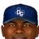

Major League Baseball · West Division
Dallas Griffins
18-23 .439 · 8th in West Division, 8 GB
Run differential -33 (142 RS, 175 RA) · Pythagorean 17-24 · L10 3-7 · Streak L1 · Home 10-10 · Road 8-13
Globe Life Field (capacity 40,300)
High Minors:  Amarillo Sod Poodles · Low Minors:
Amarillo Sod Poodles · Low Minors:  Fort Worth Quakers
Fort Worth Quakers
Depth chart & lineupsPayrollTransactionsLeague financesStaffBallparkRecord bookThe season so far
Season so far games over .500 by date
Recent results
Roster (28)
| # | Player | Pos | B/T | Age |
|---|---|---|---|---|
| 56 | Chris Haney | SP | L/L | 33 |
| 41 | John Lackey | SP | R/R | 23 |
| 46 | Brian Meadows | SP | R/R | 26 |
| 7 | Jesus Olague | SP | R/R | 27 |
| 16 | Brady Raggio | SP | R/R | 29 |
| 61 |  Carlos Almanzar | RP | R/R | 28 |
| 36 | Luis Arroyo | RP | L/L | 28 |
| 58 | Cory Bailey | RP | R/R | 31 |
| 57 | Nate Bump | RP | R/R | 25 |
| 10 | Masao Kida | RP | R/R | 33 |
| 21 | Mike MacDougal | RP | S/R | 25 |
| 20 | David Riske | RP | R/R | 25 |
| 15 | Sandy Alomar Jr. | C | R/R | 35 |
| 8 | Javy Lopez | C | R/R | 31 |
| 97 | Todd Betts | 1B | L/R | 28 |
| 9 | Edwin Encarnacion | 1B | R/R | 19 |
| 45 | Jose Mayobanex Fernandez | 1B | R/R | 27 |
| 12 | Ricky Gutierrez | 2B | R/R | 31 |
| 13 | Mike Mordecai | 3B | S/R | 34 |
| 30 | Adam Everett IL-60 | SS | R/R | 25 |
| 30 | Adam Everett IL-60 | SS | R/R | 25 |
| 18 | Jorge Nunez | SS | R/R | 27 |
| 3 | Pokey Reese | SS | R/R | 28 |
| 73 | Ryan Langerhans | LF | L/L | 22 |
| 17 | Brian Lesher | LF | R/L | 31 |
| 96 | Lew Ford | CF | R/R | 25 |
| 32 | Emil Brown | RF | R/R | 27 |
| 70 | Jeremy Reed | RF | L/L | 20 |
2002 batting
| Player | G | PA | AB | R | H | 2B | 3B | HR | RBI | BB | K | SB | AVG | OBP | SLG | OPS |
|---|---|---|---|---|---|---|---|---|---|---|---|---|---|---|---|---|
| Ricky Gutierrez | 39 | 175 | 155 | 20 | 37 | 6 | 1 | 1 | 6 | 14 | 23 | 1 | .239 | .306 | .310 | .616 |
| Pokey Reese | 38 | 172 | 154 | 20 | 40 | 5 | 0 | 1 | 7 | 10 | 26 | 9 | .260 | .315 | .312 | .627 |
| Lew Ford | 39 | 164 | 148 | 20 | 43 | 10 | 3 | 4 | 23 | 15 | 19 | 8 | .291 | .360 | .480 | .839 |
| Jose Mayobanex Fernandez | 39 | 157 | 134 | 21 | 37 | 6 | 1 | 9 | 33 | 19 | 26 | 1 | .276 | .376 | .537 | .913 |
| Javy Lopez | 33 | 141 | 125 | 13 | 28 | 8 | 1 | 1 | 9 | 10 | 23 | 0 | .224 | .298 | .328 | .626 |
| Mike Mordecai | 36 | 138 | 120 | 10 | 25 | 5 | 1 | 1 | 11 | 10 | 22 | 0 | .208 | .265 | .292 | .557 |
| Brian Lesher | 36 | 126 | 109 | 8 | 24 | 3 | 2 | 1 | 9 | 13 | 29 | 1 | .220 | .306 | .312 | .618 |
| Emil Brown | 33 | 123 | 112 | 13 | 23 | 5 | 0 | 2 | 8 | 9 | 31 | 5 | .205 | .268 | .304 | .572 |
| Adam Everett | 21 | 76 | 67 | 4 | 13 | 5 | 1 | 0 | 8 | 5 | 7 | 1 | .194 | .257 | .299 | .555 |
| Edwin Encarnacion | 19 | 63 | 60 | 4 | 11 | 0 | 0 | 1 | 3 | 3 | 12 | 3 | .183 | .222 | .233 | .456 |
| Jeremy Reed | 19 | 50 | 47 | 2 | 12 | 1 | 1 | 1 | 7 | 3 | 8 | 1 | .255 | .300 | .383 | .683 |
| Sandy Alomar Jr. | 13 | 45 | 43 | 1 | 7 | 0 | 0 | 1 | 3 | 2 | 5 | 0 | .163 | .200 | .233 | .433 |
| Ryan Langerhans | 14 | 44 | 37 | 4 | 8 | 2 | 0 | 1 | 3 | 6 | 8 | 0 | .216 | .341 | .351 | .692 |
| Jorge Nunez | 7 | 21 | 18 | 1 | 4 | 0 | 0 | 0 | 2 | 1 | 8 | 1 | .222 | .263 | .222 | .485 |
| Todd Betts | 8 | 18 | 15 | 0 | 2 | 0 | 0 | 0 | 0 | 3 | 5 | 0 | .133 | .278 | .133 | .411 |
| Juan Melo | 2 | 6 | 6 | 1 | 3 | 0 | 0 | 1 | 2 | 0 | 2 | 0 | .500 | .500 | 1.000 | 1.500 |
| Luis de los Santos | 1 | 1 | 1 | 0 | 0 | 0 | 0 | 0 | 0 | 0 | 0 | 0 | .000 | .000 | .000 | .000 |
| Team | 41 | 1520 | 1351 | 142 | 317 | 56 | 11 | 25 | 134 | 123 | 254 | 31 | .235 | .304 | .348 | .652 |
2002 batting, advanced
| Player | PA | AVG | OBP | SLG | OPS+ | ISO | BABIP | BB% | K% | WPA | UBR | WAR |
|---|---|---|---|---|---|---|---|---|---|---|---|---|
| Ricky Gutierrez | 175 | .239 | .306 | .310 | 69 | .071 | .271 | 8.0% | 13.1% | -1.04 | -2.3 | -0.8 |
| Pokey Reese | 172 | .260 | .315 | .312 | 72 | .052 | .305 | 5.8% | 15.1% | 0.39 | -2.0 | 0.7 |
| Lew Ford | 164 | .291 | .360 | .480 | 126 | .189 | .312 | 9.1% | 11.6% | 0.85 | -3.1 | 1.3 |
| Jose Mayobanex Fernandez | 157 | .276 | .376 | .537 | 145 | .261 | .280 | 12.1% | 16.6% | 0.81 | -0.1 | 1.0 |
| Javy Lopez | 141 | .224 | .298 | .328 | 71 | .104 | .262 | 7.1% | 16.3% | -1.13 | -2.5 | 0.0 |
| Mike Mordecai | 138 | .208 | .265 | .292 | 52 | .083 | .242 | 7.2% | 15.9% | -0.92 | -0.2 | -0.6 |
| Brian Lesher | 126 | .220 | .306 | .312 | 69 | .092 | .287 | 10.3% | 23.0% | -0.29 | 0.0 | -0.2 |
| Emil Brown | 123 | .205 | .268 | .304 | 56 | .098 | .263 | 7.3% | 25.2% | -0.82 | -0.1 | -0.4 |
| Adam Everett | 76 | .194 | .257 | .299 | 51 | .104 | .213 | 6.6% | 9.2% | -0.36 | -0.5 | -0.1 |
| Edwin Encarnacion | 63 | .183 | .222 | .233 | 24 | .050 | .213 | 4.8% | 19.0% | -0.81 | -0.1 | -0.4 |
| Jeremy Reed | 50 | .255 | .300 | .383 | 84 | .128 | .289 | 6.0% | 16.0% | 0.53 | -0.7 | -0.2 |
| Sandy Alomar Jr. | 45 | .163 | .200 | .233 | 17 | .070 | .162 | 4.4% | 11.1% | -0.44 | -0.7 | -0.3 |
| Ryan Langerhans | 44 | .216 | .341 | .351 | 89 | .135 | .250 | 13.6% | 18.2% | -0.35 | 0.3 | 0.1 |
| Jorge Nunez | 21 | .222 | .263 | .222 | 34 | .000 | .400 | 4.8% | 38.1% | -0.12 | -0.4 | -0.2 |
| Todd Betts | 18 | .133 | .278 | .133 | 18 | .000 | .200 | 16.7% | 27.8% | -0.09 | 0.0 | -0.1 |
| Juan Melo | 6 | .500 | .500 | 1.000 | 294 | .500 | .667 | 0.0% | 33.3% | 0.19 | 0.0 | 0.2 |
| Luis de los Santos | 1 | .000 | .000 | .000 | -100 | .000 | .000 | 0.0% | 0.0% | 0.00 | 0.0 | 0.0 |
| Team | 1520 | .235 | .304 | .348 | 77 | .113 | .270 | 8.1% | 16.7% | -3.60 | -12.4 | -0.1 |
2002 pitching
| Pitcher | G | GS | W | L | SV | IP | H | R | ER | BB | K | HR | ERA | WHIP |
|---|---|---|---|---|---|---|---|---|---|---|---|---|---|---|
| Chris Haney | 9 | 9 | 4 | 4 | 0 | 55.0 | 54 | 27 | 15 | 24 | 30 | 4 | 2.45 | 1.42 |
| John Lackey | 9 | 9 | 3 | 4 | 0 | 51.0 | 51 | 30 | 27 | 30 | 36 | 3 | 4.76 | 1.59 |
| Brian Meadows | 9 | 9 | 3 | 4 | 0 | 50.2 | 63 | 32 | 32 | 11 | 22 | 9 | 5.68 | 1.46 |
| Jesus Olague | 8 | 8 | 3 | 4 | 0 | 44.0 | 41 | 23 | 21 | 24 | 38 | 4 | 4.30 | 1.48 |
| Brady Raggio | 6 | 6 | 2 | 4 | 0 | 32.2 | 43 | 16 | 16 | 8 | 20 | 4 | 4.41 | 1.56 |
| David Riske | 17 | 0 | 0 | 1 | 4 | 24.0 | 14 | 5 | 5 | 10 | 26 | 2 | 1.88 | 1.00 |
| Nate Bump | 16 | 0 | 2 | 0 | 1 | 21.0 | 15 | 6 | 6 | 7 | 10 | 2 | 2.57 | 1.05 |
| Carlos Almanzar | 16 | 0 | 0 | 0 | 5 | 19.1 | 15 | 4 | 4 | 7 | 14 | 4 | 1.86 | 1.14 |
| Cory Bailey | 15 | 0 | 0 | 1 | 1 | 18.0 | 22 | 12 | 11 | 7 | 17 | 3 | 5.50 | 1.61 |
| Mike MacDougal | 13 | 0 | 0 | 0 | 2 | 14.0 | 10 | 4 | 4 | 14 | 11 | 0 | 2.57 | 1.71 |
| Masao Kida | 6 | 0 | 0 | 0 | 0 | 11.2 | 9 | 2 | 2 | 4 | 7 | 0 | 1.54 | 1.11 |
| Roberto Pimentel | 4 | 0 | 1 | 0 | 0 | 10.1 | 6 | 3 | 3 | 1 | 7 | 2 | 2.61 | 0.68 |
| Eric Ireland | 3 | 0 | 0 | 0 | 0 | 8.2 | 8 | 2 | 2 | 3 | 5 | 1 | 2.08 | 1.27 |
| Luis Arroyo | 4 | 0 | 0 | 1 | 0 | 1.2 | 0 | 5 | 5 | 9 | 0 | 0 | 27.00 | 5.40 |
| Jerry Spradlin | 1 | 0 | 0 | 0 | 0 | 0.2 | 3 | 4 | 4 | 1 | 0 | 2 | 54.00 | 6.00 |
| Team | 41 | 41 | 18 | 23 | 13 | 362.2 | 354 | 175 | 157 | 160 | 243 | 40 | 3.90 | 1.42 |
2002 pitching, advanced
| Pitcher | IP | ERA | WHIP | K/9 | BB/9 | HR/9 | K% | BB% | K-BB% | FIP | ERA+ | GB% | WPA | WAR |
|---|---|---|---|---|---|---|---|---|---|---|---|---|---|---|
| Chris Haney | 55.0 | 2.45 | 1.42 | 4.9 | 3.9 | 0.7 | 12.3% | 9.8% | 2.5% | 4.30 | 165 | 51.6% | 0.01 | 0.7 |
| John Lackey | 51.0 | 4.76 | 1.59 | 6.4 | 5.3 | 0.5 | 15.3% | 12.7% | 2.5% | 3.99 | 85 | 49.1% | -0.52 | 0.8 |
| Brian Meadows | 50.2 | 5.68 | 1.46 | 3.9 | 2.0 | 1.6 | 10.0% | 5.0% | 5.0% | 4.85 | 71 | 43.1% | -0.70 | 0.3 |
| Jesus Olague | 44.0 | 4.30 | 1.48 | 7.8 | 4.9 | 0.8 | 20.1% | 12.7% | 7.4% | 3.85 | 95 | 56.5% | 0.38 | 0.8 |
| Brady Raggio | 32.2 | 4.41 | 1.56 | 5.5 | 2.2 | 1.1 | 13.8% | 5.5% | 8.3% | 3.86 | 92 | 53.5% | -0.26 | 0.6 |
| David Riske | 24.0 | 1.88 | 1.00 | 9.8 | 3.8 | 0.8 | 27.7% | 10.6% | 17.0% | 2.92 | 217 | 46.5% | 0.88 | 0.5 |
| Nate Bump | 21.0 | 2.57 | 1.05 | 4.3 | 3.0 | 0.9 | 11.9% | 8.3% | 3.6% | 4.18 | 158 | 46.0% | 0.89 | 0.1 |
| Carlos Almanzar | 19.1 | 1.86 | 1.14 | 6.5 | 3.3 | 1.9 | 17.9% | 9.0% | 9.0% | 5.08 | 218 | 59.5% | 1.17 | -0.2 |
| Cory Bailey | 18.0 | 5.50 | 1.61 | 8.5 | 3.5 | 1.5 | 20.2% | 8.3% | 11.9% | 4.20 | 74 | 50.0% | -0.48 | 0.1 |
| Mike MacDougal | 14.0 | 2.57 | 1.71 | 7.1 | 9.0 | 0.0 | 16.9% | 21.5% | -4.6% | 4.18 | 158 | 63.3% | -0.38 | 0.0 |
| Masao Kida | 11.2 | 1.54 | 1.11 | 5.4 | 3.1 | 0.0 | 14.3% | 8.2% | 6.1% | 2.58 | 263 | 60.7% | 0.20 | 0.3 |
| Roberto Pimentel | 10.1 | 2.61 | 0.68 | 6.1 | 0.9 | 1.7 | 18.4% | 2.6% | 15.8% | 4.21 | 155 | 66.7% | 0.28 | 0.0 |
| Eric Ireland | 8.2 | 2.08 | 1.27 | 5.2 | 3.1 | 1.0 | 13.5% | 8.1% | 5.4% | 4.14 | 196 | 57.1% | 0.04 | 0.0 |
| Luis Arroyo | 1.2 | 27.00 | 5.40 | 0.0 | 48.6 | 0.0 | 0.0% | 64.3% | -64.3% | 18.95 | 15 | 60.0% | -0.57 | -0.5 |
| Jerry Spradlin | 0.2 | 54.00 | 6.00 | 0.0 | 13.5 | 27.0 | 0.0% | 16.7% | -16.7% | 46.25 | 8 | 50.0% | -0.13 | -0.3 |
| Team | 362.2 | 3.90 | 1.42 | 6.0 | 4.0 | 1.0 | 15.3% | 10.1% | 5.2% | 4.25 | 104 | 51.8% | 0.81 | 3.1 |
2002 fielding
| Player | Pos | G | GS | Inn | TC | PO | A | E | DP | FPct | ZR | Arm | Framing |
|---|---|---|---|---|---|---|---|---|---|---|---|---|---|
| Fergie Jenkins | P | 41 | 41 | 328.1 | 69 | 24 | 41 | 4 | 3 | .942 | 0.0 | - | - |
| Charlie Hough | P | 40 | 40 | 285.1 | 77 | 30 | 46 | 1 | 3 | .987 | 0.0 | - | - |
| Jon Matlack | P | 35 | 33 | 270.0 | 64 | 17 | 42 | 5 | 2 | .922 | 0.0 | - | - |
| Fergie Jenkins | P | 37 | 37 | 270.0 | 71 | 27 | 39 | 5 | 1 | .930 | 0.0 | - | - |
| Charlie Hough | P | 36 | 36 | 266.0 | 64 | 12 | 51 | 1 | 2 | .984 | 0.0 | - | - |
| Kevin Brown | P | 35 | 35 | 265.2 | 81 | 37 | 36 | 8 | 4 | .901 | 0.0 | - | - |
| Williams Bibby | P | 41 | 41 | 264.0 | 61 | 22 | 36 | 3 | 4 | .951 | 0.0 | - | - |
| Fergie Jenkins | P | 37 | 37 | 259.0 | 78 | 25 | 50 | 3 | 5 | .962 | 0.0 | - | - |
| Claude Osteen | P | 37 | 36 | 257.0 | 60 | 9 | 51 | 0 | 5 | 1.000 | 0.0 | - | - |
| Charlie Hough | P | 34 | 33 | 252.0 | 73 | 25 | 46 | 2 | 4 | .973 | 0.0 | - | - |
| Charlie Hough | P | 34 | 34 | 252.0 | 71 | 27 | 43 | 1 | 4 | .986 | 0.0 | - | - |
| Charlie Hough | P | 34 | 34 | 250.1 | 55 | 18 | 35 | 2 | 5 | .964 | 0.0 | - | - |
| Ken Hill | P | 35 | 35 | 250.2 | 60 | 22 | 37 | 1 | 5 | .983 | 0.0 | - | - |
| Gaylord Perry | P | 32 | 32 | 250.1 | 37 | 11 | 24 | 2 | 1 | .946 | 0.0 | - | - |
| Fergie Jenkins | P | 34 | 30 | 249.0 | 67 | 29 | 37 | 1 | 4 | .985 | 0.0 | - | - |
| Joe Coleman | P | 40 | 36 | 247.1 | 58 | 21 | 35 | 2 | 3 | .966 | 0.0 | - | - |
| Frank Tanana | P | 35 | 35 | 246.1 | 53 | 18 | 35 | 0 | 2 | 1.000 | 0.0 | - | - |
| Pete Richert | P | 36 | 34 | 245.2 | 47 | 13 | 29 | 5 | 0 | .894 | 0.0 | - | - |
| Steve Comer | P | 36 | 36 | 242.1 | 61 | 19 | 38 | 4 | 0 | .934 | 0.0 | - | - |
| Nolan Ryan | P | 32 | 32 | 239.1 | 33 | 11 | 19 | 3 | 0 | .909 | 0.0 | - | - |
| Gaylord Perry | P | 34 | 34 | 238.0 | 43 | 14 | 28 | 1 | 2 | .977 | 0.0 | - | - |
| Niedbalski Bosman | P | 35 | 35 | 237.0 | 49 | 21 | 27 | 1 | 1 | .980 | 0.0 | - | - |
| McCarthy Alexander | P | 34 | 34 | 237.0 | 67 | 17 | 46 | 4 | 4 | .940 | 0.0 | - | - |
| Jon Matlack | P | 35 | 34 | 234.2 | 34 | 5 | 25 | 4 | 0 | .882 | 0.0 | - | - |
| Bert Blyleven | P | 30 | 30 | 234.2 | 46 | 10 | 35 | 1 | 4 | .978 | 0.0 | - | - |
| Kevin Brown | P | 34 | 34 | 233.0 | 74 | 29 | 42 | 3 | 2 | .959 | 0.0 | - | - |
| Niedbalski Bosman | P | 36 | 34 | 231.0 | 51 | 19 | 32 | 0 | 3 | 1.000 | 0.0 | - | - |
| Charlie Hough | P | 33 | 33 | 230.1 | 53 | 20 | 32 | 1 | 2 | .981 | 0.0 | - | - |
| Charlie Hough | P | 34 | 34 | 228.0 | 50 | 14 | 35 | 1 | 4 | .980 | 0.0 | - | - |
| Kenny Rogers | P | 34 | 34 | 227.1 | 66 | 18 | 46 | 2 | 6 | .970 | 0.0 | - | - |
| Jose Guzman | P | 33 | 33 | 224.0 | 39 | 16 | 22 | 1 | 3 | .974 | 0.0 | - | - |
| Danny Darwin | P | 35 | 32 | 223.2 | 37 | 13 | 21 | 3 | 2 | .919 | 0.0 | - | - |
| Joe Coleman | P | 33 | 33 | 223.0 | 53 | 30 | 20 | 3 | 0 | .943 | 0.0 | - | - |
| Mike Smithson | P | 33 | 33 | 223.1 | 54 | 19 | 33 | 2 | 3 | .963 | 0.0 | - | - |
| Bobby Witt | P | 33 | 32 | 222.0 | 41 | 18 | 18 | 5 | 2 | .878 | 0.0 | - | - |
| Joe Coleman | P | 39 | 29 | 219.0 | 46 | 16 | 30 | 0 | 3 | 1.000 | 0.0 | - | - |
| Phil Ortega | P | 34 | 34 | 219.2 | 47 | 13 | 33 | 1 | 2 | .979 | 0.0 | - | - |
| Rick Helling | P | 35 | 35 | 219.1 | 31 | 4 | 24 | 3 | 2 | .903 | 0.0 | - | - |
| Charlie Hough | P | 32 | 32 | 218.2 | 44 | 11 | 31 | 2 | 2 | .955 | 0.0 | - | - |
| Denny McLain | P | 33 | 32 | 217.0 | 53 | 27 | 26 | 0 | 1 | 1.000 | 0.0 | - | - |
| Rick Helling | P | 35 | 35 | 217.0 | 26 | 8 | 17 | 1 | 1 | .962 | 0.0 | - | - |
| Mike McCormick | P | 41 | 32 | 216.0 | 39 | 5 | 34 | 0 | 1 | 1.000 | 0.0 | - | - |
| Jackie Brown | P | 35 | 26 | 216.2 | 43 | 17 | 24 | 2 | 4 | .953 | 0.0 | - | - |
| Rick Helling | P | 33 | 33 | 216.1 | 21 | 8 | 12 | 1 | 0 | .952 | 0.0 | - | - |
| Rick Helling | P | 34 | 34 | 215.2 | 32 | 15 | 16 | 1 | 1 | .969 | 0.0 | - | - |
| Claude Osteen | P | 40 | 29 | 212.1 | 44 | 11 | 30 | 3 | 2 | .932 | 0.0 | - | - |
| Aaron Sele | P | 33 | 33 | 212.2 | 39 | 17 | 20 | 2 | 3 | .949 | 0.0 | - | - |
| Joe McClain | P | 33 | 29 | 212.0 | 40 | 15 | 24 | 1 | 0 | .975 | 0.0 | - | - |
| Bennie Daniels | P | 32 | 28 | 212.0 | 59 | 18 | 38 | 3 | 1 | .949 | 0.0 | - | - |
| Dean Briles | P | 32 | 31 | 210.0 | 28 | 10 | 18 | 0 | 0 | 1.000 | 0.0 | - | - |
| Kevin Brown | P | 33 | 33 | 210.2 | 52 | 18 | 32 | 2 | 3 | .962 | 0.0 | - | - |
| Bobby Witt | P | 34 | 32 | 209.0 | 38 | 10 | 27 | 1 | 2 | .974 | 0.0 | - | - |
| Jose Guzman | P | 37 | 30 | 208.1 | 50 | 14 | 34 | 2 | 3 | .960 | 0.0 | - | - |
| Kenny Rogers | P | 35 | 33 | 208.1 | 68 | 18 | 46 | 4 | 4 | .941 | 0.0 | - | - |
| Kenny Rogers | P | 31 | 31 | 208.0 | 48 | 11 | 35 | 2 | 3 | .958 | 0.0 | - | - |
| Jose Guzman | P | 30 | 30 | 206.2 | 42 | 15 | 24 | 3 | 1 | .929 | 0.0 | - | - |
| Aaron Sele | P | 33 | 33 | 205.0 | 40 | 8 | 30 | 2 | 2 | .950 | 0.0 | - | - |
| Doc Medich | P | 34 | 32 | 204.1 | 39 | 9 | 27 | 3 | 3 | .923 | 0.0 | - | - |
| Nolan Ryan | P | 30 | 30 | 204.0 | 20 | 7 | 13 | 0 | 1 | 1.000 | 0.0 | - | - |
| Paul Kilgus | P | 32 | 32 | 203.1 | 47 | 11 | 34 | 2 | 4 | .957 | 0.0 | - | - |
| Ed Correa | P | 32 | 32 | 202.1 | 57 | 20 | 34 | 3 | 0 | .947 | 0.0 | - | - |
| Bert Blyleven | P | 24 | 24 | 202.1 | 48 | 17 | 31 | 0 | 3 | 1.000 | 0.0 | - | - |
| Darren Oliver | P | 32 | 32 | 201.1 | 32 | 7 | 23 | 2 | 0 | .938 | 0.0 | - | - |
| Roger Pavlik | P | 34 | 34 | 201.0 | 25 | 9 | 14 | 2 | 1 | .920 | 0.0 | - | - |
| Camilo Pascual | P | 31 | 31 | 201.0 | 54 | 19 | 35 | 0 | 0 | 1.000 | 0.0 | - | - |
| Buster Narum | P | 38 | 32 | 199.0 | 26 | 9 | 16 | 1 | 2 | .962 | 0.0 | - | - |
| Bobby Witt | P | 33 | 32 | 199.2 | 39 | 10 | 28 | 1 | 3 | .974 | 0.0 | - | - |
| Fergie Jenkins | P | 29 | 29 | 198.0 | 49 | 24 | 23 | 2 | 3 | .959 | 0.0 | - | - |
| Phil Ortega | P | 33 | 31 | 197.1 | 42 | 11 | 28 | 3 | 1 | .929 | 0.0 | - | - |
| Jim Umbarger | P | 30 | 30 | 197.1 | 35 | 4 | 30 | 1 | 3 | .971 | 0.0 | - | - |
| Dave Stenhouse | P | 34 | 26 | 197.0 | 54 | 21 | 33 | 0 | 3 | 1.000 | 0.0 | - | - |
| John Burkett | P | 32 | 32 | 195.0 | 30 | 11 | 18 | 1 | 0 | .967 | 0.0 | - | - |
| Pete Richert | P | 34 | 29 | 194.0 | 36 | 5 | 30 | 1 | 3 | .972 | 0.0 | - | - |
| Bobby Witt | P | 31 | 31 | 194.1 | 36 | 13 | 22 | 1 | 1 | .972 | 0.0 | - | - |
| Frank Tanana | P | 30 | 30 | 194.1 | 39 | 8 | 30 | 1 | 0 | .974 | 0.0 | - | - |
| Niedbalski Bosman | P | 31 | 26 | 193.0 | 51 | 18 | 32 | 1 | 1 | .980 | 0.0 | - | - |
| Casey Cox | P | 37 | 30 | 192.0 | 39 | 13 | 24 | 2 | 0 | .949 | 0.0 | - | - |
| Dave Stewart | P | 32 | 27 | 192.1 | 33 | 11 | 19 | 3 | 2 | .909 | 0.0 | - | - |
| Kevin Brown | P | 28 | 28 | 191.0 | 58 | 15 | 41 | 2 | 6 | .966 | 0.0 | - | - |
| McCarthy Alexander | P | 31 | 28 | 191.0 | 57 | 17 | 36 | 4 | 1 | .930 | 0.0 | - | - |
| Roger Pavlik | P | 31 | 31 | 191.2 | 53 | 20 | 32 | 1 | 4 | .981 | 0.0 | - | - |
| John Burkett | P | 30 | 30 | 189.1 | 41 | 12 | 28 | 1 | 1 | .976 | 0.0 | - | - |
| Steve Hargan | P | 33 | 26 | 189.1 | 60 | 19 | 36 | 5 | 4 | .917 | 0.0 | - | - |
| Jeff Russell | P | 34 | 24 | 188.2 | 54 | 12 | 37 | 5 | 3 | .907 | 0.0 | - | - |
| Doug Davis | P | 30 | 30 | 186.0 | 32 | 5 | 25 | 2 | 2 | .938 | 0.0 | - | - |
| Steve Hargan | P | 37 | 27 | 186.2 | 54 | 16 | 33 | 5 | 3 | .907 | 0.0 | - | - |
| Mike Mason | P | 36 | 24 | 184.1 | 26 | 4 | 22 | 0 | 0 | 1.000 | 0.0 | - | - |
| Gaylord Perry | P | 22 | 22 | 184.0 | 31 | 9 | 22 | 0 | 1 | 1.000 | 0.0 | - | - |
| Danny Darwin | P | 28 | 26 | 183.0 | 41 | 20 | 18 | 3 | 1 | .927 | 0.0 | - | - |
| Kevin Gross | P | 31 | 30 | 183.2 | 37 | 15 | 20 | 2 | 5 | .946 | 0.0 | - | - |
| Charlie Hough | P | 30 | 30 | 182.0 | 32 | 13 | 18 | 1 | 3 | .969 | 0.0 | - | - |
| Williams Bibby | P | 26 | 23 | 180.1 | 24 | 5 | 18 | 1 | 1 | .958 | 0.0 | - | - |
| Kevin Brown | P | 26 | 26 | 180.0 | 42 | 15 | 24 | 3 | 0 | .929 | 0.0 | - | - |
| Mike Mason | P | 38 | 30 | 179.0 | 38 | 4 | 30 | 4 | 0 | .895 | 0.0 | - | - |
| Phil Ortega | P | 35 | 29 | 179.2 | 38 | 11 | 26 | 1 | 1 | .974 | 0.0 | - | - |
| Moore Broberg | P | 39 | 25 | 176.0 | 44 | 16 | 27 | 1 | 2 | .977 | 0.0 | - | - |
| Don Rudolph | P | 37 | 23 | 176.1 | 40 | 6 | 32 | 2 | 0 | .950 | 0.0 | - | - |
| Don Rudolph | P | 37 | 26 | 174.0 | 36 | 9 | 27 | 0 | 2 | 1.000 | 0.0 | - | - |
| Bobby Witt | P | 22 | 22 | 174.1 | 34 | 15 | 15 | 4 | 2 | .882 | 0.0 | - | - |
| Rick Honeycutt | P | 25 | 25 | 174.2 | 51 | 11 | 39 | 1 | 5 | .980 | 0.0 | - | - |
| Darren Oliver | P | 30 | 30 | 173.2 | 28 | 4 | 23 | 1 | 3 | .964 | 0.0 | - | - |
| Niedbalski Bosman | P | 29 | 29 | 173.0 | 46 | 17 | 28 | 1 | 3 | .978 | 0.0 | - | - |
| Tom Cheney | P | 37 | 23 | 173.1 | 36 | 9 | 26 | 1 | 1 | .972 | 0.0 | - | - |
| Buster Narum | P | 46 | 24 | 173.2 | 59 | 17 | 39 | 3 | 2 | .949 | 0.0 | - | - |
| Nolan Ryan | P | 27 | 27 | 173.0 | 21 | 7 | 14 | 0 | 1 | 1.000 | 0.0 | - | - |
| Jose Guzman | P | 29 | 29 | 172.1 | 37 | 13 | 24 | 0 | 0 | 1.000 | 0.0 | - | - |
| Rich Hand | P | 30 | 28 | 171.0 | 38 | 10 | 25 | 3 | 2 | .921 | 0.0 | - | - |
| Casey Cox | P | 52 | 13 | 171.2 | 32 | 11 | 21 | 0 | 3 | 1.000 | 0.0 | - | - |
| Doc Medich | P | 28 | 22 | 171.0 | 43 | 11 | 31 | 1 | 2 | .977 | 0.0 | - | - |
| Kevin Brown | P | 26 | 25 | 170.0 | 55 | 20 | 31 | 4 | 2 | .927 | 0.0 | - | - |
| Jose Guzman | P | 25 | 25 | 169.2 | 45 | 12 | 32 | 1 | 2 | .978 | 0.0 | - | - |
| Dick Donovan | P | 23 | 22 | 168.2 | 45 | 15 | 26 | 4 | 1 | .911 | 0.0 | - | - |
| Bennie Daniels | P | 35 | 24 | 168.2 | 62 | 16 | 41 | 5 | 0 | .919 | 0.0 | - | - |
| Dock Ellis | P | 23 | 22 | 167.1 | 34 | 15 | 16 | 3 | 4 | .912 | 0.0 | - | - |
| Kenny Rogers | P | 24 | 24 | 167.1 | 46 | 9 | 33 | 4 | 4 | .913 | 0.0 | - | - |
| Roger Pavlik | P | 26 | 26 | 166.1 | 40 | 10 | 27 | 3 | 2 | .925 | 0.0 | - | - |
| Rick Honeycutt | P | 30 | 26 | 164.0 | 40 | 3 | 35 | 2 | 0 | .950 | 0.0 | - | - |
| Camilo Pascual | P | 28 | 27 | 164.2 | 36 | 10 | 25 | 1 | 1 | .972 | 0.0 | - | - |
| Bennie Daniels | P | 33 | 24 | 163.0 | 52 | 10 | 39 | 3 | 4 | .942 | 0.0 | - | - |
| Mike Paul | P | 49 | 20 | 162.0 | 26 | 7 | 19 | 0 | 3 | 1.000 | 0.0 | - | - |
| Bennie Daniels | P | 44 | 21 | 161.0 | 72 | 24 | 45 | 3 | 2 | .958 | 0.0 | - | - |
| Bobby Witt | P | 25 | 25 | 161.1 | 31 | 14 | 16 | 1 | 1 | .968 | 0.0 | - | - |
| Jim Merritt | P | 35 | 19 | 160.0 | 31 | 7 | 22 | 2 | 1 | .935 | 0.0 | - | - |
| Frank Tanana | P | 29 | 22 | 159.1 | 48 | 9 | 37 | 2 | 0 | .958 | 0.0 | - | - |
| Mike McCormick | P | 44 | 21 | 158.0 | 30 | 8 | 22 | 0 | 1 | 1.000 | 0.0 | - | - |
| Jim Hannan | P | 35 | 28 | 158.1 | 32 | 11 | 21 | 0 | 2 | 1.000 | 0.0 | - | - |
| Bobby Witt | P | 31 | 31 | 157.2 | 31 | 8 | 20 | 3 | 1 | .903 | 0.0 | - | - |
| Nolan Ryan | P | 27 | 27 | 157.1 | 21 | 2 | 16 | 3 | 1 | .857 | 0.0 | - | - |
| Gaylord Perry | P | 24 | 24 | 155.0 | 37 | 11 | 25 | 1 | 2 | .973 | 0.0 | - | - |
| Darren Oliver | P | 28 | 28 | 154.0 | 33 | 7 | 26 | 0 | 1 | 1.000 | 0.0 | - | - |
| Bill Gogolewski | P | 36 | 21 | 151.0 | 28 | 7 | 21 | 0 | 2 | 1.000 | 0.0 | - | - |
| Charlie Leibrandt | P | 26 | 26 | 150.1 | 56 | 9 | 45 | 2 | 5 | .964 | 0.0 | - | - |
| Claude Osteen | P | 28 | 22 | 150.1 | 34 | 4 | 30 | 0 | 2 | 1.000 | 0.0 | - | - |
| Nino Burnside | P | 40 | 20 | 149.2 | 29 | 11 | 16 | 2 | 0 | .931 | 0.0 | - | - |
| Doc Medich | P | 29 | 19 | 149.0 | 41 | 6 | 33 | 2 | 0 | .951 | 0.0 | - | - |
| John Burkett | P | 30 | 25 | 147.1 | 25 | 7 | 18 | 0 | 2 | 1.000 | 0.0 | - | - |
| Jon Matlack | P | 33 | 14 | 147.2 | 28 | 4 | 24 | 0 | 1 | 1.000 | 0.0 | - | - |
| Danny Darwin | P | 22 | 22 | 146.0 | 26 | 8 | 16 | 2 | 3 | .923 | 0.0 | - | - |
| Steve Foucault | P | 69 | 0 | 144.1 | 32 | 11 | 19 | 2 | 3 | .938 | 0.0 | - | - |
| Snyder Kutyna | P | 50 | 6 | 143.0 | 50 | 13 | 36 | 1 | 4 | .980 | 0.0 | - | - |
| Jim Kern | P | 71 | 0 | 143.0 | 32 | 9 | 16 | 7 | 1 | .781 | 0.0 | - | - |
| Doc Medich | P | 20 | 20 | 143.1 | 42 | 15 | 26 | 1 | 1 | .976 | 0.0 | - | - |
| Barry Moore | P | 27 | 26 | 143.2 | 39 | 6 | 31 | 2 | 2 | .949 | 0.0 | - | - |
| Bobby Witt | P | 26 | 25 | 143.0 | 25 | 8 | 17 | 0 | 1 | 1.000 | 0.0 | - | - |
| Dock Ellis | P | 22 | 22 | 141.1 | 35 | 11 | 22 | 2 | 2 | .943 | 0.0 | - | - |
| Greg Harris | P | 42 | 19 | 140.2 | 39 | 14 | 20 | 5 | 1 | .872 | 0.0 | - | - |
| Mike Morgan | P | 34 | 25 | 140.0 | 35 | 7 | 26 | 2 | 3 | .943 | 0.0 | - | - |
| Jim Hannan | P | 25 | 22 | 140.1 | 29 | 8 | 20 | 1 | 2 | .966 | 0.0 | - | - |
| Niedbalski Bosman | P | 46 | 10 | 139.0 | 30 | 8 | 21 | 1 | 2 | .967 | 0.0 | - | - |
| Tom Cheney | P | 23 | 21 | 136.1 | 22 | 9 | 10 | 3 | 1 | .864 | 0.0 | - | - |
| Mike Mason | P | 27 | 22 | 135.0 | 28 | 9 | 19 | 0 | 1 | 1.000 | 0.0 | - | - |
| Joe Coleman | P | 28 | 22 | 134.0 | 24 | 9 | 14 | 1 | 0 | .958 | 0.0 | - | - |
| Barry Moore | P | 31 | 25 | 134.0 | 18 | 3 | 14 | 1 | 2 | .944 | 0.0 | - | - |
| Jim Umbarger | P | 56 | 12 | 131.0 | 35 | 8 | 26 | 1 | 2 | .971 | 0.0 | - | - |
| Mike Jeffcoat | P | 22 | 22 | 130.2 | 32 | 13 | 18 | 1 | 1 | .969 | 0.0 | - | - |
| Kevin Gross | P | 28 | 19 | 129.1 | 32 | 11 | 19 | 2 | 1 | .938 | 0.0 | - | - |
| Bob Tewksbury | P | 21 | 21 | 129.2 | 37 | 12 | 24 | 1 | 3 | .973 | 0.0 | - | - |
| Jim Hannan | P | 42 | 17 | 128.0 | 33 | 7 | 25 | 1 | 0 | .970 | 0.0 | - | - |
| Frank Bertaina | P | 27 | 23 | 127.1 | 26 | 9 | 17 | 0 | 2 | 1.000 | 0.0 | - | - |
| Rick Honeycutt | P | 20 | 20 | 127.2 | 36 | 3 | 30 | 3 | 1 | .917 | 0.0 | - | - |
| Ed Hobaugh | P | 26 | 18 | 126.1 | 31 | 7 | 22 | 2 | 3 | .935 | 0.0 | - | - |
| Moore Broberg | P | 18 | 18 | 125.0 | 22 | 10 | 12 | 0 | 1 | 1.000 | 0.0 | - | - |
| Steve Hargan | P | 35 | 8 | 124.1 | 26 | 6 | 18 | 2 | 1 | .923 | 0.0 | - | - |
| Casey Cox | P | 54 | 11 | 124.0 | 26 | 5 | 20 | 1 | 2 | .962 | 0.0 | - | - |
| Bill Gogolewski | P | 27 | 17 | 124.0 | 29 | 10 | 18 | 1 | 1 | .966 | 0.0 | - | - |
| Burt Hooton | P | 29 | 20 | 124.0 | 23 | 9 | 13 | 1 | 0 | .957 | 0.0 | - | - |
| Arias Butcher | P | 38 | 6 | 123.0 | 28 | 11 | 17 | 0 | 0 | 1.000 | 0.0 | - | - |
| Bill Gogolewski | P | 49 | 1 | 123.2 | 39 | 9 | 28 | 2 | 2 | .949 | 0.0 | - | - |
| Doc Medich | P | 21 | 21 | 122.2 | 26 | 5 | 21 | 0 | 0 | 1.000 | 0.0 | - | - |
| Esteban Loaiza | P | 30 | 15 | 120.1 | 25 | 8 | 17 | 0 | 0 | 1.000 | 0.0 | - | - |
| Jim Duckworth | P | 37 | 15 | 120.2 | 28 | 6 | 18 | 4 | 0 | .857 | 0.0 | - | - |
| Kenny Rogers | P | 20 | 20 | 120.2 | 41 | 6 | 34 | 1 | 3 | .976 | 0.0 | - | - |
| Jim Shellenback | P | 40 | 15 | 120.0 | 30 | 2 | 26 | 2 | 4 | .933 | 0.0 | - | - |
| Darold Knowles | P | 71 | 0 | 119.0 | 35 | 8 | 25 | 2 | 2 | .943 | 0.0 | - | - |
| Sonny Siebert | P | 25 | 20 | 119.2 | 38 | 13 | 25 | 0 | 0 | 1.000 | 0.0 | - | - |
| Moore Broberg | P | 22 | 20 | 118.2 | 24 | 5 | 18 | 1 | 1 | .958 | 0.0 | - | - |
| Palm Brunet | P | 24 | 20 | 118.0 | 18 | 2 | 15 | 1 | 2 | .944 | 0.0 | - | - |
| David Clyde | P | 28 | 21 | 117.0 | 16 | 2 | 12 | 2 | 1 | .875 | 0.0 | - | - |
| Steve Comer | P | 30 | 11 | 117.1 | 29 | 8 | 20 | 1 | 0 | .966 | 0.0 | - | - |
| Barry Moore | P | 32 | 18 | 117.2 | 34 | 9 | 24 | 1 | 1 | .971 | 0.0 | - | - |
| Jim Shellenback | P | 39 | 14 | 117.0 | 22 | 5 | 16 | 1 | 1 | .955 | 0.0 | - | - |
| Bennie Daniels | P | 33 | 18 | 116.1 | 25 | 3 | 22 | 0 | 1 | 1.000 | 0.0 | - | - |
| Phil Ortega | P | 31 | 16 | 115.2 | 28 | 4 | 20 | 4 | 3 | .857 | 0.0 | - | - |
| Alan Koch | P | 32 | 14 | 114.0 | 16 | 2 | 12 | 2 | 0 | .875 | 0.0 | - | - |
| Jim Hannan | P | 30 | 18 | 114.0 | 26 | 7 | 18 | 1 | 0 | .962 | 0.0 | - | - |
| Nino Burnside | P | 33 | 16 | 113.1 | 21 | 2 | 17 | 2 | 1 | .905 | 0.0 | - | - |
| McCarthy Alexander | P | 23 | 18 | 113.1 | 35 | 12 | 23 | 0 | 1 | 1.000 | 0.0 | - | - |
| Greg Harris | P | 58 | 0 | 113.0 | 25 | 8 | 16 | 1 | 4 | .960 | 0.0 | - | - |
| Darold Knowles | P | 61 | 1 | 113.1 | 39 | 6 | 28 | 5 | 4 | .872 | 0.0 | - | - |
| Casey Cox | P | 66 | 0 | 113.0 | 27 | 2 | 24 | 1 | 1 | .963 | 0.0 | - | - |
| Steve Ridzik | P | 49 | 3 | 112.0 | 22 | 7 | 13 | 2 | 2 | .909 | 0.0 | - | - |
| Greg Harris | P | 73 | 0 | 111.1 | 27 | 7 | 18 | 2 | 2 | .926 | 0.0 | - | - |
| Ken Hill | P | 19 | 19 | 111.0 | 38 | 13 | 25 | 0 | 1 | 1.000 | 0.0 | - | - |
| Bob Humphreys | P | 58 | 1 | 111.2 | 21 | 8 | 13 | 0 | 2 | 1.000 | 0.0 | - | - |
| Dickie Noles | P | 28 | 13 | 110.1 | 32 | 13 | 16 | 3 | 2 | .906 | 0.0 | - | - |
| Mike Jeffcoat | P | 44 | 12 | 110.2 | 15 | 4 | 10 | 1 | 3 | .933 | 0.0 | - | - |
| Bob Priddy | P | 46 | 8 | 110.0 | 35 | 13 | 21 | 1 | 0 | .971 | 0.0 | - | - |
| Danny Darwin | P | 53 | 2 | 109.2 | 18 | 7 | 11 | 0 | 1 | 1.000 | 0.0 | - | - |
| Steve Ridzik | P | 63 | 0 | 109.2 | 25 | 5 | 19 | 1 | 3 | .960 | 0.0 | - | - |
| Bill Hands | P | 18 | 18 | 109.2 | 30 | 11 | 16 | 3 | 1 | .900 | 0.0 | - | - |
| Kenny Rogers | P | 63 | 9 | 109.2 | 23 | 5 | 15 | 3 | 1 | .870 | 0.0 | - | - |
| Dave Schmidt | P | 33 | 8 | 109.2 | 20 | 2 | 16 | 2 | 2 | .900 | 0.0 | - | - |
| Darren Oliver | P | 21 | 21 | 108.0 | 22 | 7 | 15 | 0 | 0 | 1.000 | 0.0 | - | - |
| Dean Briles | P | 28 | 15 | 108.1 | 16 | 3 | 13 | 0 | 1 | 1.000 | 0.0 | - | - |
| Mitch Williams | P | 85 | 1 | 108.2 | 23 | 5 | 15 | 3 | 3 | .870 | 0.0 | - | - |
| Steve Foucault | P | 59 | 0 | 107.0 | 19 | 5 | 13 | 1 | 3 | .947 | 0.0 | - | - |
| Pat Mahomes | P | 56 | 4 | 107.1 | 30 | 15 | 14 | 1 | 2 | .967 | 0.0 | - | - |
| Esteban Loaiza | P | 20 | 17 | 107.1 | 27 | 8 | 18 | 1 | 3 | .963 | 0.0 | - | - |
| Steve Hamilton | P | 41 | 10 | 107.1 | 32 | 8 | 22 | 2 | 0 | .938 | 0.0 | - | - |
| Howie Koplitz | P | 33 | 11 | 106.2 | 31 | 8 | 23 | 0 | 2 | 1.000 | 0.0 | - | - |
| Fergie Jenkins | P | 19 | 16 | 106.0 | 32 | 10 | 22 | 0 | 3 | 1.000 | 0.0 | - | - |
| Jim Hannan | P | 49 | 7 | 106.0 | 19 | 4 | 15 | 0 | 0 | 1.000 | 0.0 | - | - |
| Rob Bell | P | 18 | 18 | 105.1 | 16 | 7 | 9 | 0 | 2 | 1.000 | 0.0 | - | - |
| Matt Perisho | P | 34 | 13 | 105.0 | 16 | 4 | 9 | 3 | 0 | .812 | 0.0 | - | - |
| Don Stanhouse | P | 24 | 16 | 105.0 | 33 | 8 | 23 | 2 | 1 | .939 | 0.0 | - | - |
| Adrian Devine | P | 56 | 2 | 105.2 | 36 | 12 | 24 | 0 | 1 | 1.000 | 0.0 | - | - |
| Bob Humphreys | P | 48 | 2 | 105.1 | 20 | 7 | 11 | 2 | 2 | .900 | 0.0 | - | - |
| Jon Matlack | P | 17 | 16 | 104.1 | 24 | 2 | 20 | 2 | 0 | .917 | 0.0 | - | - |
| Julio Santana | P | 30 | 14 | 104.0 | 21 | 6 | 15 | 0 | 3 | 1.000 | 0.0 | - | - |
| Darren Oliver | P | 19 | 19 | 103.1 | 21 | 5 | 15 | 1 | 0 | .952 | 0.0 | - | - |
| Perez Burns | P | 35 | 10 | 103.0 | 14 | 5 | 8 | 1 | 1 | .929 | 0.0 | - | - |
| Jamie Moyer | P | 33 | 10 | 102.1 | 20 | 6 | 14 | 0 | 2 | 1.000 | 0.0 | - | - |
| Paul Lindblad | P | 66 | 0 | 100.0 | 15 | 0 | 15 | 0 | 1 | 1.000 | 0.0 | - | - |
| Escalera Higgins | P | 59 | 0 | 99.2 | 13 | 2 | 11 | 0 | 0 | 1.000 | 0.0 | - | - |
| Ron Kline | P | 74 | 0 | 99.1 | 16 | 3 | 13 | 0 | 1 | 1.000 | 0.0 | - | - |
| Dale Mohorcic | P | 74 | 0 | 99.1 | 34 | 9 | 23 | 2 | 3 | .941 | 0.0 | - | - |
| Doug Davis | P | 30 | 13 | 98.2 | 21 | 3 | 17 | 1 | 0 | .952 | 0.0 | - | - |
| Mitch Williams | P | 80 | 0 | 98.0 | 13 | 1 | 10 | 2 | 1 | .846 | 0.0 | - | - |
| Paul Lindblad | P | 42 | 1 | 98.2 | 23 | 7 | 16 | 0 | 0 | 1.000 | 0.0 | - | - |
| Steve Comer | P | 37 | 3 | 97.0 | 19 | 3 | 15 | 1 | 1 | .947 | 0.0 | - | - |
| Jeff Russell | P | 52 | 2 | 97.1 | 28 | 11 | 17 | 0 | 2 | 1.000 | 0.0 | - | - |
| Kenny Rogers | P | 69 | 3 | 97.2 | 29 | 5 | 22 | 2 | 1 | .931 | 0.0 | - | - |
| Jim Umbarger | P | 32 | 9 | 97.2 | 24 | 1 | 21 | 2 | 0 | .917 | 0.0 | - | - |
| Frank Bertaina | P | 18 | 17 | 95.2 | 16 | 3 | 13 | 0 | 2 | 1.000 | 0.0 | - | - |
| Sparky Lyle | P | 67 | 0 | 95.0 | 15 | 2 | 11 | 2 | 0 | .867 | 0.0 | - | - |
| Arias Butcher | P | 18 | 13 | 94.1 | 26 | 7 | 19 | 0 | 3 | 1.000 | 0.0 | - | - |
| Jim Panther | P | 58 | 4 | 94.0 | 23 | 5 | 17 | 1 | 0 | .957 | 0.0 | - | - |
| Steve Dunning | P | 23 | 12 | 94.1 | 26 | 9 | 14 | 3 | 0 | .885 | 0.0 | - | - |
| David Clyde | P | 18 | 18 | 93.1 | 17 | 3 | 12 | 2 | 2 | .882 | 0.0 | - | - |
| Ron Kline | P | 62 | 1 | 93.2 | 18 | 3 | 14 | 1 | 2 | .944 | 0.0 | - | - |
| Clyde Wright | P | 25 | 14 | 93.1 | 31 | 7 | 22 | 2 | 2 | .935 | 0.0 | - | - |
| Brian Bohanon | P | 36 | 8 | 92.2 | 23 | 5 | 18 | 0 | 3 | 1.000 | 0.0 | - | - |
| John Gabler | P | 29 | 9 | 92.2 | 32 | 11 | 20 | 1 | 1 | .969 | 0.0 | - | - |
| Bob Humphreys | P | 56 | 0 | 92.2 | 24 | 8 | 16 | 0 | 2 | 1.000 | 0.0 | - | - |
| Tommy Boggs | P | 13 | 13 | 90.1 | 17 | 7 | 10 | 0 | 1 | 1.000 | 0.0 | - | - |
| Ron Kline | P | 63 | 0 | 90.1 | 14 | 6 | 7 | 1 | 0 | .929 | 0.0 | - | - |
| Jones Alexander | P | 30 | 9 | 89.1 | 19 | 5 | 14 | 0 | 2 | 1.000 | 0.0 | - | - |
| Danny Darwin | P | 56 | 1 | 89.0 | 24 | 5 | 19 | 0 | 0 | 1.000 | 0.0 | - | - |
| Paul Kilgus | P | 25 | 12 | 89.1 | 20 | 7 | 9 | 4 | 2 | .800 | 0.0 | - | - |
| Steve Ridzik | P | 20 | 10 | 89.2 | 23 | 9 | 13 | 1 | 0 | .957 | 0.0 | - | - |
| Ryan Glynn | P | 16 | 16 | 88.2 | 21 | 9 | 12 | 0 | 1 | 1.000 | 0.0 | - | - |
| Dave Rozema | P | 34 | 4 | 88.0 | 20 | 2 | 18 | 0 | 0 | 1.000 | 0.0 | - | - |
| Dave Stenhouse | P | 26 | 14 | 88.0 | 21 | 7 | 13 | 1 | 0 | .952 | 0.0 | - | - |
| Bobby Witt | P | 17 | 16 | 88.2 | 15 | 7 | 6 | 2 | 1 | .867 | 0.0 | - | - |
| Jeff Zimmerman | P | 65 | 0 | 87.2 | 10 | 3 | 7 | 0 | 0 | 1.000 | 0.0 | - | - |
| Dave Stenhouse | P | 16 | 16 | 87.0 | 18 | 4 | 14 | 0 | 2 | 1.000 | 0.0 | - | - |
| Mike Paul | P | 36 | 10 | 87.1 | 23 | 3 | 19 | 1 | 2 | .957 | 0.0 | - | - |
| Escalera Higgins | P | 55 | 0 | 85.1 | 11 | 4 | 7 | 0 | 0 | 1.000 | 0.0 | - | - |
| Tim Crabtree | P | 64 | 0 | 85.1 | 13 | 4 | 8 | 1 | 2 | .923 | 0.0 | - | - |
| Frank Kreutzer | P | 33 | 14 | 85.1 | 13 | 4 | 6 | 3 | 0 | .769 | 0.0 | - | - |
| Roger McDowell | P | 64 | 0 | 85.0 | 29 | 8 | 20 | 1 | 3 | .966 | 0.0 | - | - |
| Jon Matlack | P | 13 | 13 | 85.0 | 21 | 3 | 16 | 2 | 1 | .905 | 0.0 | - | - |
| Joe Grzenda | P | 49 | 3 | 85.0 | 19 | 3 | 16 | 0 | 1 | 1.000 | 0.0 | - | - |
| Dick Lines | P | 54 | 0 | 85.2 | 24 | 5 | 16 | 3 | 2 | .875 | 0.0 | - | - |
| Dave Schmidt | P | 51 | 4 | 85.2 | 25 | 3 | 19 | 3 | 3 | .880 | 0.0 | - | - |
| Darold Knowles | P | 53 | 0 | 84.1 | 18 | 6 | 12 | 0 | 0 | 1.000 | 0.0 | - | - |
| Jim Shellenback | P | 30 | 11 | 84.2 | 29 | 5 | 23 | 1 | 1 | .966 | 0.0 | - | - |
| Paul Lindblad | P | 43 | 0 | 84.0 | 21 | 3 | 18 | 0 | 1 | 1.000 | 0.0 | - | - |
| Hector Fajardo | P | 18 | 12 | 83.1 | 14 | 3 | 11 | 0 | 0 | 1.000 | 0.0 | - | - |
| John Barfield | P | 28 | 9 | 83.1 | 21 | 6 | 12 | 3 | 1 | .857 | 0.0 | - | - |
| Dick Lines | P | 53 | 0 | 83.0 | 28 | 4 | 23 | 1 | 3 | .964 | 0.0 | - | - |
| Craig Lefferts | P | 52 | 8 | 83.1 | 19 | 6 | 12 | 1 | 0 | .947 | 0.0 | - | - |
| John Henry Johnson | P | 17 | 12 | 82.1 | 12 | 1 | 11 | 0 | 1 | 1.000 | 0.0 | - | - |
| Charlie Hough | P | 21 | 5 | 82.0 | 10 | 2 | 8 | 0 | 1 | 1.000 | 0.0 | - | - |
| Jeff Russell | P | 37 | 0 | 82.0 | 23 | 6 | 17 | 0 | 3 | 1.000 | 0.0 | - | - |
| Ron Kline | P | 61 | 0 | 81.1 | 16 | 2 | 13 | 1 | 1 | .938 | 0.0 | - | - |
| Stan Thomas | P | 46 | 1 | 81.1 | 19 | 6 | 13 | 0 | 1 | 1.000 | 0.0 | - | - |
| Dave Stewart | P | 42 | 5 | 81.1 | 18 | 6 | 10 | 2 | 2 | .889 | 0.0 | - | - |
| Tim Crabtree | P | 68 | 0 | 80.1 | 16 | 5 | 11 | 0 | 3 | 1.000 | 0.0 | - | - |
| Sparky Lyle | P | 49 | 0 | 80.2 | 14 | 4 | 10 | 0 | 0 | 1.000 | 0.0 | - | - |
| Tom Sturdivant | P | 15 | 10 | 80.0 | 20 | 2 | 18 | 0 | 0 | 1.000 | 0.0 | - | - |
| Aaron Myette | P | 19 | 15 | 80.2 | 13 | 5 | 7 | 1 | 0 | .923 | 0.0 | - | - |
| Esteban Loaiza | P | 14 | 14 | 79.1 | 17 | 11 | 6 | 0 | 0 | 1.000 | 0.0 | - | - |
| Jeff Russell | P | 68 | 0 | 79.1 | 25 | 6 | 18 | 1 | 1 | .960 | 0.0 | - | - |
| Dale Mohorcic | P | 58 | 0 | 79.0 | 17 | 5 | 12 | 0 | 3 | 1.000 | 0.0 | - | - |
| Mike Jeffcoat | P | 70 | 0 | 79.2 | 15 | 2 | 13 | 0 | 0 | 1.000 | 0.0 | - | - |
| Bob Humphreys | P | 47 | 0 | 79.2 | 18 | 1 | 16 | 1 | 0 | .944 | 0.0 | - | - |
| Snyder Kutyna | P | 54 | 0 | 78.0 | 25 | 6 | 18 | 1 | 0 | .960 | 0.0 | - | - |
| Danny Darwin | P | 20 | 6 | 78.0 | 8 | 2 | 6 | 0 | 0 | 1.000 | 0.0 | - | - |
| Kenny Rogers | P | 81 | 0 | 78.2 | 23 | 4 | 17 | 2 | 0 | .913 | 0.0 | - | - |
| Francisco Cordero | P | 56 | 0 | 77.1 | 10 | 4 | 5 | 1 | 0 | .900 | 0.0 | - | - |
| Steve Comer | P | 36 | 1 | 77.1 | 24 | 5 | 18 | 1 | 2 | .958 | 0.0 | - | - |
| Frank Tanana | P | 13 | 13 | 77.2 | 17 | 5 | 11 | 1 | 1 | .941 | 0.0 | - | - |
| Jamie Moyer | P | 15 | 15 | 76.0 | 19 | 5 | 14 | 0 | 2 | 1.000 | 0.0 | - | - |
| Horacio Pina | P | 60 | 0 | 76.0 | 29 | 5 | 22 | 2 | 4 | .931 | 0.0 | - | - |
| Mark Petkovsek | P | 55 | 0 | 76.2 | 14 | 5 | 9 | 0 | 0 | 1.000 | 0.0 | - | - |
| Chris Welsh | P | 25 | 6 | 76.1 | 11 | 1 | 10 | 0 | 1 | 1.000 | 0.0 | - | - |
| Steve Foucault | P | 46 | 0 | 75.2 | 24 | 4 | 20 | 0 | 3 | 1.000 | 0.0 | - | - |
| Reggie Cleveland | P | 53 | 0 | 75.2 | 17 | 3 | 13 | 1 | 0 | .941 | 0.0 | - | - |
| Tom Henke | P | 66 | 0 | 74.1 | 16 | 6 | 10 | 0 | 0 | 1.000 | 0.0 | - | - |
| Mark Clark | P | 15 | 15 | 74.1 | 8 | 3 | 4 | 1 | 1 | .875 | 0.0 | - | - |
| Gil Heredia | P | 44 | 0 | 73.1 | 14 | 7 | 7 | 0 | 0 | 1.000 | 0.0 | - | - |
| Jon Matlack | P | 25 | 9 | 73.1 | 17 | 2 | 14 | 1 | 3 | .941 | 0.0 | - | - |
| Matt Whiteside | P | 60 | 0 | 73.0 | 14 | 5 | 7 | 2 | 3 | .857 | 0.0 | - | - |
| Casey Cox | P | 54 | 0 | 73.1 | 18 | 4 | 14 | 0 | 0 | 1.000 | 0.0 | - | - |
| Kenny Rogers | P | 73 | 0 | 73.2 | 23 | 1 | 22 | 0 | 0 | 1.000 | 0.0 | - | - |
| Roger Moret | P | 18 | 8 | 72.1 | 8 | 1 | 7 | 0 | 0 | 1.000 | 0.0 | - | - |
| Jeff Russell | P | 71 | 0 | 72.2 | 20 | 6 | 14 | 0 | 3 | 1.000 | 0.0 | - | - |
| Diego Segui | P | 21 | 13 | 72.0 | 15 | 6 | 8 | 1 | 0 | .933 | 0.0 | - | - |
| Matt Whiteside | P | 42 | 1 | 72.2 | 26 | 9 | 16 | 1 | 1 | .962 | 0.0 | - | - |
| Jeff Zimmerman | P | 66 | 0 | 71.1 | 9 | 5 | 4 | 0 | 1 | 1.000 | 0.0 | - | - |
| Johnny Klippstein | P | 42 | 1 | 71.2 | 17 | 3 | 14 | 0 | 2 | 1.000 | 0.0 | - | - |
| Horacio Pina | P | 61 | 0 | 71.0 | 21 | 5 | 15 | 1 | 0 | .952 | 0.0 | - | - |
| Danny Patterson | P | 54 | 0 | 71.0 | 11 | 4 | 7 | 0 | 1 | 1.000 | 0.0 | - | - |
| Dennis Cook | P | 60 | 0 | 70.1 | 9 | 4 | 5 | 0 | 0 | 1.000 | 0.0 | - | - |
| Wayne Rosenthal | P | 36 | 0 | 70.1 | 9 | 4 | 4 | 1 | 0 | .889 | 0.0 | - | - |
| Denny Riddleberger | P | 57 | 0 | 70.0 | 14 | 6 | 8 | 0 | 1 | 1.000 | 0.0 | - | - |
| Don Stanhouse | P | 21 | 5 | 70.0 | 30 | 11 | 18 | 1 | 2 | .967 | 0.0 | - | - |
| Jackie Brown | P | 17 | 7 | 70.1 | 10 | 5 | 3 | 2 | 0 | .800 | 0.0 | - | - |
| Ed Correa | P | 15 | 15 | 70.0 | 17 | 5 | 9 | 3 | 1 | .824 | 0.0 | - | - |
| Joe Grzenda | P | 46 | 0 | 70.0 | 11 | 0 | 11 | 0 | 0 | 1.000 | 0.0 | - | - |
| Don Rudolph | P | 28 | 8 | 70.1 | 14 | 4 | 10 | 0 | 0 | 1.000 | 0.0 | - | - |
| Dave Schmidt | P | 43 | 0 | 70.1 | 20 | 6 | 13 | 1 | 2 | .950 | 0.0 | - | - |
| Malaska High Minors | P | 50 | 0 | 69.0 | 9 | 4 | 5 | 0 | 0 | 1.000 | 0.0 | - | - |
| Jeff Zimmerman | P | 65 | 0 | 69.2 | 10 | 2 | 7 | 1 | 0 | .900 | 0.0 | - | - |
| Ed Hobaugh | P | 26 | 2 | 69.1 | 9 | 1 | 8 | 0 | 2 | 1.000 | 0.0 | - | - |
| Mike Loynd | P | 26 | 8 | 69.1 | 14 | 5 | 6 | 3 | 0 | .786 | 0.0 | - | - |
| Bobby Witt | P | 14 | 13 | 69.1 | 7 | 2 | 3 | 2 | 0 | .714 | 0.0 | - | - |
| Williams Bibby | P | 12 | 12 | 68.1 | 14 | 3 | 9 | 2 | 1 | .857 | 0.0 | - | - |
| Carter Baldwin | P | 58 | 0 | 68.2 | 20 | 2 | 18 | 0 | 0 | 1.000 | 0.0 | - | - |
| John Burkett | P | 10 | 10 | 68.2 | 11 | 7 | 4 | 0 | 0 | 1.000 | 0.0 | - | - |
| Mitch Williams | P | 67 | 0 | 68.0 | 14 | 3 | 10 | 1 | 0 | .929 | 0.0 | - | - |
| Mike Venafro | P | 65 | 0 | 68.1 | 20 | 2 | 18 | 0 | 0 | 1.000 | 0.0 | - | - |
| Jim Hannan | P | 42 | 3 | 68.0 | 18 | 5 | 12 | 1 | 0 | .944 | 0.0 | - | - |
| Nino Burnside | P | 38 | 1 | 67.1 | 9 | 1 | 7 | 1 | 1 | .889 | 0.0 | - | - |
| Carter Baldwin | P | 43 | 0 | 67.0 | 11 | 4 | 7 | 0 | 0 | 1.000 | 0.0 | - | - |
| Macon Barr | P | 20 | 10 | 67.2 | 18 | 1 | 14 | 3 | 1 | .833 | 0.0 | - | - |
| Eric Gunderson | P | 68 | 1 | 67.2 | 16 | 6 | 10 | 0 | 0 | 1.000 | 0.0 | - | - |
| Odell Jones | P | 42 | 0 | 67.0 | 8 | 3 | 5 | 0 | 0 | 1.000 | 0.0 | - | - |
| Mike Thompson | P | 16 | 12 | 67.0 | 19 | 6 | 12 | 1 | 0 | .947 | 0.0 | - | - |
| Stan Perzanowski | P | 12 | 8 | 66.0 | 25 | 6 | 17 | 2 | 0 | .920 | 0.0 | - | - |
| Jackie Brown | P | 25 | 3 | 66.2 | 7 | 3 | 4 | 0 | 3 | 1.000 | 0.0 | - | - |
| Nolan Ryan | P | 13 | 13 | 66.1 | 8 | 1 | 4 | 3 | 0 | .625 | 0.0 | - | - |
| John Wetteland | P | 62 | 0 | 66.0 | 8 | 2 | 5 | 1 | 0 | .875 | 0.0 | - | - |
| Perez Burns | P | 25 | 5 | 65.0 | 11 | 6 | 3 | 2 | 1 | .818 | 0.0 | - | - |
| Tim Crabtree | P | 68 | 0 | 65.0 | 10 | 6 | 4 | 0 | 0 | 1.000 | 0.0 | - | - |
| Casey Cox | P | 35 | 4 | 65.0 | 15 | 4 | 11 | 0 | 0 | 1.000 | 0.0 | - | - |
| John Wetteland | P | 61 | 0 | 65.0 | 7 | 1 | 6 | 0 | 0 | 1.000 | 0.0 | - | - |
| Jim Duckworth | P | 17 | 8 | 64.0 | 8 | 3 | 5 | 0 | 0 | 1.000 | 0.0 | - | - |
| Bill Singer | P | 10 | 10 | 64.2 | 10 | 2 | 8 | 0 | 0 | 1.000 | 0.0 | - | - |
| Mickey Mahler | P | 29 | 5 | 63.0 | 10 | 2 | 8 | 0 | 2 | 1.000 | 0.0 | - | - |
| Jim Kern | P | 38 | 1 | 63.1 | 12 | 0 | 12 | 0 | 1 | 1.000 | 0.0 | - | - |
| Rivera Arnsberg | P | 53 | 0 | 62.2 | 16 | 5 | 11 | 0 | 2 | 1.000 | 0.0 | - | - |
| Ray Hayward | P | 12 | 12 | 62.2 | 19 | 5 | 12 | 2 | 3 | .895 | 0.0 | - | - |
| Charlie Hudson | P | 25 | 4 | 62.1 | 14 | 3 | 10 | 1 | 0 | .929 | 0.0 | - | - |
| Jeff Russell | P | 13 | 13 | 62.0 | 16 | 6 | 10 | 0 | 1 | 1.000 | 0.0 | - | - |
| Roger Pavlik | P | 13 | 12 | 62.0 | 10 | 6 | 3 | 1 | 0 | .900 | 0.0 | - | - |
| Barry Moore | P | 12 | 11 | 62.1 | 15 | 2 | 13 | 0 | 0 | 1.000 | 0.0 | - | - |
| John Wetteland | P | 63 | 0 | 62.0 | 10 | 2 | 7 | 1 | 0 | .900 | 0.0 | - | - |
| Oil Can Boyd | P | 12 | 12 | 62.0 | 10 | 4 | 6 | 0 | 1 | 1.000 | 0.0 | - | - |
| Gerry Janeski | P | 23 | 10 | 62.0 | 19 | 7 | 12 | 0 | 2 | 1.000 | 0.0 | - | - |
| Brian Bohanon | P | 11 | 11 | 61.1 | 9 | 3 | 6 | 0 | 1 | 1.000 | 0.0 | - | - |
| Charlie Hough | P | 16 | 2 | 61.1 | 10 | 2 | 7 | 1 | 0 | .900 | 0.0 | - | - |
| Matt Whiteside | P | 47 | 0 | 61.0 | 11 | 4 | 6 | 1 | 0 | .909 | 0.0 | - | - |
| Bobby Witt | P | 10 | 10 | 61.1 | 7 | 1 | 6 | 0 | 0 | 1.000 | 0.0 | - | - |
| Danny Patterson | P | 56 | 0 | 60.2 | 11 | 3 | 8 | 0 | 0 | 1.000 | 0.0 | - | - |
| Danny Patterson | P | 53 | 0 | 60.1 | 9 | 3 | 6 | 0 | 1 | 1.000 | 0.0 | - | - |
| Todd Stottlemyre | P | 10 | 10 | 60.1 | 7 | 2 | 5 | 0 | 0 | 1.000 | 0.0 | - | - |
| Dave Sisler | P | 45 | 1 | 60.1 | 15 | 4 | 11 | 0 | 1 | 1.000 | 0.0 | - | - |
| Craig McMurtry | P | 32 | 0 | 60.0 | 20 | 8 | 10 | 2 | 3 | .900 | 0.0 | - | - |
| Mike Venafro | P | 70 | 0 | 60.0 | 21 | 4 | 13 | 4 | 4 | .810 | 0.0 | - | - |
| John Wetteland | P | 62 | 0 | 60.0 | 7 | 2 | 5 | 0 | 0 | 1.000 | 0.0 | - | - |
| Cris Carpenter | P | 47 | 0 | 59.0 | 11 | 2 | 8 | 1 | 1 | .909 | 0.0 | - | - |
| Odell Jones | P | 33 | 0 | 59.1 | 15 | 5 | 10 | 0 | 1 | 1.000 | 0.0 | - | - |
| Dave Stewart | P | 8 | 8 | 59.0 | 13 | 3 | 10 | 0 | 0 | 1.000 | 0.0 | - | - |
| Alan Levine | P | 30 | 0 | 58.0 | 11 | 4 | 7 | 0 | 1 | 1.000 | 0.0 | - | - |
| Horacio Pina | P | 56 | 0 | 58.0 | 17 | 3 | 14 | 0 | 2 | 1.000 | 0.0 | - | - |
| Drew Hall | P | 38 | 0 | 58.1 | 10 | 2 | 8 | 0 | 1 | 1.000 | 0.0 | - | - |
| Xavier Hernandez | P | 46 | 0 | 58.0 | 6 | 3 | 3 | 0 | 0 | 1.000 | 0.0 | - | - |
| Solis Bridges | P | 40 | 0 | 57.1 | 13 | 3 | 9 | 1 | 0 | .923 | 0.0 | - | - |
| Terry Mathews | P | 34 | 2 | 57.1 | 13 | 8 | 5 | 0 | 0 | 1.000 | 0.0 | - | - |
| Dickie Noles | P | 18 | 6 | 57.2 | 4 | 1 | 2 | 1 | 0 | .750 | 0.0 | - | - |
| Roger Pavlik | P | 11 | 11 | 57.2 | 8 | 3 | 4 | 1 | 1 | .875 | 0.0 | - | - |
| Jim Bronstad | P | 25 | 0 | 57.1 | 21 | 7 | 14 | 0 | 2 | 1.000 | 0.0 | - | - |
| Jackie Brown | P | 24 | 5 | 57.0 | 6 | 4 | 2 | 0 | 0 | 1.000 | 0.0 | - | - |
| Ed Roebuck | P | 26 | 0 | 57.1 | 15 | 2 | 13 | 0 | 0 | 1.000 | 0.0 | - | - |
| Jim Shellenback | P | 22 | 6 | 57.0 | 9 | 4 | 5 | 0 | 0 | 1.000 | 0.0 | - | - |
| Jeff Russell | P | 51 | 0 | 56.2 | 16 | 8 | 8 | 0 | 0 | 1.000 | 0.0 | - | - |
| Jeff Russell | P | 55 | 0 | 56.0 | 9 | 1 | 8 | 0 | 0 | 1.000 | 0.0 | - | - |
| Jim Duckworth | P | 30 | 2 | 56.0 | 11 | 1 | 9 | 1 | 2 | .909 | 0.0 | - | - |
| Mike Venafro | P | 77 | 0 | 56.1 | 14 | 3 | 9 | 2 | 1 | .857 | 0.0 | - | - |
| Cafiero Low Minors | P | 23 | 0 | 55.0 | 10 | 3 | 6 | 1 | 0 | .900 | 0.0 | - | - |
| Chris Haney | P | 9 | 9 | 55.0 | 5 | 1 | 4 | 0 | 1 | 1.000 | 0.8 | - | - |
| Steve Foucault | P | 32 | 0 | 55.2 | 14 | 4 | 10 | 0 | 1 | 1.000 | 0.0 | - | - |
| Rick Helling | P | 10 | 8 | 55.0 | 2 | 1 | 1 | 0 | 0 | 1.000 | 0.0 | - | - |
| Camilo Pascual | P | 14 | 13 | 55.1 | 12 | 5 | 7 | 0 | 0 | 1.000 | 0.0 | - | - |
| Ryan Glynn | P | 13 | 10 | 54.2 | 5 | 2 | 3 | 0 | 0 | 1.000 | 0.0 | - | - |
| John Dettmer | P | 11 | 9 | 54.0 | 11 | 5 | 6 | 0 | 0 | 1.000 | 0.0 | - | - |
| Pete Richert | P | 11 | 10 | 54.1 | 6 | 2 | 3 | 1 | 0 | .833 | 0.0 | - | - |
| Dave Rajsich | P | 27 | 3 | 53.2 | 14 | 1 | 13 | 0 | 0 | 1.000 | 0.0 | - | - |
| Matt Whiteside | P | 40 | 0 | 53.0 | 5 | 0 | 5 | 0 | 0 | 1.000 | 0.0 | - | - |
| Montilla Terpko | P | 32 | 0 | 52.2 | 10 | 2 | 8 | 0 | 0 | 1.000 | 0.0 | - | - |
| Ramirez Barker | P | 29 | 0 | 52.1 | 12 | 2 | 9 | 1 | 1 | .917 | 0.0 | - | - |
| Dale Mohorcic | P | 43 | 0 | 52.0 | 16 | 7 | 8 | 1 | 0 | .938 | 0.0 | - | - |
| Mike Munoz | P | 56 | 0 | 52.2 | 13 | 3 | 9 | 1 | 2 | .923 | 0.0 | - | - |
| Bob Patterson | P | 52 | 0 | 52.2 | 10 | 3 | 7 | 0 | 0 | 1.000 | 0.0 | - | - |
| Rick Helling | P | 9 | 9 | 52.0 | 5 | 2 | 3 | 0 | 0 | 1.000 | 0.0 | - | - |
| John Lackey | P | 9 | 9 | 51.0 | 9 | 5 | 4 | 0 | 0 | 1.000 | -0.6 | - | - |
| Niedbalski Bosman | P | 7 | 7 | 51.1 | 11 | 4 | 6 | 1 | 0 | .909 | 0.0 | - | - |
| Darren Oliver | P | 43 | 0 | 50.0 | 19 | 5 | 14 | 0 | 3 | 1.000 | 0.0 | - | - |
| Darold Knowles | P | 42 | 0 | 50.1 | 19 | 3 | 14 | 2 | 2 | .895 | 0.0 | - | - |
| Paul Mirabella | P | 40 | 0 | 50.2 | 9 | 2 | 6 | 1 | 2 | .889 | 0.0 | - | - |
| Roger Pavlik | P | 11 | 11 | 50.1 | 10 | 2 | 8 | 0 | 1 | 1.000 | 0.0 | - | - |
| Brian Meadows | P | 9 | 9 | 50.2 | 8 | 3 | 5 | 0 | 0 | 1.000 | 0.3 | - | - |
| Dick Such | P | 21 | 5 | 50.0 | 8 | 1 | 7 | 0 | 1 | 1.000 | 0.0 | - | - |
| Darren Oliver | P | 17 | 7 | 49.0 | 12 | 4 | 8 | 0 | 1 | 1.000 | 0.0 | - | - |
| Eric Gunderson | P | 60 | 0 | 49.2 | 4 | 1 | 3 | 0 | 0 | 1.000 | 0.0 | - | - |
| Gary Mielke | P | 43 | 0 | 49.2 | 10 | 3 | 6 | 1 | 0 | .900 | 0.0 | - | - |
| Xavier Hernandez | P | 44 | 0 | 49.1 | 9 | 3 | 6 | 0 | 1 | 1.000 | 0.0 | - | - |
| Rivera Arnsberg | P | 16 | 1 | 48.0 | 15 | 5 | 10 | 0 | 2 | 1.000 | 0.0 | - | - |
| Bruce Howard | P | 13 | 7 | 48.2 | 13 | 0 | 13 | 0 | 1 | 1.000 | 0.0 | - | - |
| Dave Rajsich | P | 24 | 1 | 48.1 | 7 | 0 | 7 | 0 | 1 | 1.000 | 0.0 | - | - |
| Tom Cheney | P | 15 | 6 | 48.2 | 8 | 1 | 7 | 0 | 0 | 1.000 | 0.0 | - | - |
| Ramirez Barker | P | 15 | 3 | 47.1 | 12 | 4 | 8 | 0 | 1 | 1.000 | 0.0 | - | - |
| Mark Brandenburg | P | 26 | 0 | 47.2 | 3 | 1 | 2 | 0 | 0 | 1.000 | 0.0 | - | - |
| Jackie Brown | P | 14 | 9 | 47.0 | 15 | 6 | 9 | 0 | 0 | 1.000 | 0.0 | - | - |
| Ryan Glynn | P | 12 | 9 | 46.0 | 12 | 7 | 5 | 0 | 0 | 1.000 | 0.0 | - | - |
| Dock Ellis | P | 10 | 9 | 46.2 | 11 | 2 | 8 | 1 | 0 | .909 | 0.0 | - | - |
| Mike Smithson | P | 8 | 8 | 46.2 | 5 | 2 | 3 | 0 | 0 | 1.000 | 0.0 | - | - |
| Dave Schmidt | P | 31 | 0 | 46.1 | 10 | 6 | 4 | 0 | 1 | 1.000 | 0.0 | - | - |
| Brian Bohanon | P | 18 | 7 | 45.2 | 9 | 5 | 3 | 1 | 0 | .889 | 0.0 | - | - |
| Dennis Cook | P | 35 | 1 | 45.0 | 4 | 0 | 4 | 0 | 0 | 1.000 | 0.0 | - | - |
| Frank Kreutzer | P | 13 | 9 | 45.1 | 13 | 5 | 7 | 1 | 0 | .923 | 0.0 | - | - |
| Edwin Nunez | P | 39 | 0 | 45.2 | 6 | 2 | 3 | 1 | 0 | .833 | 0.0 | - | - |
| Jeff Robinson | P | 16 | 4 | 45.2 | 8 | 6 | 2 | 0 | 2 | 1.000 | 0.0 | - | - |
| Contreras Tobik | P | 27 | 0 | 44.0 | 10 | 6 | 4 | 0 | 0 | 1.000 | 0.0 | - | - |
| Hancock Burrows | P | 28 | 3 | 44.2 | 7 | 3 | 4 | 0 | 0 | 1.000 | 0.0 | - | - |
| Jim Coates | P | 20 | 2 | 44.1 | 8 | 2 | 6 | 0 | 2 | 1.000 | 0.0 | - | - |
| John Barfield | P | 33 | 0 | 44.1 | 11 | 4 | 7 | 0 | 0 | 1.000 | 0.0 | - | - |
| Ed Vosberg | P | 52 | 0 | 44.0 | 12 | 1 | 11 | 0 | 0 | 1.000 | 0.0 | - | - |
| Mark Clark | P | 12 | 8 | 44.0 | 7 | 1 | 6 | 0 | 3 | 1.000 | 0.0 | - | - |
| Jesus Olague | P | 8 | 8 | 44.0 | 4 | 2 | 2 | 0 | 0 | 1.000 | 0.7 | - | - |
| Ken Clay | P | 8 | 8 | 43.0 | 8 | 3 | 4 | 1 | 0 | .875 | 0.0 | - | - |
| Jay Howell | P | 40 | 0 | 43.0 | 13 | 5 | 6 | 2 | 1 | .846 | 0.0 | - | - |
| Contreras Tobik | P | 24 | 0 | 42.1 | 10 | 3 | 7 | 0 | 1 | 1.000 | 0.0 | - | - |
| Carter Baldwin | P | 40 | 0 | 42.0 | 11 | 2 | 9 | 0 | 0 | 1.000 | 0.0 | - | - |
| Terry Mathews | P | 40 | 0 | 42.1 | 9 | 5 | 4 | 0 | 1 | 1.000 | 0.0 | - | - |
| Mike Henneman | P | 49 | 0 | 42.0 | 8 | 1 | 6 | 1 | 0 | .875 | 0.0 | - | - |
| Mike Loynd | P | 9 | 8 | 42.0 | 11 | 5 | 5 | 1 | 0 | .909 | 0.0 | - | - |
| Lloyd Allen | P | 23 | 5 | 41.0 | 15 | 3 | 10 | 2 | 1 | .867 | 0.0 | - | - |
| Steve Dreyer | P | 10 | 6 | 41.0 | 6 | 2 | 4 | 0 | 0 | 1.000 | 0.0 | - | - |
| Rich Hand | P | 8 | 7 | 41.2 | 10 | 3 | 5 | 2 | 0 | .800 | 0.0 | - | - |
| Steve Comer | P | 12 | 11 | 41.2 | 12 | 6 | 5 | 1 | 1 | .917 | 0.0 | - | - |
| Darold Knowles | P | 32 | 0 | 41.1 | 10 | 1 | 8 | 1 | 0 | .900 | 0.0 | - | - |
| Gary Mielke | P | 33 | 0 | 41.0 | 9 | 2 | 7 | 0 | 0 | 1.000 | 0.0 | - | - |
| Craig McMurtry | P | 23 | 3 | 41.2 | 9 | 1 | 8 | 0 | 3 | 1.000 | 0.0 | - | - |
| Juan Moreno | P | 45 | 0 | 41.1 | 5 | 4 | 0 | 1 | 0 | .800 | 0.0 | - | - |
| Ed Vosberg | P | 42 | 0 | 41.0 | 6 | 1 | 4 | 1 | 0 | .833 | 0.0 | - | - |
| Niedbalski Bosman | P | 7 | 7 | 40.1 | 6 | 1 | 5 | 0 | 0 | 1.000 | 0.0 | - | - |
| Glen Cook | P | 9 | 7 | 40.0 | 6 | 3 | 2 | 1 | 1 | .833 | 0.0 | - | - |
| Scott Bailes | P | 46 | 0 | 40.1 | 6 | 2 | 3 | 1 | 0 | .833 | 0.0 | - | - |
| Don Durham | P | 15 | 4 | 40.1 | 6 | 4 | 2 | 0 | 1 | 1.000 | 0.0 | - | - |
| Hal Woodeshick | P | 7 | 6 | 40.1 | 16 | 4 | 11 | 1 | 0 | .938 | 0.0 | - | - |
| Rich Gossage | P | 44 | 0 | 40.1 | 5 | 2 | 2 | 1 | 0 | .800 | 0.0 | - | - |
| Orloski Rippelmeyer | P | 18 | 1 | 39.2 | 19 | 3 | 15 | 1 | 1 | .947 | 0.0 | - | - |
| Niedbalski Bosman | P | 13 | 7 | 39.0 | 4 | 1 | 3 | 0 | 0 | 1.000 | 0.0 | - | - |
| Ed Figueroa | P | 8 | 8 | 39.2 | 18 | 9 | 7 | 2 | 0 | .889 | 0.0 | - | - |
| Ricky Wright | P | 21 | 1 | 39.1 | 10 | 3 | 7 | 0 | 1 | 1.000 | 0.0 | - | - |
| Paul Lindblad | P | 18 | 0 | 39.2 | 5 | 0 | 5 | 0 | 1 | 1.000 | 0.0 | - | - |
| John Henry Johnson | P | 33 | 0 | 38.2 | 5 | 0 | 5 | 0 | 0 | 1.000 | 0.0 | - | - |
| Bruce Hurst | P | 8 | 8 | 38.0 | 3 | 0 | 3 | 0 | 0 | 1.000 | 0.0 | - | - |
| Tom Henke | P | 37 | 0 | 38.0 | 4 | 2 | 2 | 0 | 0 | 1.000 | 0.0 | - | - |
| Brian Sikorski | P | 10 | 5 | 37.2 | 6 | 4 | 1 | 1 | 0 | .833 | 0.0 | - | - |
| Brian Bohanon | P | 11 | 5 | 37.1 | 9 | 3 | 6 | 0 | 0 | 1.000 | 0.0 | - | - |
| Scott Chiamparino | P | 6 | 6 | 37.2 | 4 | 3 | 1 | 0 | 0 | 1.000 | 0.0 | - | - |
| Ed Vande Berg | P | 26 | 0 | 37.0 | 6 | 1 | 4 | 1 | 0 | .833 | 0.0 | - | - |
| Floyd Bannister | P | 36 | 0 | 37.0 | 9 | 4 | 5 | 0 | 0 | 1.000 | 0.0 | - | - |
| Jeff Bronkey | P | 21 | 0 | 36.0 | 13 | 3 | 10 | 0 | 1 | 1.000 | 0.0 | - | - |
| Ed Vosberg | P | 44 | 0 | 36.0 | 2 | 0 | 1 | 1 | 0 | .500 | 0.0 | - | - |
| Arias Butcher | P | 6 | 6 | 35.1 | 8 | 1 | 6 | 1 | 0 | .875 | 0.0 | - | - |
| Frank Bertaina | P | 14 | 5 | 35.2 | 11 | 2 | 7 | 2 | 0 | .818 | 0.0 | - | - |
| Joe Hoerner | P | 41 | 0 | 35.0 | 3 | 0 | 3 | 0 | 0 | 1.000 | 0.0 | - | - |
| Mike Marshall | P | 12 | 4 | 35.2 | 10 | 2 | 7 | 1 | 1 | .900 | 0.0 | - | - |
| Brian Bohanon | P | 11 | 6 | 34.0 | 11 | 1 | 10 | 0 | 2 | 1.000 | 0.0 | - | - |
| Danny Darwin | P | 7 | 4 | 34.0 | 3 | 0 | 3 | 0 | 1 | 1.000 | 0.0 | - | - |
| Bill Gogolewski | P | 8 | 5 | 34.0 | 10 | 1 | 9 | 0 | 1 | 1.000 | 0.0 | - | - |
| Garcia Allard | P | 7 | 4 | 33.1 | 8 | 3 | 5 | 0 | 0 | 1.000 | 0.0 | - | - |
| Ed Farmer | P | 11 | 2 | 33.0 | 6 | 2 | 4 | 0 | 0 | 1.000 | 0.0 | - | - |
| Tanyon Sturtze | P | 9 | 5 | 32.2 | 1 | 0 | 1 | 0 | 0 | 1.000 | 0.0 | - | - |
| Cris Carpenter | P | 27 | 0 | 32.0 | 5 | 1 | 4 | 0 | 0 | 1.000 | 0.0 | - | - |
| Brady Raggio | P | 6 | 6 | 32.2 | 6 | 1 | 4 | 1 | 1 | .833 | -0.4 | - | - |
| Jeff Russell | P | 37 | 0 | 32.2 | 4 | 2 | 2 | 0 | 0 | 1.000 | 0.0 | - | - |
| Matt Whiteside | P | 14 | 0 | 32.1 | 5 | 1 | 4 | 0 | 0 | 1.000 | 0.0 | - | - |
| Jim Merritt | P | 26 | 1 | 32.2 | 8 | 1 | 4 | 3 | 0 | .625 | 0.0 | - | - |
| Jose Guzman | P | 5 | 5 | 32.2 | 5 | 0 | 5 | 0 | 0 | 1.000 | 0.0 | - | - |
| Joey McLaughlin | P | 15 | 0 | 32.2 | 4 | 3 | 1 | 0 | 1 | 1.000 | 0.0 | - | - |
| Frank Kreutzer | P | 9 | 6 | 31.1 | 8 | 4 | 4 | 0 | 0 | 1.000 | 0.0 | - | - |
| Steve Howe | P | 24 | 0 | 31.1 | 8 | 4 | 4 | 0 | 0 | 1.000 | 0.0 | - | - |
| Don Stanhouse | P | 18 | 0 | 31.1 | 8 | 0 | 7 | 1 | 2 | .875 | 0.0 | - | - |
| Mike Kekich | P | 23 | 0 | 31.1 | 9 | 0 | 9 | 0 | 0 | 1.000 | 0.0 | - | - |
| Danny Kolb | P | 16 | 0 | 31.0 | 8 | 1 | 7 | 0 | 0 | 1.000 | 0.0 | - | - |
| Dave Schmidt | P | 14 | 1 | 31.2 | 7 | 1 | 6 | 0 | 0 | 1.000 | 0.0 | - | - |
| Solis Bridges | P | 17 | 0 | 30.0 | 6 | 1 | 5 | 0 | 0 | 1.000 | 0.0 | - | - |
| Dan Boitano | P | 19 | 0 | 30.1 | 4 | 1 | 3 | 0 | 0 | 1.000 | 0.0 | - | - |
| Terry Clark | P | 9 | 5 | 30.2 | 14 | 6 | 7 | 1 | 2 | .929 | 0.0 | - | - |
| Jim Kern | P | 23 | 0 | 30.0 | 7 | 3 | 3 | 1 | 0 | .857 | 0.0 | - | - |
| Moore Broberg | P | 12 | 2 | 29.0 | 7 | 2 | 4 | 1 | 0 | .857 | 0.0 | - | - |
| Tom Cheney | P | 10 | 7 | 29.2 | 5 | 1 | 3 | 1 | 0 | .800 | 0.0 | - | - |
| Jonathan Johnson | P | 15 | 0 | 29.0 | 10 | 3 | 7 | 0 | 0 | 1.000 | 0.0 | - | - |
| Mike Mason | P | 8 | 6 | 29.0 | 7 | 1 | 5 | 1 | 1 | .857 | 0.0 | - | - |
| Jose Alberro | P | 10 | 4 | 28.1 | 9 | 3 | 5 | 1 | 1 | .889 | 0.0 | - | - |
| Bob Babcock | P | 16 | 0 | 28.2 | 6 | 2 | 4 | 0 | 0 | 1.000 | 0.0 | - | - |
| Paul Mirabella | P | 10 | 4 | 28.0 | 3 | 0 | 3 | 0 | 0 | 1.000 | 0.0 | - | - |
| Matt Whiteside | P | 20 | 0 | 28.0 | 6 | 3 | 2 | 1 | 0 | .833 | 0.0 | - | - |
| Adrian Devine | P | 13 | 0 | 28.0 | 6 | 2 | 3 | 1 | 0 | .833 | 0.0 | - | - |
| Tom Henke | P | 25 | 0 | 28.1 | 3 | 1 | 2 | 0 | 0 | 1.000 | 0.0 | - | - |
| Arias Butcher | P | 5 | 3 | 27.2 | 8 | 3 | 5 | 0 | 0 | 1.000 | 0.0 | - | - |
| Mark Brandenburg | P | 11 | 0 | 27.1 | 3 | 1 | 2 | 0 | 0 | 1.000 | 0.0 | - | - |
| Tommy Boggs | P | 6 | 6 | 27.1 | 4 | 2 | 2 | 0 | 0 | 1.000 | 0.0 | - | - |
| Jim Hannan | P | 13 | 2 | 27.2 | 9 | 1 | 7 | 1 | 0 | .889 | 0.0 | - | - |
| Cafiero Low Minors | P | 7 | 3 | 26.2 | 5 | 2 | 3 | 0 | 0 | 1.000 | 0.0 | - | - |
| Jose Cecena | P | 22 | 0 | 26.1 | 3 | 1 | 2 | 0 | 0 | 1.000 | 0.0 | - | - |
| Matt Williams | P | 6 | 3 | 26.0 | 2 | 0 | 1 | 1 | 0 | .500 | 0.0 | - | - |
| Winkle Bouldin | P | 9 | 3 | 25.0 | 7 | 2 | 4 | 1 | 0 | .857 | 0.0 | - | - |
| Scott Chiamparino | P | 4 | 4 | 25.1 | 5 | 1 | 2 | 2 | 0 | .600 | 0.0 | - | - |
| Jeff Russell | P | 27 | 0 | 25.1 | 7 | 1 | 5 | 1 | 0 | .857 | 0.0 | - | - |
| Rick Honeycutt | P | 42 | 0 | 25.0 | 10 | 2 | 7 | 1 | 0 | .900 | 0.0 | - | - |
| Victor Cruz | P | 17 | 0 | 25.0 | 4 | 1 | 2 | 1 | 0 | .750 | 0.0 | - | - |
| David Riske | P | 17 | 0 | 24.0 | 1 | 1 | 0 | 0 | 0 | 1.000 | 0.0 | - | - |
| Chris Nichting | P | 13 | 0 | 24.1 | 12 | 5 | 7 | 0 | 0 | 1.000 | 0.0 | - | - |
| Ron Moeller | P | 8 | 3 | 24.1 | 1 | 0 | 1 | 0 | 0 | 1.000 | 0.0 | - | - |
| Joe McClain | P | 10 | 4 | 24.0 | 6 | 1 | 5 | 0 | 1 | 1.000 | 0.0 | - | - |
| Jim Shellenback | P | 11 | 0 | 24.2 | 5 | 1 | 4 | 0 | 0 | 1.000 | 0.0 | - | - |
| Mike Schooler | P | 17 | 0 | 24.1 | 4 | 1 | 3 | 0 | 0 | 1.000 | 0.0 | - | - |
| Winkle Bouldin | P | 10 | 3 | 23.1 | 7 | 2 | 4 | 1 | 1 | .857 | 0.0 | - | - |
| Kevin Brown | P | 4 | 4 | 23.1 | 3 | 1 | 2 | 0 | 0 | 1.000 | 0.0 | - | - |
| Bob Babcock | P | 19 | 0 | 23.1 | 3 | 0 | 3 | 0 | 0 | 1.000 | 0.0 | - | - |
| Tim Crabtree | P | 21 | 0 | 23.1 | 6 | 1 | 5 | 0 | 1 | 1.000 | 0.0 | - | - |
| John Henry Johnson | P | 24 | 0 | 23.2 | 8 | 1 | 7 | 0 | 1 | 1.000 | 0.0 | - | - |
| Ryne Duren | P | 16 | 0 | 23.0 | 3 | 0 | 3 | 0 | 0 | 1.000 | 0.0 | - | - |
| Bill Haywood | P | 14 | 0 | 23.1 | 4 | 0 | 4 | 0 | 0 | 1.000 | 0.0 | - | - |
| Rick Henninger | P | 6 | 2 | 23.0 | 2 | 1 | 1 | 0 | 0 | 1.000 | 0.0 | - | - |
| Craig McMurtry | P | 19 | 0 | 23.0 | 7 | 1 | 5 | 1 | 0 | .857 | 0.0 | - | - |
| Mike Mason | P | 4 | 4 | 23.0 | 6 | 1 | 5 | 0 | 0 | 1.000 | 0.0 | - | - |
| Lloyd Allen | P | 14 | 0 | 22.0 | 1 | 0 | 1 | 0 | 0 | 1.000 | 0.0 | - | - |
| Scott Bailes | P | 24 | 0 | 22.0 | 8 | 2 | 6 | 0 | 1 | 1.000 | 0.0 | - | - |
| Scott Chiamparino | P | 5 | 5 | 22.1 | 2 | 1 | 1 | 0 | 0 | 1.000 | 0.0 | - | - |
| Mike Stanton | P | 22 | 0 | 22.1 | 0 | 0 | 0 | 0 | 0 | - | 0.0 | - | - |
| Guy Hoffman | P | 11 | 0 | 22.1 | 5 | 1 | 4 | 0 | 0 | 1.000 | 0.0 | - | - |
| Robb Nen | P | 9 | 3 | 22.2 | 7 | 5 | 2 | 0 | 1 | 1.000 | 0.0 | - | - |
| Flannery Moore | P | 12 | 0 | 21.0 | 9 | 3 | 4 | 2 | 0 | .778 | 0.0 | - | - |
| Jeff Brantley | P | 18 | 0 | 21.0 | 0 | 0 | 0 | 0 | 0 | - | 0.0 | - | - |
| Dwayne Henry | P | 16 | 0 | 21.0 | 4 | 1 | 2 | 1 | 1 | .750 | 0.0 | - | - |
| Chris Michalak | P | 11 | 0 | 21.2 | 7 | 3 | 4 | 0 | 0 | 1.000 | 0.0 | - | - |
| Art Quirk | P | 7 | 3 | 21.0 | 5 | 1 | 3 | 1 | 0 | .800 | 0.0 | - | - |
| Tim Leary | P | 6 | 3 | 21.0 | 7 | 3 | 4 | 0 | 0 | 1.000 | 0.0 | - | - |
| Jim Hannan | P | 8 | 2 | 21.2 | 7 | 2 | 4 | 1 | 0 | .857 | 0.0 | - | - |
| Nate Bump | P | 16 | 0 | 21.0 | 3 | 0 | 3 | 0 | 1 | 1.000 | 0.3 | - | - |
| Winkle Bouldin | P | 6 | 3 | 20.0 | 5 | 1 | 3 | 1 | 0 | .800 | 0.0 | - | - |
| Jose Alberro | P | 12 | 0 | 20.2 | 6 | 2 | 4 | 0 | 0 | 1.000 | 0.0 | - | - |
| Ron Meridith | P | 11 | 0 | 20.2 | 5 | 0 | 5 | 0 | 1 | 1.000 | 0.0 | - | - |
| Jim Miles | P | 10 | 1 | 20.1 | 7 | 2 | 5 | 0 | 1 | 1.000 | 0.0 | - | - |
| Dick Nold | P | 7 | 3 | 20.1 | 3 | 1 | 2 | 0 | 0 | 1.000 | 0.0 | - | - |
| Bob Sebra | P | 7 | 4 | 20.1 | 2 | 1 | 1 | 0 | 1 | 1.000 | 0.0 | - | - |
| Rick Helling | P | 6 | 2 | 20.1 | 3 | 2 | 1 | 0 | 0 | 1.000 | 0.0 | - | - |
| Mote Heredia | P | 10 | 0 | 19.2 | 3 | 0 | 3 | 0 | 1 | 1.000 | 0.0 | - | - |
| Carlos Almanzar | P | 16 | 0 | 19.1 | 1 | 0 | 1 | 0 | 0 | 1.000 | 0.0 | - | - |
| Hector Fajardo | P | 4 | 3 | 19.0 | 2 | 1 | 1 | 0 | 0 | 1.000 | 0.0 | - | - |
| Dwayne Henry | P | 19 | 0 | 19.1 | 4 | 0 | 4 | 0 | 0 | 1.000 | 0.0 | - | - |
| Don Kainer | P | 4 | 3 | 19.2 | 10 | 1 | 9 | 0 | 1 | 1.000 | 0.0 | - | - |
| Eric Moody | P | 10 | 1 | 19.0 | 3 | 1 | 2 | 0 | 0 | 1.000 | 0.0 | - | - |
| Todd Van Poppel | P | 4 | 4 | 19.1 | 1 | 0 | 1 | 0 | 0 | 1.000 | 0.0 | - | - |
| Mike Garcia | P | 16 | 0 | 19.0 | 4 | 0 | 1 | 3 | 0 | .250 | 0.0 | - | - |
| Mike Jeffcoat | P | 6 | 3 | 19.2 | 4 | 1 | 3 | 0 | 1 | 1.000 | 0.0 | - | - |
| Cory Bailey | P | 14 | 0 | 18.0 | 5 | 0 | 4 | 1 | 0 | .800 | -1.1 | - | - |
| Joe Coleman | P | 2 | 2 | 18.0 | 6 | 0 | 6 | 0 | 1 | 1.000 | 0.0 | - | - |
| Danilo Leon | P | 15 | 0 | 18.1 | 4 | 3 | 1 | 0 | 0 | 1.000 | 0.0 | - | - |
| Claude Osteen | P | 3 | 3 | 18.1 | 3 | 0 | 3 | 0 | 1 | 1.000 | 0.0 | - | - |
| Jim Farr | P | 5 | 0 | 18.0 | 2 | 0 | 2 | 0 | 0 | 1.000 | 0.0 | - | - |
| Steve Dreyer | P | 5 | 3 | 17.1 | 2 | 2 | 0 | 0 | 0 | 1.000 | 0.0 | - | - |
| Jeff Fassero | P | 7 | 3 | 17.1 | 2 | 0 | 2 | 0 | 0 | 1.000 | 0.0 | - | - |
| Kevin Foster | P | 9 | 0 | 17.2 | 0 | 0 | 0 | 0 | 0 | - | 0.0 | - | - |
| Howie Koplitz | P | 6 | 1 | 17.0 | 4 | 1 | 3 | 0 | 0 | 1.000 | 0.0 | - | - |
| Cisco Carlos | P | 6 | 4 | 17.2 | 5 | 0 | 5 | 0 | 0 | 1.000 | 0.0 | - | - |
| Darwin Cubillan | P | 13 | 0 | 17.2 | 3 | 1 | 2 | 0 | 0 | 1.000 | 0.0 | - | - |
| Williams Bibby | P | 8 | 0 | 16.1 | 3 | 1 | 2 | 0 | 0 | 1.000 | 0.0 | - | - |
| Steve Lawson | P | 13 | 0 | 16.0 | 2 | 0 | 2 | 0 | 0 | 1.000 | 0.0 | - | - |
| Ed Hobaugh | P | 9 | 1 | 16.0 | 4 | 1 | 3 | 0 | 0 | 1.000 | 0.0 | - | - |
| Barry Manuel | P | 8 | 0 | 16.0 | 6 | 0 | 6 | 0 | 0 | 1.000 | 0.0 | - | - |
| Tom Henke | P | 8 | 0 | 16.0 | 4 | 0 | 3 | 1 | 0 | .750 | 0.0 | - | - |
| Rick Reed | P | 4 | 3 | 16.2 | 4 | 2 | 2 | 0 | 0 | 1.000 | 0.0 | - | - |
| Ramirez Barker | P | 2 | 2 | 15.0 | 2 | 0 | 2 | 0 | 0 | 1.000 | 0.0 | - | - |
| Hector Fajardo | P | 5 | 0 | 15.0 | 3 | 0 | 3 | 0 | 0 | 1.000 | 0.0 | - | - |
| Darold Knowles | P | 12 | 0 | 15.0 | 2 | 0 | 2 | 0 | 0 | 1.000 | 0.0 | - | - |
| De Wayne Vaughn | P | 8 | 0 | 15.1 | 0 | 0 | 0 | 0 | 0 | - | 0.0 | - | - |
| Scott Taylor | P | 3 | 3 | 15.1 | 4 | 1 | 3 | 0 | 2 | 1.000 | 0.0 | - | - |
| J.D. Smart | P | 15 | 0 | 15.1 | 1 | 0 | 1 | 0 | 0 | 1.000 | 0.0 | - | - |
| Danny Kolb | P | 17 | 0 | 15.1 | 0 | 0 | 0 | 0 | 0 | - | 0.0 | - | - |
| Fritz Peterson | P | 4 | 2 | 15.0 | 4 | 0 | 4 | 0 | 0 | 1.000 | 0.0 | - | - |
| Tom Henke | P | 8 | 0 | 15.2 | 4 | 2 | 2 | 0 | 0 | 1.000 | 0.0 | - | - |
| Mike MacDougal | P | 13 | 0 | 14.0 | 2 | 1 | 1 | 0 | 0 | 1.000 | -0.3 | - | - |
| Garcia Allard | P | 5 | 2 | 14.1 | 2 | 0 | 1 | 1 | 0 | .500 | 0.0 | - | - |
| Justin Duchscherer | P | 5 | 2 | 14.2 | 1 | 1 | 0 | 0 | 0 | 1.000 | 0.0 | - | - |
| Roger Moret | P | 7 | 2 | 14.2 | 2 | 1 | 1 | 0 | 0 | 1.000 | 0.0 | - | - |
| Roger Pavlik | P | 5 | 0 | 14.0 | 2 | 0 | 2 | 0 | 0 | 1.000 | 0.0 | - | - |
| Dan Smith | P | 4 | 2 | 14.1 | 2 | 1 | 1 | 0 | 0 | 1.000 | 0.0 | - | - |
| Dan Smith | P | 13 | 0 | 14.2 | 1 | 0 | 1 | 0 | 0 | 1.000 | 0.0 | - | - |
| Joe Bitker | P | 9 | 0 | 14.2 | 1 | 0 | 1 | 0 | 0 | 1.000 | 0.0 | - | - |
| Jim Duckworth | P | 5 | 4 | 14.1 | 0 | 0 | 0 | 0 | 0 | - | 0.0 | - | - |
| Dallas Green | P | 6 | 2 | 14.1 | 6 | 3 | 3 | 0 | 0 | 1.000 | 0.0 | - | - |
| Bill Hands | P | 2 | 2 | 14.0 | 3 | 1 | 2 | 0 | 0 | 1.000 | 0.0 | - | - |
| Ricky Wright | P | 8 | 1 | 14.2 | 5 | 1 | 4 | 0 | 0 | 1.000 | 0.0 | - | - |
| Pete Craig | P | 3 | 3 | 14.1 | 9 | 6 | 3 | 0 | 0 | 1.000 | 0.0 | - | - |
| Jim Hannan | P | 4 | 1 | 14.2 | 1 | 1 | 0 | 0 | 0 | 1.000 | 0.0 | - | - |
| Don Loun | P | 2 | 2 | 13.0 | 6 | 2 | 4 | 0 | 0 | 1.000 | 0.0 | - | - |
| Carl Mathias | P | 4 | 3 | 13.2 | 3 | 1 | 2 | 0 | 0 | 1.000 | 0.0 | - | - |
| Stan Thomas | P | 12 | 0 | 13.2 | 4 | 1 | 3 | 0 | 0 | 1.000 | 0.0 | - | - |
| Jack Jenkins | P | 3 | 1 | 13.1 | 1 | 0 | 1 | 0 | 1 | 1.000 | 0.0 | - | - |
| Jim Umbarger | P | 3 | 2 | 13.0 | 1 | 0 | 1 | 0 | 0 | 1.000 | 0.0 | - | - |
| Gerry Janeski | P | 4 | 1 | 13.0 | 4 | 1 | 3 | 0 | 0 | 1.000 | 0.0 | - | - |
| Mote Heredia | P | 6 | 0 | 12.0 | 1 | 0 | 1 | 0 | 0 | 1.000 | 0.0 | - | - |
| Steve Hargan | P | 6 | 0 | 12.1 | 2 | 1 | 0 | 1 | 0 | .500 | 0.0 | - | - |
| Jack Jenkins | P | 4 | 2 | 12.1 | 5 | 1 | 3 | 1 | 0 | .800 | 0.0 | - | - |
| Rick Helling | P | 3 | 3 | 12.1 | 1 | 0 | 1 | 0 | 0 | 1.000 | 0.0 | - | - |
| R.A. Dickey | P | 4 | 0 | 12.0 | 2 | 1 | 1 | 0 | 0 | 1.000 | 0.0 | - | - |
| Mendoza Baird | P | 5 | 3 | 11.2 | 2 | 0 | 1 | 1 | 0 | .500 | 0.0 | - | - |
| Elliott Anderson | P | 8 | 0 | 11.1 | 5 | 2 | 3 | 0 | 1 | 1.000 | 0.0 | - | - |
| Parker Akerfelds | P | 6 | 0 | 11.0 | 2 | 0 | 2 | 0 | 0 | 1.000 | 0.0 | - | - |
| Bob Malloy | P | 2 | 2 | 11.0 | 1 | 0 | 1 | 0 | 0 | 1.000 | 0.0 | - | - |
| Stan Perzanowski | P | 5 | 0 | 11.2 | 4 | 2 | 2 | 0 | 0 | 1.000 | 0.0 | - | - |
| Masao Kida | P | 6 | 0 | 11.2 | 3 | 2 | 1 | 0 | 0 | 1.000 | 0.0 | - | - |
| John Barfield | P | 4 | 2 | 11.2 | 2 | 1 | 1 | 0 | 0 | 1.000 | 0.0 | - | - |
| Jan Dukes | P | 8 | 0 | 11.0 | 0 | 0 | 0 | 0 | 0 | - | 0.0 | - | - |
| Rich Hinton | P | 5 | 0 | 11.0 | 3 | 1 | 2 | 0 | 0 | 1.000 | 0.0 | - | - |
| Buster Narum | P | 2 | 2 | 11.2 | 2 | 1 | 1 | 0 | 0 | 1.000 | 0.0 | - | - |
| Mendoza Baird | P | 3 | 3 | 10.2 | 2 | 0 | 2 | 0 | 0 | 1.000 | 0.0 | - | - |
| Mateo Armstrong | P | 2 | 2 | 10.0 | 1 | 1 | 0 | 0 | 0 | 1.000 | 0.0 | - | - |
| Eric Gunderson | P | 11 | 0 | 10.0 | 1 | 0 | 1 | 0 | 0 | 1.000 | 0.0 | - | - |
| Dwayne Henry | P | 5 | 0 | 10.0 | 3 | 2 | 1 | 0 | 0 | 1.000 | 0.0 | - | - |
| Dwayne Henry | P | 11 | 0 | 10.1 | 1 | 1 | 0 | 0 | 0 | 1.000 | 0.0 | - | - |
| Matt Perisho | P | 4 | 1 | 10.1 | 2 | 0 | 2 | 0 | 0 | 1.000 | 0.0 | - | - |
| Dave Rozema | P | 6 | 0 | 10.2 | 3 | 0 | 3 | 0 | 0 | 1.000 | 0.0 | - | - |
| Mike Jeffcoat | P | 5 | 2 | 10.0 | 2 | 0 | 2 | 0 | 0 | 1.000 | 0.0 | - | - |
| Jonathan Johnson | P | 5 | 0 | 10.1 | 0 | 0 | 0 | 0 | 0 | - | 0.0 | - | - |
| James Hurst | P | 8 | 0 | 10.2 | 2 | 0 | 2 | 0 | 0 | 1.000 | 0.0 | - | - |
| Steve Jones | P | 7 | 0 | 10.2 | 1 | 0 | 0 | 1 | 0 | .000 | 0.0 | - | - |
| Mike Mason | P | 5 | 0 | 10.2 | 3 | 1 | 2 | 0 | 0 | 1.000 | 0.0 | - | - |
| Roberto Pimentel | P | 4 | 0 | 10.1 | 1 | 1 | 0 | 0 | 0 | 1.000 | 0.0 | - | - |
| Rivera Arnsberg | P | 9 | 0 | 9.2 | 2 | 0 | 1 | 1 | 0 | .500 | 0.0 | - | - |
| Jose Alberro | P | 5 | 1 | 9.1 | 3 | 1 | 2 | 0 | 0 | 1.000 | 0.0 | - | - |
| Jerry Don Gleaton | P | 5 | 2 | 9.2 | 4 | 0 | 4 | 0 | 0 | 1.000 | 0.0 | - | - |
| Joe Coleman | P | 1 | 1 | 9.0 | 4 | 2 | 2 | 0 | 1 | 1.000 | 0.0 | - | - |
| Rudy Hernandez | P | 7 | 0 | 9.0 | 4 | 1 | 3 | 0 | 0 | 1.000 | 0.0 | - | - |
| Mark Petkovsek | P | 4 | 1 | 9.1 | 1 | 1 | 0 | 0 | 0 | 1.000 | 0.0 | - | - |
| Denny Riddleberger | P | 8 | 0 | 9.0 | 0 | 0 | 0 | 0 | 0 | - | 0.0 | - | - |
| Joe Bitker | P | 5 | 0 | 9.0 | 2 | 1 | 1 | 0 | 0 | 1.000 | 0.0 | - | - |
| Keith Creel | P | 6 | 0 | 9.2 | 4 | 1 | 3 | 0 | 0 | 1.000 | 0.0 | - | - |
| Mike Judd | P | 4 | 1 | 9.0 | 3 | 2 | 1 | 0 | 0 | 1.000 | 0.0 | - | - |
| Jim Kremmel | P | 4 | 2 | 9.0 | 1 | 0 | 1 | 0 | 0 | 1.000 | 0.0 | - | - |
| Scott Sheldon | P | 1 | 0 | 8.1 | 0 | 0 | 0 | 0 | 0 | - | 0.0 | - | - |
| Danny Darwin | P | 3 | 1 | 8.2 | 0 | 0 | 0 | 0 | 0 | - | 0.0 | - | - |
| Hector Fajardo | P | 1 | 0 | 8.2 | 0 | 0 | 0 | 0 | 0 | - | 0.0 | - | - |
| Larry McCall | P | 2 | 1 | 8.1 | 1 | 0 | 1 | 0 | 1 | 1.000 | 0.0 | - | - |
| Pedro Ramos | P | 4 | 0 | 8.0 | 1 | 0 | 1 | 0 | 0 | 1.000 | 0.0 | - | - |
| Danny Patterson | P | 7 | 0 | 8.2 | 2 | 0 | 2 | 0 | 0 | 1.000 | 0.0 | - | - |
| Rick Surhoff | P | 7 | 0 | 8.1 | 0 | 0 | 0 | 0 | 0 | - | 0.0 | - | - |
| Al Closter | P | 1 | 0 | 8.1 | 0 | 0 | 0 | 0 | 0 | - | 0.0 | - | - |
| John Dettmer | P | 1 | 0 | 8.1 | 0 | 0 | 0 | 0 | 0 | - | 0.0 | - | - |
| Danny Kolb | P | 1 | 0 | 8.2 | 0 | 0 | 0 | 0 | 0 | - | 0.0 | - | - |
| Al Lachowicz | P | 2 | 1 | 8.0 | 2 | 1 | 1 | 0 | 0 | 1.000 | 0.0 | - | - |
| Gene Nelson | P | 6 | 0 | 8.0 | 1 | 0 | 1 | 0 | 0 | 1.000 | 0.0 | - | - |
| Mike Wallace | P | 5 | 0 | 8.1 | 3 | 0 | 3 | 0 | 0 | 1.000 | 0.0 | - | - |
| Wilson Alvarez | P | 1 | 1 | 8.0 | 0 | 0 | 0 | 0 | 0 | - | 0.0 | - | - |
| Eric Ireland | P | 3 | 0 | 8.2 | 1 | 0 | 1 | 0 | 0 | 1.000 | -0.3 | - | - |
| Montilla Terpko | P | 3 | 0 | 7.0 | 0 | 0 | 0 | 0 | 0 | - | 0.0 | - | - |
| Carter Baldwin | P | 4 | 0 | 7.0 | 0 | 0 | 0 | 0 | 0 | - | 0.0 | - | - |
| Alfano Cadaret | P | 11 | 0 | 7.2 | 1 | 0 | 1 | 0 | 0 | 1.000 | 0.0 | - | - |
| Jones Alexander | P | 3 | 2 | 7.0 | 1 | 1 | 0 | 0 | 1 | 1.000 | 0.0 | - | - |
| Tommy Boggs | P | 4 | 0 | 7.0 | 2 | 0 | 2 | 0 | 0 | 1.000 | 0.0 | - | - |
| Jerry Don Gleaton | P | 5 | 0 | 7.0 | 3 | 1 | 2 | 0 | 0 | 1.000 | 0.0 | - | - |
| David Clyde | P | 1 | 1 | 7.0 | 2 | 0 | 1 | 1 | 0 | .500 | 0.0 | - | - |
| Scott May | P | 3 | 1 | 7.1 | 1 | 1 | 0 | 0 | 1 | 1.000 | 0.0 | - | - |
| Mark Mercer | P | 7 | 0 | 7.2 | 2 | 0 | 2 | 0 | 0 | 1.000 | 0.0 | - | - |
| John Poloni | P | 2 | 1 | 7.0 | 0 | 0 | 0 | 0 | 0 | - | 0.0 | - | - |
| Jim Bronstad | P | 4 | 0 | 7.0 | 0 | 0 | 0 | 0 | 0 | - | 0.0 | - | - |
| Casey Cox | P | 4 | 0 | 7.2 | 1 | 1 | 0 | 0 | 0 | 1.000 | 0.0 | - | - |
| Jan Dukes | P | 5 | 0 | 7.0 | 2 | 1 | 1 | 0 | 0 | 1.000 | 0.0 | - | - |
| Tony Fossas | P | 10 | 0 | 7.1 | 1 | 1 | 0 | 0 | 0 | 1.000 | 0.0 | - | - |
| Mike Jeffcoat | P | 2 | 2 | 7.0 | 0 | 0 | 0 | 0 | 0 | - | 0.0 | - | - |
| Bob Humphreys | P | 5 | 0 | 7.0 | 2 | 1 | 1 | 0 | 0 | 1.000 | 0.0 | - | - |
| Ricky Wright | P | 5 | 0 | 7.2 | 1 | 0 | 1 | 0 | 0 | 1.000 | 0.0 | - | - |
| Fred Green | P | 5 | 0 | 7.0 | 2 | 0 | 2 | 0 | 0 | 1.000 | 0.0 | - | - |
| Steve Wilson | P | 3 | 0 | 7.2 | 0 | 0 | 0 | 0 | 0 | - | 0.0 | - | - |
| Steve Fireovid | P | 3 | 0 | 6.2 | 3 | 1 | 2 | 0 | 2 | 1.000 | 0.0 | - | - |
| Hector Maestri | P | 1 | 1 | 6.0 | 1 | 0 | 1 | 0 | 0 | 1.000 | 0.0 | - | - |
| Jim Poole | P | 5 | 0 | 6.0 | 0 | 0 | 0 | 0 | 0 | - | 0.0 | - | - |
| Cisco Carlos | P | 5 | 0 | 6.0 | 2 | 1 | 1 | 0 | 0 | 1.000 | 0.0 | - | - |
| Bobby Cuellar | P | 4 | 0 | 6.2 | 0 | 0 | 0 | 0 | 0 | - | 0.0 | - | - |
| Nick Willhite | P | 5 | 0 | 6.1 | 1 | 0 | 1 | 0 | 0 | 1.000 | 0.0 | - | - |
| Joaquin Benoit | P | 1 | 1 | 5.0 | 0 | 0 | 0 | 0 | 0 | - | 0.0 | - | - |
| Kevin Brown | P | 1 | 1 | 5.0 | 1 | 0 | 1 | 0 | 0 | 1.000 | 0.0 | - | - |
| Bob Babcock | P | 4 | 0 | 5.1 | 1 | 0 | 1 | 0 | 0 | 1.000 | 0.0 | - | - |
| Dennis Lewallyn | P | 4 | 0 | 5.2 | 2 | 0 | 2 | 0 | 0 | 1.000 | 0.0 | - | - |
| Matt Perisho | P | 2 | 2 | 5.0 | 0 | 0 | 0 | 0 | 0 | - | 0.0 | - | - |
| Brandon Villafuerte | P | 6 | 0 | 5.2 | 1 | 0 | 1 | 0 | 0 | 1.000 | 0.0 | - | - |
| Craig Skok | P | 9 | 0 | 5.0 | 1 | 0 | 1 | 0 | 0 | 1.000 | 0.0 | - | - |
| Tom Cheney | P | 3 | 1 | 5.1 | 2 | 0 | 2 | 0 | 1 | 1.000 | 0.0 | - | - |
| Jim Gideon | P | 1 | 1 | 5.2 | 0 | 0 | 0 | 0 | 0 | - | 0.0 | - | - |
| Tony Fossas | P | 5 | 0 | 5.2 | 2 | 1 | 1 | 0 | 1 | 1.000 | 0.0 | - | - |
| Roy Heiser | P | 3 | 0 | 5.2 | 1 | 0 | 0 | 1 | 0 | .000 | 0.0 | - | - |
| Julio Santana | P | 3 | 0 | 5.1 | 1 | 0 | 1 | 0 | 0 | 1.000 | 0.0 | - | - |
| Barry Manuel | P | 3 | 0 | 5.2 | 0 | 0 | 0 | 0 | 0 | - | 0.0 | - | - |
| Lance McCullers | P | 5 | 0 | 5.0 | 3 | 1 | 2 | 0 | 1 | 1.000 | 0.0 | - | - |
| Malaska High Minors | P | 7 | 0 | 4.2 | 0 | 0 | 0 | 0 | 0 | - | 0.0 | - | - |
| Lang Hoover | P | 2 | 0 | 4.2 | 0 | 0 | 0 | 0 | 0 | - | 0.0 | - | - |
| Dwayne Henry | P | 3 | 0 | 4.1 | 0 | 0 | 0 | 0 | 0 | - | 0.0 | - | - |
| Chris Howard | P | 4 | 0 | 4.0 | 0 | 0 | 0 | 0 | 0 | - | 0.0 | - | - |
| Wayne Rosenthal | P | 6 | 0 | 4.2 | 1 | 0 | 1 | 0 | 0 | 1.000 | 0.0 | - | - |
| Calvin Schiraldi | P | 3 | 0 | 4.2 | 2 | 1 | 1 | 0 | 0 | 1.000 | 0.0 | - | - |
| Jonathan Johnson | P | 1 | 1 | 4.1 | 2 | 1 | 1 | 0 | 0 | 1.000 | 0.0 | - | - |
| Mike Munoz | P | 7 | 0 | 4.0 | 0 | 0 | 0 | 0 | 0 | - | 0.0 | - | - |
| Jim Miles | P | 3 | 0 | 4.1 | 0 | 0 | 0 | 0 | 0 | - | 0.0 | - | - |
| Rick Reed | P | 2 | 0 | 4.0 | 2 | 1 | 1 | 0 | 0 | 1.000 | 0.0 | - | - |
| Darren Oliver | P | 2 | 0 | 3.1 | 2 | 0 | 1 | 1 | 0 | .500 | 0.0 | - | - |
| Winkle Bouldin | P | 2 | 1 | 3.1 | 2 | 1 | 1 | 0 | 0 | 1.000 | 0.0 | - | - |
| Valdez Brumley | P | 2 | 0 | 3.1 | 0 | 0 | 0 | 0 | 0 | - | 0.0 | - | - |
| Cahill Campbell | P | 1 | 0 | 3.2 | 0 | 0 | 0 | 0 | 0 | - | 0.0 | - | - |
| Ron Meridith | P | 5 | 0 | 3.0 | 2 | 0 | 2 | 0 | 0 | 1.000 | 0.0 | - | - |
| Gary Mielke | P | 3 | 0 | 3.0 | 0 | 0 | 0 | 0 | 0 | - | 0.0 | - | - |
| Jim Merritt | P | 5 | 0 | 3.2 | 0 | 0 | 0 | 0 | 0 | - | 0.0 | - | - |
| Gerry Schoen | P | 1 | 1 | 3.2 | 0 | 0 | 0 | 0 | 0 | - | 0.0 | - | - |
| Jonathan Johnson | P | 1 | 0 | 3.0 | 0 | 0 | 0 | 0 | 0 | - | 0.0 | - | - |
| Buster Narum | P | 3 | 0 | 3.1 | 0 | 0 | 0 | 0 | 0 | - | 0.0 | - | - |
| Jim Roland | P | 5 | 0 | 3.0 | 0 | 0 | 0 | 0 | 0 | - | 0.0 | - | - |
| Len Whitehouse | P | 2 | 1 | 3.1 | 0 | 0 | 0 | 0 | 0 | - | 0.0 | - | - |
| Cafiero Low Minors | P | 2 | 0 | 2.1 | 1 | 0 | 1 | 0 | 0 | 1.000 | 0.0 | - | - |
| Doug Davis | P | 2 | 0 | 2.2 | 1 | 0 | 1 | 0 | 0 | 1.000 | 0.0 | - | - |
| Don Carman | P | 2 | 0 | 2.1 | 0 | 0 | 0 | 0 | 0 | - | 0.0 | - | - |
| Francisco Cordero | P | 3 | 0 | 2.1 | 0 | 0 | 0 | 0 | 0 | - | 0.0 | - | - |
| Howie Koplitz | P | 1 | 0 | 2.0 | 1 | 0 | 1 | 0 | 0 | 1.000 | 0.0 | - | - |
| Frank Kreutzer | P | 4 | 0 | 2.0 | 1 | 0 | 1 | 0 | 0 | 1.000 | 0.0 | - | - |
| Eric Nolte | P | 3 | 0 | 2.2 | 0 | 0 | 0 | 0 | 0 | - | 0.0 | - | - |
| Paul Wilmet | P | 3 | 0 | 2.1 | 1 | 0 | 1 | 0 | 0 | 1.000 | 0.0 | - | - |
| Bill Denehy | P | 3 | 0 | 2.0 | 1 | 1 | 0 | 0 | 0 | 1.000 | 0.0 | - | - |
| Jan Dukes | P | 3 | 0 | 2.0 | 1 | 0 | 1 | 0 | 0 | 1.000 | 0.0 | - | - |
| Ramon Manon | P | 1 | 0 | 2.0 | 2 | 2 | 0 | 0 | 0 | 1.000 | 0.0 | - | - |
| Ricky Wright | P | 1 | 0 | 2.0 | 1 | 0 | 0 | 1 | 0 | .000 | 0.0 | - | - |
| Pete Craig | P | 1 | 0 | 2.0 | 1 | 0 | 0 | 1 | 0 | .000 | 0.0 | - | - |
| Steve Dunning | P | 1 | 0 | 2.1 | 1 | 1 | 0 | 0 | 0 | 1.000 | 0.0 | - | - |
| Steve Hamilton | P | 3 | 0 | 2.0 | 1 | 0 | 1 | 0 | 0 | 1.000 | 0.0 | - | - |
| Jose Canseco | P | 1 | 0 | 1.0 | 0 | 0 | 0 | 0 | 0 | - | 0.0 | - | - |
| Goldfield Murray | P | 1 | 0 | 1.0 | 1 | 0 | 1 | 0 | 0 | 1.000 | 0.0 | - | - |
| Hancock Burrows | P | 1 | 0 | 1.0 | 0 | 0 | 0 | 0 | 0 | - | 0.0 | - | - |
| Jones Alexander | P | 3 | 0 | 1.2 | 1 | 1 | 0 | 0 | 0 | 1.000 | 0.0 | - | - |
| Bryan Eversgerd | P | 3 | 0 | 1.1 | 0 | 0 | 0 | 0 | 0 | - | 0.0 | - | - |
| Jeff Kunkel | P | 1 | 0 | 1.0 | 0 | 0 | 0 | 0 | 0 | - | 0.0 | - | - |
| Jeff Kunkel | P | 1 | 0 | 1.2 | 1 | 1 | 0 | 0 | 0 | 1.000 | 0.0 | - | - |
| Corey Lee | P | 1 | 0 | 1.0 | 0 | 0 | 0 | 0 | 0 | - | 0.0 | - | - |
| Bob Lacey | P | 1 | 0 | 1.0 | 1 | 1 | 0 | 0 | 0 | 1.000 | 0.0 | - | - |
| Barry Moore | P | 1 | 0 | 1.0 | 0 | 0 | 0 | 0 | 0 | - | 0.0 | - | - |
| Ed Roebuck | P | 2 | 0 | 1.0 | 2 | 0 | 1 | 1 | 0 | .500 | 0.0 | - | - |
| Rick Waits | P | 1 | 0 | 1.0 | 0 | 0 | 0 | 0 | 0 | - | 0.0 | - | - |
| Jim Shellenback | P | 2 | 0 | 1.2 | 1 | 0 | 1 | 0 | 0 | 1.000 | 0.0 | - | - |
| Pete Craig | P | 2 | 1 | 1.2 | 0 | 0 | 0 | 0 | 0 | - | 0.0 | - | - |
| Luis Arroyo | P | 3 | 0 | 1.2 | 0 | 0 | 0 | 0 | 0 | - | 0.0 | - | - |
| Jerry Spradlin | P | 1 | 0 | 0.2 | 0 | 0 | 0 | 0 | 0 | - | 0.0 | - | - |
| Jim Sundberg | C | 155 | 148 | 1316.0 | 909 | 791 | 101 | 17 | 11 | .981 | 0.2 | 0.0 | 0.0 |
| Jim Sundberg | C | 151 | 145 | 1301.0 | 936 | 853 | 76 | 7 | 7 | .993 | -1.8 | 0.0 | 0.0 |
| Jim Sundberg | C | 148 | 145 | 1294.2 | 863 | 769 | 91 | 3 | 14 | .997 | 0.4 | 0.0 | 0.0 |
| Jim Sundberg | C | 150 | 144 | 1271.0 | 833 | 754 | 75 | 4 | 14 | .995 | 0.4 | 0.0 | 0.0 |
| Ivan Rodriguez | C | 146 | 141 | 1223.1 | 941 | 850 | 81 | 10 | 11 | .989 | -0.2 | 0.0 | 0.0 |
| Montes Low Minors | C | 137 | 132 | 1221.0 | 912 | 827 | 70 | 15 | 19 | .984 | -1.2 | 0.0 | 0.0 |
| Jim Sundberg | C | 149 | 137 | 1214.0 | 909 | 801 | 103 | 5 | 12 | .994 | 1.0 | 0.0 | 0.0 |
| Ivan Rodriguez | C | 141 | 141 | 1208.1 | 940 | 850 | 83 | 7 | 13 | .993 | 2.0 | 0.0 | 0.0 |
| Jim Sundberg | C | 140 | 135 | 1204.2 | 822 | 719 | 96 | 7 | 11 | .991 | 0.8 | 0.0 | 0.0 |
| Ivan Rodriguez | C | 143 | 139 | 1201.0 | 903 | 821 | 75 | 7 | 11 | .992 | 1.5 | 0.0 | 0.0 |
| Ivan Rodriguez | C | 139 | 137 | 1197.1 | 942 | 864 | 72 | 6 | 7 | .994 | -0.3 | 0.0 | 0.0 |
| Jim Sundberg | C | 132 | 129 | 1136.2 | 682 | 607 | 69 | 6 | 15 | .991 | -1.9 | 0.0 | 0.0 |
| Ivan Rodriguez | C | 134 | 130 | 1117.0 | 885 | 801 | 76 | 8 | 6 | .991 | -1.4 | 0.0 | 0.0 |
| Jim Sundberg | C | 132 | 121 | 1094.1 | 799 | 722 | 69 | 8 | 15 | .990 | 0.6 | 0.0 | 0.0 |
| Ivan Rodriguez | C | 127 | 120 | 1065.0 | 782 | 707 | 67 | 8 | 8 | .990 | 0.0 | 0.0 | 0.0 |
| Jim Sundberg | C | 131 | 116 | 1056.2 | 679 | 618 | 56 | 5 | 2 | .993 | -0.5 | 0.0 | 0.0 |
| Grindell High Minors | C | 132 | 112 | 1032.1 | 678 | 628 | 44 | 6 | 4 | .991 | -1.1 | 0.0 | 0.0 |
| Montes Low Minors | C | 119 | 113 | 1032.2 | 741 | 674 | 53 | 14 | 12 | .981 | 0.4 | 0.0 | 0.0 |
| Ivan Rodriguez | C | 116 | 112 | 982.2 | 863 | 763 | 85 | 15 | 10 | .983 | -0.7 | 0.0 | 0.0 |
| Montes Low Minors | C | 122 | 106 | 952.1 | 647 | 583 | 59 | 5 | 5 | .992 | -1.0 | 0.0 | 0.0 |
| Jim Sundberg | C | 98 | 97 | 863.1 | 518 | 464 | 52 | 2 | 9 | .996 | -0.4 | 0.0 | 0.0 |
| Ivan Rodriguez | C | 106 | 101 | 855.1 | 690 | 631 | 52 | 7 | 11 | .990 | 1.1 | 0.0 | 0.0 |
| Ivan Rodriguez | C | 99 | 96 | 837.2 | 649 | 600 | 44 | 5 | 3 | .992 | -0.2 | 0.0 | 0.0 |
| Don Slaught | C | 102 | 99 | 833.2 | 589 | 550 | 33 | 6 | 4 | .990 | -1.7 | 0.0 | 0.0 |
| Geno Petralli | C | 118 | 98 | 827.2 | 648 | 599 | 43 | 6 | 5 | .991 | -3.4 | 0.0 | 0.0 |
| Ken Retzer | C | 99 | 91 | 798.0 | 540 | 488 | 44 | 8 | 5 | .985 | 0.0 | 0.0 | 0.0 |
| Montes Low Minors | C | 100 | 82 | 774.0 | 515 | 461 | 48 | 6 | 12 | .988 | 1.0 | 0.0 | 0.0 |
| Montes Low Minors | C | 92 | 86 | 761.0 | 524 | 472 | 46 | 6 | 3 | .989 | -1.1 | 0.0 | 0.0 |
| Sanchez Suarez | C | 90 | 88 | 755.1 | 551 | 501 | 44 | 6 | 4 | .989 | 0.7 | 0.0 | 0.0 |
| Ivan Rodriguez | C | 87 | 85 | 736.1 | 543 | 507 | 34 | 2 | 10 | .996 | 0.9 | 0.0 | 0.0 |
| Don Slaught | C | 91 | 85 | 720.1 | 577 | 533 | 40 | 4 | 1 | .993 | -1.9 | 0.0 | 0.0 |
| Montes Low Minors | C | 83 | 81 | 717.0 | 463 | 416 | 40 | 7 | 4 | .985 | -0.2 | 0.0 | 0.0 |
| Dick Billings | C | 92 | 78 | 699.0 | 533 | 478 | 45 | 10 | 13 | .981 | -1.7 | 0.0 | 0.0 |
| Ivan Rodriguez | C | 88 | 81 | 684.0 | 589 | 517 | 62 | 10 | 6 | .983 | -0.7 | 0.0 | 0.0 |
| Kopitzke Low Minors | C | 79 | 75 | 651.0 | 353 | 326 | 22 | 5 | 3 | .986 | -2.0 | 0.0 | 0.0 |
| Bob Schmidt | C | 88 | 71 | 639.0 | 383 | 342 | 40 | 1 | 3 | .997 | -1.1 | 0.0 | 0.0 |
| Donnie Scott | C | 80 | 71 | 631.0 | 453 | 400 | 41 | 12 | 9 | .974 | -3.3 | 0.0 | 0.0 |
| Ken Retzer | C | 81 | 72 | 627.1 | 362 | 320 | 35 | 7 | 5 | .981 | -0.6 | 0.0 | 0.0 |
| Geno Petralli | C | 85 | 72 | 625.1 | 463 | 409 | 45 | 9 | 7 | .981 | -3.8 | 0.0 | 0.0 |
| Ned Yost | C | 78 | 68 | 599.0 | 390 | 368 | 20 | 2 | 1 | .995 | -1.9 | 0.0 | 0.0 |
| Dick Billings | C | 72 | 67 | 597.2 | 398 | 356 | 32 | 10 | 3 | .975 | 0.4 | 0.0 | 0.0 |
| Don Slaught | C | 85 | 55 | 554.1 | 475 | 429 | 39 | 7 | 5 | .985 | -4.0 | 0.0 | 0.0 |
| Dick Billings | C | 62 | 61 | 548.0 | 375 | 337 | 35 | 3 | 5 | .992 | -3.0 | 0.0 | 0.0 |
| Serrano High Minors | C | 72 | 59 | 531.2 | 324 | 285 | 35 | 4 | 6 | .988 | -0.8 | 0.0 | 0.0 |
| Chad Kreuter | C | 85 | 58 | 527.2 | 483 | 453 | 26 | 4 | 4 | .992 | -4.3 | 0.0 | 0.0 |
| Grindell High Minors | C | 66 | 58 | 521.1 | 405 | 376 | 25 | 4 | 2 | .990 | -0.5 | 0.0 | 0.0 |
| Jim French | C | 63 | 56 | 489.0 | 364 | 316 | 44 | 4 | 8 | .989 | 0.4 | 0.0 | 0.0 |
| Bill Haselman | C | 62 | 54 | 478.1 | 360 | 336 | 20 | 4 | 4 | .989 | 0.6 | 0.0 | 0.0 |
| Smith Leppert | C | 60 | 55 | 477.1 | 306 | 281 | 20 | 5 | 4 | .984 | -1.1 | 0.0 | 0.0 |
| Mike Stanley | C | 61 | 57 | 466.0 | 354 | 330 | 17 | 7 | 1 | .980 | -3.6 | 0.0 | 0.0 |
| Thompson Low Minors | C | 59 | 53 | 458.0 | 349 | 319 | 23 | 7 | 2 | .980 | -0.6 | 0.0 | 0.0 |
| Jim Sundberg | C | 73 | 53 | 457.1 | 383 | 353 | 27 | 3 | 3 | .992 | -1.6 | 0.0 | 0.0 |
| Mike Stanley | C | 64 | 49 | 449.2 | 327 | 310 | 14 | 3 | 3 | .991 | 0.1 | 0.0 | 0.0 |
| Jim French | C | 62 | 52 | 444.0 | 298 | 267 | 23 | 8 | 4 | .973 | -0.4 | 0.0 | 0.0 |
| Jim French | C | 53 | 47 | 436.1 | 315 | 268 | 42 | 5 | 2 | .984 | -0.7 | 0.0 | 0.0 |
| Geno Petralli | C | 63 | 49 | 408.0 | 377 | 349 | 26 | 2 | 2 | .995 | -8.0 | 0.0 | 0.0 |
| Geno Petralli | C | 66 | 45 | 403.0 | 322 | 293 | 20 | 9 | 3 | .972 | 0.0 | 0.0 | 0.0 |
| Brunner Johnson | C | 62 | 46 | 399.0 | 267 | 252 | 15 | 0 | 4 | 1.000 | -0.3 | 0.0 | 0.0 |
| Geno Petralli | C | 54 | 37 | 367.2 | 289 | 263 | 23 | 3 | 6 | .990 | -0.1 | 0.0 | 0.0 |
| Mike Stanley | C | 63 | 40 | 360.2 | 268 | 244 | 20 | 4 | 0 | .985 | -1.8 | 0.0 | 0.0 |
| Mike Stanley | C | 58 | 34 | 356.0 | 254 | 239 | 10 | 5 | 0 | .980 | -0.1 | 0.0 | 0.0 |
| Bill Haselman | C | 47 | 35 | 338.0 | 247 | 233 | 14 | 0 | 2 | 1.000 | 0.6 | 0.0 | 0.0 |
| Bill Fahey | C | 39 | 36 | 317.0 | 264 | 236 | 26 | 2 | 4 | .992 | 0.3 | 0.0 | 0.0 |
| Smith Leppert | C | 43 | 39 | 310.0 | 207 | 191 | 14 | 2 | 2 | .990 | -0.4 | 0.0 | 0.0 |
| Geno Petralli | C | 49 | 36 | 310.1 | 276 | 258 | 15 | 3 | 3 | .989 | -1.2 | 0.0 | 0.0 |
| Blanton American Baseball League | C | 47 | 31 | 297.0 | 189 | 182 | 5 | 2 | 2 | .989 | -1.2 | 0.0 | 0.0 |
| Hal King | C | 38 | 34 | 291.0 | 203 | 181 | 16 | 6 | 3 | .970 | 0.3 | 0.0 | 0.0 |
| Wiggins Mercado | C | 45 | 31 | 290.1 | 266 | 240 | 25 | 1 | 5 | .996 | -1.0 | 0.0 | 0.0 |
| Geno Petralli | C | 39 | 30 | 288.1 | 191 | 178 | 11 | 2 | 4 | .990 | 0.0 | 0.0 | 0.0 |
| Geno Petralli | C | 41 | 31 | 279.0 | 197 | 179 | 16 | 2 | 6 | .990 | -0.2 | 0.0 | 0.0 |
| Thompson Low Minors | C | 39 | 32 | 276.1 | 203 | 180 | 21 | 2 | 2 | .990 | -0.5 | 0.0 | 0.0 |
| Javy Lopez | C | 30 | 30 | 265.2 | 194 | 172 | 19 | 3 | 0 | .985 | 0.5 | 0.0 | 1.5 |
| Hobie Landrith | C | 37 | 29 | 265.1 | 181 | 160 | 17 | 4 | 3 | .978 | 0.0 | 0.0 | 0.0 |
| Martins Low Minors | C | 33 | 27 | 245.0 | 174 | 150 | 18 | 6 | 1 | .966 | -0.8 | 0.0 | 0.0 |
| Billy Bryan | C | 28 | 28 | 242.2 | 173 | 155 | 15 | 3 | 1 | .983 | -0.8 | 0.0 | 0.0 |
| Bill Haselman | C | 36 | 25 | 234.0 | 185 | 176 | 8 | 1 | 0 | .995 | 0.4 | 0.0 | 0.0 |
| Jim Sundberg | C | 36 | 25 | 232.2 | 150 | 141 | 9 | 0 | 2 | 1.000 | -0.3 | 0.0 | 0.0 |
| Gregg Zaun | C | 37 | 21 | 228.0 | 183 | 165 | 15 | 3 | 0 | .984 | 0.2 | 0.0 | 0.0 |
| Bill Fahey | C | 38 | 23 | 228.1 | 146 | 126 | 19 | 1 | 3 | .993 | -0.3 | 0.0 | 0.0 |
| Duke Sims | C | 30 | 26 | 221.0 | 169 | 143 | 21 | 5 | 4 | .970 | -0.1 | 0.0 | 0.0 |
| Geno Petralli | C | 41 | 21 | 214.1 | 168 | 159 | 7 | 2 | 2 | .988 | -0.1 | 0.0 | 0.0 |
| Batista Valle | C | 35 | 21 | 212.0 | 159 | 145 | 13 | 1 | 2 | .994 | 0.4 | 0.0 | 0.0 |
| Marv Foley | C | 36 | 22 | 208.2 | 162 | 147 | 13 | 2 | 3 | .988 | -0.4 | 0.0 | 0.0 |
| Thompson Low Minors | C | 24 | 24 | 206.1 | 139 | 128 | 10 | 1 | 2 | .993 | -0.1 | 0.0 | 0.0 |
| Pavlik Porter | C | 25 | 23 | 200.1 | 175 | 165 | 9 | 1 | 2 | .994 | -0.4 | 0.0 | 0.0 |
| Batista Valle | C | 29 | 22 | 197.0 | 150 | 137 | 12 | 1 | 0 | .993 | -0.1 | 0.0 | 0.0 |
| Johnny Roseboro | C | 30 | 22 | 187.0 | 128 | 122 | 6 | 0 | 1 | 1.000 | -0.1 | 0.0 | 0.0 |
| Bill Fahey | C | 34 | 20 | 186.1 | 109 | 104 | 5 | 0 | 0 | 1.000 | 0.3 | 0.0 | 0.0 |
| Junior Ortiz | C | 28 | 18 | 185.1 | 125 | 106 | 18 | 1 | 1 | .992 | -0.2 | 0.0 | 0.0 |
| Baird Russell | C | 31 | 16 | 171.1 | 149 | 135 | 11 | 3 | 0 | .980 | -0.7 | 0.0 | 0.0 |
| Morla Werner | C | 22 | 19 | 170.1 | 98 | 91 | 5 | 2 | 2 | .980 | 0.3 | 0.0 | 0.0 |
| John Ellis | C | 22 | 17 | 157.2 | 95 | 81 | 10 | 4 | 1 | .958 | -0.7 | 0.0 | 0.0 |
| Doug Mirabelli | C | 23 | 16 | 151.2 | 101 | 84 | 16 | 1 | 4 | .990 | 0.3 | 0.0 | 0.0 |
| Dave Roberts | C | 22 | 18 | 145.2 | 110 | 93 | 14 | 3 | 1 | .973 | -0.7 | 0.0 | 0.0 |
| Mike Stanley | C | 25 | 15 | 139.0 | 90 | 82 | 6 | 2 | 1 | .978 | -0.7 | 0.0 | 0.0 |
| Ken Retzer | C | 16 | 15 | 133.0 | 80 | 71 | 8 | 1 | 2 | .988 | 0.0 | 0.0 | 0.0 |
| Henry Mercedes | C | 23 | 12 | 128.2 | 83 | 78 | 4 | 1 | 2 | .988 | -0.3 | 0.0 | 0.0 |
| Chad Kreuter | C | 16 | 15 | 126.0 | 102 | 93 | 8 | 1 | 0 | .990 | -2.0 | 0.0 | 0.0 |
| Brunner Johnson | C | 14 | 14 | 124.0 | 75 | 70 | 5 | 0 | 1 | 1.000 | -0.5 | 0.0 | 0.0 |
| B.J. Waszgis | C | 23 | 12 | 118.0 | 68 | 66 | 2 | 0 | 1 | 1.000 | -0.8 | 0.0 | 0.0 |
| Jim French | C | 14 | 13 | 115.0 | 68 | 60 | 7 | 1 | 2 | .985 | 0.0 | 0.0 | 0.0 |
| Jim French | C | 13 | 12 | 109.1 | 78 | 68 | 8 | 2 | 0 | .974 | 0.0 | 0.0 | 0.0 |
| Bill Fahey | C | 21 | 10 | 99.0 | 60 | 54 | 5 | 1 | 1 | .983 | -0.1 | 0.0 | 0.0 |
| Sandy Alomar Jr. | C | 12 | 11 | 97.0 | 79 | 74 | 5 | 0 | 1 | 1.000 | 0.0 | 0.0 | 0.5 |
| Randy Knorr | C | 15 | 11 | 93.0 | 67 | 64 | 2 | 1 | 0 | .985 | -0.1 | 0.0 | 0.0 |
| Ken Retzer | C | 13 | 11 | 90.0 | 68 | 56 | 10 | 2 | 1 | .971 | -0.6 | 0.0 | 0.0 |
| Dave Roberts | C | 14 | 10 | 89.0 | 51 | 45 | 5 | 1 | 0 | .980 | 0.2 | 0.0 | 0.0 |
| Jim Leyritz | C | 11 | 10 | 87.0 | 62 | 56 | 5 | 1 | 0 | .984 | -0.1 | 0.0 | 0.0 |
| Chad Kreuter | C | 20 | 8 | 81.0 | 44 | 39 | 4 | 1 | 0 | .977 | -0.1 | 0.0 | 0.0 |
| Dick Billings | C | 13 | 10 | 78.1 | 57 | 55 | 2 | 0 | 1 | 1.000 | 0.1 | 0.0 | 0.0 |
| Joe McCabe | C | 11 | 8 | 71.0 | 36 | 30 | 5 | 1 | 0 | .972 | 0.1 | 0.0 | 0.0 |
| Jim French | C | 10 | 8 | 69.0 | 48 | 45 | 2 | 1 | 0 | .979 | -0.1 | 0.0 | 0.0 |
| John Ellis | C | 16 | 5 | 68.0 | 42 | 40 | 2 | 0 | 1 | 1.000 | 0.1 | 0.0 | 0.0 |
| Sanchez Suarez | C | 17 | 6 | 67.0 | 57 | 53 | 2 | 2 | 0 | .965 | 0.1 | 0.0 | 0.0 |
| Carroll McGinnis | C | 10 | 8 | 62.0 | 43 | 40 | 3 | 0 | 2 | 1.000 | -1.4 | 0.0 | 0.0 |
| Marcus Jensen | C | 11 | 6 | 59.0 | 38 | 35 | 3 | 0 | 0 | 1.000 | 0.1 | 0.0 | 0.0 |
| Dutch Dotterer | C | 7 | 6 | 55.0 | 34 | 26 | 8 | 0 | 0 | 1.000 | 0.1 | 0.0 | 0.0 |
| Martines High Minors | C | 8 | 6 | 52.1 | 28 | 24 | 4 | 0 | 1 | 1.000 | -0.2 | 0.0 | 0.0 |
| Dick Billings | C | 8 | 6 | 52.0 | 28 | 25 | 3 | 0 | 0 | 1.000 | -0.7 | 0.0 | 0.0 |
| Bill Sudakis | C | 9 | 5 | 51.0 | 28 | 25 | 3 | 0 | 1 | 1.000 | -0.2 | 0.0 | 0.0 |
| Ricard Mahlberg | C | 7 | 5 | 49.0 | 23 | 22 | 1 | 0 | 0 | 1.000 | 0.1 | 0.0 | 0.0 |
| DeFeo Neeman | C | 12 | 4 | 45.0 | 33 | 29 | 3 | 1 | 3 | .970 | 0.1 | 0.0 | 0.0 |
| Dumas Pruitt | C | 13 | 4 | 44.2 | 26 | 21 | 5 | 0 | 0 | 1.000 | -0.2 | 0.0 | 0.0 |
| Jim French | C | 6 | 5 | 44.0 | 31 | 28 | 2 | 1 | 0 | .968 | 0.1 | 0.0 | 0.0 |
| Larry Cox | C | 5 | 5 | 43.0 | 35 | 33 | 2 | 0 | 0 | 1.000 | -0.4 | 0.0 | 0.0 |
| Bill Fahey | C | 6 | 4 | 40.0 | 23 | 21 | 2 | 0 | 0 | 1.000 | 0.1 | 0.0 | 0.0 |
| John Ellis | C | 7 | 4 | 39.0 | 23 | 21 | 2 | 0 | 0 | 1.000 | -0.4 | 0.0 | 0.0 |
| Grindell High Minors | C | 7 | 4 | 37.0 | 23 | 19 | 4 | 0 | 0 | 1.000 | -0.4 | 0.0 | 0.0 |
| Brunner Johnson | C | 5 | 3 | 34.0 | 22 | 22 | 0 | 0 | 0 | 1.000 | 0.1 | 0.0 | 0.0 |
| Baird Russell | C | 11 | 2 | 33.0 | 21 | 21 | 0 | 0 | 0 | 1.000 | -0.4 | 0.0 | 0.0 |
| Bob Schmidt | C | 6 | 2 | 32.0 | 18 | 18 | 0 | 0 | 0 | 1.000 | 0.1 | 0.0 | 0.0 |
| Montes Low Minors | C | 4 | 4 | 31.0 | 16 | 15 | 0 | 1 | 0 | .938 | 0.1 | 0.0 | 0.0 |
| Mike Hubbard | C | 5 | 4 | 29.1 | 17 | 15 | 2 | 0 | 0 | 1.000 | 0.1 | 0.0 | 0.0 |
| John Ellis | C | 7 | 3 | 28.0 | 17 | 16 | 1 | 0 | 1 | 1.000 | 0.1 | 0.0 | 0.0 |
| Ray Stephens | C | 6 | 3 | 28.0 | 14 | 12 | 2 | 0 | 0 | 1.000 | 0.1 | 0.0 | 0.0 |
| Colvard Stelmaszek | C | 7 | 2 | 26.0 | 17 | 17 | 0 | 0 | 0 | 1.000 | -0.2 | 0.0 | 0.0 |
| Baird Russell | C | 5 | 2 | 25.0 | 20 | 20 | 0 | 0 | 0 | 1.000 | -0.2 | 0.0 | 0.0 |
| Mike Stanley | C | 4 | 2 | 25.0 | 16 | 14 | 2 | 0 | 1 | 1.000 | -0.2 | 0.0 | 0.0 |
| Baird Russell | C | 4 | 2 | 19.0 | 16 | 14 | 2 | 0 | 0 | 1.000 | 0.0 | 0.0 | 0.0 |
| Bill Fahey | C | 2 | 2 | 17.0 | 11 | 8 | 2 | 1 | 0 | .909 | 0.0 | 0.0 | 0.0 |
| Pavlik Porter | C | 7 | 1 | 16.0 | 11 | 10 | 1 | 0 | 0 | 1.000 | 0.0 | 0.0 | 0.0 |
| Kevin Brown | C | 2 | 1 | 14.0 | 12 | 11 | 1 | 0 | 0 | 1.000 | 0.0 | 0.0 | 0.0 |
| Kevin Brown | C | 4 | 1 | 13.0 | 10 | 9 | 0 | 1 | 0 | .900 | 0.0 | 0.0 | 0.0 |
| Colvard Stelmaszek | C | 3 | 1 | 13.0 | 5 | 4 | 1 | 0 | 0 | 1.000 | 0.0 | 0.0 | 0.0 |
| Gonzalez Tettleton | C | 3 | 1 | 12.0 | 6 | 5 | 1 | 0 | 0 | 1.000 | 0.0 | 0.0 | 0.0 |
| Hamilton Marzano | C | 2 | 1 | 11.0 | 8 | 7 | 1 | 0 | 0 | 1.000 | 0.0 | 0.0 | 0.0 |
| Donnie Scott | C | 2 | 1 | 10.0 | 10 | 8 | 2 | 0 | 0 | 1.000 | 0.0 | 0.0 | 0.0 |
| Frank Fernandez | C | 1 | 1 | 9.0 | 5 | 5 | 0 | 0 | 0 | 1.000 | 0.0 | 0.0 | 0.0 |
| Martines High Minors | C | 3 | 0 | 8.0 | 2 | 2 | 0 | 0 | 0 | 1.000 | 0.0 | 0.0 | 0.0 |
| Pinango Smalley | C | 1 | 0 | 8.0 | 0 | 0 | 0 | 0 | 0 | - | 0.0 | 0.0 | 0.0 |
| Joe Lovitto | C | 1 | 0 | 8.0 | 0 | 0 | 0 | 0 | 0 | - | 0.0 | 0.0 | 0.0 |
| Thompson Low Minors | C | 1 | 0 | 6.0 | 3 | 2 | 1 | 0 | 0 | 1.000 | 0.0 | 0.0 | 0.0 |
| Chad Kreuter | C | 1 | 0 | 6.0 | 5 | 5 | 0 | 0 | 0 | 1.000 | 0.0 | 0.0 | 0.0 |
| Lenny Randle | C | 1 | 0 | 6.0 | 2 | 1 | 1 | 0 | 0 | 1.000 | 0.0 | 0.0 | 0.0 |
| Scott Sheldon | C | 1 | 0 | 5.0 | 4 | 4 | 0 | 0 | 0 | 1.000 | 0.0 | 0.0 | 0.0 |
| Mark Parent | C | 3 | 0 | 5.0 | 5 | 5 | 0 | 0 | 0 | 1.000 | 0.0 | 0.0 | 0.0 |
| John Ellis | C | 3 | 0 | 5.0 | 4 | 4 | 0 | 0 | 0 | 1.000 | 0.0 | 0.0 | 0.0 |
| Ricard Mahlberg | C | 1 | 0 | 4.0 | 2 | 2 | 0 | 0 | 0 | 1.000 | 0.0 | 0.0 | 0.0 |
| John Orsino | C | 2 | 2 | 4.0 | 3 | 3 | 0 | 0 | 0 | 1.000 | -0.2 | 0.0 | 0.0 |
| Ed Kirkpatrick | C | 1 | 0 | 4.0 | 1 | 1 | 0 | 0 | 0 | 1.000 | 0.0 | 0.0 | 0.0 |
| Bill Haselman | C | 1 | 0 | 4.0 | 8 | 8 | 0 | 0 | 0 | 1.000 | 0.0 | 0.0 | 0.0 |
| Martins Low Minors | C | 2 | 0 | 3.0 | 0 | 0 | 0 | 0 | 0 | - | 0.0 | 0.0 | 0.0 |
| Scott Sheldon | C | 3 | 0 | 3.1 | 3 | 3 | 0 | 0 | 0 | 1.000 | 0.0 | 0.0 | 0.0 |
| Larry See | C | 2 | 0 | 3.0 | 1 | 1 | 0 | 0 | 0 | 1.000 | 0.0 | 0.0 | 0.0 |
| Young Low Minors | C | 2 | 0 | 2.0 | 0 | 0 | 0 | 0 | 0 | - | -0.2 | 0.0 | 0.0 |
| Jim King | C | 1 | 0 | 2.0 | 1 | 1 | 0 | 0 | 0 | 1.000 | -0.2 | 0.0 | 0.0 |
| Jim King | C | 1 | 0 | 2.0 | 0 | 0 | 0 | 0 | 0 | - | 0.0 | 0.0 | 0.0 |
| Luis Pujols | C | 1 | 0 | 2.0 | 1 | 1 | 0 | 0 | 0 | 1.000 | 0.0 | 0.0 | 0.0 |
| Thrower Low Minors | C | 1 | 0 | 1.0 | 1 | 1 | 0 | 0 | 0 | 1.000 | 0.0 | 0.0 | 0.0 |
| Doug Davis | C | 1 | 0 | 1.0 | 0 | 0 | 0 | 0 | 0 | - | 0.0 | 0.0 | 0.0 |
| Rafael Palmeiro | 1B | 160 | 158 | 1395.1 | 1540 | 1388 | 147 | 5 | 133 | .997 | 0.0 | - | - |
| Rafael Palmeiro | 1B | 156 | 154 | 1382.2 | 1401 | 1251 | 143 | 7 | 131 | .995 | 0.0 | - | - |
| Rafael Palmeiro | 1B | 157 | 152 | 1366.0 | 1413 | 1305 | 96 | 12 | 119 | .992 | 0.0 | - | - |
| Pete O'Brien | 1B | 159 | 153 | 1346.1 | 1563 | 1457 | 98 | 8 | 125 | .995 | 0.0 | - | - |
| Pete O'Brien | 1B | 155 | 148 | 1307.0 | 1494 | 1346 | 140 | 8 | 124 | .995 | 0.0 | - | - |
| Pete O'Brien | 1B | 158 | 147 | 1301.0 | 1390 | 1233 | 146 | 11 | 118 | .992 | 0.0 | - | - |
| Mike Hargrove | 1B | 152 | 144 | 1288.1 | 1504 | 1393 | 100 | 11 | 134 | .993 | 0.0 | - | - |
| Pete O'Brien | 1B | 155 | 144 | 1288.1 | 1350 | 1224 | 115 | 11 | 123 | .992 | 0.0 | - | - |
| Mike Hargrove | 1B | 141 | 140 | 1259.2 | 1353 | 1222 | 110 | 21 | 103 | .984 | 0.0 | - | - |
| Rafael Palmeiro | 1B | 146 | 145 | 1254.2 | 1313 | 1215 | 91 | 7 | 123 | .995 | 0.0 | - | - |
| Rafael Palmeiro | 1B | 147 | 142 | 1237.1 | 1298 | 1167 | 119 | 12 | 106 | .991 | 0.0 | - | - |
| Pete O'Brien | 1B | 141 | 137 | 1229.1 | 1386 | 1270 | 105 | 11 | 103 | .992 | 0.0 | - | - |
| Lee Stevens | 1B | 133 | 130 | 1151.0 | 1296 | 1228 | 60 | 8 | 128 | .994 | 0.0 | - | - |
| Will Clark | 1B | 134 | 133 | 1147.1 | 1165 | 1079 | 73 | 13 | 112 | .989 | 0.0 | - | - |
| Mike Hargrove | 1B | 140 | 139 | 1124.2 | 1354 | 1221 | 116 | 17 | 90 | .987 | 0.0 | - | - |
| Pete O'Brien | 1B | 133 | 121 | 1073.1 | 1273 | 1144 | 120 | 9 | 104 | .993 | 0.0 | - | - |
| Will Clark | 1B | 122 | 122 | 1058.1 | 1171 | 1076 | 88 | 7 | 125 | .994 | 0.0 | - | - |
| Mike Epstein | 1B | 122 | 118 | 1044.0 | 1180 | 1100 | 70 | 10 | 104 | .992 | 0.0 | - | - |
| Rafael Palmeiro | 1B | 113 | 113 | 996.1 | 997 | 906 | 83 | 8 | 112 | .992 | 0.0 | - | - |
| Will Clark | 1B | 117 | 116 | 994.2 | 1033 | 956 | 73 | 4 | 90 | .996 | 0.0 | - | - |
| Mike Epstein | 1B | 118 | 115 | 984.0 | 1115 | 1035 | 69 | 11 | 99 | .990 | 0.0 | - | - |
| Pat Putnam | 1B | 137 | 102 | 956.0 | 1068 | 979 | 80 | 9 | 107 | .992 | 0.0 | - | - |
| Keylor Hostetler | 1B | 109 | 108 | 953.1 | 1159 | 1099 | 48 | 12 | 102 | .990 | 0.0 | - | - |
| Mike Epstein | 1B | 110 | 107 | 926.0 | 1030 | 947 | 70 | 13 | 83 | .987 | 0.0 | - | - |
| Will Clark | 1B | 107 | 106 | 920.0 | 1051 | 968 | 73 | 10 | 87 | .990 | 0.0 | - | - |
| Rafael Palmeiro | 1B | 108 | 107 | 919.0 | 880 | 820 | 56 | 4 | 86 | .995 | 0.0 | - | - |
| Will Clark | 1B | 100 | 98 | 848.0 | 946 | 880 | 62 | 4 | 86 | .996 | 0.0 | - | - |
| Martines High Minors | 1B | 99 | 95 | 833.0 | 880 | 800 | 70 | 10 | 83 | .989 | 0.0 | - | - |
| Dale Long | 1B | 95 | 94 | 817.0 | 904 | 827 | 62 | 15 | 87 | .983 | 0.0 | - | - |
| Jim Spencer | 1B | 99 | 88 | 809.0 | 858 | 790 | 67 | 1 | 86 | .999 | 0.0 | - | - |
| Pat Putnam | 1B | 96 | 89 | 771.1 | 899 | 832 | 62 | 5 | 65 | .994 | 0.0 | - | - |
| Jim Spencer | 1B | 99 | 90 | 770.0 | 919 | 844 | 70 | 5 | 92 | .995 | 0.0 | - | - |
| Don Mincher | 1B | 88 | 86 | 725.0 | 772 | 705 | 59 | 8 | 80 | .990 | 0.0 | - | - |
| Pat Putnam | 1B | 94 | 76 | 696.0 | 839 | 769 | 64 | 6 | 65 | .993 | 0.0 | - | - |
| Bobo Osborne | 1B | 81 | 78 | 694.2 | 777 | 713 | 55 | 9 | 68 | .988 | 0.0 | - | - |
| Mike Hargrove | 1B | 91 | 72 | 689.0 | 712 | 631 | 72 | 9 | 57 | .987 | 0.0 | - | - |
| Mike Epstein | 1B | 80 | 77 | 684.0 | 782 | 718 | 54 | 10 | 72 | .987 | 0.0 | - | - |
| Ken Harrelson | 1B | 70 | 68 | 612.1 | 685 | 641 | 38 | 6 | 53 | .991 | 0.0 | - | - |
| Dick Phillips | 1B | 68 | 67 | 593.0 | 718 | 655 | 59 | 4 | 73 | .994 | 0.0 | - | - |
| Bill Skowron | 1B | 66 | 63 | 559.0 | 635 | 591 | 40 | 4 | 41 | .994 | 0.0 | - | - |
| Dick Nen | 1B | 65 | 63 | 558.2 | 584 | 519 | 61 | 4 | 48 | .993 | 0.0 | - | - |
| Dick Nen | 1B | 76 | 60 | 555.0 | 610 | 566 | 38 | 6 | 44 | .990 | 0.0 | - | - |
| Dick Nen | 1B | 65 | 51 | 506.2 | 561 | 516 | 42 | 3 | 49 | .995 | 0.0 | - | - |
| Lee Stevens | 1B | 62 | 54 | 478.0 | 492 | 456 | 33 | 3 | 45 | .994 | 0.0 | - | - |
| Frank Howard | 1B | 66 | 55 | 473.0 | 476 | 440 | 27 | 9 | 39 | .981 | 0.0 | - | - |
| Dick Phillips | 1B | 61 | 52 | 469.0 | 515 | 473 | 39 | 3 | 50 | .994 | 0.0 | - | - |
| Don Mincher | 1B | 59 | 57 | 467.0 | 514 | 467 | 44 | 3 | 45 | .994 | 0.0 | - | - |
| Frank Howard | 1B | 70 | 47 | 441.1 | 496 | 455 | 31 | 10 | 38 | .980 | 0.0 | - | - |
| Frank Howard | 1B | 55 | 51 | 438.1 | 468 | 416 | 41 | 11 | 38 | .976 | 0.0 | - | - |
| Frank Howard | 1B | 68 | 48 | 427.0 | 476 | 414 | 58 | 4 | 40 | .992 | 0.0 | - | - |
| Larry Biittner | 1B | 65 | 42 | 414.0 | 450 | 410 | 36 | 4 | 36 | .991 | 0.0 | - | - |
| Joe Cunningham | 1B | 59 | 43 | 412.2 | 423 | 393 | 24 | 6 | 44 | .986 | 0.0 | - | - |
| Dale Long | 1B | 51 | 47 | 411.2 | 493 | 459 | 32 | 2 | 46 | .996 | 0.0 | - | - |
| Bob Chance | 1B | 48 | 47 | 403.1 | 421 | 391 | 25 | 5 | 39 | .988 | 0.0 | - | - |
| Frank Howard | 1B | 48 | 42 | 395.0 | 460 | 429 | 25 | 6 | 37 | .987 | 0.0 | - | - |
| Jim Spencer | 1B | 60 | 40 | 388.2 | 417 | 389 | 27 | 1 | 36 | .998 | 0.0 | - | - |
| Bud Zipfel | 1B | 44 | 44 | 388.1 | 462 | 429 | 25 | 8 | 40 | .983 | 0.0 | - | - |
| Jose Mayobanex Fernandez | 1B | 39 | 39 | 343.2 | 392 | 372 | 19 | 1 | 32 | .997 | 1.3 | - | - |
| Jim Fregosi | 1B | 54 | 36 | 336.1 | 395 | 355 | 34 | 6 | 31 | .985 | 0.0 | - | - |
| David Segui | 1B | 38 | 38 | 334.2 | 323 | 295 | 28 | 0 | 38 | 1.000 | 0.0 | - | - |
| Mike Hargrove | 1B | 48 | 31 | 319.1 | 375 | 326 | 43 | 6 | 24 | .984 | 0.0 | - | - |
| Jim Fregosi | 1B | 47 | 43 | 312.0 | 339 | 315 | 24 | 0 | 32 | 1.000 | 0.0 | - | - |
| Joe Cunningham | 1B | 41 | 33 | 310.1 | 330 | 316 | 13 | 1 | 28 | .997 | 0.0 | - | - |
| Pat Putnam | 1B | 39 | 31 | 280.0 | 312 | 285 | 24 | 3 | 26 | .990 | 0.0 | - | - |
| Mike Jorgensen | 1B | 60 | 23 | 277.2 | 321 | 287 | 30 | 4 | 28 | .988 | 0.0 | - | - |
| Mike Jorgensen | 1B | 78 | 17 | 276.1 | 332 | 299 | 31 | 2 | 23 | .994 | 0.0 | - | - |
| Rafael Palmeiro | 1B | 28 | 28 | 246.1 | 275 | 261 | 13 | 1 | 23 | .996 | 0.0 | - | - |
| John Ellis | 1B | 39 | 33 | 239.0 | 254 | 240 | 12 | 2 | 22 | .992 | 0.0 | - | - |
| Rusty Staub | 1B | 30 | 27 | 222.0 | 259 | 243 | 10 | 6 | 27 | .977 | 0.0 | - | - |
| Andres Galarraga | 1B | 25 | 25 | 220.0 | 211 | 194 | 16 | 1 | 26 | .995 | 0.0 | - | - |
| Mike Epstein | 1B | 25 | 25 | 211.0 | 214 | 200 | 12 | 2 | 19 | .991 | 0.0 | - | - |
| Mike Epstein | 1B | 24 | 24 | 208.0 | 238 | 224 | 12 | 2 | 30 | .992 | 0.0 | - | - |
| Bud Zipfel | 1B | 26 | 20 | 200.1 | 211 | 189 | 17 | 5 | 13 | .976 | 0.0 | - | - |
| Lee Stevens | 1B | 37 | 19 | 198.0 | 224 | 208 | 15 | 1 | 11 | .996 | 0.0 | - | - |
| Jim Fregosi | 1B | 26 | 20 | 193.0 | 198 | 183 | 14 | 1 | 20 | .995 | 0.0 | - | - |
| Ken Harrelson | 1B | 23 | 21 | 190.2 | 232 | 215 | 16 | 1 | 17 | .996 | 0.0 | - | - |
| John Ellis | 1B | 30 | 28 | 185.0 | 232 | 216 | 11 | 5 | 17 | .978 | 0.0 | - | - |
| Gonzalez Tettleton | 1B | 23 | 23 | 182.0 | 176 | 161 | 11 | 4 | 14 | .977 | 0.0 | - | - |
| Bill Sudakis | 1B | 24 | 21 | 173.0 | 171 | 156 | 14 | 1 | 19 | .994 | 0.0 | - | - |
| Willie Montanez | 1B | 19 | 19 | 170.0 | 208 | 191 | 16 | 1 | 14 | .995 | 0.0 | - | - |
| Jack Daugherty | 1B | 30 | 13 | 163.0 | 195 | 175 | 18 | 2 | 20 | .990 | 0.0 | - | - |
| Bill Stein | 1B | 23 | 16 | 150.2 | 174 | 161 | 13 | 0 | 17 | 1.000 | 0.0 | - | - |
| Lee Stevens | 1B | 18 | 15 | 146.0 | 167 | 152 | 14 | 1 | 21 | .994 | 0.0 | - | - |
| Tom Paciorek | 1B | 23 | 16 | 145.2 | 155 | 141 | 14 | 0 | 13 | 1.000 | 0.0 | - | - |
| Carlos Pena | 1B | 16 | 16 | 142.0 | 156 | 139 | 15 | 2 | 13 | .987 | 0.0 | - | - |
| R.C. Stevens | 1B | 25 | 14 | 140.0 | 167 | 147 | 20 | 0 | 18 | 1.000 | 0.0 | - | - |
| Larry Biittner | 1B | 20 | 15 | 139.1 | 157 | 143 | 14 | 0 | 16 | 1.000 | 0.0 | - | - |
| Jack Daugherty | 1B | 23 | 13 | 136.0 | 142 | 129 | 13 | 0 | 11 | 1.000 | 0.0 | - | - |
| Larry Biittner | 1B | 22 | 14 | 136.0 | 153 | 136 | 15 | 2 | 13 | .987 | 0.0 | - | - |
| John Ellis | 1B | 18 | 13 | 117.0 | 149 | 140 | 8 | 1 | 16 | .993 | 0.0 | - | - |
| Bill Stein | 1B | 20 | 15 | 116.1 | 156 | 146 | 10 | 0 | 9 | 1.000 | 0.0 | - | - |
| Frank Catalanotto | 1B | 17 | 12 | 107.1 | 110 | 100 | 7 | 3 | 12 | .973 | 0.0 | - | - |
| Reed American Baseball League | 1B | 14 | 12 | 105.1 | 103 | 96 | 7 | 0 | 9 | 1.000 | 0.0 | - | - |
| Jenkins Low Minors | 1B | 23 | 9 | 102.2 | 95 | 88 | 6 | 1 | 11 | .989 | 0.0 | - | - |
| Collum Jones | 1B | 15 | 10 | 102.0 | 103 | 97 | 5 | 1 | 7 | .990 | 0.0 | - | - |
| Arnott Johnson | 1B | 12 | 12 | 98.2 | 111 | 105 | 4 | 2 | 6 | .982 | 0.0 | - | - |
| Murray Sievers | 1B | 15 | 14 | 97.0 | 98 | 87 | 11 | 0 | 15 | 1.000 | 0.0 | - | - |
| Keylor Hostetler | 1B | 14 | 13 | 91.0 | 98 | 90 | 8 | 0 | 9 | 1.000 | 0.0 | - | - |
| Mike Simms | 1B | 16 | 10 | 85.0 | 82 | 73 | 7 | 2 | 8 | .976 | 0.0 | - | - |
| Gonzalez Tettleton | 1B | 9 | 9 | 83.0 | 86 | 80 | 6 | 0 | 7 | 1.000 | 0.0 | - | - |
| Brunner Johnson | 1B | 10 | 10 | 80.2 | 100 | 94 | 4 | 2 | 11 | .980 | 0.0 | - | - |
| Marty Keough | 1B | 10 | 9 | 79.1 | 102 | 95 | 6 | 1 | 8 | .990 | 0.0 | - | - |
| Bob Chance | 1B | 13 | 9 | 78.2 | 78 | 73 | 3 | 2 | 6 | .974 | 0.0 | - | - |
| Bob Chance | 1B | 10 | 10 | 75.0 | 80 | 75 | 5 | 0 | 6 | 1.000 | 0.0 | - | - |
| Randy Velarde | 1B | 9 | 8 | 73.0 | 72 | 70 | 2 | 0 | 5 | 1.000 | 0.0 | - | - |
| Fink Holman | 1B | 33 | 3 | 72.2 | 66 | 60 | 6 | 0 | 3 | 1.000 | 0.0 | - | - |
| Mike Pagliarulo | 1B | 11 | 7 | 71.2 | 78 | 69 | 8 | 1 | 5 | .987 | 0.0 | - | - |
| Rusty Greer | 1B | 9 | 6 | 67.0 | 61 | 57 | 2 | 2 | 8 | .967 | 0.0 | - | - |
| Mike Stanley | 1B | 12 | 7 | 65.1 | 67 | 58 | 9 | 0 | 6 | 1.000 | 0.0 | - | - |
| Durazo McMullen | 1B | 8 | 7 | 61.0 | 66 | 62 | 4 | 0 | 7 | 1.000 | 0.0 | - | - |
| Jim Fregosi | 1B | 10 | 9 | 61.0 | 65 | 61 | 4 | 0 | 4 | 1.000 | 0.0 | - | - |
| Tom Paciorek | 1B | 12 | 7 | 58.0 | 70 | 63 | 7 | 0 | 9 | 1.000 | 0.0 | - | - |
| Jack Daugherty | 1B | 11 | 5 | 55.0 | 71 | 68 | 3 | 0 | 4 | 1.000 | 0.0 | - | - |
| John Ellis | 1B | 8 | 7 | 54.0 | 52 | 49 | 3 | 0 | 0 | 1.000 | 0.0 | - | - |
| Chuck Hinton | 1B | 6 | 5 | 54.0 | 59 | 56 | 3 | 0 | 3 | 1.000 | 0.0 | - | - |
| Jim Leyritz | 1B | 9 | 5 | 53.2 | 62 | 60 | 2 | 0 | 4 | 1.000 | 0.0 | - | - |
| Jack Daugherty | 1B | 8 | 5 | 50.2 | 46 | 40 | 6 | 0 | 2 | 1.000 | 0.0 | - | - |
| Service American Baseball League | 1B | 6 | 6 | 49.2 | 54 | 51 | 3 | 0 | 8 | 1.000 | 0.0 | - | - |
| Scott Sheldon | 1B | 10 | 4 | 48.0 | 43 | 41 | 2 | 0 | 6 | 1.000 | 0.0 | - | - |
| Tommy McCraw | 1B | 30 | 0 | 48.0 | 46 | 44 | 1 | 1 | 3 | .978 | 0.0 | - | - |
| Mike Stanley | 1B | 12 | 5 | 48.0 | 54 | 48 | 6 | 0 | 1 | 1.000 | 0.0 | - | - |
| Dick Phillips | 1B | 5 | 5 | 45.0 | 48 | 46 | 2 | 0 | 2 | 1.000 | 0.0 | - | - |
| Murray Sievers | 1B | 7 | 7 | 40.0 | 52 | 51 | 1 | 0 | 6 | 1.000 | 0.0 | - | - |
| Bill Stein | 1B | 8 | 6 | 40.0 | 44 | 40 | 3 | 1 | 2 | .977 | 0.0 | - | - |
| Barbaro Garbey | 1B | 7 | 4 | 39.1 | 41 | 34 | 7 | 0 | 3 | 1.000 | 0.0 | - | - |
| Mike Stanley | 1B | 7 | 5 | 39.0 | 37 | 35 | 1 | 1 | 2 | .973 | 0.0 | - | - |
| Stepka Shave | 1B | 9 | 4 | 37.0 | 44 | 43 | 1 | 0 | 7 | 1.000 | 0.0 | - | - |
| Pat Putnam | 1B | 7 | 4 | 36.0 | 36 | 35 | 1 | 0 | 3 | 1.000 | 0.0 | - | - |
| Mike Stanley | 1B | 6 | 4 | 36.0 | 33 | 30 | 2 | 1 | 2 | .970 | 0.0 | - | - |
| Henkel High Minors | 1B | 9 | 4 | 35.1 | 40 | 35 | 4 | 1 | 4 | .975 | 0.0 | - | - |
| Billy Ripken | 1B | 9 | 3 | 35.0 | 38 | 34 | 4 | 0 | 4 | 1.000 | 0.0 | - | - |
| Jim Steels | 1B | 7 | 3 | 32.0 | 33 | 30 | 3 | 0 | 1 | 1.000 | 0.0 | - | - |
| Gary Redus | 1B | 5 | 2 | 32.0 | 35 | 33 | 2 | 0 | 3 | 1.000 | 0.0 | - | - |
| John Orsino | 1B | 5 | 5 | 31.0 | 27 | 25 | 2 | 0 | 3 | 1.000 | 0.0 | - | - |
| Tom Robson | 1B | 5 | 4 | 31.0 | 40 | 38 | 2 | 0 | 6 | 1.000 | 0.0 | - | - |
| Rusty Greer | 1B | 3 | 3 | 30.0 | 31 | 29 | 0 | 2 | 4 | .935 | 0.0 | - | - |
| Jim Fregosi | 1B | 5 | 3 | 29.0 | 35 | 31 | 4 | 0 | 2 | 1.000 | 0.0 | - | - |
| Joe Lovitto | 1B | 5 | 4 | 28.0 | 23 | 23 | 0 | 0 | 3 | 1.000 | 0.0 | - | - |
| Ed Kirkpatrick | 1B | 3 | 3 | 26.0 | 27 | 23 | 3 | 1 | 1 | .963 | 0.0 | - | - |
| Jim Norris | 1B | 10 | 1 | 25.2 | 24 | 23 | 1 | 0 | 1 | 1.000 | 0.0 | - | - |
| Pete O'Brien | 1B | 3 | 3 | 25.0 | 24 | 22 | 2 | 0 | 4 | 1.000 | 0.0 | - | - |
| Gary Redus | 1B | 5 | 3 | 25.0 | 23 | 21 | 1 | 1 | 5 | .957 | 0.0 | - | - |
| Jack Voigt | 1B | 5 | 3 | 24.0 | 21 | 19 | 1 | 1 | 3 | .952 | 0.0 | - | - |
| Dick Billings | 1B | 3 | 3 | 22.2 | 22 | 17 | 2 | 3 | 1 | .864 | 0.0 | - | - |
| Kurt Bevacqua | 1B | 5 | 1 | 21.0 | 28 | 26 | 2 | 0 | 1 | 1.000 | 0.0 | - | - |
| Joe Cunningham | 1B | 3 | 3 | 21.0 | 14 | 10 | 4 | 0 | 1 | 1.000 | 0.0 | - | - |
| Gathright Low Minors | 1B | 3 | 2 | 20.0 | 17 | 17 | 0 | 0 | 0 | 1.000 | 0.0 | - | - |
| DeJesus American Baseball League | 1B | 4 | 2 | 19.1 | 23 | 23 | 0 | 0 | 1 | 1.000 | 0.0 | - | - |
| Brunner Johnson | 1B | 3 | 2 | 19.0 | 22 | 22 | 0 | 0 | 0 | 1.000 | 0.0 | - | - |
| Fink Holman | 1B | 11 | 0 | 18.0 | 14 | 14 | 0 | 0 | 1 | 1.000 | 0.0 | - | - |
| Batista Valle | 1B | 7 | 0 | 17.0 | 21 | 20 | 1 | 0 | 2 | 1.000 | 0.0 | - | - |
| Frank Howard | 1B | 4 | 2 | 17.0 | 16 | 15 | 1 | 0 | 0 | 1.000 | 0.0 | - | - |
| Meliah High Minors | 1B | 2 | 2 | 16.0 | 17 | 14 | 3 | 0 | 4 | 1.000 | 0.0 | - | - |
| Collum Jones | 1B | 2 | 2 | 16.0 | 20 | 19 | 1 | 0 | 2 | 1.000 | 0.0 | - | - |
| Todd Betts | 1B | 2 | 2 | 16.0 | 15 | 15 | 0 | 0 | 1 | 1.000 | 0.0 | - | - |
| Fred Valentine | 1B | 2 | 2 | 15.0 | 16 | 14 | 1 | 1 | 1 | .938 | 0.0 | - | - |
| Mike Stanley | 1B | 6 | 2 | 15.0 | 15 | 14 | 1 | 0 | 2 | 1.000 | 0.0 | - | - |
| Ballouli Low Minors | 1B | 3 | 1 | 14.0 | 17 | 16 | 1 | 0 | 1 | 1.000 | 0.0 | - | - |
| Keylor Hostetler | 1B | 2 | 1 | 14.2 | 11 | 11 | 0 | 0 | 0 | 1.000 | 0.0 | - | - |
| Collum Jones | 1B | 4 | 1 | 14.0 | 14 | 14 | 0 | 0 | 1 | 1.000 | 0.0 | - | - |
| Pike Worthington | 1B | 6 | 0 | 14.0 | 20 | 16 | 4 | 0 | 1 | 1.000 | 0.0 | - | - |
| Dalton Jones | 1B | 7 | 0 | 14.0 | 17 | 17 | 0 | 0 | 0 | 1.000 | 0.0 | - | - |
| Eric Soderholm | 1B | 2 | 2 | 14.0 | 11 | 9 | 1 | 1 | 0 | .909 | 0.0 | - | - |
| Ballouli Low Minors | 1B | 2 | 2 | 13.0 | 13 | 11 | 1 | 1 | 1 | .923 | 0.0 | - | - |
| Carroll McGinnis | 1B | 2 | 2 | 13.0 | 4 | 4 | 0 | 0 | 1 | 1.000 | 0.0 | - | - |
| Perodin Leach | 1B | 4 | 1 | 13.0 | 18 | 17 | 1 | 0 | 2 | 1.000 | 0.0 | - | - |
| Dave Martinez | 1B | 4 | 1 | 13.0 | 11 | 11 | 0 | 0 | 0 | 1.000 | 0.0 | - | - |
| Geno Petralli | 1B | 2 | 2 | 13.0 | 11 | 11 | 0 | 0 | 1 | 1.000 | 0.0 | - | - |
| Mike Simms | 1B | 2 | 2 | 13.0 | 15 | 13 | 1 | 1 | 2 | .933 | 0.0 | - | - |
| Baird Russell | 1B | 3 | 2 | 12.0 | 8 | 8 | 0 | 0 | 0 | 1.000 | 0.0 | - | - |
| Pat Putnam | 1B | 4 | 1 | 12.0 | 16 | 15 | 1 | 0 | 1 | 1.000 | 0.0 | - | - |
| Henkel High Minors | 1B | 4 | 0 | 11.0 | 10 | 9 | 1 | 0 | 1 | 1.000 | 0.0 | - | - |
| Rob Maurer | 1B | 3 | 1 | 11.0 | 10 | 9 | 1 | 0 | 0 | 1.000 | 0.0 | - | - |
| Dave Roberts | 1B | 6 | 0 | 11.0 | 9 | 9 | 0 | 0 | 1 | 1.000 | 0.0 | - | - |
| Alan Bannister | 1B | 4 | 1 | 11.0 | 12 | 11 | 1 | 0 | 2 | 1.000 | 0.0 | - | - |
| Larry Biittner | 1B | 3 | 1 | 11.0 | 13 | 11 | 1 | 1 | 1 | .923 | 0.0 | - | - |
| Pavlik Porter | 1B | 5 | 0 | 10.0 | 12 | 11 | 1 | 0 | 2 | 1.000 | 0.0 | - | - |
| Rob Maurer | 1B | 4 | 0 | 10.0 | 10 | 7 | 3 | 0 | 2 | 1.000 | 0.0 | - | - |
| Brunner Johnson | 1B | 1 | 1 | 9.0 | 9 | 9 | 0 | 0 | 0 | 1.000 | 0.0 | - | - |
| Joe Lovitto | 1B | 2 | 1 | 9.0 | 9 | 9 | 0 | 0 | 0 | 1.000 | 0.0 | - | - |
| Dan Peltier | 1B | 5 | 0 | 9.0 | 8 | 8 | 0 | 0 | 0 | 1.000 | 0.0 | - | - |
| Geno Petralli | 1B | 5 | 1 | 9.0 | 10 | 10 | 0 | 0 | 0 | 1.000 | 0.0 | - | - |
| Alan Bannister | 1B | 1 | 1 | 9.0 | 12 | 12 | 0 | 0 | 0 | 1.000 | 0.0 | - | - |
| Baird Russell | 1B | 1 | 1 | 8.0 | 9 | 9 | 0 | 0 | 0 | 1.000 | 0.0 | - | - |
| Kurt Bevacqua | 1B | 1 | 1 | 8.0 | 11 | 11 | 0 | 0 | 1 | 1.000 | 0.0 | - | - |
| Gary Holle | 1B | 1 | 1 | 8.0 | 11 | 11 | 0 | 0 | 1 | 1.000 | 0.0 | - | - |
| Rusty Greer | 1B | 1 | 0 | 8.0 | 0 | 0 | 0 | 0 | 0 | - | 0.0 | - | - |
| Dave Roberts | 1B | 4 | 0 | 8.0 | 4 | 4 | 0 | 0 | 0 | 1.000 | 0.0 | - | - |
| Bump Wills | 1B | 1 | 0 | 8.0 | 0 | 0 | 0 | 0 | 0 | - | 0.0 | - | - |
| Gruler Howell | 1B | 1 | 0 | 7.0 | 8 | 7 | 0 | 1 | 1 | .875 | 0.0 | - | - |
| Frank Catalanotto | 1B | 5 | 0 | 7.0 | 8 | 6 | 2 | 0 | 0 | 1.000 | 0.0 | - | - |
| Ballouli Low Minors | 1B | 1 | 0 | 6.0 | 6 | 6 | 0 | 0 | 1 | 1.000 | 0.0 | - | - |
| Batista Valle | 1B | 5 | 0 | 6.0 | 5 | 5 | 0 | 0 | 1 | 1.000 | 0.0 | - | - |
| Barreras Bell | 1B | 1 | 1 | 6.0 | 8 | 7 | 1 | 0 | 0 | 1.000 | 0.0 | - | - |
| Bill Stein | 1B | 3 | 0 | 6.0 | 4 | 4 | 0 | 0 | 1 | 1.000 | 0.0 | - | - |
| B.J. Waszgis | 1B | 3 | 0 | 5.0 | 4 | 4 | 0 | 0 | 1 | 1.000 | 0.0 | - | - |
| Larry See | 1B | 2 | 0 | 5.0 | 13 | 11 | 1 | 1 | 2 | .923 | 0.0 | - | - |
| Bill Stein | 1B | 2 | 0 | 5.0 | 7 | 7 | 0 | 0 | 1 | 1.000 | 0.0 | - | - |
| Gathright Low Minors | 1B | 3 | 0 | 4.0 | 6 | 6 | 0 | 0 | 0 | 1.000 | 0.0 | - | - |
| Gabriel Stillwell | 1B | 1 | 0 | 4.0 | 3 | 3 | 0 | 0 | 0 | 1.000 | 0.0 | - | - |
| Billy Ripken | 1B | 1 | 0 | 4.0 | 5 | 5 | 0 | 0 | 0 | 1.000 | 0.0 | - | - |
| Santos American Baseball League | 1B | 1 | 0 | 3.0 | 2 | 2 | 0 | 0 | 0 | 1.000 | 0.0 | - | - |
| Takahashi Unser | 1B | 1 | 0 | 3.0 | 4 | 4 | 0 | 0 | 0 | 1.000 | 0.0 | - | - |
| Edwin Encarnacion | 1B | 2 | 0 | 3.0 | 2 | 2 | 0 | 0 | 0 | 1.000 | 0.0 | - | - |
| Young Low Minors | 1B | 1 | 0 | 2.0 | 2 | 2 | 0 | 0 | 0 | 1.000 | 0.0 | - | - |
| Levinski Kemp | 1B | 1 | 0 | 2.0 | 1 | 1 | 0 | 0 | 0 | 1.000 | 0.0 | - | - |
| Collum Jones | 1B | 1 | 0 | 2.0 | 0 | 0 | 0 | 0 | 0 | - | 0.0 | - | - |
| Tom Evans | 1B | 1 | 0 | 2.0 | 3 | 1 | 2 | 0 | 0 | 1.000 | 0.0 | - | - |
| Tom Grieve | 1B | 1 | 0 | 2.0 | 2 | 2 | 0 | 0 | 1 | 1.000 | 0.0 | - | - |
| Dick Nen | 1B | 1 | 0 | 2.0 | 5 | 4 | 1 | 0 | 0 | 1.000 | 0.0 | - | - |
| Christy High Minors | 1B | 1 | 0 | 1.0 | 1 | 1 | 0 | 0 | 0 | 1.000 | 0.0 | - | - |
| Monte High Minors | 1B | 1 | 0 | 1.0 | 1 | 1 | 0 | 0 | 0 | 1.000 | 0.0 | - | - |
| Durazo McMullen | 1B | 1 | 0 | 1.0 | 0 | 0 | 0 | 0 | 0 | - | 0.0 | - | - |
| Sutton Sagmoen | 1B | 1 | 0 | 1.0 | 1 | 1 | 0 | 0 | 0 | 1.000 | 0.0 | - | - |
| Scott Sheldon | 1B | 1 | 0 | 1.0 | 0 | 0 | 0 | 0 | 0 | - | 0.0 | - | - |
| Jeff Kunkel | 1B | 1 | 0 | 1.0 | 2 | 1 | 0 | 1 | 0 | .500 | 0.0 | - | - |
| Alex Diaz | 1B | 1 | 0 | 1.0 | 2 | 2 | 0 | 0 | 0 | 1.000 | 0.0 | - | - |
| Mario Diaz | 1B | 1 | 0 | 1.0 | 1 | 1 | 0 | 0 | 0 | 1.000 | 0.0 | - | - |
| Marv Foley | 1B | 1 | 0 | 1.0 | 0 | 0 | 0 | 0 | 0 | - | 0.0 | - | - |
| Al Oliver | 1B | 1 | 0 | 1.0 | 1 | 1 | 0 | 0 | 0 | 1.000 | 0.0 | - | - |
| Al Oliver | 1B | 1 | 0 | 1.0 | 2 | 2 | 0 | 0 | 0 | 1.000 | 0.0 | - | - |
| Tom Robson | 1B | 1 | 0 | 1.0 | 2 | 2 | 0 | 0 | 1 | 1.000 | 0.0 | - | - |
| Mike Simms | 1B | 1 | 0 | 1.0 | 1 | 0 | 1 | 0 | 0 | 1.000 | 0.0 | - | - |
| Todd Zeile | 1B | 1 | 0 | 1.0 | 1 | 1 | 0 | 0 | 0 | 1.000 | 0.0 | - | - |
| Dick Billings | 1B | 1 | 0 | 1.0 | 0 | 0 | 0 | 0 | 0 | - | 0.0 | - | - |
| Bump Wills | 2B | 156 | 148 | 1336.1 | 893 | 350 | 526 | 17 | 84 | .981 | 0.0 | - | - |
| Bump Wills | 2B | 150 | 145 | 1310.1 | 828 | 321 | 492 | 15 | 89 | .982 | 0.0 | - | - |
| Julio Franco | 2B | 152 | 152 | 1309.2 | 773 | 310 | 444 | 19 | 101 | .975 | 0.0 | - | - |
| Julio Franco | 2B | 146 | 144 | 1283.1 | 680 | 294 | 372 | 14 | 80 | .979 | 0.0 | - | - |
| Mark McLemore | 2B | 147 | 145 | 1279.1 | 798 | 313 | 473 | 12 | 115 | .985 | 0.0 | - | - |
| Bump Wills | 2B | 146 | 143 | 1269.0 | 825 | 337 | 468 | 20 | 95 | .976 | 0.0 | - | - |
| Bump Wills | 2B | 144 | 144 | 1269.1 | 826 | 340 | 473 | 13 | 112 | .984 | 0.0 | - | - |
| Julio Franco | 2B | 140 | 139 | 1199.1 | 655 | 256 | 386 | 13 | 70 | .980 | 0.0 | - | - |
| Dave Nelson | 2B | 140 | 137 | 1175.0 | 702 | 327 | 364 | 11 | 98 | .984 | 0.0 | - | - |
| Mark McLemore | 2B | 135 | 132 | 1158.2 | 706 | 261 | 433 | 12 | 93 | .983 | 0.0 | - | - |
| Doug Strange | 2B | 135 | 122 | 1102.1 | 647 | 272 | 362 | 13 | 81 | .980 | 0.0 | - | - |
| Chuck Cottier | 2B | 134 | 122 | 1084.2 | 736 | 368 | 354 | 14 | 100 | .981 | 0.0 | - | - |
| Jerry Browne | 2B | 130 | 119 | 1067.1 | 608 | 258 | 338 | 12 | 66 | .980 | 0.0 | - | - |
| Mark McLemore | 2B | 122 | 122 | 1055.2 | 596 | 249 | 332 | 15 | 71 | .975 | 0.0 | - | - |
| Barajas American Baseball League | 2B | 135 | 118 | 1054.0 | 609 | 259 | 336 | 14 | 70 | .977 | 0.0 | - | - |
| Luis Alicea | 2B | 129 | 123 | 1049.2 | 578 | 247 | 318 | 13 | 85 | .978 | 0.0 | - | - |
| Dave Nelson | 2B | 120 | 119 | 1042.1 | 652 | 295 | 337 | 20 | 74 | .969 | 0.0 | - | - |
| Toby Harrah | 2B | 122 | 119 | 1021.2 | 569 | 212 | 351 | 6 | 71 | .989 | 0.0 | - | - |
| Lenny Randle | 2B | 113 | 108 | 975.1 | 628 | 291 | 319 | 18 | 63 | .971 | 0.0 | - | - |
| Wayne Tolleson | 2B | 112 | 107 | 945.0 | 577 | 246 | 315 | 16 | 69 | .972 | 0.0 | - | - |
| Michael Young | 2B | 104 | 102 | 915.1 | 504 | 212 | 284 | 8 | 79 | .984 | 0.0 | - | - |
| Bump Wills | 2B | 101 | 101 | 894.1 | 604 | 268 | 326 | 10 | 70 | .983 | 0.0 | - | - |
| Chuck Cottier | 2B | 100 | 100 | 870.1 | 559 | 233 | 316 | 10 | 73 | .982 | 0.0 | - | - |
| Wayne Tolleson | 2B | 109 | 94 | 853.2 | 477 | 191 | 276 | 10 | 61 | .979 | 0.0 | - | - |
| Barajas American Baseball League | 2B | 110 | 95 | 837.1 | 491 | 235 | 248 | 8 | 68 | .984 | 0.0 | - | - |
| Pluta Low Minors | 2B | 110 | 93 | 836.1 | 539 | 263 | 271 | 5 | 63 | .991 | 0.0 | - | - |
| Pluta Low Minors | 2B | 110 | 102 | 831.0 | 534 | 239 | 281 | 14 | 70 | .974 | 0.0 | - | - |
| Mike Richardt | 2B | 98 | 93 | 804.0 | 518 | 234 | 278 | 6 | 68 | .988 | 0.0 | - | - |
| Toby Harrah | 2B | 93 | 83 | 743.0 | 384 | 166 | 211 | 7 | 49 | .982 | 0.0 | - | - |
| Mark McLemore | 2B | 89 | 86 | 742.1 | 410 | 148 | 254 | 8 | 60 | .980 | 0.0 | - | - |
| Moreno Low Minors | 2B | 112 | 75 | 722.0 | 476 | 211 | 262 | 3 | 65 | .994 | 0.0 | - | - |
| Chuck Cottier | 2B | 85 | 77 | 692.0 | 437 | 200 | 221 | 16 | 49 | .963 | 0.0 | - | - |
| Jeff Frye | 2B | 83 | 76 | 688.2 | 432 | 173 | 248 | 11 | 55 | .975 | 0.0 | - | - |
| Threinen Wilkerson | 2B | 87 | 77 | 671.0 | 405 | 153 | 240 | 12 | 52 | .970 | 0.0 | - | - |
| Lenny Randle | 2B | 79 | 73 | 655.0 | 449 | 205 | 232 | 12 | 61 | .973 | 0.0 | - | - |
| Pluta Low Minors | 2B | 75 | 62 | 601.1 | 381 | 177 | 200 | 4 | 57 | .990 | 0.0 | - | - |
| Moreno Low Minors | 2B | 78 | 69 | 593.0 | 379 | 165 | 213 | 1 | 47 | .997 | 0.0 | - | - |
| Bob Saverine | 2B | 70 | 67 | 586.0 | 327 | 149 | 169 | 9 | 35 | .972 | 0.0 | - | - |
| Moreno Low Minors | 2B | 105 | 56 | 577.1 | 361 | 166 | 188 | 7 | 44 | .981 | 0.0 | - | - |
| Jeff Frye | 2B | 67 | 64 | 555.2 | 323 | 120 | 196 | 7 | 43 | .978 | 0.0 | - | - |
| Jerry Browne | 2B | 70 | 60 | 551.2 | 262 | 112 | 139 | 11 | 27 | .958 | 0.0 | - | - |
| Martinez Low Minors | 2B | 77 | 62 | 540.1 | 290 | 145 | 138 | 7 | 31 | .976 | 0.0 | - | - |
| Lenny Randle | 2B | 65 | 57 | 535.0 | 333 | 151 | 166 | 16 | 38 | .952 | 0.0 | - | - |
| Lenny Randle | 2B | 66 | 60 | 530.0 | 368 | 178 | 178 | 12 | 50 | .967 | 0.0 | - | - |
| Barajas American Baseball League | 2B | 64 | 60 | 529.0 | 342 | 162 | 177 | 3 | 52 | .991 | 0.0 | - | - |
| Pluta Low Minors | 2B | 80 | 66 | 522.0 | 355 | 169 | 175 | 11 | 47 | .969 | 0.0 | - | - |
| Mark McLemore | 2B | 66 | 61 | 518.2 | 294 | 108 | 184 | 2 | 42 | .993 | 0.0 | - | - |
| Danny O'Connell | 2B | 61 | 58 | 513.1 | 321 | 144 | 170 | 7 | 52 | .978 | 0.0 | - | - |
| Thomas High Minors | 2B | 65 | 53 | 484.1 | 273 | 100 | 162 | 11 | 28 | .960 | 0.0 | - | - |
| Vic Harris | 2B | 58 | 53 | 467.0 | 252 | 110 | 132 | 10 | 29 | .960 | 0.0 | - | - |
| Al Newman | 2B | 72 | 51 | 465.0 | 291 | 118 | 168 | 5 | 31 | .983 | 0.0 | - | - |
| Doug Flynn | 2B | 55 | 54 | 457.1 | 266 | 117 | 146 | 3 | 31 | .989 | 0.0 | - | - |
| Barajas American Baseball League | 2B | 58 | 50 | 446.0 | 255 | 119 | 132 | 4 | 32 | .984 | 0.0 | - | - |
| Randy Velarde | 2B | 52 | 50 | 434.0 | 248 | 110 | 135 | 3 | 38 | .988 | 0.0 | - | - |
| Jeff Frye | 2B | 54 | 53 | 429.1 | 230 | 90 | 136 | 4 | 29 | .983 | 0.0 | - | - |
| Garibay American Baseball League | 2B | 52 | 46 | 419.2 | 256 | 122 | 122 | 12 | 33 | .953 | 0.0 | - | - |
| Doug Strange | 2B | 53 | 41 | 409.0 | 232 | 78 | 147 | 7 | 36 | .970 | 0.0 | - | - |
| Threinen Wilkerson | 2B | 47 | 42 | 367.2 | 186 | 76 | 106 | 4 | 23 | .978 | 0.0 | - | - |
| Chuck Cottier | 2B | 53 | 42 | 365.1 | 223 | 109 | 110 | 4 | 31 | .982 | 0.0 | - | - |
| Bob Saverine | 2B | 48 | 46 | 364.0 | 186 | 80 | 98 | 8 | 22 | .957 | 0.0 | - | - |
| Martinez Low Minors | 2B | 50 | 40 | 356.0 | 216 | 90 | 118 | 8 | 28 | .963 | 0.0 | - | - |
| Threinen Wilkerson | 2B | 60 | 35 | 342.2 | 186 | 66 | 114 | 6 | 30 | .968 | 0.0 | - | - |
| Luis Alicea | 2B | 45 | 37 | 342.0 | 198 | 81 | 111 | 6 | 26 | .970 | 0.0 | - | - |
| Moreno Low Minors | 2B | 46 | 34 | 337.1 | 214 | 98 | 107 | 9 | 24 | .958 | 0.0 | - | - |
| Pinango Smalley | 2B | 38 | 38 | 337.0 | 188 | 82 | 99 | 7 | 19 | .963 | 0.0 | - | - |
| Lenny Randle | 2B | 40 | 38 | 333.2 | 218 | 98 | 115 | 5 | 30 | .977 | 0.0 | - | - |
| Frank Catalanotto | 2B | 50 | 35 | 321.0 | 180 | 69 | 105 | 6 | 22 | .967 | 0.0 | - | - |
| Garcia Huson | 2B | 47 | 32 | 313.2 | 152 | 69 | 83 | 0 | 22 | 1.000 | 0.0 | - | - |
| Mike Cubbage | 2B | 37 | 32 | 291.2 | 185 | 67 | 111 | 7 | 24 | .962 | 0.0 | - | - |
| Luis Alicea | 2B | 37 | 30 | 276.2 | 150 | 60 | 87 | 3 | 19 | .980 | 0.0 | - | - |
| Billy Ripken | 2B | 34 | 32 | 247.0 | 126 | 52 | 73 | 1 | 16 | .992 | 0.0 | - | - |
| Steve Buechele | 2B | 33 | 30 | 225.2 | 126 | 59 | 66 | 1 | 25 | .992 | 0.0 | - | - |
| Pluta Low Minors | 2B | 41 | 24 | 217.0 | 128 | 54 | 69 | 5 | 10 | .961 | 0.0 | - | - |
| Dave Nelson | 2B | 33 | 21 | 214.0 | 145 | 64 | 79 | 2 | 19 | .986 | 0.0 | - | - |
| Bill Stein | 2B | 32 | 24 | 213.0 | 121 | 56 | 62 | 3 | 20 | .975 | 0.0 | - | - |
| Billy Ripken | 2B | 25 | 23 | 195.0 | 120 | 40 | 78 | 2 | 18 | .983 | 0.0 | - | - |
| Jeff Kunkel | 2B | 28 | 22 | 194.2 | 118 | 42 | 70 | 6 | 15 | .949 | 0.0 | - | - |
| Pokey Reese | 2B | 22 | 21 | 185.2 | 117 | 48 | 69 | 0 | 14 | 1.000 | 5.7 | - | - |
| Dave Nelson | 2B | 23 | 20 | 182.0 | 121 | 56 | 60 | 5 | 16 | .959 | 0.0 | - | - |
| Mims Breeding | 2B | 22 | 21 | 178.0 | 116 | 52 | 60 | 4 | 14 | .966 | 0.0 | - | - |
| Mike Richardt | 2B | 20 | 19 | 177.2 | 118 | 56 | 61 | 1 | 16 | .992 | 0.0 | - | - |
| Wayne Tolleson | 2B | 29 | 19 | 177.2 | 113 | 44 | 65 | 4 | 11 | .965 | 0.0 | - | - |
| Ted Kubiak | 2B | 25 | 20 | 173.0 | 105 | 55 | 49 | 1 | 12 | .990 | 0.0 | - | - |
| Garibay American Baseball League | 2B | 19 | 19 | 170.2 | 112 | 49 | 59 | 4 | 11 | .964 | 0.0 | - | - |
| Ricky Gutierrez | 2B | 19 | 19 | 169.0 | 94 | 40 | 51 | 3 | 17 | .968 | -1.8 | - | - |
| Bill Stein | 2B | 34 | 15 | 168.2 | 116 | 46 | 65 | 5 | 21 | .957 | 0.0 | - | - |
| Danny O'Connell | 2B | 22 | 19 | 167.0 | 93 | 36 | 52 | 5 | 8 | .946 | 0.0 | - | - |
| Toby Harrah | 2B | 21 | 19 | 166.2 | 98 | 39 | 54 | 5 | 10 | .949 | 0.0 | - | - |
| Mike Richardt | 2B | 20 | 19 | 165.1 | 89 | 32 | 55 | 2 | 11 | .978 | 0.0 | - | - |
| Threinen Wilkerson | 2B | 19 | 18 | 158.0 | 97 | 40 | 54 | 3 | 15 | .969 | 0.0 | - | - |
| Pinango Smalley | 2B | 19 | 17 | 157.0 | 89 | 28 | 57 | 4 | 14 | .955 | 0.0 | - | - |
| Threinen Wilkerson | 2B | 28 | 15 | 146.1 | 77 | 31 | 46 | 0 | 9 | 1.000 | 0.0 | - | - |
| Alan Bannister | 2B | 25 | 17 | 142.0 | 73 | 40 | 30 | 3 | 4 | .959 | 0.0 | - | - |
| Henkel High Minors | 2B | 18 | 14 | 134.0 | 75 | 33 | 40 | 2 | 10 | .973 | 0.0 | - | - |
| Steve Buechele | 2B | 18 | 16 | 127.2 | 56 | 20 | 36 | 0 | 7 | 1.000 | 0.0 | - | - |
| Gabriel Stillwell | 2B | 21 | 13 | 126.0 | 55 | 24 | 29 | 2 | 4 | .964 | 0.0 | - | - |
| Vic Harris | 2B | 18 | 12 | 118.0 | 76 | 35 | 37 | 4 | 8 | .947 | 0.0 | - | - |
| Moreno Low Minors | 2B | 16 | 15 | 116.0 | 77 | 34 | 40 | 3 | 7 | .961 | 0.0 | - | - |
| Thrower Low Minors | 2B | 17 | 11 | 114.0 | 69 | 26 | 41 | 2 | 6 | .971 | 0.0 | - | - |
| Watson Manrique | 2B | 17 | 12 | 113.0 | 62 | 24 | 33 | 5 | 6 | .919 | 0.0 | - | - |
| Manuel Lee | 2B | 13 | 12 | 108.1 | 46 | 20 | 26 | 0 | 5 | 1.000 | 0.0 | - | - |
| Burnside Low Minors | 2B | 16 | 12 | 106.0 | 51 | 26 | 25 | 0 | 6 | 1.000 | 0.0 | - | - |
| Danny Thompson | 2B | 14 | 11 | 104.1 | 54 | 18 | 36 | 0 | 4 | 1.000 | 0.0 | - | - |
| Dalton Jones | 2B | 17 | 12 | 98.0 | 60 | 26 | 32 | 2 | 8 | .967 | 0.0 | - | - |
| Steve Buechele | 2B | 13 | 12 | 93.0 | 47 | 12 | 35 | 0 | 3 | 1.000 | 0.0 | - | - |
| Chuck Hinton | 2B | 12 | 10 | 90.0 | 56 | 26 | 29 | 1 | 15 | .982 | 0.0 | - | - |
| Jim Mason | 2B | 19 | 8 | 90.1 | 56 | 30 | 24 | 2 | 8 | .964 | 0.0 | - | - |
| Tom Ragland | 2B | 13 | 11 | 89.0 | 55 | 25 | 29 | 1 | 5 | .982 | 0.0 | - | - |
| Frank Catalanotto | 2B | 13 | 10 | 89.0 | 43 | 18 | 23 | 2 | 8 | .953 | 0.0 | - | - |
| del Rosario Low Minors | 2B | 11 | 9 | 82.0 | 40 | 15 | 24 | 1 | 5 | .975 | 0.0 | - | - |
| Steve Buechele | 2B | 18 | 7 | 81.0 | 44 | 21 | 23 | 0 | 6 | 1.000 | 0.0 | - | - |
| Kurt Bevacqua | 2B | 13 | 9 | 79.0 | 63 | 31 | 29 | 3 | 4 | .952 | 0.0 | - | - |
| Smith High Minors | 2B | 15 | 7 | 77.2 | 43 | 13 | 28 | 2 | 6 | .953 | 0.0 | - | - |
| Mario Diaz | 2B | 20 | 4 | 73.2 | 48 | 22 | 26 | 0 | 6 | 1.000 | 0.0 | - | - |
| Jeff Kunkel | 2B | 10 | 9 | 71.0 | 44 | 17 | 25 | 2 | 8 | .955 | 0.0 | - | - |
| Julio Franco | 2B | 10 | 10 | 70.0 | 32 | 12 | 17 | 3 | 2 | .906 | 0.0 | - | - |
| Billy Ripken | 2B | 12 | 8 | 68.1 | 43 | 16 | 26 | 1 | 6 | .977 | 0.0 | - | - |
| Hank Allen | 2B | 11 | 7 | 65.0 | 37 | 26 | 11 | 0 | 3 | 1.000 | 0.0 | - | - |
| Stepka Shave | 2B | 8 | 6 | 61.0 | 26 | 9 | 17 | 0 | 3 | 1.000 | 0.0 | - | - |
| Jeff Kunkel | 2B | 13 | 4 | 59.0 | 30 | 12 | 18 | 0 | 3 | 1.000 | 0.0 | - | - |
| Tom Ragland | 2B | 10 | 6 | 59.0 | 33 | 18 | 15 | 0 | 3 | 1.000 | 0.0 | - | - |
| Dave Roberts | 2B | 8 | 7 | 58.0 | 38 | 15 | 23 | 0 | 9 | 1.000 | 0.0 | - | - |
| Garcia Huson | 2B | 12 | 5 | 54.0 | 34 | 14 | 20 | 0 | 5 | 1.000 | 0.0 | - | - |
| Bill Stein | 2B | 11 | 6 | 53.2 | 30 | 12 | 17 | 1 | 3 | .967 | 0.0 | - | - |
| Martins Low Minors | 2B | 12 | 5 | 52.0 | 26 | 12 | 14 | 0 | 3 | 1.000 | 0.0 | - | - |
| Scott Sheldon | 2B | 12 | 4 | 52.1 | 29 | 12 | 15 | 2 | 2 | .931 | 0.0 | - | - |
| Jerry Browne | 2B | 8 | 5 | 52.0 | 26 | 9 | 15 | 2 | 4 | .923 | 0.0 | - | - |
| Delgado Stillwell | 2B | 6 | 6 | 50.1 | 28 | 16 | 12 | 0 | 3 | 1.000 | 0.0 | - | - |
| Santos American Baseball League | 2B | 17 | 4 | 49.0 | 27 | 14 | 13 | 0 | 5 | 1.000 | 0.0 | - | - |
| Alan Bannister | 2B | 10 | 5 | 48.1 | 33 | 16 | 16 | 1 | 2 | .970 | 0.0 | - | - |
| Lenny Randle | 2B | 5 | 5 | 46.2 | 28 | 18 | 9 | 1 | 3 | .964 | 0.0 | - | - |
| Larry Brown | 2B | 8 | 3 | 45.2 | 26 | 15 | 11 | 0 | 4 | 1.000 | 0.0 | - | - |
| Jenkins Low Minors | 2B | 5 | 5 | 42.0 | 20 | 2 | 18 | 0 | 1 | 1.000 | 0.0 | - | - |
| Jeff Kunkel | 2B | 8 | 4 | 41.0 | 26 | 14 | 12 | 0 | 6 | 1.000 | 0.0 | - | - |
| Duarte Schaive | 2B | 6 | 4 | 38.0 | 23 | 11 | 12 | 0 | 1 | 1.000 | 0.0 | - | - |
| Field Wagner | 2B | 4 | 4 | 37.0 | 29 | 13 | 15 | 1 | 5 | .966 | 0.0 | - | - |
| Mike Cubbage | 2B | 5 | 4 | 35.0 | 17 | 8 | 9 | 0 | 3 | 1.000 | 0.0 | - | - |
| Thomas High Minors | 2B | 7 | 3 | 33.2 | 18 | 4 | 12 | 2 | 1 | .889 | 0.0 | - | - |
| Henkel High Minors | 2B | 6 | 3 | 32.0 | 20 | 6 | 13 | 1 | 2 | .950 | 0.0 | - | - |
| Yount Versalles | 2B | 6 | 4 | 32.0 | 20 | 9 | 11 | 0 | 1 | 1.000 | 0.0 | - | - |
| Moreno Low Minors | 2B | 5 | 2 | 31.0 | 17 | 7 | 10 | 0 | 3 | 1.000 | 0.0 | - | - |
| Kurt Bevacqua | 2B | 5 | 3 | 28.0 | 19 | 2 | 16 | 1 | 0 | .947 | 0.0 | - | - |
| Garcia Huson | 2B | 5 | 2 | 25.0 | 14 | 8 | 6 | 0 | 2 | 1.000 | 0.0 | - | - |
| Santos American Baseball League | 2B | 4 | 2 | 22.0 | 13 | 4 | 9 | 0 | 3 | 1.000 | 0.0 | - | - |
| Greg Tabor | 2B | 4 | 3 | 22.0 | 16 | 4 | 11 | 1 | 2 | .938 | 0.0 | - | - |
| Arbinger Klimchock | 2B | 3 | 2 | 21.0 | 12 | 3 | 9 | 0 | 1 | 1.000 | 0.0 | - | - |
| Gregg Johnson | 2B | 2 | 2 | 20.0 | 6 | 1 | 5 | 0 | 0 | 1.000 | 0.0 | - | - |
| Greg Pryor | 2B | 3 | 1 | 19.0 | 10 | 4 | 6 | 0 | 1 | 1.000 | 0.0 | - | - |
| Mike Richardt | 2B | 4 | 2 | 19.2 | 11 | 5 | 6 | 0 | 4 | 1.000 | 0.0 | - | - |
| Martins Low Minors | 2B | 2 | 2 | 18.0 | 6 | 2 | 4 | 0 | 1 | 1.000 | 0.0 | - | - |
| Threinen Wilkerson | 2B | 2 | 2 | 17.0 | 13 | 7 | 6 | 0 | 2 | 1.000 | 0.0 | - | - |
| Steve Buechele | 2B | 2 | 2 | 16.0 | 7 | 4 | 3 | 0 | 0 | 1.000 | 0.0 | - | - |
| Mike Cubbage | 2B | 2 | 1 | 12.0 | 13 | 6 | 6 | 1 | 4 | .923 | 0.0 | - | - |
| Jim Driscoll | 2B | 4 | 1 | 12.0 | 10 | 5 | 4 | 1 | 2 | .900 | 0.0 | - | - |
| Steve Buechele | 2B | 4 | 1 | 12.2 | 5 | 2 | 3 | 0 | 0 | 1.000 | 0.0 | - | - |
| Gregg Johnson | 2B | 3 | 1 | 11.0 | 8 | 2 | 6 | 0 | 0 | 1.000 | 0.0 | - | - |
| Borland American Baseball League | 2B | 1 | 1 | 9.0 | 3 | 1 | 2 | 0 | 0 | 1.000 | 0.0 | - | - |
| Treadway Kennedy | 2B | 2 | 1 | 9.0 | 4 | 1 | 3 | 0 | 1 | 1.000 | 0.0 | - | - |
| Cesar Tovar | 2B | 1 | 1 | 9.0 | 3 | 1 | 2 | 0 | 0 | 1.000 | 0.0 | - | - |
| Geno Petralli | 2B | 4 | 0 | 9.0 | 2 | 1 | 1 | 0 | 0 | 1.000 | 0.0 | - | - |
| Dick Phillips | 2B | 5 | 0 | 9.0 | 4 | 2 | 2 | 0 | 0 | 1.000 | 0.0 | - | - |
| Bill Stein | 2B | 3 | 0 | 9.0 | 5 | 2 | 3 | 0 | 1 | 1.000 | 0.0 | - | - |
| Smith High Minors | 2B | 1 | 0 | 8.0 | 8 | 2 | 6 | 0 | 1 | 1.000 | 0.0 | - | - |
| Geno Petralli | 2B | 3 | 0 | 8.1 | 4 | 2 | 2 | 0 | 2 | 1.000 | 0.0 | - | - |
| Dave Roberts | 2B | 4 | 0 | 8.0 | 2 | 2 | 0 | 0 | 0 | 1.000 | 0.0 | - | - |
| Jorge Nunez | 2B | 1 | 1 | 8.0 | 4 | 3 | 1 | 0 | 0 | 1.000 | -0.3 | - | - |
| Martins Low Minors | 2B | 1 | 1 | 7.0 | 2 | 1 | 1 | 0 | 0 | 1.000 | 0.0 | - | - |
| Garcia Huson | 2B | 2 | 0 | 7.0 | 2 | 0 | 2 | 0 | 1 | 1.000 | 0.0 | - | - |
| La Rue Washington | 2B | 2 | 1 | 7.0 | 5 | 0 | 5 | 0 | 2 | 1.000 | 0.0 | - | - |
| Jim Mahoney | 2B | 2 | 0 | 7.0 | 4 | 2 | 2 | 0 | 0 | 1.000 | 0.0 | - | - |
| Hank Allen | 2B | 3 | 0 | 7.0 | 3 | 2 | 0 | 1 | 0 | .667 | 0.0 | - | - |
| Stone Held | 2B | 4 | 0 | 6.0 | 3 | 2 | 1 | 0 | 0 | 1.000 | 0.0 | - | - |
| Joe Foy | 2B | 3 | 0 | 6.0 | 2 | 0 | 2 | 0 | 0 | 1.000 | 0.0 | - | - |
| Bud Harrelson | 2B | 2 | 0 | 6.0 | 6 | 3 | 2 | 1 | 1 | .833 | 0.0 | - | - |
| Don Wert | 2B | 1 | 0 | 5.2 | 3 | 2 | 1 | 0 | 0 | 1.000 | 0.0 | - | - |
| Alex Diaz | 2B | 1 | 0 | 5.0 | 5 | 4 | 1 | 0 | 0 | 1.000 | 0.0 | - | - |
| Geno Petralli | 2B | 2 | 0 | 5.0 | 0 | 0 | 0 | 0 | 0 | - | 0.0 | - | - |
| Bill Stein | 2B | 3 | 0 | 5.0 | 4 | 2 | 2 | 0 | 1 | 1.000 | 0.0 | - | - |
| Martinez Low Minors | 2B | 2 | 0 | 4.0 | 0 | 0 | 0 | 0 | 0 | - | 0.0 | - | - |
| Leo Cardenas | 2B | 3 | 0 | 4.1 | 3 | 1 | 2 | 0 | 0 | 1.000 | 0.0 | - | - |
| Geno Petralli | 2B | 2 | 0 | 4.0 | 2 | 1 | 0 | 1 | 0 | .500 | 0.0 | - | - |
| Martines High Minors | 2B | 1 | 0 | 3.0 | 2 | 0 | 2 | 0 | 0 | 1.000 | 0.0 | - | - |
| Hanley Frias | 2B | 1 | 0 | 3.0 | 2 | 0 | 2 | 0 | 0 | 1.000 | 0.0 | - | - |
| Kelly Dransfeldt | 2B | 2 | 0 | 3.0 | 1 | 0 | 1 | 0 | 0 | 1.000 | 0.0 | - | - |
| Michael Young | 2B | 1 | 0 | 3.0 | 0 | 0 | 0 | 0 | 0 | - | 0.0 | - | - |
| Ed Brinkman | 2B | 2 | 0 | 3.0 | 2 | 0 | 1 | 1 | 0 | .500 | 0.0 | - | - |
| Pepe Frias | 2B | 2 | 0 | 3.0 | 3 | 0 | 2 | 1 | 1 | .667 | 0.0 | - | - |
| Mario Diaz | 2B | 3 | 0 | 3.0 | 2 | 0 | 2 | 0 | 0 | 1.000 | 0.0 | - | - |
| Thrower Low Minors | 2B | 1 | 0 | 2.0 | 1 | 0 | 1 | 0 | 0 | 1.000 | 0.0 | - | - |
| Woody Norman | 2B | 1 | 0 | 2.0 | 0 | 0 | 0 | 0 | 0 | - | 0.0 | - | - |
| Lou Frazier | 2B | 1 | 0 | 2.0 | 1 | 0 | 0 | 1 | 0 | .000 | 0.0 | - | - |
| Jim Mason | 2B | 1 | 0 | 2.0 | 0 | 0 | 0 | 0 | 0 | - | 0.0 | - | - |
| Dave Nelson | 2B | 1 | 0 | 2.0 | 1 | 0 | 1 | 0 | 0 | 1.000 | 0.0 | - | - |
| Geno Petralli | 2B | 2 | 0 | 2.0 | 4 | 1 | 3 | 0 | 0 | 1.000 | 0.0 | - | - |
| Geno Petralli | 2B | 1 | 0 | 2.0 | 1 | 1 | 0 | 0 | 0 | 1.000 | 0.0 | - | - |
| Dave Chalk | 2B | 1 | 0 | 2.0 | 1 | 1 | 0 | 0 | 0 | 1.000 | 0.0 | - | - |
| Billy Klaus | 2B | 1 | 0 | 2.0 | 1 | 0 | 1 | 0 | 1 | 1.000 | 0.0 | - | - |
| Young Low Minors | 2B | 1 | 0 | 1.1 | 0 | 0 | 0 | 0 | 0 | - | 0.0 | - | - |
| Young Low Minors | 2B | 1 | 0 | 1.0 | 0 | 0 | 0 | 0 | 0 | - | 0.0 | - | - |
| Stepka Shave | 2B | 1 | 0 | 1.0 | 2 | 1 | 1 | 0 | 1 | 1.000 | 0.0 | - | - |
| Morris O'Malley | 2B | 1 | 0 | 1.0 | 0 | 0 | 0 | 0 | 0 | - | 0.0 | - | - |
| Santana Beniquez | 2B | 1 | 0 | 1.0 | 2 | 1 | 0 | 1 | 0 | .500 | 0.0 | - | - |
| Ken Pape | 2B | 1 | 0 | 1.1 | 1 | 1 | 0 | 0 | 0 | 1.000 | 0.0 | - | - |
| Marty Martinez | 2B | 1 | 0 | 1.0 | 1 | 1 | 0 | 0 | 0 | 1.000 | 0.0 | - | - |
| Wayne Tolleson | 2B | 1 | 0 | 1.0 | 0 | 0 | 0 | 0 | 0 | - | 0.0 | - | - |
| Gary Redus | 2B | 1 | 0 | 1.0 | 0 | 0 | 0 | 0 | 0 | - | 0.0 | - | - |
| Steve Buechele | 2B | 1 | 0 | 1.0 | 1 | 0 | 1 | 0 | 0 | 1.000 | 0.0 | - | - |
| Toby Harrah | 3B | 159 | 157 | 1404.1 | 401 | 108 | 278 | 15 | 20 | .963 | 0.0 | - | - |
| Barreras Bell | 3B | 154 | 153 | 1374.2 | 523 | 123 | 383 | 17 | 29 | .967 | 0.0 | - | - |
| Todd Zeile | 3B | 155 | 155 | 1354.1 | 423 | 104 | 294 | 25 | 23 | .941 | 0.0 | - | - |
| Durazo McMullen | 3B | 154 | 151 | 1331.0 | 545 | 185 | 347 | 13 | 35 | .976 | 0.0 | - | - |
| Dean Palmer | 3B | 154 | 153 | 1321.1 | 342 | 105 | 221 | 16 | 17 | .953 | 0.0 | - | - |
| Durazo McMullen | 3B | 145 | 143 | 1312.0 | 519 | 153 | 348 | 18 | 38 | .965 | 0.0 | - | - |
| Steve Buechele | 3B | 153 | 149 | 1305.1 | 423 | 110 | 297 | 16 | 25 | .962 | 0.0 | - | - |
| Barreras Bell | 3B | 147 | 147 | 1277.1 | 472 | 129 | 323 | 20 | 28 | .958 | 0.0 | - | - |
| Dean Palmer | 3B | 150 | 143 | 1272.0 | 400 | 124 | 254 | 22 | 24 | .945 | 0.0 | - | - |
| Dean Palmer | 3B | 148 | 144 | 1259.1 | 372 | 85 | 258 | 29 | 21 | .922 | 0.0 | - | - |
| Durazo McMullen | 3B | 145 | 145 | 1255.0 | 500 | 185 | 296 | 19 | 26 | .962 | 0.0 | - | - |
| Barreras Bell | 3B | 147 | 144 | 1232.0 | 491 | 112 | 364 | 15 | 22 | .969 | 0.0 | - | - |
| Barreras Bell | 3B | 145 | 143 | 1228.1 | 540 | 131 | 396 | 13 | 35 | .976 | 0.0 | - | - |
| Aurelio Rodriguez | 3B | 137 | 137 | 1222.0 | 457 | 103 | 336 | 18 | 34 | .961 | 0.0 | - | - |
| Durazo McMullen | 3B | 142 | 134 | 1203.0 | 476 | 155 | 299 | 22 | 29 | .954 | 0.0 | - | - |
| Durazo McMullen | 3B | 141 | 129 | 1167.1 | 426 | 125 | 280 | 21 | 26 | .951 | 0.0 | - | - |
| Steve Buechele | 3B | 145 | 131 | 1154.1 | 382 | 106 | 264 | 12 | 22 | .969 | 0.0 | - | - |
| Mike Lamb | 3B | 135 | 129 | 1137.0 | 381 | 118 | 230 | 33 | 24 | .913 | 0.0 | - | - |
| Gruler Howell | 3B | 130 | 125 | 1111.1 | 376 | 103 | 245 | 28 | 20 | .926 | 0.0 | - | - |
| Barreras Bell | 3B | 120 | 120 | 1045.2 | 413 | 123 | 282 | 8 | 26 | .981 | 0.0 | - | - |
| Dave Nelson | 3B | 119 | 113 | 1006.0 | 348 | 107 | 222 | 19 | 25 | .945 | 0.0 | - | - |
| Steve Buechele | 3B | 137 | 109 | 988.0 | 348 | 111 | 226 | 11 | 17 | .968 | 0.0 | - | - |
| Steve Buechele | 3B | 111 | 101 | 926.0 | 329 | 87 | 239 | 3 | 20 | .991 | 0.0 | - | - |
| Gruler Howell | 3B | 115 | 106 | 883.2 | 315 | 80 | 214 | 21 | 32 | .933 | 0.0 | - | - |
| Steve Buechele | 3B | 123 | 94 | 850.1 | 252 | 68 | 175 | 9 | 13 | .964 | 0.0 | - | - |
| Barreras Bell | 3B | 96 | 96 | 835.2 | 361 | 66 | 281 | 14 | 18 | .961 | 0.0 | - | - |
| Fernando Tatis | 3B | 94 | 93 | 809.2 | 273 | 74 | 184 | 15 | 15 | .945 | 0.0 | - | - |
| Dean Palmer | 3B | 93 | 92 | 799.1 | 244 | 72 | 162 | 10 | 10 | .959 | 0.0 | - | - |
| Dean Palmer | 3B | 91 | 90 | 775.2 | 251 | 50 | 179 | 22 | 8 | .912 | 0.0 | - | - |
| Toby Harrah | 3B | 91 | 85 | 771.2 | 229 | 54 | 167 | 8 | 15 | .965 | 0.0 | - | - |
| Treadway Kennedy | 3B | 106 | 81 | 758.1 | 306 | 97 | 191 | 18 | 14 | .941 | 0.0 | - | - |
| Lenny Randle | 3B | 89 | 89 | 751.1 | 277 | 92 | 167 | 18 | 23 | .935 | 0.0 | - | - |
| Dave Nelson | 3B | 84 | 80 | 714.0 | 226 | 63 | 149 | 14 | 15 | .938 | 0.0 | - | - |
| Barreras Bell | 3B | 83 | 82 | 711.0 | 278 | 70 | 192 | 16 | 22 | .942 | 0.0 | - | - |
| Steve Buechele | 3B | 88 | 79 | 687.2 | 235 | 70 | 157 | 8 | 7 | .966 | 0.0 | - | - |
| Martins Low Minors | 3B | 78 | 76 | 680.0 | 279 | 88 | 173 | 18 | 17 | .935 | 0.0 | - | - |
| Danny O'Connell | 3B | 74 | 74 | 642.1 | 264 | 75 | 173 | 16 | 14 | .939 | 0.0 | - | - |
| Martins Low Minors | 3B | 87 | 77 | 636.0 | 221 | 68 | 143 | 10 | 6 | .955 | 0.0 | - | - |
| Mike Lamb | 3B | 74 | 71 | 634.1 | 209 | 52 | 139 | 18 | 14 | .914 | 0.0 | - | - |
| Gregg Johnson | 3B | 72 | 69 | 612.2 | 234 | 79 | 142 | 13 | 12 | .944 | 0.0 | - | - |
| Steve Buechele | 3B | 69 | 68 | 581.0 | 195 | 52 | 137 | 6 | 17 | .969 | 0.0 | - | - |
| Fernando Tatis | 3B | 60 | 60 | 529.1 | 142 | 45 | 90 | 7 | 5 | .951 | 0.0 | - | - |
| Scott Coolbaugh | 3B | 66 | 56 | 483.0 | 170 | 42 | 118 | 10 | 12 | .941 | 0.0 | - | - |
| Mike Pagliarulo | 3B | 68 | 52 | 483.0 | 161 | 42 | 113 | 6 | 12 | .963 | 0.0 | - | - |
| Todd Zeile | 3B | 52 | 52 | 451.1 | 141 | 38 | 91 | 12 | 7 | .915 | 0.0 | - | - |
| Crider Caminiti | 3B | 53 | 51 | 441.2 | 150 | 42 | 99 | 9 | 10 | .940 | 0.0 | - | - |
| Toby Harrah | 3B | 52 | 47 | 408.2 | 126 | 39 | 79 | 8 | 4 | .937 | 0.0 | - | - |
| Duarte Schaive | 3B | 49 | 47 | 407.0 | 152 | 42 | 105 | 5 | 7 | .967 | 0.0 | - | - |
| Billy Klaus | 3B | 51 | 43 | 406.0 | 153 | 40 | 107 | 6 | 3 | .961 | 0.0 | - | - |
| Dean Palmer | 3B | 50 | 45 | 400.0 | 107 | 27 | 74 | 6 | 5 | .944 | 0.0 | - | - |
| Kurt Bevacqua | 3B | 49 | 42 | 381.2 | 122 | 20 | 87 | 15 | 7 | .877 | 0.0 | - | - |
| Martines High Minors | 3B | 40 | 39 | 334.0 | 153 | 47 | 95 | 11 | 14 | .928 | 0.0 | - | - |
| Danny O'Connell | 3B | 41 | 35 | 319.0 | 128 | 34 | 89 | 5 | 13 | .961 | 0.0 | - | - |
| Joe Foy | 3B | 37 | 36 | 311.0 | 126 | 44 | 77 | 5 | 12 | .960 | 0.0 | - | - |
| Mike Mordecai | 3B | 36 | 35 | 303.2 | 101 | 22 | 75 | 4 | 6 | .960 | 1.5 | - | - |
| Dean Palmer | 3B | 36 | 35 | 302.2 | 96 | 19 | 72 | 5 | 9 | .948 | 0.0 | - | - |
| Danny Thompson | 3B | 39 | 30 | 283.2 | 84 | 28 | 54 | 2 | 3 | .976 | 0.0 | - | - |
| Morris O'Malley | 3B | 40 | 31 | 272.0 | 80 | 21 | 56 | 3 | 3 | .963 | 0.0 | - | - |
| Dave Roberts | 3B | 37 | 25 | 264.1 | 71 | 19 | 47 | 5 | 2 | .930 | 0.0 | - | - |
| Jim Fregosi | 3B | 34 | 33 | 263.2 | 79 | 29 | 45 | 5 | 7 | .937 | 0.0 | - | - |
| Pluta Low Minors | 3B | 34 | 32 | 262.0 | 93 | 31 | 57 | 5 | 6 | .946 | 0.0 | - | - |
| Scott Sheldon | 3B | 38 | 29 | 260.1 | 103 | 37 | 61 | 5 | 1 | .951 | 0.0 | - | - |
| Leo Cardenas | 3B | 43 | 28 | 256.2 | 113 | 32 | 76 | 5 | 9 | .956 | 0.0 | - | - |
| Luis Ortiz | 3B | 35 | 29 | 247.0 | 60 | 9 | 43 | 8 | 2 | .867 | 0.0 | - | - |
| Perez Parrish | 3B | 30 | 30 | 239.2 | 62 | 23 | 35 | 4 | 2 | .935 | 0.0 | - | - |
| Mims Breeding | 3B | 29 | 25 | 220.0 | 81 | 24 | 50 | 7 | 1 | .914 | 0.0 | - | - |
| Bill Sudakis | 3B | 29 | 24 | 217.0 | 80 | 32 | 45 | 3 | 1 | .963 | 0.0 | - | - |
| Perez Parrish | 3B | 28 | 28 | 215.0 | 49 | 19 | 26 | 4 | 6 | .918 | 0.0 | - | - |
| Jim Fregosi | 3B | 32 | 28 | 212.0 | 70 | 16 | 49 | 5 | 3 | .929 | 0.0 | - | - |
| Eric Soderholm | 3B | 37 | 18 | 203.0 | 72 | 20 | 48 | 4 | 5 | .944 | 0.0 | - | - |
| Vic Harris | 3B | 25 | 22 | 200.1 | 69 | 22 | 37 | 10 | 7 | .855 | 0.0 | - | - |
| Martins Low Minors | 3B | 26 | 24 | 198.0 | 74 | 19 | 49 | 6 | 3 | .919 | 0.0 | - | - |
| Bob Saverine | 3B | 26 | 24 | 194.2 | 55 | 11 | 42 | 2 | 3 | .964 | 0.0 | - | - |
| Larry Brown | 3B | 47 | 11 | 191.2 | 72 | 14 | 53 | 5 | 8 | .931 | 0.0 | - | - |
| Pike Worthington | 3B | 26 | 22 | 189.1 | 50 | 13 | 36 | 1 | 3 | .980 | 0.0 | - | - |
| Bill Stein | 3B | 28 | 19 | 188.1 | 69 | 13 | 55 | 1 | 5 | .986 | 0.0 | - | - |
| John Lowenstein | 3B | 25 | 21 | 187.0 | 68 | 22 | 41 | 5 | 2 | .926 | 0.0 | - | - |
| Dalton Jones | 3B | 23 | 20 | 175.0 | 47 | 15 | 31 | 1 | 3 | .979 | 0.0 | - | - |
| Bill Madlock | 3B | 21 | 21 | 172.1 | 49 | 13 | 32 | 4 | 2 | .918 | 0.0 | - | - |
| Chuck Hinton | 3B | 19 | 19 | 172.0 | 50 | 12 | 31 | 7 | 5 | .860 | 0.0 | - | - |
| Al Newman | 3B | 28 | 16 | 167.1 | 41 | 12 | 28 | 1 | 8 | .976 | 0.0 | - | - |
| Treadway Kennedy | 3B | 26 | 18 | 160.2 | 65 | 16 | 46 | 3 | 4 | .954 | 0.0 | - | - |
| Toby Harrah | 3B | 28 | 11 | 160.1 | 70 | 16 | 52 | 2 | 4 | .971 | 0.0 | - | - |
| Luis Alicea | 3B | 26 | 16 | 157.1 | 50 | 15 | 32 | 3 | 1 | .940 | 0.0 | - | - |
| Tom Evans | 3B | 21 | 17 | 154.1 | 55 | 12 | 38 | 5 | 5 | .909 | 0.0 | - | - |
| Durazo McMullen | 3B | 15 | 15 | 143.0 | 68 | 26 | 40 | 2 | 7 | .971 | 0.0 | - | - |
| Leo Cardenas | 3B | 21 | 17 | 142.2 | 52 | 17 | 35 | 0 | 1 | 1.000 | 0.0 | - | - |
| Scott Coolbaugh | 3B | 23 | 16 | 136.0 | 48 | 7 | 39 | 2 | 3 | .958 | 0.0 | - | - |
| Bobo Osborne | 3B | 16 | 14 | 132.1 | 36 | 6 | 26 | 4 | 1 | .889 | 0.0 | - | - |
| Lenny Randle | 3B | 17 | 14 | 132.0 | 40 | 10 | 29 | 1 | 3 | .975 | 0.0 | - | - |
| Garcia Huson | 3B | 36 | 10 | 129.1 | 44 | 12 | 30 | 2 | 2 | .955 | 0.0 | - | - |
| Billy Ripken | 3B | 18 | 11 | 114.2 | 33 | 8 | 24 | 1 | 4 | .970 | 0.0 | - | - |
| Moreno Low Minors | 3B | 15 | 12 | 112.1 | 47 | 16 | 30 | 1 | 3 | .979 | 0.0 | - | - |
| Joe Lovitto | 3B | 20 | 12 | 112.0 | 49 | 23 | 21 | 5 | 3 | .898 | 0.0 | - | - |
| Perez Parrish | 3B | 12 | 12 | 105.2 | 30 | 2 | 27 | 1 | 3 | .967 | 0.0 | - | - |
| Jeff Kunkel | 3B | 15 | 12 | 105.0 | 40 | 10 | 28 | 2 | 3 | .950 | 0.0 | - | - |
| Tom Paciorek | 3B | 21 | 13 | 101.0 | 41 | 11 | 27 | 3 | 2 | .927 | 0.0 | - | - |
| Gruler Howell | 3B | 12 | 12 | 99.0 | 32 | 5 | 24 | 3 | 1 | .906 | 0.0 | - | - |
| Scott Sheldon | 3B | 15 | 11 | 95.1 | 40 | 11 | 28 | 1 | 6 | .975 | 0.0 | - | - |
| Mario Diaz | 3B | 12 | 11 | 95.0 | 27 | 8 | 19 | 0 | 2 | 1.000 | 0.0 | - | - |
| Doug Strange | 3B | 13 | 10 | 92.0 | 38 | 6 | 28 | 4 | 3 | .895 | 0.0 | - | - |
| Pluta Low Minors | 3B | 12 | 9 | 87.0 | 36 | 7 | 29 | 0 | 2 | 1.000 | 0.0 | - | - |
| Conrad High Minors | 3B | 12 | 11 | 86.2 | 35 | 9 | 24 | 2 | 1 | .943 | 0.0 | - | - |
| Ed Brinkman | 3B | 10 | 8 | 81.0 | 22 | 7 | 15 | 0 | 2 | 1.000 | 0.0 | - | - |
| Jim Mason | 3B | 10 | 10 | 81.0 | 21 | 6 | 13 | 2 | 0 | .905 | 0.0 | - | - |
| Jim Mason | 3B | 11 | 11 | 79.0 | 21 | 6 | 13 | 2 | 2 | .905 | 0.0 | - | - |
| Bill Stein | 3B | 10 | 8 | 76.0 | 35 | 5 | 28 | 2 | 3 | .943 | 0.0 | - | - |
| Billy Ripken | 3B | 13 | 7 | 72.0 | 16 | 4 | 12 | 0 | 2 | 1.000 | 0.0 | - | - |
| Hank Allen | 3B | 16 | 5 | 72.2 | 43 | 8 | 30 | 5 | 3 | .884 | 0.0 | - | - |
| Doug Strange | 3B | 9 | 6 | 66.0 | 16 | 4 | 12 | 0 | 2 | 1.000 | 0.0 | - | - |
| Jenkins Low Minors | 3B | 15 | 4 | 63.0 | 23 | 7 | 16 | 0 | 3 | 1.000 | 0.0 | - | - |
| Geno Petralli | 3B | 15 | 6 | 63.0 | 13 | 4 | 7 | 2 | 0 | .846 | 0.0 | - | - |
| Steve Buechele | 3B | 9 | 6 | 62.0 | 18 | 7 | 11 | 0 | 2 | 1.000 | 0.0 | - | - |
| Kurt Bevacqua | 3B | 11 | 5 | 61.0 | 17 | 4 | 13 | 0 | 3 | 1.000 | 0.0 | - | - |
| Bill Stein | 3B | 11 | 7 | 61.2 | 21 | 5 | 15 | 1 | 1 | .952 | 0.0 | - | - |
| Denny Walling | 3B | 14 | 7 | 60.0 | 20 | 6 | 13 | 1 | 0 | .950 | 0.0 | - | - |
| Barreras Bell | 3B | 9 | 7 | 58.0 | 15 | 3 | 12 | 0 | 0 | 1.000 | 0.0 | - | - |
| Minnie Minoso | 3B | 8 | 7 | 58.0 | 27 | 5 | 22 | 0 | 1 | 1.000 | 0.0 | - | - |
| Luis Alicea | 3B | 10 | 6 | 57.0 | 21 | 6 | 13 | 2 | 3 | .905 | 0.0 | - | - |
| Geno Petralli | 3B | 17 | 6 | 56.0 | 17 | 8 | 7 | 2 | 2 | .882 | 0.0 | - | - |
| Lopez-Cao Maddox | 3B | 12 | 4 | 54.0 | 19 | 4 | 14 | 1 | 3 | .947 | 0.0 | - | - |
| Pepe Frias | 3B | 7 | 7 | 53.0 | 20 | 7 | 13 | 0 | 1 | 1.000 | 0.0 | - | - |
| Frank Catalanotto | 3B | 11 | 6 | 53.0 | 24 | 6 | 17 | 1 | 0 | .958 | 0.0 | - | - |
| Moreno Low Minors | 3B | 8 | 6 | 52.0 | 18 | 7 | 9 | 2 | 1 | .889 | 0.0 | - | - |
| Pike Worthington | 3B | 7 | 6 | 51.0 | 12 | 2 | 9 | 1 | 1 | .917 | 0.0 | - | - |
| Bill Stein | 3B | 7 | 5 | 50.0 | 17 | 4 | 12 | 1 | 0 | .941 | 0.0 | - | - |
| Bob Saverine | 3B | 8 | 6 | 49.0 | 17 | 3 | 12 | 2 | 1 | .882 | 0.0 | - | - |
| Randy Velarde | 3B | 7 | 5 | 48.0 | 15 | 5 | 9 | 1 | 2 | .933 | 0.0 | - | - |
| Wayne Tolleson | 3B | 6 | 4 | 47.2 | 13 | 5 | 8 | 0 | 0 | 1.000 | 0.0 | - | - |
| Jeff Kunkel | 3B | 10 | 5 | 46.0 | 19 | 4 | 15 | 0 | 0 | 1.000 | 0.0 | - | - |
| Toby Harrah | 3B | 7 | 5 | 46.0 | 21 | 6 | 14 | 1 | 1 | .952 | 0.0 | - | - |
| Toby Harrah | 3B | 5 | 5 | 45.0 | 13 | 4 | 8 | 1 | 1 | .923 | 0.0 | - | - |
| Watson Manrique | 3B | 6 | 5 | 44.0 | 10 | 2 | 7 | 1 | 1 | .900 | 0.0 | - | - |
| Dick Billings | 3B | 5 | 5 | 43.0 | 20 | 3 | 14 | 3 | 0 | .850 | 0.0 | - | - |
| Threinen Wilkerson | 3B | 18 | 2 | 42.2 | 13 | 7 | 5 | 1 | 1 | .923 | 0.0 | - | - |
| Threinen Wilkerson | 3B | 11 | 4 | 42.1 | 18 | 4 | 13 | 1 | 0 | .944 | 0.0 | - | - |
| Luis Alicea | 3B | 8 | 5 | 42.1 | 17 | 5 | 7 | 5 | 1 | .706 | 0.0 | - | - |
| Edwin Encarnacion | 3B | 5 | 5 | 42.0 | 16 | 4 | 12 | 0 | 1 | 1.000 | 0.4 | - | - |
| Verplancke Low Minors | 3B | 5 | 5 | 41.0 | 21 | 8 | 11 | 2 | 3 | .905 | 0.0 | - | - |
| Wayne Tolleson | 3B | 12 | 3 | 38.0 | 19 | 9 | 8 | 2 | 0 | .895 | 0.0 | - | - |
| Hank Allen | 3B | 6 | 5 | 38.0 | 14 | 6 | 8 | 0 | 1 | 1.000 | 0.0 | - | - |
| Pluta Low Minors | 3B | 6 | 3 | 36.0 | 10 | 4 | 5 | 1 | 0 | .900 | 0.0 | - | - |
| Smith High Minors | 3B | 5 | 3 | 34.1 | 11 | 4 | 5 | 2 | 1 | .818 | 0.0 | - | - |
| Lopez-Cao Maddox | 3B | 7 | 3 | 34.0 | 11 | 4 | 7 | 0 | 1 | 1.000 | 0.0 | - | - |
| Mario Diaz | 3B | 8 | 2 | 34.0 | 10 | 3 | 7 | 0 | 1 | 1.000 | 0.0 | - | - |
| Stone Held | 3B | 5 | 4 | 33.2 | 15 | 6 | 9 | 0 | 3 | 1.000 | 0.0 | - | - |
| Mike Stanley | 3B | 7 | 4 | 33.0 | 7 | 0 | 6 | 1 | 1 | .857 | 0.0 | - | - |
| Yount Versalles | 3B | 5 | 2 | 32.1 | 13 | 1 | 10 | 2 | 1 | .846 | 0.0 | - | - |
| Geno Petralli | 3B | 7 | 3 | 29.0 | 8 | 1 | 5 | 2 | 2 | .750 | 0.0 | - | - |
| Thomas High Minors | 3B | 3 | 3 | 27.0 | 8 | 2 | 6 | 0 | 2 | 1.000 | 0.0 | - | - |
| Don Wert | 3B | 7 | 2 | 27.0 | 11 | 2 | 7 | 2 | 1 | .818 | 0.0 | - | - |
| Toby Harrah | 3B | 3 | 3 | 27.0 | 10 | 2 | 8 | 0 | 0 | 1.000 | 0.0 | - | - |
| Marty Martinez | 3B | 4 | 3 | 27.0 | 11 | 2 | 7 | 2 | 1 | .818 | 0.0 | - | - |
| Mike Stanley | 3B | 6 | 4 | 26.0 | 6 | 1 | 4 | 1 | 1 | .833 | 0.0 | - | - |
| del Rosario Low Minors | 3B | 12 | 0 | 25.2 | 15 | 5 | 10 | 0 | 2 | 1.000 | 0.0 | - | - |
| Ed Brinkman | 3B | 3 | 3 | 25.1 | 9 | 2 | 6 | 1 | 1 | .889 | 0.0 | - | - |
| Tom Ragland | 3B | 5 | 2 | 24.0 | 4 | 3 | 1 | 0 | 0 | 1.000 | 0.0 | - | - |
| Woody Norman | 3B | 6 | 2 | 23.0 | 6 | 2 | 4 | 0 | 1 | 1.000 | 0.0 | - | - |
| Mike Stanley | 3B | 8 | 4 | 23.0 | 7 | 3 | 4 | 0 | 0 | 1.000 | 0.0 | - | - |
| Stepka Shave | 3B | 6 | 1 | 22.0 | 9 | 2 | 6 | 1 | 1 | .889 | 0.0 | - | - |
| Geno Petralli | 3B | 9 | 2 | 22.0 | 7 | 0 | 6 | 1 | 0 | .857 | 0.0 | - | - |
| Dick Phillips | 3B | 4 | 3 | 22.0 | 3 | 0 | 3 | 0 | 0 | 1.000 | 0.0 | - | - |
| Moreno Low Minors | 3B | 3 | 2 | 21.1 | 2 | 0 | 1 | 1 | 0 | .500 | 0.0 | - | - |
| Velazquez Low Minors | 3B | 10 | 0 | 21.0 | 3 | 0 | 3 | 0 | 0 | 1.000 | 0.0 | - | - |
| Dick Phillips | 3B | 4 | 2 | 21.0 | 6 | 2 | 4 | 0 | 0 | 1.000 | 0.0 | - | - |
| Jeff Kunkel | 3B | 4 | 1 | 20.0 | 10 | 1 | 5 | 4 | 0 | .600 | 0.0 | - | - |
| Mike Cubbage | 3B | 3 | 2 | 18.0 | 6 | 1 | 4 | 1 | 1 | .833 | 0.0 | - | - |
| Chuck Cottier | 3B | 3 | 2 | 18.0 | 5 | 0 | 4 | 1 | 0 | .800 | 0.0 | - | - |
| Dick Billings | 3B | 4 | 1 | 18.0 | 7 | 2 | 5 | 0 | 0 | 1.000 | 0.0 | - | - |
| Gregg Johnson | 3B | 2 | 2 | 17.0 | 1 | 0 | 1 | 0 | 0 | 1.000 | 0.0 | - | - |
| Dean Palmer | 3B | 6 | 2 | 17.0 | 6 | 1 | 3 | 2 | 0 | .667 | 0.0 | - | - |
| Thrower Low Minors | 3B | 6 | 0 | 16.0 | 6 | 2 | 4 | 0 | 0 | 1.000 | 0.0 | - | - |
| Treadway Kennedy | 3B | 2 | 2 | 16.1 | 9 | 2 | 5 | 2 | 0 | .778 | 0.0 | - | - |
| Geno Petralli | 3B | 7 | 1 | 15.2 | 2 | 1 | 1 | 0 | 0 | 1.000 | 0.0 | - | - |
| Henkel High Minors | 3B | 3 | 1 | 14.0 | 5 | 3 | 2 | 0 | 0 | 1.000 | 0.0 | - | - |
| Garcia Huson | 3B | 2 | 1 | 14.0 | 4 | 1 | 2 | 1 | 0 | .750 | 0.0 | - | - |
| Ken Pape | 3B | 4 | 1 | 14.0 | 2 | 0 | 1 | 1 | 0 | .500 | 0.0 | - | - |
| Jim Fregosi | 3B | 5 | 1 | 14.0 | 5 | 0 | 4 | 1 | 0 | .800 | 0.0 | - | - |
| Scott Sheldon | 3B | 3 | 1 | 13.0 | 5 | 1 | 4 | 0 | 2 | 1.000 | 0.0 | - | - |
| Thrower Low Minors | 3B | 3 | 2 | 12.0 | 1 | 0 | 1 | 0 | 0 | 1.000 | 0.0 | - | - |
| Perez Parrish | 3B | 2 | 1 | 11.0 | 3 | 0 | 3 | 0 | 0 | 1.000 | 0.0 | - | - |
| Gabriel Stillwell | 3B | 6 | 0 | 11.0 | 1 | 0 | 1 | 0 | 1 | 1.000 | 0.0 | - | - |
| Jim Driscoll | 3B | 2 | 0 | 11.0 | 5 | 1 | 4 | 0 | 0 | 1.000 | 0.0 | - | - |
| Carroll McGinnis | 3B | 2 | 1 | 10.0 | 2 | 1 | 1 | 0 | 0 | 1.000 | 0.0 | - | - |
| Mike Cubbage | 3B | 3 | 1 | 10.0 | 4 | 1 | 3 | 0 | 0 | 1.000 | 0.0 | - | - |
| Jim Fregosi | 3B | 4 | 1 | 10.0 | 2 | 1 | 1 | 0 | 0 | 1.000 | 0.0 | - | - |
| Mike Stanley | 3B | 2 | 1 | 10.0 | 3 | 2 | 0 | 1 | 0 | .667 | 0.0 | - | - |
| Wayne Tolleson | 3B | 5 | 0 | 10.0 | 5 | 2 | 3 | 0 | 0 | 1.000 | 0.0 | - | - |
| Martines High Minors | 3B | 1 | 1 | 9.0 | 3 | 0 | 2 | 1 | 0 | .667 | 0.0 | - | - |
| Ricky Gutierrez | 3B | 1 | 1 | 9.0 | 3 | 2 | 1 | 0 | 0 | 1.000 | 0.1 | - | - |
| Alan Bannister | 3B | 5 | 0 | 9.0 | 1 | 0 | 1 | 0 | 0 | 1.000 | 0.0 | - | - |
| Barbaro Garbey | 3B | 3 | 0 | 8.0 | 3 | 2 | 1 | 0 | 0 | 1.000 | 0.0 | - | - |
| Jeff Kunkel | 3B | 3 | 1 | 8.0 | 3 | 1 | 2 | 0 | 0 | 1.000 | 0.0 | - | - |
| Pat Putnam | 3B | 1 | 0 | 8.2 | 0 | 0 | 0 | 0 | 0 | - | 0.0 | - | - |
| Ted Kubiak | 3B | 1 | 1 | 8.0 | 1 | 0 | 1 | 0 | 1 | 1.000 | 0.0 | - | - |
| Wayne Tolleson | 3B | 4 | 0 | 8.0 | 2 | 0 | 2 | 0 | 0 | 1.000 | 0.0 | - | - |
| Dick Billings | 3B | 1 | 1 | 8.0 | 4 | 0 | 4 | 0 | 1 | 1.000 | 0.0 | - | - |
| Field Wagner | 3B | 2 | 0 | 7.0 | 6 | 2 | 4 | 0 | 0 | 1.000 | 0.0 | - | - |
| Marv Foley | 3B | 1 | 1 | 7.0 | 2 | 1 | 1 | 0 | 0 | 1.000 | 0.0 | - | - |
| Bill Stein | 3B | 3 | 0 | 7.2 | 0 | 0 | 0 | 0 | 0 | - | 0.0 | - | - |
| Mario Diaz | 3B | 1 | 1 | 6.0 | 1 | 1 | 0 | 0 | 0 | 1.000 | 0.0 | - | - |
| Todd Betts | 3B | 2 | 0 | 6.0 | 2 | 0 | 2 | 0 | 0 | 1.000 | 0.1 | - | - |
| Martinez Low Minors | 3B | 1 | 0 | 5.0 | 3 | 1 | 2 | 0 | 0 | 1.000 | 0.0 | - | - |
| Perez Parrish | 3B | 3 | 0 | 5.2 | 0 | 0 | 0 | 0 | 0 | - | 0.0 | - | - |
| Ed Brinkman | 3B | 1 | 0 | 5.0 | 1 | 0 | 1 | 0 | 0 | 1.000 | 0.0 | - | - |
| Geno Petralli | 3B | 4 | 0 | 5.0 | 1 | 0 | 1 | 0 | 0 | 1.000 | 0.0 | - | - |
| Larry See | 3B | 1 | 0 | 5.0 | 1 | 1 | 0 | 0 | 0 | 1.000 | 0.0 | - | - |
| Mike Stanley | 3B | 3 | 0 | 5.0 | 1 | 0 | 1 | 0 | 0 | 1.000 | 0.0 | - | - |
| Dick Billings | 3B | 2 | 0 | 5.0 | 1 | 1 | 0 | 0 | 0 | 1.000 | 0.0 | - | - |
| Threinen Wilkerson | 3B | 2 | 0 | 4.0 | 1 | 0 | 0 | 1 | 0 | .000 | 0.0 | - | - |
| Chuck Jackson | 3B | 1 | 0 | 4.0 | 0 | 0 | 0 | 0 | 0 | - | 0.0 | - | - |
| Gruler Howell | 3B | 1 | 0 | 3.0 | 1 | 1 | 0 | 0 | 0 | 1.000 | 0.0 | - | - |
| Scott Sheldon | 3B | 2 | 0 | 3.0 | 5 | 2 | 3 | 0 | 0 | 1.000 | 0.0 | - | - |
| Wayne Comer | 3B | 1 | 0 | 3.0 | 1 | 0 | 0 | 1 | 0 | .000 | 0.0 | - | - |
| Jose Hernandez | 3B | 1 | 0 | 3.0 | 2 | 1 | 1 | 0 | 1 | 1.000 | 0.0 | - | - |
| Jack Voigt | 3B | 1 | 0 | 3.0 | 1 | 0 | 1 | 0 | 0 | 1.000 | 0.0 | - | - |
| Henkel High Minors | 3B | 1 | 0 | 2.0 | 1 | 0 | 1 | 0 | 0 | 1.000 | 0.0 | - | - |
| Jeff Frye | 3B | 1 | 0 | 2.1 | 0 | 0 | 0 | 0 | 0 | - | 0.0 | - | - |
| Moreno Low Minors | 3B | 1 | 0 | 2.0 | 1 | 0 | 1 | 0 | 0 | 1.000 | 0.0 | - | - |
| Juan Melo | 3B | 1 | 0 | 2.0 | 3 | 0 | 3 | 0 | 0 | 1.000 | 0.1 | - | - |
| Schmidt Silvestri | 3B | 1 | 0 | 2.0 | 0 | 0 | 0 | 0 | 0 | - | 0.0 | - | - |
| Lee Maye | 3B | 1 | 0 | 2.0 | 1 | 0 | 1 | 0 | 0 | 1.000 | 0.0 | - | - |
| Chuck Cottier | 3B | 1 | 0 | 2.0 | 0 | 0 | 0 | 0 | 0 | - | 0.0 | - | - |
| Chuck Hinton | 3B | 2 | 0 | 2.0 | 0 | 0 | 0 | 0 | 0 | - | 0.0 | - | - |
| Jim Mason | 3B | 1 | 0 | 2.0 | 1 | 0 | 0 | 1 | 0 | .000 | 0.0 | - | - |
| Billy Ripken | 3B | 1 | 0 | 2.0 | 3 | 1 | 1 | 1 | 0 | .667 | 0.0 | - | - |
| Alan Bannister | 3B | 1 | 1 | 2.0 | 2 | 1 | 0 | 1 | 0 | .500 | 0.0 | - | - |
| Lenny Randle | 3B | 2 | 0 | 2.0 | 1 | 0 | 1 | 0 | 0 | 1.000 | 0.0 | - | - |
| Vega High Minors | 3B | 1 | 0 | 1.0 | 0 | 0 | 0 | 0 | 0 | - | 0.0 | - | - |
| Pluta Low Minors | 3B | 3 | 3 | 1.0 | 1 | 0 | 1 | 0 | 0 | 1.000 | 0.0 | - | - |
| Smith High Minors | 3B | 1 | 0 | 1.0 | 0 | 0 | 0 | 0 | 0 | - | 0.0 | - | - |
| Martinez Low Minors | 3B | 1 | 0 | 1.0 | 0 | 0 | 0 | 0 | 0 | - | 0.0 | - | - |
| Garcia Huson | 3B | 1 | 0 | 1.0 | 0 | 0 | 0 | 0 | 0 | - | 0.0 | - | - |
| Baird Russell | 3B | 1 | 0 | 1.0 | 0 | 0 | 0 | 0 | 0 | - | 0.0 | - | - |
| Baird Russell | 3B | 1 | 0 | 1.0 | 0 | 0 | 0 | 0 | 0 | - | 0.0 | - | - |
| Kelly Dransfeldt | 3B | 1 | 0 | 1.0 | 0 | 0 | 0 | 0 | 0 | - | 0.0 | - | - |
| Greg Pryor | 3B | 1 | 0 | 1.0 | 2 | 0 | 2 | 0 | 0 | 1.000 | 0.0 | - | - |
| Pat Putnam | 3B | 1 | 0 | 1.0 | 0 | 0 | 0 | 0 | 0 | - | 0.0 | - | - |
| La Rue Washington | 3B | 1 | 0 | 1.0 | 1 | 0 | 1 | 0 | 0 | 1.000 | 0.0 | - | - |
| Mike Cubbage | 3B | 1 | 0 | 1.0 | 0 | 0 | 0 | 0 | 0 | - | 0.0 | - | - |
| Jim Mason | 3B | 1 | 0 | 1.0 | 0 | 0 | 0 | 0 | 0 | - | 0.0 | - | - |
| Geno Petralli | 3B | 1 | 0 | 1.0 | 0 | 0 | 0 | 0 | 0 | - | 0.0 | - | - |
| Rick Reichardt | 3B | 1 | 1 | 1.0 | 0 | 0 | 0 | 0 | 0 | - | 0.0 | - | - |
| Dave Roberts | 3B | 1 | 0 | 1.0 | 1 | 0 | 1 | 0 | 0 | 1.000 | 0.0 | - | - |
| Ed Brinkman | SS | 157 | 157 | 1400.0 | 893 | 301 | 569 | 23 | 103 | .974 | 0.0 | - | - |
| Alex Rodriguez | SS | 161 | 161 | 1395.1 | 749 | 280 | 451 | 18 | 117 | .976 | 0.0 | - | - |
| Ed Brinkman | SS | 158 | 157 | 1381.2 | 792 | 263 | 501 | 28 | 83 | .965 | 0.0 | - | - |
| Toby Harrah | SS | 158 | 157 | 1366.2 | 776 | 281 | 466 | 29 | 98 | .963 | 0.0 | - | - |
| Kevin Elster | SS | 157 | 155 | 1355.0 | 740 | 285 | 441 | 14 | 103 | .981 | 0.0 | - | - |
| Toby Harrah | SS | 146 | 146 | 1318.1 | 799 | 290 | 473 | 36 | 81 | .955 | 0.0 | - | - |
| Ed Brinkman | SS | 150 | 149 | 1306.1 | 778 | 248 | 511 | 19 | 92 | .976 | 0.0 | - | - |
| Bert Campaneris | SS | 149 | 145 | 1284.1 | 777 | 269 | 483 | 25 | 91 | .968 | 0.0 | - | - |
| del Rosario Low Minors | SS | 155 | 147 | 1280.1 | 685 | 249 | 413 | 23 | 98 | .966 | 0.0 | - | - |
| Ed Brinkman | SS | 143 | 143 | 1262.1 | 740 | 241 | 462 | 37 | 97 | .950 | 0.0 | - | - |
| Royce Clayton | SS | 148 | 144 | 1237.0 | 690 | 264 | 410 | 16 | 94 | .977 | 0.0 | - | - |
| del Rosario Low Minors | SS | 139 | 135 | 1180.1 | 640 | 215 | 414 | 11 | 90 | .983 | 0.0 | - | - |
| Ed Brinkman | SS | 150 | 131 | 1177.1 | 686 | 292 | 369 | 25 | 76 | .964 | 0.0 | - | - |
| Royce Clayton | SS | 133 | 133 | 1149.1 | 635 | 204 | 406 | 25 | 91 | .961 | 0.0 | - | - |
| del Rosario Low Minors | SS | 136 | 130 | 1119.1 | 565 | 196 | 354 | 15 | 86 | .973 | 0.0 | - | - |
| Benji Gil | SS | 130 | 126 | 1100.2 | 651 | 226 | 408 | 17 | 95 | .974 | 0.0 | - | - |
| Bucky Dent | SS | 129 | 125 | 1100.2 | 530 | 150 | 369 | 11 | 71 | .979 | 0.0 | - | - |
| Ed Brinkman | SS | 125 | 119 | 1061.1 | 617 | 234 | 364 | 19 | 75 | .969 | 0.0 | - | - |
| Woody Norman | SS | 142 | 115 | 1015.0 | 503 | 177 | 302 | 24 | 64 | .952 | 0.0 | - | - |
| Toby Harrah | SS | 118 | 115 | 986.2 | 595 | 198 | 375 | 22 | 68 | .963 | 0.0 | - | - |
| Toby Harrah | SS | 106 | 104 | 906.0 | 494 | 166 | 308 | 20 | 64 | .960 | 0.0 | - | - |
| Threinen Wilkerson | SS | 116 | 102 | 902.0 | 462 | 151 | 285 | 26 | 50 | .944 | 0.0 | - | - |
| Toby Harrah | SS | 116 | 97 | 900.0 | 511 | 181 | 307 | 23 | 69 | .955 | 0.0 | - | - |
| Ed Brinkman | SS | 109 | 95 | 867.1 | 479 | 160 | 309 | 10 | 54 | .979 | 0.0 | - | - |
| Benji Gil | SS | 106 | 100 | 860.2 | 510 | 163 | 328 | 19 | 71 | .963 | 0.0 | - | - |
| Threinen Wilkerson | SS | 110 | 93 | 813.2 | 417 | 125 | 274 | 18 | 50 | .957 | 0.0 | - | - |
| Garcia Huson | SS | 119 | 89 | 780.1 | 428 | 157 | 254 | 17 | 69 | .960 | 0.0 | - | - |
| Garcia Huson | SS | 116 | 85 | 765.1 | 423 | 141 | 267 | 15 | 42 | .965 | 0.0 | - | - |
| Kevin Elster | SS | 84 | 84 | 734.2 | 373 | 107 | 257 | 9 | 49 | .976 | 0.0 | - | - |
| Bert Campaneris | SS | 89 | 87 | 728.2 | 434 | 151 | 263 | 20 | 44 | .954 | 0.0 | - | - |
| Manuel Lee | SS | 85 | 82 | 713.1 | 400 | 131 | 256 | 13 | 51 | .968 | 0.0 | - | - |
| del Rosario Low Minors | SS | 81 | 79 | 698.0 | 327 | 124 | 190 | 13 | 45 | .960 | 0.0 | - | - |
| Mario Mendoza | SS | 88 | 83 | 687.2 | 396 | 114 | 270 | 12 | 47 | .970 | 0.0 | - | - |
| Dickie Thon | SS | 87 | 75 | 678.2 | 357 | 117 | 225 | 15 | 38 | .958 | 0.0 | - | - |
| Verplancke Low Minors | SS | 81 | 77 | 670.2 | 408 | 137 | 256 | 15 | 45 | .963 | 0.0 | - | - |
| Martinez Low Minors | SS | 87 | 74 | 666.2 | 349 | 126 | 210 | 13 | 47 | .963 | 0.0 | - | - |
| Pepe Frias | SS | 106 | 69 | 609.0 | 300 | 117 | 167 | 16 | 38 | .947 | 0.0 | - | - |
| Toby Harrah | SS | 76 | 70 | 603.1 | 388 | 116 | 253 | 19 | 41 | .951 | 0.0 | - | - |
| Bud Harrelson | SS | 87 | 77 | 593.1 | 355 | 118 | 220 | 17 | 57 | .952 | 0.0 | - | - |
| Wayne Tolleson | SS | 81 | 67 | 588.1 | 286 | 96 | 182 | 8 | 37 | .972 | 0.0 | - | - |
| Manuel Lee | SS | 72 | 65 | 572.2 | 311 | 96 | 205 | 10 | 35 | .968 | 0.0 | - | - |
| Jim Mason | SS | 74 | 64 | 562.0 | 337 | 113 | 206 | 18 | 43 | .947 | 0.0 | - | - |
| Moreno Low Minors | SS | 69 | 64 | 559.2 | 346 | 105 | 224 | 17 | 40 | .951 | 0.0 | - | - |
| Ed Brinkman | SS | 74 | 66 | 557.2 | 304 | 97 | 197 | 10 | 28 | .967 | 0.0 | - | - |
| Coot Veal | SS | 63 | 57 | 510.0 | 310 | 130 | 172 | 8 | 43 | .974 | 0.0 | - | - |
| Garcia Huson | SS | 82 | 56 | 507.0 | 285 | 109 | 167 | 9 | 44 | .968 | 0.0 | - | - |
| Field Wagner | SS | 60 | 56 | 500.0 | 287 | 77 | 197 | 13 | 32 | .955 | 0.0 | - | - |
| Gregg Johnson | SS | 57 | 55 | 481.2 | 295 | 110 | 172 | 13 | 31 | .956 | 0.0 | - | - |
| Jeff Kunkel | SS | 59 | 53 | 469.0 | 233 | 68 | 150 | 15 | 21 | .936 | 0.0 | - | - |
| Pinango Smalley | SS | 59 | 45 | 459.0 | 271 | 80 | 175 | 16 | 30 | .941 | 0.0 | - | - |
| Royce Clayton | SS | 52 | 52 | 448.1 | 247 | 88 | 152 | 7 | 26 | .972 | 0.0 | - | - |
| Moreno Low Minors | SS | 62 | 54 | 442.0 | 273 | 97 | 166 | 10 | 39 | .963 | 0.0 | - | - |
| Mario Diaz | SS | 57 | 48 | 419.1 | 218 | 81 | 134 | 3 | 27 | .986 | 0.0 | - | - |
| Gregg Johnson | SS | 50 | 48 | 416.2 | 230 | 81 | 140 | 9 | 27 | .961 | 0.0 | - | - |
| Toby Harrah | SS | 49 | 47 | 413.0 | 241 | 75 | 163 | 3 | 25 | .988 | 0.0 | - | - |
| Bucky Dent | SS | 45 | 44 | 387.0 | 205 | 55 | 146 | 4 | 30 | .980 | 0.0 | - | - |
| Treadway Kennedy | SS | 49 | 43 | 372.0 | 208 | 71 | 130 | 7 | 27 | .966 | 0.0 | - | - |
| Jeff Kunkel | SS | 48 | 43 | 366.2 | 218 | 81 | 120 | 17 | 22 | .922 | 0.0 | - | - |
| Jeff Kunkel | SS | 67 | 42 | 364.1 | 212 | 77 | 126 | 9 | 28 | .958 | 0.0 | - | - |
| Mario Diaz | SS | 65 | 36 | 359.2 | 185 | 68 | 110 | 7 | 25 | .962 | 0.0 | - | - |
| Smith High Minors | SS | 41 | 32 | 307.1 | 181 | 53 | 121 | 7 | 21 | .961 | 0.0 | - | - |
| Francisco High Minors | SS | 58 | 31 | 300.0 | 178 | 61 | 112 | 5 | 27 | .972 | 0.0 | - | - |
| Jose Hernandez | SS | 44 | 35 | 297.0 | 162 | 48 | 110 | 4 | 17 | .975 | 0.0 | - | - |
| Threinen Wilkerson | SS | 56 | 28 | 293.0 | 151 | 59 | 85 | 7 | 26 | .954 | 0.0 | - | - |
| Ed Brinkman | SS | 38 | 31 | 280.2 | 154 | 64 | 81 | 9 | 20 | .942 | 0.0 | - | - |
| Thomas High Minors | SS | 43 | 30 | 279.2 | 141 | 44 | 91 | 6 | 28 | .957 | 0.0 | - | - |
| Jim Mason | SS | 32 | 32 | 276.0 | 153 | 52 | 93 | 8 | 14 | .948 | 0.0 | - | - |
| Doug Flynn | SS | 35 | 32 | 270.0 | 158 | 44 | 108 | 6 | 17 | .962 | 0.0 | - | - |
| Watson Manrique | SS | 37 | 30 | 262.1 | 136 | 52 | 79 | 5 | 22 | .963 | 0.0 | - | - |
| Martinez Low Minors | SS | 47 | 31 | 256.1 | 117 | 40 | 72 | 5 | 14 | .957 | 0.0 | - | - |
| Jim Mahoney | SS | 31 | 28 | 250.1 | 157 | 57 | 95 | 5 | 26 | .968 | 0.0 | - | - |
| Velazquez Low Minors | SS | 33 | 25 | 238.2 | 131 | 39 | 85 | 7 | 15 | .947 | 0.0 | - | - |
| Thomas High Minors | SS | 35 | 25 | 231.2 | 108 | 37 | 67 | 4 | 14 | .963 | 0.0 | - | - |
| Jim Mason | SS | 42 | 20 | 221.1 | 128 | 41 | 79 | 8 | 12 | .938 | 0.0 | - | - |
| Billy Ripken | SS | 31 | 24 | 213.1 | 105 | 38 | 64 | 3 | 15 | .971 | 0.0 | - | - |
| Field Wagner | SS | 43 | 18 | 205.2 | 111 | 39 | 68 | 4 | 13 | .964 | 0.0 | - | - |
| Burnside Low Minors | SS | 49 | 27 | 202.0 | 107 | 39 | 65 | 3 | 16 | .972 | 0.0 | - | - |
| Wayne Tolleson | SS | 26 | 23 | 198.0 | 120 | 47 | 68 | 5 | 20 | .958 | 0.0 | - | - |
| Smith High Minors | SS | 36 | 18 | 184.1 | 96 | 40 | 53 | 3 | 13 | .969 | 0.0 | - | - |
| Barreras Bell | SS | 33 | 17 | 184.0 | 102 | 35 | 65 | 2 | 9 | .980 | 0.0 | - | - |
| Adam Everett | SS | 21 | 21 | 180.0 | 87 | 28 | 55 | 4 | 10 | .954 | 1.8 | - | - |
| Benji Gil | SS | 22 | 20 | 179.0 | 108 | 27 | 76 | 5 | 10 | .954 | 0.0 | - | - |
| Moreno Low Minors | SS | 33 | 18 | 178.2 | 94 | 35 | 56 | 3 | 10 | .968 | 0.0 | - | - |
| Wayne Tolleson | SS | 26 | 20 | 168.0 | 80 | 22 | 57 | 1 | 12 | .988 | 0.0 | - | - |
| Chuck Cottier | SS | 24 | 18 | 167.2 | 107 | 33 | 65 | 9 | 16 | .916 | 0.0 | - | - |
| Threinen Wilkerson | SS | 33 | 15 | 163.0 | 93 | 41 | 47 | 5 | 8 | .946 | 0.0 | - | - |
| Jim Mason | SS | 32 | 12 | 153.0 | 85 | 26 | 57 | 2 | 11 | .976 | 0.0 | - | - |
| Stepka Shave | SS | 24 | 13 | 149.0 | 85 | 26 | 55 | 4 | 14 | .953 | 0.0 | - | - |
| Thrower Low Minors | SS | 31 | 14 | 146.1 | 89 | 35 | 53 | 1 | 13 | .989 | 0.0 | - | - |
| Pokey Reese | SS | 17 | 17 | 146.1 | 89 | 22 | 65 | 2 | 15 | .978 | 3.0 | - | - |
| Threinen Wilkerson | SS | 24 | 14 | 143.1 | 77 | 29 | 46 | 2 | 6 | .974 | 0.0 | - | - |
| Billy Klaus | SS | 18 | 16 | 141.0 | 73 | 24 | 47 | 2 | 8 | .973 | 0.0 | - | - |
| Kelly Dransfeldt | SS | 16 | 16 | 138.0 | 88 | 31 | 54 | 3 | 13 | .966 | 0.0 | - | - |
| Thrower Low Minors | SS | 27 | 11 | 127.0 | 80 | 17 | 60 | 3 | 7 | .963 | 0.0 | - | - |
| Billy Ripken | SS | 18 | 14 | 127.1 | 76 | 27 | 49 | 0 | 12 | 1.000 | 0.0 | - | - |
| Scott Sheldon | SS | 22 | 12 | 121.2 | 67 | 25 | 40 | 2 | 6 | .970 | 0.0 | - | - |
| Jeff Kunkel | SS | 19 | 12 | 110.0 | 64 | 28 | 34 | 2 | 8 | .969 | 0.0 | - | - |
| Dave Roberts | SS | 33 | 4 | 107.2 | 61 | 19 | 39 | 3 | 8 | .951 | 0.0 | - | - |
| Ted Kubiak | SS | 15 | 9 | 103.0 | 49 | 21 | 27 | 1 | 4 | .980 | 0.0 | - | - |
| Cris Colon | SS | 14 | 13 | 102.0 | 56 | 17 | 36 | 3 | 5 | .946 | 0.0 | - | - |
| Woody Norman | SS | 17 | 12 | 101.2 | 70 | 21 | 45 | 4 | 12 | .943 | 0.0 | - | - |
| Woody Norman | SS | 18 | 8 | 90.2 | 61 | 14 | 46 | 1 | 7 | .984 | 0.0 | - | - |
| Yount Versalles | SS | 13 | 9 | 87.0 | 46 | 10 | 33 | 3 | 2 | .935 | 0.0 | - | - |
| Al Newman | SS | 20 | 8 | 87.2 | 48 | 19 | 27 | 2 | 8 | .958 | 0.0 | - | - |
| Mario Diaz | SS | 16 | 10 | 85.0 | 40 | 15 | 24 | 1 | 2 | .975 | 0.0 | - | - |
| Danny Thompson | SS | 10 | 9 | 84.0 | 43 | 14 | 27 | 2 | 5 | .953 | 0.0 | - | - |
| Treadway Kennedy | SS | 9 | 9 | 78.0 | 39 | 13 | 25 | 1 | 4 | .974 | 0.0 | - | - |
| Garcia Huson | SS | 12 | 9 | 76.0 | 55 | 16 | 34 | 5 | 8 | .909 | 0.0 | - | - |
| Hanley Frias | SS | 12 | 7 | 68.0 | 23 | 12 | 11 | 0 | 2 | 1.000 | 0.0 | - | - |
| Threinen Wilkerson | SS | 9 | 7 | 65.0 | 36 | 11 | 25 | 0 | 3 | 1.000 | 0.0 | - | - |
| Kelly Dransfeldt | SS | 14 | 6 | 64.1 | 41 | 13 | 28 | 0 | 8 | 1.000 | 0.0 | - | - |
| Stepka Shave | SS | 9 | 6 | 62.0 | 36 | 13 | 20 | 3 | 6 | .917 | 0.0 | - | - |
| Moreno Low Minors | SS | 9 | 4 | 53.0 | 32 | 7 | 22 | 3 | 3 | .906 | 0.0 | - | - |
| Francisco High Minors | SS | 8 | 6 | 53.0 | 31 | 10 | 20 | 1 | 5 | .968 | 0.0 | - | - |
| Mario Mendoza | SS | 12 | 6 | 52.2 | 34 | 14 | 16 | 4 | 6 | .882 | 0.0 | - | - |
| Leo Cardenas | SS | 10 | 4 | 51.0 | 30 | 9 | 19 | 2 | 2 | .933 | 0.0 | - | - |
| Jenkins Low Minors | SS | 10 | 4 | 47.0 | 34 | 12 | 21 | 1 | 5 | .971 | 0.0 | - | - |
| Don Wert | SS | 7 | 5 | 47.0 | 20 | 5 | 15 | 0 | 1 | 1.000 | 0.0 | - | - |
| Aurelio Rodriguez | SS | 7 | 5 | 47.0 | 30 | 9 | 21 | 0 | 1 | 1.000 | 0.0 | - | - |
| Bob Saverine | SS | 10 | 2 | 46.1 | 26 | 7 | 17 | 2 | 1 | .923 | 0.0 | - | - |
| Delgado Stillwell | SS | 5 | 5 | 42.0 | 14 | 4 | 9 | 1 | 4 | .929 | 0.0 | - | - |
| Woody Norman | SS | 5 | 4 | 38.0 | 27 | 5 | 21 | 1 | 5 | .963 | 0.0 | - | - |
| Ken Pape | SS | 6 | 4 | 37.0 | 31 | 8 | 22 | 1 | 4 | .968 | 0.0 | - | - |
| Scott Sheldon | SS | 16 | 1 | 36.0 | 25 | 8 | 16 | 1 | 3 | .960 | 0.0 | - | - |
| Jeff Kunkel | SS | 5 | 4 | 36.0 | 13 | 4 | 6 | 3 | 0 | .769 | 0.0 | - | - |
| Bob Saverine | SS | 11 | 2 | 35.1 | 29 | 12 | 17 | 0 | 6 | 1.000 | 0.0 | - | - |
| Vega High Minors | SS | 13 | 1 | 34.0 | 25 | 7 | 15 | 3 | 3 | .880 | 0.0 | - | - |
| Henkel High Minors | SS | 6 | 4 | 34.0 | 20 | 9 | 10 | 1 | 2 | .950 | 0.0 | - | - |
| Marty Martinez | SS | 5 | 4 | 34.0 | 18 | 10 | 7 | 1 | 1 | .944 | 0.0 | - | - |
| Durazo McMullen | SS | 11 | 0 | 33.0 | 15 | 9 | 6 | 0 | 0 | 1.000 | 0.0 | - | - |
| Pinango Smalley | SS | 5 | 3 | 31.2 | 14 | 3 | 10 | 1 | 1 | .929 | 0.0 | - | - |
| Bert Campaneris | SS | 8 | 3 | 31.0 | 26 | 12 | 13 | 1 | 5 | .962 | 0.0 | - | - |
| Gabriel Stillwell | SS | 9 | 2 | 27.1 | 13 | 3 | 9 | 1 | 0 | .923 | 0.0 | - | - |
| Jim Fregosi | SS | 6 | 3 | 26.0 | 12 | 8 | 4 | 0 | 2 | 1.000 | 0.0 | - | - |
| Jim Mason | SS | 3 | 3 | 26.0 | 22 | 8 | 13 | 1 | 1 | .955 | 0.0 | - | - |
| Lenny Randle | SS | 4 | 2 | 26.0 | 20 | 5 | 11 | 4 | 1 | .800 | 0.0 | - | - |
| Jorge Nunez | SS | 4 | 2 | 24.1 | 17 | 3 | 14 | 0 | 1 | 1.000 | 0.3 | - | - |
| Wayne Tolleson | SS | 7 | 2 | 23.2 | 10 | 2 | 8 | 0 | 1 | 1.000 | 0.0 | - | - |
| Tom Ragland | SS | 3 | 2 | 21.0 | 6 | 2 | 4 | 0 | 1 | 1.000 | 0.0 | - | - |
| Benji Gil | SS | 5 | 2 | 20.0 | 13 | 5 | 7 | 1 | 0 | .923 | 0.0 | - | - |
| Leo Cardenas | SS | 5 | 2 | 20.0 | 12 | 5 | 7 | 0 | 3 | 1.000 | 0.0 | - | - |
| Scott Sheldon | SS | 2 | 1 | 16.2 | 15 | 7 | 7 | 1 | 3 | .933 | 0.0 | - | - |
| Bump Wills | SS | 2 | 0 | 16.0 | 0 | 0 | 0 | 0 | 0 | - | 0.0 | - | - |
| Velazquez Low Minors | SS | 2 | 0 | 15.0 | 11 | 3 | 8 | 0 | 3 | 1.000 | 0.0 | - | - |
| Moreno Low Minors | SS | 6 | 0 | 11.0 | 4 | 1 | 3 | 0 | 0 | 1.000 | 0.0 | - | - |
| Treadway Kennedy | SS | 2 | 1 | 9.0 | 7 | 3 | 3 | 1 | 1 | .857 | 0.0 | - | - |
| Vic Harris | SS | 1 | 1 | 9.0 | 6 | 3 | 3 | 0 | 1 | 1.000 | 0.0 | - | - |
| Schmidt Silvestri | SS | 1 | 1 | 8.0 | 2 | 0 | 2 | 0 | 0 | 1.000 | 0.0 | - | - |
| Ricky Gutierrez | SS | 1 | 1 | 8.0 | 3 | 1 | 2 | 0 | 0 | 1.000 | 0.0 | - | - |
| Bill Stein | SS | 6 | 0 | 8.0 | 3 | 1 | 2 | 0 | 1 | 1.000 | 0.0 | - | - |
| Lenny Randle | SS | 1 | 0 | 8.0 | 0 | 0 | 0 | 0 | 0 | - | 0.0 | - | - |
| Lenny Randle | SS | 1 | 0 | 8.0 | 0 | 0 | 0 | 0 | 0 | - | 0.0 | - | - |
| Lew Beasley | SS | 1 | 1 | 8.0 | 0 | 0 | 0 | 0 | 0 | - | 0.0 | - | - |
| Kelly Dransfeldt | SS | 3 | 0 | 7.0 | 4 | 0 | 4 | 0 | 0 | 1.000 | 0.0 | - | - |
| Jeff Kunkel | SS | 2 | 1 | 7.2 | 7 | 2 | 5 | 0 | 1 | 1.000 | 0.0 | - | - |
| Field Wagner | SS | 2 | 0 | 6.0 | 6 | 2 | 4 | 0 | 0 | 1.000 | 0.0 | - | - |
| Barreras Bell | SS | 4 | 0 | 6.1 | 1 | 0 | 1 | 0 | 0 | 1.000 | 0.0 | - | - |
| Luis Alicea | SS | 2 | 0 | 6.0 | 4 | 1 | 3 | 0 | 0 | 1.000 | 0.0 | - | - |
| Young Low Minors | SS | 3 | 0 | 5.0 | 4 | 2 | 1 | 1 | 0 | .750 | 0.0 | - | - |
| Mims Breeding | SS | 2 | 0 | 5.0 | 5 | 1 | 3 | 1 | 0 | .800 | 0.0 | - | - |
| Mike Mordecai | SS | 1 | 0 | 4.0 | 2 | 0 | 2 | 0 | 0 | 1.000 | -0.1 | - | - |
| Wayne Tolleson | SS | 2 | 0 | 4.0 | 0 | 0 | 0 | 0 | 0 | - | 0.0 | - | - |
| Dave Chalk | SS | 3 | 0 | 4.0 | 3 | 0 | 3 | 0 | 0 | 1.000 | 0.0 | - | - |
| Steve Buechele | SS | 4 | 0 | 4.0 | 1 | 0 | 1 | 0 | 0 | 1.000 | 0.0 | - | - |
| Conrad High Minors | SS | 2 | 0 | 3.0 | 2 | 1 | 1 | 0 | 0 | 1.000 | 0.0 | - | - |
| Dean Palmer | SS | 1 | 0 | 3.0 | 2 | 1 | 1 | 0 | 0 | 1.000 | 0.0 | - | - |
| Barreras Bell | SS | 3 | 0 | 3.0 | 0 | 0 | 0 | 0 | 0 | - | 0.0 | - | - |
| Joe Foy | SS | 1 | 0 | 3.0 | 1 | 0 | 1 | 0 | 0 | 1.000 | 0.0 | - | - |
| Chuck Hinton | SS | 2 | 0 | 3.0 | 4 | 3 | 1 | 0 | 0 | 1.000 | 0.0 | - | - |
| Bill Stein | SS | 1 | 0 | 3.0 | 1 | 1 | 0 | 0 | 0 | 1.000 | 0.0 | - | - |
| Barajas American Baseball League | SS | 1 | 0 | 2.0 | 0 | 0 | 0 | 0 | 0 | - | 0.0 | - | - |
| Henkel High Minors | SS | 2 | 0 | 2.2 | 3 | 1 | 2 | 0 | 1 | 1.000 | 0.0 | - | - |
| Stone Held | SS | 2 | 0 | 2.0 | 1 | 0 | 0 | 1 | 0 | .000 | 0.0 | - | - |
| Barreras Bell | SS | 1 | 0 | 2.0 | 4 | 1 | 3 | 0 | 1 | 1.000 | 0.0 | - | - |
| Chuck Cottier | SS | 2 | 0 | 2.0 | 2 | 1 | 1 | 0 | 0 | 1.000 | 0.0 | - | - |
| Chuck Hinton | SS | 1 | 0 | 2.0 | 0 | 0 | 0 | 0 | 0 | - | 0.0 | - | - |
| Toby Harrah | SS | 2 | 0 | 2.0 | 0 | 0 | 0 | 0 | 0 | - | 0.0 | - | - |
| Tom Paciorek | SS | 1 | 0 | 2.0 | 1 | 0 | 1 | 0 | 0 | 1.000 | 0.0 | - | - |
| Billy Ripken | SS | 2 | 0 | 2.1 | 0 | 0 | 0 | 0 | 0 | - | 0.0 | - | - |
| Steve Buechele | SS | 1 | 0 | 2.0 | 2 | 1 | 1 | 0 | 1 | 1.000 | 0.0 | - | - |
| Dean Palmer | SS | 1 | 0 | 1.0 | 1 | 1 | 0 | 0 | 0 | 1.000 | 0.0 | - | - |
| Delgado Stillwell | SS | 1 | 0 | 1.0 | 0 | 0 | 0 | 0 | 0 | - | 0.0 | - | - |
| Jeff Kunkel | SS | 1 | 0 | 1.0 | 0 | 0 | 0 | 0 | 0 | - | 0.0 | - | - |
| Greg Pryor | SS | 1 | 0 | 1.0 | 0 | 0 | 0 | 0 | 0 | - | 0.0 | - | - |
| Larry Brown | SS | 1 | 0 | 1.0 | 0 | 0 | 0 | 0 | 0 | - | 0.0 | - | - |
| Toby Harrah | SS | 1 | 0 | 1.0 | 0 | 0 | 0 | 0 | 0 | - | 0.0 | - | - |
| Toby Harrah | SS | 1 | 0 | 1.0 | 0 | 0 | 0 | 0 | 0 | - | 0.0 | - | - |
| Doug Strange | SS | 1 | 0 | 1.0 | 0 | 0 | 0 | 0 | 0 | - | 0.0 | - | - |
| Rusty Greer | LF | 154 | 151 | 1325.0 | 313 | 304 | 6 | 3 | 0 | .990 | 0.0 | 0.0 | - |
| Rusty Greer | LF | 145 | 145 | 1267.0 | 294 | 286 | 3 | 5 | 1 | .983 | 0.0 | 0.0 | - |
| Rusty Greer | LF | 148 | 139 | 1219.0 | 299 | 280 | 8 | 11 | 0 | .963 | 0.0 | 0.0 | - |
| Billy Sample | LF | 142 | 135 | 1214.0 | 325 | 314 | 7 | 4 | 0 | .988 | 0.0 | 0.0 | - |
| Al Oliver | LF | 141 | 139 | 1194.0 | 304 | 287 | 9 | 8 | 2 | .974 | 0.0 | 0.0 | - |
| Rusty Greer | LF | 136 | 135 | 1187.0 | 311 | 300 | 6 | 5 | 0 | .984 | 0.0 | 0.0 | - |
| Scott Ward | LF | 139 | 132 | 1140.1 | 273 | 255 | 8 | 10 | 1 | .963 | 0.0 | 0.0 | - |
| Chuck Hinton | LF | 131 | 130 | 1134.0 | 268 | 256 | 8 | 4 | 3 | .985 | 0.0 | 0.0 | - |
| Juan Gonzalez | LF | 129 | 129 | 1100.0 | 275 | 266 | 5 | 4 | 0 | .985 | 0.0 | 0.0 | - |
| Pete Incaviglia | LF | 132 | 130 | 1091.1 | 238 | 217 | 8 | 13 | 0 | .945 | 0.0 | 0.0 | - |
| Frank Howard | LF | 138 | 138 | 1089.0 | 213 | 204 | 5 | 4 | 0 | .981 | 0.0 | 0.0 | - |
| Frank Howard | LF | 141 | 140 | 1082.0 | 214 | 206 | 5 | 3 | 1 | .986 | 0.0 | 0.0 | - |
| Pete Incaviglia | LF | 135 | 124 | 1080.0 | 275 | 257 | 11 | 7 | 1 | .975 | 0.0 | 0.0 | - |
| Frank Howard | LF | 135 | 134 | 1039.0 | 225 | 215 | 6 | 4 | 1 | .982 | 0.0 | 0.0 | - |
| Pete Incaviglia | LF | 120 | 111 | 985.0 | 210 | 198 | 6 | 6 | 2 | .971 | 0.0 | 0.0 | - |
| Juan Gonzalez | LF | 107 | 105 | 932.0 | 234 | 223 | 9 | 2 | 2 | .991 | 0.0 | 0.0 | - |
| Frank Howard | LF | 114 | 112 | 932.0 | 179 | 169 | 5 | 5 | 4 | .972 | 0.0 | 0.0 | - |
| Frank Howard | LF | 107 | 105 | 899.0 | 187 | 168 | 11 | 8 | 1 | .957 | 0.0 | 0.0 | - |
| Al Oliver | LF | 100 | 100 | 877.0 | 202 | 192 | 7 | 3 | 1 | .985 | 0.0 | 0.0 | - |
| Frank Howard | LF | 108 | 106 | 854.1 | 144 | 137 | 3 | 4 | 0 | .972 | 0.0 | 0.0 | - |
| Kevin Reimer | LF | 110 | 100 | 840.1 | 215 | 197 | 7 | 11 | 1 | .949 | 0.0 | 0.0 | - |
| Scott Ward | LF | 102 | 97 | 836.1 | 239 | 233 | 5 | 1 | 3 | .996 | 0.0 | 0.0 | - |
| Rusty Greer | LF | 97 | 96 | 836.0 | 200 | 194 | 3 | 3 | 0 | .985 | 0.0 | 0.0 | - |
| Mike Hargrove | LF | 96 | 92 | 811.0 | 196 | 187 | 2 | 7 | 0 | .964 | 0.0 | 0.0 | - |
| Gene Clines | LF | 96 | 89 | 810.0 | 214 | 202 | 9 | 3 | 1 | .986 | 0.0 | 0.0 | - |
| Pete Incaviglia | LF | 93 | 92 | 783.1 | 185 | 171 | 12 | 2 | 1 | .989 | 0.0 | 0.0 | - |
| Frank Howard | LF | 95 | 95 | 771.1 | 145 | 137 | 7 | 1 | 0 | .993 | 0.0 | 0.0 | - |
| Wiseman Washington | LF | 92 | 83 | 736.0 | 162 | 149 | 8 | 5 | 3 | .969 | 0.0 | 0.0 | - |
| Billy Sample | LF | 85 | 78 | 706.0 | 191 | 182 | 5 | 4 | 0 | .979 | 0.0 | 0.0 | - |
| Chuck Hinton | LF | 85 | 76 | 679.0 | 157 | 152 | 3 | 2 | 0 | .987 | 0.0 | 0.0 | - |
| Alex Johnson | LF | 81 | 78 | 669.0 | 182 | 168 | 6 | 8 | 2 | .956 | 0.0 | 0.0 | - |
| Frank Catalanotto | LF | 78 | 72 | 647.0 | 171 | 168 | 2 | 1 | 0 | .994 | 0.0 | 0.0 | - |
| Billy Sample | LF | 92 | 68 | 632.1 | 150 | 144 | 6 | 0 | 2 | 1.000 | 0.0 | 0.0 | - |
| Chuck Hinton | LF | 73 | 68 | 606.0 | 156 | 143 | 6 | 7 | 4 | .955 | 0.0 | 0.0 | - |
| Minnie Minoso | LF | 74 | 70 | 604.1 | 112 | 104 | 3 | 5 | 0 | .955 | 0.0 | 0.0 | - |
| Billy Sample | LF | 72 | 65 | 580.1 | 158 | 154 | 2 | 2 | 1 | .987 | 0.0 | 0.0 | - |
| Van Meetren Lock | LF | 67 | 62 | 560.1 | 147 | 141 | 2 | 4 | 0 | .973 | 0.0 | 0.0 | - |
| Mark McLemore | LF | 69 | 57 | 531.1 | 132 | 131 | 0 | 1 | 0 | .992 | 0.0 | 0.0 | - |
| Billy Sample | LF | 61 | 60 | 524.0 | 131 | 125 | 5 | 1 | 1 | .992 | 0.0 | 0.0 | - |
| Juan Gonzalez | LF | 92 | 44 | 505.0 | 115 | 112 | 1 | 2 | 0 | .983 | 0.0 | 0.0 | - |
| Rusty Greer | LF | 60 | 59 | 503.0 | 131 | 124 | 2 | 5 | 0 | .962 | 0.0 | 0.0 | - |
| Scott Ward | LF | 58 | 54 | 495.1 | 148 | 141 | 5 | 2 | 1 | .986 | 0.0 | 0.0 | - |
| Marty Keough | LF | 59 | 55 | 493.0 | 146 | 138 | 6 | 2 | 2 | .986 | 0.0 | 0.0 | - |
| Kevin Reimer | LF | 61 | 56 | 452.0 | 114 | 109 | 0 | 5 | 0 | .956 | 0.0 | 0.0 | - |
| Blackburn Low Minors | LF | 51 | 49 | 414.0 | 103 | 95 | 3 | 5 | 0 | .951 | 0.0 | 0.0 | - |
| Hillenbrand American Baseball League | LF | 53 | 53 | 411.0 | 90 | 88 | 2 | 0 | 0 | 1.000 | 0.0 | 0.0 | - |
| Chuck Hinton | LF | 54 | 46 | 411.0 | 95 | 92 | 1 | 2 | 0 | .979 | 0.0 | 0.0 | - |
| Cesar Tovar | LF | 68 | 41 | 409.0 | 122 | 117 | 1 | 4 | 0 | .967 | 0.0 | 0.0 | - |
| Urueta Zisk | LF | 48 | 47 | 408.1 | 95 | 93 | 0 | 2 | 0 | .979 | 0.0 | 0.0 | - |
| Al Oliver | LF | 49 | 47 | 399.1 | 100 | 96 | 3 | 1 | 0 | .990 | 0.0 | 0.0 | - |
| Young Low Minors | LF | 52 | 43 | 378.1 | 110 | 101 | 7 | 2 | 0 | .982 | 0.0 | 0.0 | - |
| Tom Grieve | LF | 44 | 42 | 368.0 | 107 | 100 | 5 | 2 | 2 | .981 | 0.0 | 0.0 | - |
| Ballouli Low Minors | LF | 45 | 41 | 347.1 | 88 | 79 | 5 | 4 | 0 | .955 | 0.0 | 0.0 | - |
| Alex Johnson | LF | 40 | 40 | 336.0 | 77 | 72 | 4 | 1 | 0 | .987 | 0.0 | 0.0 | - |
| Ruben Sierra | LF | 44 | 39 | 332.0 | 78 | 76 | 0 | 2 | 0 | .974 | 0.0 | 0.0 | - |
| Johnny Grubb | LF | 42 | 39 | 330.0 | 79 | 72 | 2 | 5 | 0 | .937 | 0.0 | 0.0 | - |
| Tom Grieve | LF | 46 | 36 | 328.0 | 77 | 75 | 2 | 0 | 0 | 1.000 | 0.0 | 0.0 | - |
| Rusty Greer | LF | 51 | 42 | 327.1 | 86 | 78 | 7 | 1 | 0 | .988 | 0.0 | 0.0 | - |
| Dick Billings | LF | 39 | 35 | 310.0 | 74 | 66 | 5 | 3 | 0 | .959 | 0.0 | 0.0 | - |
| Tom Grieve | LF | 45 | 35 | 298.0 | 68 | 61 | 6 | 1 | 0 | .985 | 0.0 | 0.0 | - |
| Brian Lesher | LF | 33 | 33 | 285.0 | 46 | 43 | 1 | 2 | 0 | .957 | -2.1 | 3.1 | - |
| Jack Daugherty | LF | 39 | 31 | 275.1 | 50 | 45 | 4 | 1 | 1 | .980 | 0.0 | 0.0 | - |
| Perodin Leach | LF | 37 | 32 | 264.0 | 59 | 55 | 1 | 3 | 0 | .949 | 0.0 | 0.0 | - |
| Rick Reichardt | LF | 38 | 28 | 259.1 | 50 | 49 | 0 | 1 | 0 | .980 | 0.0 | 0.0 | - |
| Johnny Grubb | LF | 39 | 29 | 256.1 | 62 | 58 | 4 | 0 | 1 | 1.000 | 0.0 | 0.0 | - |
| Lenny Randle | LF | 28 | 28 | 248.0 | 69 | 63 | 4 | 2 | 0 | .971 | 0.0 | 0.0 | - |
| Bob Brower | LF | 45 | 22 | 242.1 | 44 | 43 | 1 | 0 | 0 | 1.000 | 0.0 | 0.0 | - |
| Jack Daugherty | LF | 34 | 25 | 236.0 | 53 | 51 | 1 | 1 | 0 | .981 | 0.0 | 0.0 | - |
| Juan Gonzalez | LF | 31 | 26 | 229.0 | 73 | 68 | 3 | 2 | 0 | .973 | 0.0 | 0.0 | - |
| Tom Grieve | LF | 31 | 30 | 229.0 | 57 | 52 | 5 | 0 | 1 | 1.000 | 0.0 | 0.0 | - |
| Ballouli Low Minors | LF | 34 | 24 | 218.0 | 44 | 40 | 1 | 3 | 0 | .932 | 0.0 | 0.0 | - |
| Lou Frazier | LF | 43 | 19 | 215.1 | 61 | 57 | 2 | 2 | 0 | .967 | 0.0 | 0.0 | - |
| Gathright Low Minors | LF | 36 | 24 | 211.0 | 41 | 34 | 5 | 2 | 0 | .951 | 0.0 | 0.0 | - |
| Tom Grieve | LF | 30 | 25 | 207.2 | 39 | 35 | 2 | 2 | 0 | .949 | 0.0 | 0.0 | - |
| Leon Roberts | LF | 26 | 22 | 206.0 | 54 | 53 | 0 | 1 | 0 | .981 | 0.0 | 0.0 | - |
| Cesar Tovar | LF | 25 | 23 | 196.0 | 41 | 36 | 1 | 4 | 0 | .902 | 0.0 | 0.0 | - |
| Mickey Rivers | LF | 26 | 22 | 193.0 | 48 | 45 | 3 | 0 | 2 | 1.000 | 0.0 | 0.0 | - |
| Jim King | LF | 26 | 21 | 191.0 | 58 | 56 | 2 | 0 | 0 | 1.000 | 0.0 | 0.0 | - |
| Willie Kirkland | LF | 33 | 19 | 185.0 | 49 | 45 | 3 | 1 | 0 | .980 | 0.0 | 0.0 | - |
| Bud Zipfel | LF | 23 | 21 | 184.0 | 42 | 39 | 0 | 3 | 0 | .929 | 0.0 | 0.0 | - |
| Santos American Baseball League | LF | 28 | 20 | 182.1 | 34 | 34 | 0 | 0 | 0 | 1.000 | 0.0 | 0.0 | - |
| Dean Palmer | LF | 29 | 24 | 182.1 | 46 | 42 | 1 | 3 | 1 | .935 | 0.0 | 0.0 | - |
| Fred Valentine | LF | 23 | 19 | 178.0 | 32 | 31 | 1 | 0 | 1 | 1.000 | 0.0 | 0.0 | - |
| Larry Biittner | LF | 30 | 21 | 175.0 | 30 | 26 | 2 | 2 | 0 | .933 | 0.0 | 0.0 | - |
| Willie Kirkland | LF | 50 | 11 | 174.0 | 33 | 32 | 0 | 1 | 0 | .970 | 0.0 | 0.0 | - |
| Jim King | LF | 21 | 20 | 173.0 | 40 | 38 | 1 | 1 | 1 | .975 | 0.0 | 0.0 | - |
| Butch Davis | LF | 23 | 17 | 172.0 | 49 | 48 | 0 | 1 | 0 | .980 | 0.0 | 0.0 | - |
| Hank Allen | LF | 60 | 5 | 170.1 | 42 | 41 | 0 | 1 | 0 | .976 | 0.0 | 0.0 | - |
| Robinson Smith | LF | 22 | 17 | 169.0 | 40 | 38 | 1 | 1 | 0 | .975 | 0.0 | 0.0 | - |
| Bob Brower | LF | 26 | 16 | 162.1 | 47 | 43 | 2 | 2 | 1 | .957 | 0.0 | 0.0 | - |
| Frank Howard | LF | 20 | 20 | 159.1 | 24 | 23 | 0 | 1 | 0 | .958 | 0.0 | 0.0 | - |
| Ted Ford | LF | 18 | 17 | 149.0 | 31 | 29 | 1 | 1 | 0 | .968 | 0.0 | 0.0 | - |
| Dick Billings | LF | 22 | 16 | 145.0 | 28 | 26 | 1 | 1 | 0 | .964 | 0.0 | 0.0 | - |
| Larry Biittner | LF | 21 | 14 | 144.0 | 35 | 31 | 3 | 1 | 0 | .971 | 0.0 | 0.0 | - |
| Tom Grieve | LF | 35 | 12 | 139.0 | 29 | 29 | 0 | 0 | 0 | 1.000 | 0.0 | 0.0 | - |
| Ballouli Low Minors | LF | 17 | 13 | 138.0 | 31 | 27 | 2 | 2 | 0 | .935 | 0.0 | 0.0 | - |
| Fred Valentine | LF | 35 | 8 | 137.1 | 38 | 35 | 1 | 2 | 0 | .947 | 0.0 | 0.0 | - |
| Roberto Kelly | LF | 18 | 14 | 136.0 | 29 | 29 | 0 | 0 | 0 | 1.000 | 0.0 | 0.0 | - |
| Tom Paciorek | LF | 22 | 15 | 135.0 | 28 | 25 | 2 | 1 | 1 | .964 | 0.0 | 0.0 | - |
| Stone Held | LF | 58 | 1 | 132.1 | 27 | 26 | 1 | 0 | 1 | 1.000 | 0.0 | 0.0 | - |
| Warren Newson | LF | 20 | 15 | 129.0 | 34 | 31 | 1 | 2 | 0 | .941 | 0.0 | 0.0 | - |
| Ed Stroud | LF | 26 | 13 | 127.0 | 34 | 33 | 1 | 0 | 1 | 1.000 | 0.0 | 0.0 | - |
| Ricky Ledee | LF | 20 | 13 | 125.0 | 29 | 28 | 0 | 1 | 0 | .966 | 0.0 | 0.0 | - |
| Dave May | LF | 21 | 12 | 125.0 | 36 | 36 | 0 | 0 | 0 | 1.000 | 0.0 | 0.0 | - |
| Gathright Low Minors | LF | 16 | 13 | 117.0 | 24 | 24 | 0 | 0 | 0 | 1.000 | 0.0 | 0.0 | - |
| Urueta Zisk | LF | 15 | 14 | 116.0 | 23 | 20 | 1 | 2 | 0 | .913 | 0.0 | 0.0 | - |
| Mickey Rivers | LF | 16 | 13 | 116.0 | 35 | 33 | 1 | 1 | 0 | .971 | 0.0 | 0.0 | - |
| Cap Peterson | LF | 18 | 12 | 115.1 | 36 | 35 | 1 | 0 | 0 | 1.000 | 0.0 | 0.0 | - |
| Hank Allen | LF | 49 | 5 | 115.0 | 21 | 21 | 0 | 0 | 0 | 1.000 | 0.0 | 0.0 | - |
| Johnny Grubb | LF | 18 | 11 | 113.0 | 32 | 27 | 3 | 2 | 0 | .938 | 0.0 | 0.0 | - |
| Willie Kirkland | LF | 13 | 13 | 110.0 | 22 | 20 | 0 | 2 | 0 | .909 | 0.0 | 0.0 | - |
| Ed Stroud | LF | 26 | 8 | 110.1 | 31 | 31 | 0 | 0 | 0 | 1.000 | 0.0 | 0.0 | - |
| Tommy McCraw | LF | 26 | 8 | 107.1 | 25 | 23 | 0 | 2 | 0 | .920 | 0.0 | 0.0 | - |
| Gene Woodling | LF | 16 | 14 | 107.0 | 30 | 28 | 2 | 0 | 0 | 1.000 | 0.0 | 0.0 | - |
| Bo Porter | LF | 18 | 12 | 101.0 | 30 | 28 | 1 | 1 | 0 | .967 | 0.0 | 0.0 | - |
| Cap Peterson | LF | 14 | 11 | 101.0 | 23 | 23 | 0 | 0 | 0 | 1.000 | 0.0 | 0.0 | - |
| Fred Valentine | LF | 26 | 4 | 100.1 | 22 | 22 | 0 | 0 | 0 | 1.000 | 0.0 | 0.0 | - |
| Alvarez Mazzilli | LF | 11 | 11 | 93.0 | 21 | 19 | 0 | 2 | 0 | .905 | 0.0 | 0.0 | - |
| Leon Roberts | LF | 13 | 9 | 91.0 | 21 | 20 | 1 | 0 | 0 | 1.000 | 0.0 | 0.0 | - |
| Leyva High Minors | LF | 36 | 5 | 90.0 | 34 | 30 | 1 | 3 | 0 | .912 | 0.0 | 0.0 | - |
| Tom Dunbar | LF | 12 | 11 | 90.0 | 13 | 13 | 0 | 0 | 0 | 1.000 | 0.0 | 0.0 | - |
| Pete O'Brien | LF | 11 | 11 | 90.0 | 18 | 17 | 1 | 0 | 1 | 1.000 | 0.0 | 0.0 | - |
| Sammy Sosa | LF | 12 | 10 | 88.0 | 22 | 20 | 1 | 1 | 0 | .955 | 0.0 | 0.0 | - |
| Collum Jones | LF | 11 | 10 | 85.0 | 27 | 26 | 1 | 0 | 0 | 1.000 | 0.0 | 0.0 | - |
| Lou Frazier | LF | 12 | 9 | 84.1 | 26 | 22 | 3 | 1 | 0 | .962 | 0.0 | 0.0 | - |
| Tom Grieve | LF | 16 | 10 | 83.1 | 17 | 15 | 0 | 2 | 0 | .882 | 0.0 | 0.0 | - |
| Reed American Baseball League | LF | 10 | 8 | 79.0 | 14 | 14 | 0 | 0 | 0 | 1.000 | 0.0 | 0.0 | - |
| Tom Poquette | LF | 9 | 9 | 78.0 | 13 | 12 | 0 | 1 | 0 | .923 | 0.0 | 0.0 | - |
| Jack Daugherty | LF | 16 | 7 | 76.0 | 14 | 12 | 1 | 1 | 0 | .929 | 0.0 | 0.0 | - |
| Rusty Greer | LF | 11 | 7 | 75.0 | 21 | 21 | 0 | 0 | 0 | 1.000 | 0.0 | 0.0 | - |
| Lenny Randle | LF | 12 | 8 | 74.0 | 17 | 15 | 2 | 0 | 0 | 1.000 | 0.0 | 0.0 | - |
| John Lowenstein | LF | 14 | 6 | 73.0 | 13 | 12 | 0 | 1 | 0 | .923 | 0.0 | 0.0 | - |
| Willie Horton | LF | 10 | 9 | 73.0 | 16 | 15 | 0 | 1 | 0 | .938 | 0.0 | 0.0 | - |
| De Jong Low Minors | LF | 16 | 6 | 72.0 | 21 | 18 | 2 | 1 | 1 | .952 | 0.0 | 0.0 | - |
| Astacio Walker | LF | 12 | 8 | 71.0 | 14 | 14 | 0 | 0 | 0 | 1.000 | 0.0 | 0.0 | - |
| Billy Sample | LF | 16 | 7 | 71.0 | 20 | 20 | 0 | 0 | 0 | 1.000 | 0.0 | 0.0 | - |
| Lopez-Cao Maddox | LF | 11 | 7 | 70.0 | 18 | 17 | 1 | 0 | 1 | 1.000 | 0.0 | 0.0 | - |
| Warren Newson | LF | 8 | 8 | 70.0 | 16 | 14 | 2 | 0 | 1 | 1.000 | 0.0 | 0.0 | - |
| Ryan Langerhans | LF | 8 | 8 | 70.0 | 12 | 12 | 0 | 0 | 0 | 1.000 | -0.5 | 0.5 | - |
| Roberto Kelly | LF | 14 | 8 | 70.0 | 16 | 14 | 2 | 0 | 0 | 1.000 | 0.0 | 0.0 | - |
| Blackburn Low Minors | LF | 10 | 9 | 69.1 | 17 | 16 | 0 | 1 | 0 | .941 | 0.0 | 0.0 | - |
| Joe Lovitto | LF | 17 | 5 | 69.0 | 18 | 16 | 1 | 1 | 0 | .944 | 0.0 | 0.0 | - |
| Tom Dunbar | LF | 9 | 8 | 68.0 | 17 | 16 | 0 | 1 | 0 | .941 | 0.0 | 0.0 | - |
| Sam Bowens | LF | 11 | 6 | 65.1 | 17 | 15 | 1 | 1 | 0 | .941 | 0.0 | 0.0 | - |
| Alan Bannister | LF | 9 | 7 | 64.0 | 18 | 18 | 0 | 0 | 0 | 1.000 | 0.0 | 0.0 | - |
| Van Meetren Lock | LF | 10 | 5 | 62.0 | 14 | 13 | 0 | 1 | 0 | .929 | 0.0 | 0.0 | - |
| Dreher Maldonado | LF | 9 | 9 | 62.0 | 16 | 16 | 0 | 0 | 0 | 1.000 | 0.0 | 0.0 | - |
| Stover Tasby | LF | 7 | 7 | 62.0 | 12 | 11 | 0 | 1 | 0 | .917 | 0.0 | 0.0 | - |
| Hank Allen | LF | 9 | 6 | 61.0 | 14 | 13 | 0 | 1 | 0 | .929 | 0.0 | 0.0 | - |
| Dick Billings | LF | 8 | 7 | 60.0 | 14 | 12 | 1 | 1 | 0 | .929 | 0.0 | 0.0 | - |
| Lew Beasley | LF | 14 | 5 | 59.0 | 7 | 6 | 0 | 1 | 0 | .857 | 0.0 | 0.0 | - |
| Damon Buford | LF | 14 | 5 | 58.1 | 18 | 18 | 0 | 0 | 0 | 1.000 | 0.0 | 0.0 | - |
| Pete O'Brien | LF | 9 | 6 | 58.1 | 18 | 17 | 0 | 1 | 0 | .944 | 0.0 | 0.0 | - |
| Dick Smith | LF | 9 | 7 | 54.0 | 11 | 10 | 0 | 1 | 0 | .909 | 0.0 | 0.0 | - |
| Henley Wright | LF | 10 | 4 | 53.1 | 11 | 10 | 0 | 1 | 0 | .909 | 0.0 | 0.0 | - |
| Bill Stein | LF | 7 | 6 | 53.0 | 15 | 13 | 1 | 1 | 0 | .933 | 0.0 | 0.0 | - |
| Jack Voigt | LF | 8 | 6 | 53.0 | 15 | 15 | 0 | 0 | 0 | 1.000 | 0.0 | 0.0 | - |
| Collum Jones | LF | 6 | 6 | 52.0 | 19 | 19 | 0 | 0 | 0 | 1.000 | 0.0 | 0.0 | - |
| Dave Nelson | LF | 7 | 6 | 52.0 | 12 | 10 | 0 | 2 | 0 | .833 | 0.0 | 0.0 | - |
| Johnny Grubb | LF | 8 | 5 | 49.0 | 12 | 10 | 2 | 0 | 1 | 1.000 | 0.0 | 0.0 | - |
| Mike Richardt | LF | 6 | 6 | 49.0 | 20 | 19 | 1 | 0 | 0 | 1.000 | 0.0 | 0.0 | - |
| Tom Paciorek | LF | 8 | 5 | 49.0 | 16 | 15 | 0 | 1 | 0 | .938 | 0.0 | 0.0 | - |
| Santos American Baseball League | LF | 8 | 8 | 47.0 | 21 | 21 | 0 | 0 | 0 | 1.000 | 0.0 | 0.0 | - |
| Wesley Scheinblum | LF | 7 | 5 | 46.0 | 17 | 16 | 1 | 0 | 0 | 1.000 | 0.0 | 0.0 | - |
| Collum Jones | LF | 8 | 3 | 44.0 | 9 | 9 | 0 | 0 | 0 | 1.000 | 0.0 | 0.0 | - |
| Lenny Randle | LF | 7 | 5 | 44.0 | 10 | 10 | 0 | 0 | 0 | 1.000 | 0.0 | 0.0 | - |
| Wayne Comer | LF | 18 | 1 | 42.0 | 8 | 7 | 0 | 1 | 0 | .875 | 0.0 | 0.0 | - |
| Dick Billings | LF | 5 | 5 | 42.0 | 11 | 11 | 0 | 0 | 0 | 1.000 | 0.0 | 0.0 | - |
| Lopez-Cao Maddox | LF | 12 | 3 | 40.0 | 8 | 8 | 0 | 0 | 0 | 1.000 | 0.0 | 0.0 | - |
| Barbaro Garbey | LF | 7 | 4 | 40.1 | 10 | 9 | 0 | 1 | 0 | .900 | 0.0 | 0.0 | - |
| Takahashi Unser | LF | 10 | 3 | 39.0 | 7 | 5 | 1 | 1 | 0 | .857 | 0.0 | 0.0 | - |
| Lee Maye | LF | 6 | 5 | 39.1 | 8 | 7 | 0 | 1 | 0 | .875 | 0.0 | 0.0 | - |
| Jason McDonald | LF | 11 | 3 | 39.0 | 12 | 12 | 0 | 0 | 0 | 1.000 | 0.0 | 0.0 | - |
| Jim Norris | LF | 7 | 3 | 39.0 | 7 | 7 | 0 | 0 | 0 | 1.000 | 0.0 | 0.0 | - |
| Chris Magruder | LF | 8 | 3 | 38.0 | 12 | 12 | 0 | 0 | 0 | 1.000 | 0.0 | 0.0 | - |
| Ricky Ledee | LF | 6 | 4 | 38.0 | 7 | 7 | 0 | 0 | 0 | 1.000 | 0.0 | 0.0 | - |
| Takahashi Unser | LF | 9 | 3 | 38.0 | 9 | 9 | 0 | 0 | 0 | 1.000 | 0.0 | 0.0 | - |
| Meliah High Minors | LF | 5 | 5 | 37.0 | 3 | 3 | 0 | 0 | 0 | 1.000 | 0.0 | 0.0 | - |
| Bob Brower | LF | 16 | 1 | 37.0 | 9 | 9 | 0 | 0 | 0 | 1.000 | 0.0 | 0.0 | - |
| Ed Kirkpatrick | LF | 5 | 4 | 37.0 | 14 | 14 | 0 | 0 | 0 | 1.000 | 0.0 | 0.0 | - |
| Gary Redus | LF | 5 | 4 | 37.0 | 8 | 7 | 1 | 0 | 0 | 1.000 | 0.0 | 0.0 | - |
| Hank Allen | LF | 12 | 2 | 37.0 | 5 | 4 | 0 | 1 | 0 | .800 | 0.0 | 0.0 | - |
| Juan Gonzalez | LF | 5 | 5 | 36.0 | 7 | 6 | 1 | 0 | 0 | 1.000 | 0.0 | 0.0 | - |
| Christy High Minors | LF | 7 | 3 | 36.0 | 7 | 6 | 1 | 0 | 0 | 1.000 | 0.0 | 0.0 | - |
| Lee Stevens | LF | 5 | 5 | 35.0 | 5 | 5 | 0 | 0 | 0 | 1.000 | 0.0 | 0.0 | - |
| Mike Hargrove | LF | 6 | 3 | 34.1 | 7 | 7 | 0 | 0 | 0 | 1.000 | 0.0 | 0.0 | - |
| Lopez-Cao Maddox | LF | 22 | 0 | 33.1 | 8 | 8 | 0 | 0 | 0 | 1.000 | 0.0 | 0.0 | - |
| Collum Jones | LF | 5 | 3 | 33.0 | 8 | 7 | 0 | 1 | 0 | .875 | 0.0 | 0.0 | - |
| Goodmann Meier | LF | 6 | 4 | 33.0 | 8 | 7 | 0 | 1 | 0 | .875 | 0.0 | 0.0 | - |
| Terry Bogener | LF | 5 | 4 | 32.0 | 7 | 7 | 0 | 0 | 0 | 1.000 | 0.0 | 0.0 | - |
| Kurt Bevacqua | LF | 6 | 4 | 32.0 | 3 | 3 | 0 | 0 | 0 | 1.000 | 0.0 | 0.0 | - |
| Cruz Jr. American Baseball League | LF | 8 | 2 | 30.0 | 13 | 12 | 1 | 0 | 1 | 1.000 | 0.0 | 0.0 | - |
| Bridges Bosley | LF | 7 | 3 | 28.1 | 2 | 2 | 0 | 0 | 0 | 1.000 | 0.0 | 0.0 | - |
| Jack Daugherty | LF | 4 | 3 | 28.0 | 5 | 4 | 1 | 0 | 1 | 1.000 | 0.0 | 0.0 | - |
| Joe Hicks | LF | 3 | 3 | 27.0 | 9 | 9 | 0 | 0 | 0 | 1.000 | 0.0 | 0.0 | - |
| Chris James | LF | 4 | 4 | 27.1 | 7 | 7 | 0 | 0 | 0 | 1.000 | 0.0 | 0.0 | - |
| Frank Fernandez | LF | 4 | 3 | 26.0 | 5 | 5 | 0 | 0 | 0 | 1.000 | 0.0 | 0.0 | - |
| Mike Jorgensen | LF | 5 | 3 | 26.0 | 11 | 11 | 0 | 0 | 0 | 1.000 | 0.0 | 0.0 | - |
| Jim Steels | LF | 9 | 2 | 26.0 | 7 | 7 | 0 | 0 | 0 | 1.000 | 0.0 | 0.0 | - |
| Kevin Reimer | LF | 5 | 3 | 26.0 | 5 | 5 | 0 | 0 | 0 | 1.000 | 0.0 | 0.0 | - |
| Lee Maye | LF | 6 | 3 | 25.1 | 3 | 3 | 0 | 0 | 0 | 1.000 | 0.0 | 0.0 | - |
| Larry Biittner | LF | 7 | 2 | 25.0 | 6 | 6 | 0 | 0 | 0 | 1.000 | 0.0 | 0.0 | - |
| Morales Thompson | LF | 9 | 1 | 24.0 | 6 | 6 | 0 | 0 | 0 | 1.000 | 0.0 | 0.0 | - |
| Ed Stroud | LF | 9 | 0 | 24.0 | 4 | 4 | 0 | 0 | 0 | 1.000 | 0.0 | 0.0 | - |
| Gene Woodling | LF | 3 | 3 | 24.0 | 0 | 0 | 0 | 0 | 0 | - | 0.0 | 0.0 | - |
| Mike Devereaux | LF | 5 | 2 | 24.0 | 2 | 2 | 0 | 0 | 0 | 1.000 | 0.0 | 0.0 | - |
| Jeff Kunkel | LF | 4 | 2 | 23.0 | 4 | 4 | 0 | 0 | 0 | 1.000 | 0.0 | 0.0 | - |
| Joe Hicks | LF | 5 | 2 | 23.0 | 5 | 3 | 1 | 1 | 1 | .800 | 0.0 | 0.0 | - |
| Levinski Kemp | LF | 5 | 2 | 22.0 | 5 | 5 | 0 | 0 | 0 | 1.000 | 0.0 | 0.0 | - |
| Baird Russell | LF | 6 | 1 | 22.0 | 5 | 5 | 0 | 0 | 0 | 1.000 | 0.0 | 0.0 | - |
| Mark McLemore | LF | 4 | 2 | 21.0 | 5 | 5 | 0 | 0 | 0 | 1.000 | 0.0 | 0.0 | - |
| Baird Russell | LF | 6 | 3 | 21.1 | 4 | 4 | 0 | 0 | 0 | 1.000 | 0.0 | 0.0 | - |
| Warren Newson | LF | 6 | 1 | 21.0 | 6 | 6 | 0 | 0 | 0 | 1.000 | 0.0 | 0.0 | - |
| Fink Holman | LF | 3 | 3 | 20.0 | 3 | 3 | 0 | 0 | 0 | 1.000 | 0.0 | 0.0 | - |
| Bridges Bosley | LF | 6 | 2 | 20.1 | 10 | 9 | 1 | 0 | 1 | 1.000 | 0.0 | 0.0 | - |
| Eric Fox | LF | 3 | 2 | 20.0 | 5 | 5 | 0 | 0 | 0 | 1.000 | 0.0 | 0.0 | - |
| Alex Diaz | LF | 3 | 2 | 20.0 | 6 | 6 | 0 | 0 | 0 | 1.000 | 0.0 | 0.0 | - |
| Urueta Zisk | LF | 2 | 2 | 19.0 | 6 | 6 | 0 | 0 | 0 | 1.000 | 0.0 | 0.0 | - |
| Denny Walling | LF | 3 | 2 | 19.0 | 4 | 4 | 0 | 0 | 0 | 1.000 | 0.0 | 0.0 | - |
| Sam Bowens | LF | 6 | 2 | 19.0 | 5 | 5 | 0 | 0 | 0 | 1.000 | 0.0 | 0.0 | - |
| Craig Monroe | LF | 6 | 1 | 18.0 | 8 | 8 | 0 | 0 | 0 | 1.000 | 0.0 | 0.0 | - |
| Sansom Low Minors | LF | 4 | 2 | 17.0 | 4 | 4 | 0 | 0 | 0 | 1.000 | 0.0 | 0.0 | - |
| Young Low Minors | LF | 5 | 1 | 17.0 | 4 | 4 | 0 | 0 | 0 | 1.000 | 0.0 | 0.0 | - |
| Monte High Minors | LF | 4 | 1 | 17.0 | 4 | 4 | 0 | 0 | 0 | 1.000 | 0.0 | 0.0 | - |
| Tom Dunbar | LF | 2 | 2 | 17.0 | 2 | 2 | 0 | 0 | 0 | 1.000 | 0.0 | 0.0 | - |
| Johnny Grubb | LF | 2 | 2 | 17.0 | 3 | 3 | 0 | 0 | 0 | 1.000 | 0.0 | 0.0 | - |
| Dick Billings | LF | 3 | 2 | 17.0 | 1 | 1 | 0 | 0 | 0 | 1.000 | 0.0 | 0.0 | - |
| Gruler Howell | LF | 2 | 2 | 16.0 | 6 | 6 | 0 | 0 | 0 | 1.000 | 0.0 | 0.0 | - |
| Durazo McMullen | LF | 3 | 3 | 16.0 | 2 | 2 | 0 | 0 | 0 | 1.000 | 0.0 | 0.0 | - |
| Gonzalez Tettleton | LF | 2 | 2 | 16.0 | 4 | 3 | 1 | 0 | 0 | 1.000 | 0.0 | 0.0 | - |
| Julio Franco | LF | 4 | 2 | 16.0 | 9 | 9 | 0 | 0 | 0 | 1.000 | 0.0 | 0.0 | - |
| Collum Jones | LF | 2 | 1 | 15.0 | 5 | 5 | 0 | 0 | 0 | 1.000 | 0.0 | 0.0 | - |
| Joe Lahoud | LF | 4 | 1 | 15.1 | 3 | 3 | 0 | 0 | 0 | 1.000 | 0.0 | 0.0 | - |
| Rusty Staub | LF | 3 | 1 | 15.0 | 7 | 5 | 2 | 0 | 1 | 1.000 | 0.0 | 0.0 | - |
| Doug Strange | LF | 2 | 2 | 15.0 | 4 | 4 | 0 | 0 | 0 | 1.000 | 0.0 | 0.0 | - |
| Young Low Minors | LF | 3 | 1 | 14.0 | 2 | 2 | 0 | 0 | 0 | 1.000 | 0.0 | 0.0 | - |
| Collum Jones | LF | 3 | 1 | 14.0 | 5 | 5 | 0 | 0 | 0 | 1.000 | 0.0 | 0.0 | - |
| Jeff Kunkel | LF | 5 | 1 | 14.0 | 3 | 2 | 0 | 1 | 0 | .667 | 0.0 | 0.0 | - |
| Joe Lovitto | LF | 6 | 0 | 14.1 | 3 | 3 | 0 | 0 | 0 | 1.000 | 0.0 | 0.0 | - |
| Hank Allen | LF | 5 | 0 | 14.0 | 5 | 4 | 1 | 0 | 0 | 1.000 | 0.0 | 0.0 | - |
| Jim King | LF | 2 | 2 | 13.0 | 3 | 3 | 0 | 0 | 0 | 1.000 | 0.0 | 0.0 | - |
| Scarborough Green | LF | 3 | 1 | 13.0 | 3 | 2 | 1 | 0 | 0 | 1.000 | 0.0 | 0.0 | - |
| Donald Harris | LF | 5 | 1 | 13.1 | 9 | 9 | 0 | 0 | 0 | 1.000 | 0.0 | 0.0 | - |
| Lee Stevens | LF | 3 | 2 | 13.0 | 3 | 3 | 0 | 0 | 0 | 1.000 | 0.0 | 0.0 | - |
| Fred Valentine | LF | 6 | 1 | 12.0 | 5 | 5 | 0 | 0 | 0 | 1.000 | 0.0 | 0.0 | - |
| Tom Goodwin | LF | 5 | 1 | 12.0 | 3 | 3 | 0 | 0 | 0 | 1.000 | 0.0 | 0.0 | - |
| Pat Putnam | LF | 3 | 2 | 11.0 | 2 | 2 | 0 | 0 | 0 | 1.000 | 0.0 | 0.0 | - |
| Scarborough Green | LF | 3 | 1 | 11.0 | 2 | 2 | 0 | 0 | 0 | 1.000 | 0.0 | 0.0 | - |
| Gene Martin | LF | 2 | 1 | 11.0 | 0 | 0 | 0 | 0 | 0 | - | 0.0 | 0.0 | - |
| Jim Sundberg | LF | 2 | 1 | 11.0 | 1 | 1 | 0 | 0 | 0 | 1.000 | 0.0 | 0.0 | - |
| Scott Sheldon | LF | 2 | 1 | 10.0 | 2 | 2 | 0 | 0 | 0 | 1.000 | 0.0 | 0.0 | - |
| Wiseman Washington | LF | 1 | 1 | 10.0 | 4 | 4 | 0 | 0 | 0 | 1.000 | 0.0 | 0.0 | - |
| Dan Peltier | LF | 2 | 1 | 10.0 | 2 | 2 | 0 | 0 | 0 | 1.000 | 0.0 | 0.0 | - |
| Rafael Palmeiro | LF | 1 | 1 | 9.0 | 0 | 0 | 0 | 0 | 0 | - | 0.0 | 0.0 | - |
| Serafini Stone | LF | 1 | 1 | 9.0 | 0 | 0 | 0 | 0 | 0 | - | 0.0 | 0.0 | - |
| Donald Harris | LF | 1 | 1 | 9.0 | 2 | 2 | 0 | 0 | 0 | 1.000 | 0.0 | 0.0 | - |
| Mike Simms | LF | 3 | 1 | 9.0 | 2 | 2 | 0 | 0 | 0 | 1.000 | 0.0 | 0.0 | - |
| Tony Scruggs | LF | 5 | 0 | 9.0 | 3 | 3 | 0 | 0 | 0 | 1.000 | 0.0 | 0.0 | - |
| Bill Stein | LF | 1 | 1 | 9.0 | 5 | 5 | 0 | 0 | 0 | 1.000 | 0.0 | 0.0 | - |
| Martins Low Minors | LF | 2 | 0 | 8.0 | 0 | 0 | 0 | 0 | 0 | - | 0.0 | 0.0 | - |
| Thrower Low Minors | LF | 2 | 1 | 8.0 | 1 | 1 | 0 | 0 | 0 | 1.000 | 0.0 | 0.0 | - |
| Young Low Minors | LF | 4 | 0 | 8.0 | 2 | 2 | 0 | 0 | 0 | 1.000 | 0.0 | 0.0 | - |
| Jenkins Low Minors | LF | 1 | 0 | 8.1 | 0 | 0 | 0 | 0 | 0 | - | 0.0 | 0.0 | - |
| Pete Incaviglia | LF | 1 | 1 | 8.0 | 3 | 3 | 0 | 0 | 0 | 1.000 | 0.0 | 0.0 | - |
| Perez Parrish | LF | 2 | 1 | 8.0 | 3 | 3 | 0 | 0 | 0 | 1.000 | 0.0 | 0.0 | - |
| Ruben Sierra | LF | 1 | 1 | 8.0 | 1 | 1 | 0 | 0 | 0 | 1.000 | 0.0 | 0.0 | - |
| Ken Hunt | LF | 1 | 1 | 8.0 | 2 | 2 | 0 | 0 | 0 | 1.000 | 0.0 | 0.0 | - |
| Ken Henderson | LF | 1 | 1 | 8.0 | 3 | 2 | 1 | 0 | 0 | 1.000 | 0.0 | 0.0 | - |
| Mike Jorgensen | LF | 2 | 1 | 8.0 | 3 | 3 | 0 | 0 | 0 | 1.000 | 0.0 | 0.0 | - |
| Dan Peltier | LF | 1 | 1 | 8.0 | 2 | 1 | 0 | 1 | 0 | .500 | 0.0 | 0.0 | - |
| Bennie Daniels | LF | 1 | 0 | 8.1 | 0 | 0 | 0 | 0 | 0 | - | 0.0 | 0.0 | - |
| Rikkert Faneyte | LF | 2 | 1 | 8.1 | 6 | 6 | 0 | 0 | 0 | 1.000 | 0.0 | 0.0 | - |
| Alan Bannister | LF | 1 | 1 | 8.0 | 1 | 1 | 0 | 0 | 0 | 1.000 | 0.0 | 0.0 | - |
| Billy Klaus | LF | 1 | 0 | 8.1 | 0 | 0 | 0 | 0 | 0 | - | 0.0 | 0.0 | - |
| Jim Sundberg | LF | 1 | 1 | 8.1 | 5 | 5 | 0 | 0 | 0 | 1.000 | 0.0 | 0.0 | - |
| Steve Buechele | LF | 1 | 1 | 8.0 | 4 | 4 | 0 | 0 | 0 | 1.000 | 0.0 | 0.0 | - |
| Gregg Johnson | LF | 1 | 1 | 7.0 | 2 | 2 | 0 | 0 | 0 | 1.000 | 0.0 | 0.0 | - |
| Dalton Jones | LF | 2 | 0 | 7.1 | 0 | 0 | 0 | 0 | 0 | - | 0.0 | 0.0 | - |
| Bob Saverine | LF | 5 | 0 | 7.0 | 3 | 3 | 0 | 0 | 0 | 1.000 | 0.0 | 0.0 | - |
| Mike Simms | LF | 2 | 1 | 7.0 | 1 | 1 | 0 | 0 | 0 | 1.000 | 0.0 | 0.0 | - |
| Mike Stanley | LF | 1 | 1 | 7.0 | 0 | 0 | 0 | 0 | 0 | - | 0.0 | 0.0 | - |
| Jeremy Reed | LF | 3 | 0 | 7.2 | 3 | 3 | 0 | 0 | 0 | 1.000 | 0.1 | 0.0 | - |
| Luis Alicea | LF | 2 | 1 | 6.0 | 2 | 2 | 0 | 0 | 0 | 1.000 | 0.0 | 0.0 | - |
| Billy Hatcher | LF | 1 | 1 | 6.0 | 1 | 1 | 0 | 0 | 0 | 1.000 | 0.0 | 0.0 | - |
| Rob Ducey | LF | 1 | 0 | 6.0 | 3 | 3 | 0 | 0 | 0 | 1.000 | 0.0 | 0.0 | - |
| Dave Roberts | LF | 1 | 1 | 6.0 | 0 | 0 | 0 | 0 | 0 | - | 0.0 | 0.0 | - |
| Billy Sample | LF | 2 | 1 | 6.0 | 0 | 0 | 0 | 0 | 0 | - | 0.0 | 0.0 | - |
| Cliff Brumbaugh | LF | 2 | 0 | 5.0 | 0 | 0 | 0 | 0 | 0 | - | 0.0 | 0.0 | - |
| Ring High Minors | LF | 1 | 0 | 5.0 | 0 | 0 | 0 | 0 | 0 | - | 0.0 | 0.0 | - |
| Ken Hunt | LF | 4 | 0 | 5.0 | 1 | 1 | 0 | 0 | 0 | 1.000 | 0.0 | 0.0 | - |
| Jack Voigt | LF | 2 | 0 | 5.0 | 3 | 3 | 0 | 0 | 0 | 1.000 | 0.0 | 0.0 | - |
| Henkel High Minors | LF | 4 | 0 | 4.2 | 1 | 1 | 0 | 0 | 0 | 1.000 | 0.0 | 0.0 | - |
| Collum Jones | LF | 1 | 0 | 4.0 | 2 | 1 | 1 | 0 | 0 | 1.000 | 0.0 | 0.0 | - |
| Baird Russell | LF | 1 | 0 | 4.0 | 1 | 1 | 0 | 0 | 0 | 1.000 | 0.0 | 0.0 | - |
| Sutton Sagmoen | LF | 2 | 0 | 4.0 | 0 | 0 | 0 | 0 | 0 | - | 0.0 | 0.0 | - |
| Steve Buechele | LF | 2 | 0 | 4.0 | 1 | 1 | 0 | 0 | 0 | 1.000 | 0.0 | 0.0 | - |
| Henley Wright | LF | 1 | 0 | 3.0 | 0 | 0 | 0 | 0 | 0 | - | 0.0 | 0.0 | - |
| Bob Saverine | LF | 2 | 0 | 3.0 | 0 | 0 | 0 | 0 | 0 | - | 0.0 | 0.0 | - |
| Donald Harris | LF | 2 | 0 | 3.0 | 0 | 0 | 0 | 0 | 0 | - | 0.0 | 0.0 | - |
| Cruz Jr. American Baseball League | LF | 1 | 0 | 2.0 | 0 | 0 | 0 | 0 | 0 | - | 0.0 | 0.0 | - |
| Valentin American Baseball League | LF | 2 | 0 | 2.0 | 1 | 1 | 0 | 0 | 0 | 1.000 | 0.0 | 0.0 | - |
| Sansom Low Minors | LF | 1 | 0 | 2.0 | 1 | 1 | 0 | 0 | 0 | 1.000 | 0.0 | 0.0 | - |
| Sansom Low Minors | LF | 1 | 0 | 2.0 | 1 | 1 | 0 | 0 | 0 | 1.000 | 0.0 | 0.0 | - |
| Juan Gonzalez | LF | 1 | 0 | 2.0 | 0 | 0 | 0 | 0 | 0 | - | 0.0 | 0.0 | - |
| Perez Parrish | LF | 1 | 0 | 2.0 | 0 | 0 | 0 | 0 | 0 | - | 0.0 | 0.0 | - |
| Baird Russell | LF | 1 | 0 | 2.0 | 1 | 0 | 0 | 1 | 0 | .000 | 0.0 | 0.0 | - |
| Jeff Kunkel | LF | 1 | 0 | 2.0 | 1 | 1 | 0 | 0 | 0 | 1.000 | 0.0 | 0.0 | - |
| Pat Putnam | LF | 1 | 0 | 2.0 | 2 | 2 | 0 | 0 | 0 | 1.000 | 0.0 | 0.0 | - |
| Ed Brinkman | LF | 1 | 0 | 2.0 | 0 | 0 | 0 | 0 | 0 | - | 0.0 | 0.0 | - |
| Al Newman | LF | 1 | 0 | 2.0 | 0 | 0 | 0 | 0 | 0 | - | 0.0 | 0.0 | - |
| Mike Stanley | LF | 1 | 0 | 2.0 | 1 | 1 | 0 | 0 | 0 | 1.000 | 0.0 | 0.0 | - |
| Kevin Reimer | LF | 1 | 0 | 2.0 | 0 | 0 | 0 | 0 | 0 | - | 0.0 | 0.0 | - |
| Dick Billings | LF | 1 | 0 | 2.0 | 1 | 1 | 0 | 0 | 0 | 1.000 | 0.0 | 0.0 | - |
| Sansom Low Minors | LF | 1 | 0 | 1.0 | 0 | 0 | 0 | 0 | 0 | - | 0.0 | 0.0 | - |
| Juan Gonzalez | LF | 1 | 0 | 1.0 | 1 | 1 | 0 | 0 | 0 | 1.000 | 0.0 | 0.0 | - |
| Gathright Low Minors | LF | 1 | 0 | 1.0 | 0 | 0 | 0 | 0 | 0 | - | 0.0 | 0.0 | - |
| Fink Holman | LF | 1 | 0 | 1.0 | 0 | 0 | 0 | 0 | 0 | - | 0.0 | 0.0 | - |
| Mark McLemore | LF | 1 | 0 | 1.0 | 0 | 0 | 0 | 0 | 0 | - | 0.0 | 0.0 | - |
| Scott Sheldon | LF | 2 | 0 | 1.0 | 0 | 0 | 0 | 0 | 0 | - | 0.0 | 0.0 | - |
| Dumas Pruitt | LF | 1 | 0 | 1.0 | 0 | 0 | 0 | 0 | 0 | - | 0.0 | 0.0 | - |
| Pedro Valdes | LF | 1 | 0 | 1.1 | 1 | 1 | 0 | 0 | 0 | 1.000 | 0.0 | 0.0 | - |
| Luis Alicea | LF | 1 | 0 | 1.0 | 0 | 0 | 0 | 0 | 0 | - | 0.0 | 0.0 | - |
| Vic Harris | LF | 1 | 0 | 1.1 | 0 | 0 | 0 | 0 | 0 | - | 0.0 | 0.0 | - |
| Jeff Kunkel | LF | 1 | 0 | 1.0 | 0 | 0 | 0 | 0 | 0 | - | 0.0 | 0.0 | - |
| Jim French | LF | 1 | 0 | 1.0 | 0 | 0 | 0 | 0 | 0 | - | 0.0 | 0.0 | - |
| Chris James | LF | 1 | 0 | 1.0 | 0 | 0 | 0 | 0 | 0 | - | 0.0 | 0.0 | - |
| Dick Nen | LF | 1 | 0 | 1.0 | 1 | 1 | 0 | 0 | 0 | 1.000 | 0.0 | 0.0 | - |
| Geno Petralli | LF | 1 | 0 | 1.0 | 1 | 0 | 0 | 1 | 0 | .000 | 0.0 | 0.0 | - |
| Mike Stanley | LF | 1 | 0 | 1.0 | 0 | 0 | 0 | 0 | 0 | - | 0.0 | 0.0 | - |
| Henley Wright | CF | 161 | 160 | 1443.1 | 467 | 455 | 5 | 7 | 1 | .985 | 0.0 | 0.0 | - |
| Takahashi Unser | CF | 156 | 154 | 1368.0 | 415 | 390 | 20 | 5 | 9 | .988 | 0.0 | 0.0 | - |
| Darryl Hamilton | CF | 147 | 145 | 1266.0 | 390 | 388 | 2 | 0 | 0 | 1.000 | 0.0 | 0.0 | - |
| Takahashi Unser | CF | 149 | 139 | 1250.1 | 359 | 341 | 8 | 10 | 3 | .972 | 0.0 | 0.0 | - |
| McClanahan Nixon | CF | 138 | 138 | 1221.0 | 361 | 353 | 4 | 4 | 1 | .989 | 0.0 | 0.0 | - |
| Oddibe McDowell | CF | 147 | 136 | 1221.1 | 342 | 326 | 13 | 3 | 3 | .991 | 0.0 | 0.0 | - |
| Mickey Rivers | CF | 141 | 138 | 1200.0 | 373 | 347 | 18 | 8 | 4 | .979 | 0.0 | 0.0 | - |
| Stover Tasby | CF | 138 | 134 | 1185.0 | 338 | 328 | 5 | 5 | 0 | .985 | 0.0 | 0.0 | - |
| Henley Wright | CF | 144 | 130 | 1178.0 | 407 | 387 | 12 | 8 | 3 | .980 | 0.0 | 0.0 | - |
| Santana Beniquez | CF | 141 | 129 | 1169.0 | 433 | 410 | 17 | 6 | 3 | .986 | 0.0 | 0.0 | - |
| Gabe Kapler | CF | 133 | 130 | 1156.0 | 354 | 345 | 8 | 1 | 3 | .997 | 0.0 | 0.0 | - |
| Tom Goodwin | CF | 150 | 129 | 1149.0 | 378 | 370 | 5 | 3 | 1 | .992 | 0.0 | 0.0 | - |
| Van Meetren Lock | CF | 134 | 129 | 1141.1 | 365 | 350 | 10 | 5 | 5 | .986 | 0.0 | 0.0 | - |
| Santana Beniquez | CF | 126 | 124 | 1097.1 | 328 | 311 | 8 | 9 | 1 | .973 | 0.0 | 0.0 | - |
| Van Meetren Lock | CF | 133 | 120 | 1085.0 | 327 | 309 | 13 | 5 | 3 | .985 | 0.0 | 0.0 | - |
| Jim Piersall | CF | 132 | 123 | 1073.0 | 320 | 314 | 5 | 1 | 0 | .997 | 0.0 | 0.0 | - |
| Santana Beniquez | CF | 123 | 119 | 1060.1 | 324 | 310 | 10 | 4 | 1 | .988 | 0.0 | 0.0 | - |
| Van Meetren Lock | CF | 136 | 116 | 1058.1 | 293 | 278 | 6 | 9 | 3 | .969 | 0.0 | 0.0 | - |
| Howell Pettis | CF | 128 | 119 | 1031.0 | 294 | 282 | 10 | 2 | 4 | .993 | 0.0 | 0.0 | - |
| Juan Gonzalez | CF | 123 | 117 | 1023.0 | 323 | 309 | 6 | 8 | 2 | .975 | 0.0 | 0.0 | - |
| Young Low Minors | CF | 131 | 108 | 986.0 | 284 | 276 | 5 | 3 | 2 | .989 | 0.0 | 0.0 | - |
| Oddibe McDowell | CF | 126 | 106 | 959.0 | 271 | 263 | 5 | 3 | 1 | .989 | 0.0 | 0.0 | - |
| Van Meetren Lock | CF | 126 | 101 | 945.0 | 298 | 286 | 6 | 6 | 1 | .980 | 0.0 | 0.0 | - |
| Vic Harris | CF | 111 | 108 | 937.0 | 303 | 291 | 5 | 7 | 1 | .977 | 0.0 | 0.0 | - |
| Tom Goodwin | CF | 107 | 104 | 916.0 | 265 | 258 | 4 | 3 | 0 | .989 | 0.0 | 0.0 | - |
| Damon Buford | CF | 117 | 102 | 909.1 | 292 | 282 | 7 | 3 | 5 | .990 | 0.0 | 0.0 | - |
| Oddibe McDowell | CF | 113 | 103 | 903.0 | 273 | 268 | 2 | 3 | 1 | .989 | 0.0 | 0.0 | - |
| Takahashi Unser | CF | 106 | 103 | 856.0 | 282 | 273 | 5 | 4 | 1 | .986 | 0.0 | 0.0 | - |
| David Hulse | CF | 112 | 96 | 851.1 | 250 | 244 | 3 | 3 | 0 | .988 | 0.0 | 0.0 | - |
| Oddibe McDowell | CF | 103 | 98 | 851.0 | 298 | 286 | 10 | 2 | 4 | .993 | 0.0 | 0.0 | - |
| Ed Stroud | CF | 106 | 95 | 848.1 | 266 | 256 | 8 | 2 | 3 | .992 | 0.0 | 0.0 | - |
| Mickey Rivers | CF | 97 | 94 | 832.0 | 240 | 227 | 12 | 1 | 3 | .996 | 0.0 | 0.0 | - |
| Howell Pettis | CF | 126 | 73 | 782.0 | 257 | 247 | 4 | 6 | 1 | .977 | 0.0 | 0.0 | - |
| Joe Lovitto | CF | 106 | 73 | 719.0 | 213 | 200 | 7 | 6 | 1 | .972 | 0.0 | 0.0 | - |
| Gabe Kapler | CF | 84 | 82 | 701.0 | 233 | 221 | 4 | 8 | 3 | .966 | 0.0 | 0.0 | - |
| Cesar Tovar | CF | 88 | 84 | 680.0 | 201 | 190 | 8 | 3 | 2 | .985 | 0.0 | 0.0 | - |
| Juan Gonzalez | CF | 93 | 87 | 651.0 | 200 | 192 | 5 | 3 | 1 | .985 | 0.0 | 0.0 | - |
| David Hulse | CF | 76 | 72 | 650.0 | 182 | 178 | 0 | 4 | 0 | .978 | 0.0 | 0.0 | - |
| Joe Lovitto | CF | 77 | 71 | 618.1 | 208 | 197 | 8 | 3 | 2 | .986 | 0.0 | 0.0 | - |
| Al Oliver | CF | 71 | 68 | 588.1 | 171 | 160 | 5 | 6 | 2 | .965 | 0.0 | 0.0 | - |
| Lopez-Cao Maddox | CF | 71 | 63 | 579.0 | 166 | 161 | 4 | 1 | 2 | .994 | 0.0 | 0.0 | - |
| Scott Ward | CF | 59 | 59 | 519.1 | 183 | 178 | 4 | 1 | 1 | .995 | 0.0 | 0.0 | - |
| Fred Valentine | CF | 70 | 56 | 510.0 | 146 | 143 | 2 | 1 | 0 | .993 | 0.0 | 0.0 | - |
| Ed Stroud | CF | 79 | 48 | 488.0 | 120 | 117 | 1 | 2 | 0 | .983 | 0.0 | 0.0 | - |
| Lopez-Cao Maddox | CF | 84 | 47 | 485.1 | 185 | 177 | 6 | 2 | 1 | .989 | 0.0 | 0.0 | - |
| Mickey Rivers | CF | 57 | 55 | 484.0 | 162 | 155 | 4 | 3 | 1 | .981 | 0.0 | 0.0 | - |
| Hank Allen | CF | 65 | 57 | 474.1 | 110 | 107 | 1 | 2 | 1 | .982 | 0.0 | 0.0 | - |
| Lenny Randle | CF | 61 | 55 | 473.0 | 162 | 151 | 8 | 3 | 4 | .981 | 0.0 | 0.0 | - |
| Bob Brower | CF | 67 | 55 | 466.0 | 143 | 135 | 1 | 7 | 0 | .951 | 0.0 | 0.0 | - |
| Henley Wright | CF | 54 | 54 | 462.1 | 126 | 124 | 1 | 1 | 0 | .992 | 0.0 | 0.0 | - |
| Ruben Mateo | CF | 52 | 52 | 457.0 | 147 | 140 | 4 | 3 | 0 | .980 | 0.0 | 0.0 | - |
| Fred Valentine | CF | 62 | 55 | 443.1 | 145 | 140 | 2 | 3 | 0 | .979 | 0.0 | 0.0 | - |
| Billy Sample | CF | 51 | 45 | 431.0 | 123 | 119 | 2 | 2 | 1 | .984 | 0.0 | 0.0 | - |
| Tom Goodwin | CF | 49 | 48 | 414.0 | 140 | 135 | 3 | 2 | 0 | .986 | 0.0 | 0.0 | - |
| Lopez-Cao Maddox | CF | 59 | 45 | 402.1 | 130 | 123 | 5 | 2 | 1 | .985 | 0.0 | 0.0 | - |
| Cruz Jr. American Baseball League | CF | 49 | 45 | 398.0 | 121 | 113 | 6 | 2 | 2 | .983 | 0.0 | 0.0 | - |
| Henley Wright | CF | 53 | 41 | 381.0 | 118 | 113 | 3 | 2 | 1 | .983 | 0.0 | 0.0 | - |
| Willie Davis | CF | 42 | 39 | 350.0 | 102 | 100 | 1 | 1 | 1 | .990 | 0.0 | 0.0 | - |
| Wiseman Washington | CF | 41 | 36 | 331.0 | 101 | 97 | 3 | 1 | 0 | .990 | 0.0 | 0.0 | - |
| Lew Ford | CF | 38 | 37 | 324.2 | 112 | 112 | 0 | 0 | 0 | 1.000 | -0.3 | 5.8 | - |
| Takahashi Unser | CF | 46 | 32 | 312.0 | 102 | 100 | 2 | 0 | 1 | 1.000 | 0.0 | 0.0 | - |
| Young Low Minors | CF | 46 | 31 | 301.0 | 92 | 88 | 1 | 3 | 0 | .967 | 0.0 | 0.0 | - |
| Stone Held | CF | 43 | 34 | 291.0 | 87 | 80 | 2 | 5 | 0 | .943 | 0.0 | 0.0 | - |
| Morales Thompson | CF | 37 | 30 | 278.0 | 101 | 98 | 1 | 2 | 0 | .980 | 0.0 | 0.0 | - |
| Cruz Jr. American Baseball League | CF | 38 | 30 | 270.1 | 88 | 84 | 3 | 1 | 1 | .989 | 0.0 | 0.0 | - |
| Ruben Mateo | CF | 31 | 31 | 265.1 | 65 | 62 | 3 | 0 | 0 | 1.000 | 0.0 | 0.0 | - |
| Roberto Kelly | CF | 41 | 32 | 264.0 | 93 | 87 | 2 | 4 | 1 | .957 | 0.0 | 0.0 | - |
| Ken Hunt | CF | 33 | 30 | 246.0 | 70 | 68 | 2 | 0 | 1 | 1.000 | 0.0 | 0.0 | - |
| Roberto Kelly | CF | 37 | 27 | 246.1 | 65 | 61 | 3 | 1 | 1 | .985 | 0.0 | 0.0 | - |
| Bob Brower | CF | 33 | 27 | 231.0 | 57 | 56 | 0 | 1 | 0 | .982 | 0.0 | 0.0 | - |
| Scarborough Green | CF | 41 | 23 | 229.0 | 85 | 80 | 5 | 0 | 1 | 1.000 | 0.0 | 0.0 | - |
| Marty Keough | CF | 27 | 25 | 223.0 | 68 | 64 | 1 | 3 | 0 | .956 | 0.0 | 0.0 | - |
| Chuck Hinton | CF | 29 | 22 | 212.0 | 49 | 48 | 1 | 0 | 0 | 1.000 | 0.0 | 0.0 | - |
| Jim Piersall | CF | 25 | 22 | 199.0 | 68 | 68 | 0 | 0 | 0 | 1.000 | 0.0 | 0.0 | - |
| Oddibe McDowell | CF | 31 | 20 | 195.1 | 70 | 67 | 1 | 2 | 0 | .971 | 0.0 | 0.0 | - |
| David Hulse | CF | 29 | 23 | 194.0 | 59 | 58 | 0 | 1 | 0 | .983 | 0.0 | 0.0 | - |
| De Jong Low Minors | CF | 35 | 19 | 187.0 | 49 | 48 | 1 | 0 | 1 | 1.000 | 0.0 | 0.0 | - |
| Jeff Kunkel | CF | 24 | 22 | 174.0 | 59 | 56 | 1 | 2 | 0 | .966 | 0.0 | 0.0 | - |
| Joe Lovitto | CF | 25 | 16 | 174.0 | 49 | 47 | 2 | 0 | 2 | 1.000 | 0.0 | 0.0 | - |
| Johnny Grubb | CF | 29 | 18 | 168.0 | 41 | 40 | 1 | 0 | 1 | 1.000 | 0.0 | 0.0 | - |
| Juan Gonzalez | CF | 24 | 19 | 167.0 | 56 | 54 | 0 | 2 | 0 | .964 | 0.0 | 0.0 | - |
| Donald Harris | CF | 27 | 15 | 164.0 | 44 | 39 | 3 | 2 | 0 | .955 | 0.0 | 0.0 | - |
| Rusty Greer | CF | 23 | 19 | 159.1 | 52 | 51 | 0 | 1 | 0 | .981 | 0.0 | 0.0 | - |
| Scott Ward | CF | 21 | 19 | 157.0 | 41 | 40 | 1 | 0 | 0 | 1.000 | 0.0 | 0.0 | - |
| Wayne Comer | CF | 21 | 18 | 150.0 | 37 | 36 | 0 | 1 | 0 | .973 | 0.0 | 0.0 | - |
| Pete Incaviglia | CF | 27 | 15 | 147.1 | 40 | 38 | 1 | 1 | 1 | .975 | 0.0 | 0.0 | - |
| Ruben Sierra | CF | 21 | 16 | 145.0 | 32 | 29 | 1 | 2 | 0 | .938 | 0.0 | 0.0 | - |
| Joe Hicks | CF | 23 | 15 | 142.1 | 43 | 43 | 0 | 0 | 0 | 1.000 | 0.0 | 0.0 | - |
| Billy Sample | CF | 19 | 15 | 140.1 | 41 | 39 | 0 | 2 | 0 | .951 | 0.0 | 0.0 | - |
| Damon Buford | CF | 25 | 13 | 137.0 | 49 | 47 | 2 | 0 | 0 | 1.000 | 0.0 | 0.0 | - |
| Hank Allen | CF | 17 | 16 | 137.1 | 54 | 50 | 1 | 3 | 0 | .944 | 0.0 | 0.0 | - |
| Young Low Minors | CF | 28 | 14 | 133.0 | 49 | 48 | 1 | 0 | 0 | 1.000 | 0.0 | 0.0 | - |
| Rick Reichardt | CF | 18 | 14 | 129.0 | 45 | 45 | 0 | 0 | 0 | 1.000 | 0.0 | 0.0 | - |
| Blackburn Low Minors | CF | 16 | 16 | 128.0 | 53 | 52 | 1 | 0 | 1 | 1.000 | 0.0 | 0.0 | - |
| Leyva High Minors | CF | 24 | 12 | 121.0 | 37 | 35 | 2 | 0 | 1 | 1.000 | 0.0 | 0.0 | - |
| Alvarez Mazzilli | CF | 15 | 14 | 111.1 | 33 | 31 | 1 | 1 | 1 | .970 | 0.0 | 0.0 | - |
| Rusty Greer | CF | 19 | 12 | 102.0 | 40 | 38 | 1 | 1 | 0 | .975 | 0.0 | 0.0 | - |
| Rob Ducey | CF | 14 | 14 | 101.0 | 21 | 21 | 0 | 0 | 0 | 1.000 | 0.0 | 0.0 | - |
| Juan Gonzalez | CF | 12 | 11 | 99.0 | 27 | 27 | 0 | 0 | 0 | 1.000 | 0.0 | 0.0 | - |
| Fred Valentine | CF | 14 | 12 | 97.0 | 27 | 26 | 0 | 1 | 0 | .963 | 0.0 | 0.0 | - |
| Dave Nelson | CF | 10 | 10 | 87.1 | 17 | 16 | 0 | 1 | 0 | .941 | 0.0 | 0.0 | - |
| Jim Norris | CF | 21 | 7 | 85.0 | 23 | 23 | 0 | 0 | 0 | 1.000 | 0.0 | 0.0 | - |
| Billy Sample | CF | 11 | 10 | 80.0 | 21 | 20 | 1 | 0 | 0 | 1.000 | 0.0 | 0.0 | - |
| Ricky Ledee | CF | 10 | 9 | 77.0 | 20 | 20 | 0 | 0 | 0 | 1.000 | 0.0 | 0.0 | - |
| Bo Porter | CF | 10 | 7 | 75.0 | 24 | 23 | 0 | 1 | 0 | .958 | 0.0 | 0.0 | - |
| Donald Harris | CF | 15 | 6 | 72.0 | 27 | 25 | 1 | 1 | 1 | .963 | 0.0 | 0.0 | - |
| Gary Redus | CF | 17 | 8 | 72.1 | 30 | 29 | 1 | 0 | 0 | 1.000 | 0.0 | 0.0 | - |
| Rodriguez High Minors | CF | 10 | 8 | 71.0 | 18 | 17 | 0 | 1 | 0 | .944 | 0.0 | 0.0 | - |
| Billy Sample | CF | 10 | 8 | 68.0 | 22 | 21 | 1 | 0 | 0 | 1.000 | 0.0 | 0.0 | - |
| Larry Biittner | CF | 8 | 8 | 66.0 | 16 | 16 | 0 | 0 | 0 | 1.000 | 0.0 | 0.0 | - |
| Butch Davis | CF | 10 | 10 | 62.0 | 25 | 22 | 2 | 1 | 1 | .960 | 0.0 | 0.0 | - |
| Al Oliver | CF | 8 | 7 | 58.0 | 25 | 24 | 1 | 0 | 0 | 1.000 | 0.0 | 0.0 | - |
| Cesar Tovar | CF | 6 | 6 | 56.0 | 21 | 20 | 0 | 1 | 0 | .952 | 0.0 | 0.0 | - |
| Ken Henderson | CF | 9 | 6 | 55.0 | 18 | 18 | 0 | 0 | 0 | 1.000 | 0.0 | 0.0 | - |
| Henley Wright | CF | 8 | 5 | 54.1 | 18 | 18 | 0 | 0 | 0 | 1.000 | 0.0 | 0.0 | - |
| Terry Bogener | CF | 10 | 8 | 54.0 | 15 | 15 | 0 | 0 | 0 | 1.000 | 0.0 | 0.0 | - |
| Tom Grieve | CF | 10 | 6 | 54.0 | 9 | 9 | 0 | 0 | 0 | 1.000 | 0.0 | 0.0 | - |
| La Rue Washington | CF | 12 | 5 | 53.0 | 15 | 15 | 0 | 0 | 0 | 1.000 | 0.0 | 0.0 | - |
| Sammy Sosa | CF | 8 | 7 | 51.0 | 15 | 14 | 0 | 1 | 0 | .933 | 0.0 | 0.0 | - |
| Fred Valentine | CF | 6 | 6 | 47.0 | 18 | 18 | 0 | 0 | 0 | 1.000 | 0.0 | 0.0 | - |
| Chuck Hinton | CF | 7 | 6 | 47.0 | 15 | 14 | 1 | 0 | 0 | 1.000 | 0.0 | 0.0 | - |
| Santos American Baseball League | CF | 10 | 4 | 45.0 | 7 | 7 | 0 | 0 | 0 | 1.000 | 0.0 | 0.0 | - |
| Pete Incaviglia | CF | 10 | 5 | 44.0 | 16 | 15 | 1 | 0 | 0 | 1.000 | 0.0 | 0.0 | - |
| Ed Stroud | CF | 7 | 4 | 44.1 | 17 | 17 | 0 | 0 | 0 | 1.000 | 0.0 | 0.0 | - |
| Mike Jorgensen | CF | 7 | 4 | 43.0 | 13 | 12 | 1 | 0 | 0 | 1.000 | 0.0 | 0.0 | - |
| Tom Poquette | CF | 6 | 5 | 43.0 | 11 | 11 | 0 | 0 | 0 | 1.000 | 0.0 | 0.0 | - |
| Willie Kirkland | CF | 7 | 6 | 39.0 | 9 | 8 | 0 | 1 | 0 | .889 | 0.0 | 0.0 | - |
| Reed American Baseball League | CF | 5 | 2 | 34.0 | 7 | 7 | 0 | 0 | 0 | 1.000 | 0.0 | 0.0 | - |
| Lenny Randle | CF | 5 | 4 | 34.0 | 13 | 12 | 1 | 0 | 0 | 1.000 | 0.0 | 0.0 | - |
| Lee Maye | CF | 4 | 4 | 33.0 | 7 | 7 | 0 | 0 | 0 | 1.000 | 0.0 | 0.0 | - |
| Gene Clines | CF | 6 | 3 | 32.0 | 12 | 12 | 0 | 0 | 0 | 1.000 | 0.0 | 0.0 | - |
| Dave Roberts | CF | 5 | 4 | 32.0 | 8 | 8 | 0 | 0 | 0 | 1.000 | 0.0 | 0.0 | - |
| Valentin American Baseball League | CF | 5 | 3 | 31.0 | 9 | 9 | 0 | 0 | 0 | 1.000 | 0.0 | 0.0 | - |
| Bob Saverine | CF | 4 | 3 | 30.0 | 11 | 11 | 0 | 0 | 0 | 1.000 | 0.0 | 0.0 | - |
| Billy Sample | CF | 5 | 3 | 30.0 | 5 | 5 | 0 | 0 | 0 | 1.000 | 0.0 | 0.0 | - |
| Lou Frazier | CF | 6 | 3 | 29.0 | 12 | 12 | 0 | 0 | 0 | 1.000 | 0.0 | 0.0 | - |
| Rusty Greer | CF | 4 | 3 | 29.0 | 9 | 9 | 0 | 0 | 0 | 1.000 | 0.0 | 0.0 | - |
| Ken Hunt | CF | 3 | 3 | 25.0 | 8 | 8 | 0 | 0 | 0 | 1.000 | 0.0 | 0.0 | - |
| Lou Frazier | CF | 3 | 3 | 24.0 | 9 | 9 | 0 | 0 | 0 | 1.000 | 0.0 | 0.0 | - |
| Leon Roberts | CF | 4 | 2 | 24.0 | 8 | 7 | 1 | 0 | 0 | 1.000 | 0.0 | 0.0 | - |
| Sam Bowens | CF | 3 | 3 | 24.0 | 6 | 5 | 1 | 0 | 0 | 1.000 | 0.0 | 0.0 | - |
| Jason McDonald | CF | 3 | 3 | 23.0 | 8 | 8 | 0 | 0 | 0 | 1.000 | 0.0 | 0.0 | - |
| Ryan Langerhans | CF | 4 | 2 | 22.0 | 3 | 3 | 0 | 0 | 0 | 1.000 | -0.5 | 0.3 | - |
| Mike Jorgensen | CF | 4 | 1 | 22.1 | 13 | 13 | 0 | 0 | 0 | 1.000 | 0.0 | 0.0 | - |
| Billy Sample | CF | 3 | 3 | 22.0 | 9 | 9 | 0 | 0 | 0 | 1.000 | 0.0 | 0.0 | - |
| Scott Ward | CF | 4 | 4 | 21.0 | 8 | 8 | 0 | 0 | 0 | 1.000 | 0.0 | 0.0 | - |
| Sansom Low Minors | CF | 3 | 3 | 19.0 | 5 | 5 | 0 | 0 | 0 | 1.000 | 0.0 | 0.0 | - |
| Donald Harris | CF | 7 | 1 | 19.0 | 6 | 6 | 0 | 0 | 0 | 1.000 | 0.0 | 0.0 | - |
| Ricky Ledee | CF | 3 | 2 | 18.0 | 4 | 4 | 0 | 0 | 0 | 1.000 | 0.0 | 0.0 | - |
| Lenny Randle | CF | 2 | 2 | 18.0 | 2 | 1 | 0 | 1 | 0 | .500 | 0.0 | 0.0 | - |
| Chuck Hinton | CF | 2 | 2 | 17.0 | 5 | 5 | 0 | 0 | 0 | 1.000 | 0.0 | 0.0 | - |
| Gary Redus | CF | 3 | 3 | 17.1 | 6 | 6 | 0 | 0 | 0 | 1.000 | 0.0 | 0.0 | - |
| Lenny Randle | CF | 2 | 2 | 17.0 | 5 | 5 | 0 | 0 | 0 | 1.000 | 0.0 | 0.0 | - |
| Braswell Low Minors | CF | 3 | 1 | 16.0 | 5 | 5 | 0 | 0 | 0 | 1.000 | 0.0 | 0.0 | - |
| Johnny Grubb | CF | 3 | 2 | 16.0 | 7 | 6 | 1 | 0 | 0 | 1.000 | 0.0 | 0.0 | - |
| Sam Bowens | CF | 3 | 2 | 16.0 | 5 | 5 | 0 | 0 | 0 | 1.000 | 0.0 | 0.0 | - |
| Jeremy Reed | CF | 2 | 2 | 16.0 | 6 | 6 | 0 | 0 | 0 | 1.000 | -0.9 | 0.1 | - |
| Heiserman Miller | CF | 2 | 1 | 15.0 | 4 | 4 | 0 | 0 | 0 | 1.000 | 0.0 | 0.0 | - |
| Ruben Sierra | CF | 4 | 1 | 15.0 | 1 | 1 | 0 | 0 | 0 | 1.000 | 0.0 | 0.0 | - |
| Ruben Sierra | CF | 3 | 0 | 15.0 | 5 | 4 | 1 | 0 | 0 | 1.000 | 0.0 | 0.0 | - |
| Mickey Rivers | CF | 2 | 2 | 14.0 | 4 | 4 | 0 | 0 | 0 | 1.000 | 0.0 | 0.0 | - |
| Rikkert Faneyte | CF | 4 | 1 | 12.1 | 5 | 5 | 0 | 0 | 0 | 1.000 | 0.0 | 0.0 | - |
| Dave May | CF | 2 | 0 | 11.0 | 4 | 3 | 1 | 0 | 1 | 1.000 | 0.0 | 0.0 | - |
| Rick Lisi | CF | 2 | 1 | 11.0 | 3 | 3 | 0 | 0 | 0 | 1.000 | 0.0 | 0.0 | - |
| Hank Allen | CF | 3 | 2 | 11.1 | 2 | 2 | 0 | 0 | 0 | 1.000 | 0.0 | 0.0 | - |
| De Los Santos Low Minors | CF | 2 | 1 | 10.0 | 1 | 1 | 0 | 0 | 0 | 1.000 | 0.0 | 0.0 | - |
| Ruben Sierra | CF | 2 | 1 | 10.0 | 3 | 3 | 0 | 0 | 0 | 1.000 | 0.0 | 0.0 | - |
| Stover Tasby | CF | 3 | 1 | 10.0 | 3 | 3 | 0 | 0 | 0 | 1.000 | 0.0 | 0.0 | - |
| Tom Grieve | CF | 2 | 1 | 10.0 | 3 | 2 | 0 | 1 | 0 | .667 | 0.0 | 0.0 | - |
| Alex Johnson | CF | 1 | 1 | 9.0 | 0 | 0 | 0 | 0 | 0 | - | 0.0 | 0.0 | - |
| Rusty Greer | CF | 1 | 1 | 9.0 | 3 | 3 | 0 | 0 | 0 | 1.000 | 0.0 | 0.0 | - |
| Scott Sheldon | CF | 1 | 0 | 8.1 | 0 | 0 | 0 | 0 | 0 | - | 0.0 | 0.0 | - |
| Bob Brower | CF | 1 | 1 | 8.0 | 0 | 0 | 0 | 0 | 0 | - | 0.0 | 0.0 | - |
| Scarborough Green | CF | 4 | 0 | 8.0 | 3 | 3 | 0 | 0 | 0 | 1.000 | 0.0 | 0.0 | - |
| Tony Scruggs | CF | 1 | 1 | 8.0 | 2 | 2 | 0 | 0 | 0 | 1.000 | 0.0 | 0.0 | - |
| Alan Bannister | CF | 1 | 1 | 8.0 | 3 | 3 | 0 | 0 | 0 | 1.000 | 0.0 | 0.0 | - |
| Lenny Randle | CF | 1 | 0 | 8.1 | 0 | 0 | 0 | 0 | 0 | - | 0.0 | 0.0 | - |
| Dick Billings | CF | 1 | 1 | 8.0 | 1 | 1 | 0 | 0 | 0 | 1.000 | 0.0 | 0.0 | - |
| Van Meetren Lock | CF | 1 | 1 | 7.0 | 3 | 3 | 0 | 0 | 0 | 1.000 | 0.0 | 0.0 | - |
| Chuck Hinton | CF | 1 | 0 | 7.0 | 3 | 3 | 0 | 0 | 0 | 1.000 | 0.0 | 0.0 | - |
| Joe Lovitto | CF | 3 | 0 | 7.0 | 2 | 2 | 0 | 0 | 0 | 1.000 | 0.0 | 0.0 | - |
| Eric Fox | CF | 2 | 0 | 6.0 | 3 | 3 | 0 | 0 | 0 | 1.000 | 0.0 | 0.0 | - |
| Tommy McCraw | CF | 1 | 1 | 6.0 | 2 | 2 | 0 | 0 | 0 | 1.000 | 0.0 | 0.0 | - |
| Tom Grieve | CF | 1 | 1 | 6.0 | 0 | 0 | 0 | 0 | 0 | - | 0.0 | 0.0 | - |
| Tom Grieve | CF | 3 | 0 | 6.0 | 1 | 1 | 0 | 0 | 0 | 1.000 | 0.0 | 0.0 | - |
| Leon Roberts | CF | 2 | 0 | 5.0 | 3 | 3 | 0 | 0 | 0 | 1.000 | 0.0 | 0.0 | - |
| Sansom Low Minors | CF | 1 | 0 | 4.0 | 3 | 3 | 0 | 0 | 0 | 1.000 | 0.0 | 0.0 | - |
| Collum Jones | CF | 1 | 0 | 4.0 | 1 | 1 | 0 | 0 | 0 | 1.000 | 0.0 | 0.0 | - |
| Jeff Kunkel | CF | 2 | 0 | 4.0 | 0 | 0 | 0 | 0 | 0 | - | 0.0 | 0.0 | - |
| Mike Devereaux | CF | 3 | 0 | 4.0 | 0 | 0 | 0 | 0 | 0 | - | 0.0 | 0.0 | - |
| Collum Jones | CF | 1 | 0 | 3.0 | 1 | 1 | 0 | 0 | 0 | 1.000 | 0.0 | 0.0 | - |
| Garcia Huson | CF | 2 | 0 | 3.0 | 0 | 0 | 0 | 0 | 0 | - | 0.0 | 0.0 | - |
| Fred Valentine | CF | 1 | 0 | 3.0 | 1 | 1 | 0 | 0 | 0 | 1.000 | 0.0 | 0.0 | - |
| Wayne Tolleson | CF | 1 | 0 | 3.0 | 0 | 0 | 0 | 0 | 0 | - | 0.0 | 0.0 | - |
| Sansom Low Minors | CF | 1 | 0 | 2.0 | 2 | 2 | 0 | 0 | 0 | 1.000 | 0.0 | 0.0 | - |
| Chris Magruder | CF | 1 | 0 | 2.0 | 1 | 1 | 0 | 0 | 0 | 1.000 | 0.0 | 0.0 | - |
| Serafini Stone | CF | 1 | 0 | 2.0 | 0 | 0 | 0 | 0 | 0 | - | 0.0 | 0.0 | - |
| Jeff Kunkel | CF | 2 | 0 | 2.0 | 0 | 0 | 0 | 0 | 0 | - | 0.0 | 0.0 | - |
| Jeff Kunkel | CF | 2 | 0 | 2.0 | 1 | 1 | 0 | 0 | 0 | 1.000 | 0.0 | 0.0 | - |
| Jack Daugherty | CF | 1 | 0 | 2.0 | 2 | 2 | 0 | 0 | 0 | 1.000 | 0.0 | 0.0 | - |
| Rusty Greer | CF | 2 | 0 | 2.0 | 0 | 0 | 0 | 0 | 0 | - | 0.0 | 0.0 | - |
| Ed Stroud | CF | 1 | 0 | 2.0 | 2 | 2 | 0 | 0 | 0 | 1.000 | 0.0 | 0.0 | - |
| Larry Biittner | CF | 1 | 0 | 2.0 | 2 | 2 | 0 | 0 | 0 | 1.000 | 0.0 | 0.0 | - |
| Sansom Low Minors | CF | 1 | 0 | 1.0 | 0 | 0 | 0 | 0 | 0 | - | 0.0 | 0.0 | - |
| Bridges Bosley | CF | 1 | 0 | 1.0 | 1 | 1 | 0 | 0 | 0 | 1.000 | 0.0 | 0.0 | - |
| Jim Steels | CF | 1 | 0 | 1.0 | 0 | 0 | 0 | 0 | 0 | - | 0.0 | 0.0 | - |
| Ruben Sierra | RF | 161 | 160 | 1405.0 | 322 | 301 | 14 | 7 | 3 | .978 | 0.0 | 0.0 | - |
| Ruben Sierra | RF | 161 | 161 | 1404.0 | 336 | 314 | 13 | 9 | 2 | .973 | 0.0 | 0.0 | - |
| Ballouli Low Minors | RF | 155 | 155 | 1361.0 | 306 | 290 | 12 | 4 | 3 | .987 | 0.0 | 0.0 | - |
| Ruben Sierra | RF | 156 | 155 | 1358.0 | 298 | 270 | 17 | 11 | 6 | .963 | 0.0 | 0.0 | - |
| Ruben Sierra | RF | 153 | 152 | 1338.0 | 329 | 311 | 11 | 7 | 3 | .979 | 0.0 | 0.0 | - |
| Ballouli Low Minors | RF | 148 | 147 | 1330.1 | 268 | 248 | 11 | 9 | 3 | .966 | 0.0 | 0.0 | - |
| Ruben Sierra | RF | 151 | 150 | 1309.1 | 299 | 282 | 7 | 10 | 1 | .967 | 0.0 | 0.0 | - |
| Ballouli Low Minors | RF | 150 | 149 | 1303.1 | 248 | 231 | 10 | 7 | 5 | .972 | 0.0 | 0.0 | - |
| Perez Parrish | RF | 132 | 132 | 1164.0 | 241 | 222 | 11 | 8 | 1 | .967 | 0.0 | 0.0 | - |
| Juan Gonzalez | RF | 131 | 130 | 1113.1 | 234 | 223 | 7 | 4 | 3 | .983 | 0.0 | 0.0 | - |
| Ruben Sierra | RF | 119 | 119 | 1055.0 | 238 | 225 | 6 | 7 | 0 | .971 | 0.0 | 0.0 | - |
| Urueta Zisk | RF | 127 | 118 | 1020.0 | 228 | 213 | 10 | 5 | 6 | .978 | 0.0 | 0.0 | - |
| Juan Gonzalez | RF | 116 | 115 | 1007.0 | 224 | 212 | 8 | 4 | 2 | .982 | 0.0 | 0.0 | - |
| Perez Parrish | RF | 124 | 117 | 996.0 | 211 | 192 | 11 | 8 | 4 | .962 | 0.0 | 0.0 | - |
| Jim King | RF | 122 | 108 | 990.1 | 226 | 211 | 12 | 3 | 2 | .987 | 0.0 | 0.0 | - |
| Wright American Baseball League | RF | 111 | 111 | 971.0 | 233 | 213 | 13 | 7 | 5 | .970 | 0.0 | 0.0 | - |
| Jim King | RF | 121 | 107 | 955.0 | 258 | 241 | 10 | 7 | 0 | .973 | 0.0 | 0.0 | - |
| Ballouli Low Minors | RF | 105 | 102 | 894.0 | 235 | 223 | 8 | 4 | 2 | .983 | 0.0 | 0.0 | - |
| Pete Incaviglia | RF | 112 | 111 | 885.0 | 177 | 155 | 8 | 14 | 1 | .921 | 0.0 | 0.0 | - |
| Juan Gonzalez | RF | 102 | 102 | 856.0 | 172 | 164 | 6 | 2 | 0 | .988 | 0.0 | 0.0 | - |
| Ted Ford | RF | 102 | 97 | 844.0 | 222 | 207 | 10 | 5 | 2 | .977 | 0.0 | 0.0 | - |
| Cap Peterson | RF | 88 | 85 | 773.0 | 165 | 154 | 5 | 6 | 1 | .964 | 0.0 | 0.0 | - |
| Perez Parrish | RF | 80 | 79 | 716.0 | 160 | 149 | 8 | 3 | 3 | .981 | 0.0 | 0.0 | - |
| Jim King | RF | 85 | 74 | 670.1 | 152 | 145 | 5 | 2 | 0 | .987 | 0.0 | 0.0 | - |
| Dave May | RF | 92 | 71 | 666.2 | 155 | 143 | 6 | 6 | 1 | .961 | 0.0 | 0.0 | - |
| Gene Woodling | RF | 76 | 75 | 613.1 | 133 | 126 | 5 | 2 | 0 | .985 | 0.0 | 0.0 | - |
| Jim King | RF | 80 | 65 | 605.0 | 158 | 147 | 8 | 3 | 3 | .981 | 0.0 | 0.0 | - |
| Rusty Greer | RF | 101 | 59 | 599.1 | 130 | 124 | 3 | 3 | 0 | .977 | 0.0 | 0.0 | - |
| Jim King | RF | 88 | 61 | 589.0 | 135 | 127 | 7 | 1 | 1 | .993 | 0.0 | 0.0 | - |
| Perez Parrish | RF | 69 | 69 | 585.0 | 114 | 109 | 4 | 1 | 0 | .991 | 0.0 | 0.0 | - |
| Fred Valentine | RF | 72 | 64 | 562.0 | 123 | 119 | 3 | 1 | 2 | .992 | 0.0 | 0.0 | - |
| Juan Gonzalez | RF | 64 | 64 | 555.1 | 137 | 127 | 6 | 4 | 1 | .971 | 0.0 | 0.0 | - |
| Chuck Hinton | RF | 67 | 59 | 514.0 | 93 | 87 | 5 | 1 | 1 | .989 | 0.0 | 0.0 | - |
| Ken Henderson | RF | 61 | 54 | 471.0 | 92 | 90 | 0 | 2 | 0 | .978 | 0.0 | 0.0 | - |
| Fred Valentine | RF | 54 | 51 | 467.0 | 103 | 98 | 3 | 2 | 0 | .981 | 0.0 | 0.0 | - |
| Lee Maye | RF | 63 | 54 | 466.0 | 75 | 71 | 4 | 0 | 1 | 1.000 | 0.0 | 0.0 | - |
| Johnny Grubb | RF | 56 | 54 | 462.0 | 92 | 89 | 2 | 1 | 1 | .989 | 0.0 | 0.0 | - |
| Gonzalez Tettleton | RF | 61 | 61 | 461.1 | 104 | 99 | 2 | 3 | 1 | .971 | 0.0 | 0.0 | - |
| Ed Stroud | RF | 58 | 52 | 458.1 | 93 | 89 | 1 | 3 | 0 | .968 | 0.0 | 0.0 | - |
| Johnny Grubb | RF | 62 | 56 | 454.1 | 84 | 78 | 2 | 4 | 1 | .952 | 0.0 | 0.0 | - |
| Ricky Ledee | RF | 60 | 49 | 448.0 | 114 | 110 | 1 | 3 | 0 | .974 | 0.0 | 0.0 | - |
| Henley Wright | RF | 55 | 52 | 445.0 | 102 | 98 | 4 | 0 | 1 | 1.000 | 0.0 | 0.0 | - |
| Willie Kirkland | RF | 66 | 47 | 434.0 | 95 | 94 | 1 | 0 | 0 | 1.000 | 0.0 | 0.0 | - |
| Jose Canseco | RF | 49 | 48 | 427.1 | 103 | 96 | 4 | 3 | 2 | .971 | 0.0 | 0.0 | - |
| Jim King | RF | 66 | 44 | 416.0 | 90 | 82 | 5 | 3 | 2 | .967 | 0.0 | 0.0 | - |
| Lee Maye | RF | 57 | 50 | 408.0 | 90 | 84 | 1 | 5 | 1 | .944 | 0.0 | 0.0 | - |
| Ruben Sierra | RF | 68 | 38 | 403.0 | 103 | 95 | 6 | 2 | 1 | .981 | 0.0 | 0.0 | - |
| Warren Newson | RF | 58 | 44 | 398.0 | 112 | 108 | 3 | 1 | 1 | .991 | 0.0 | 0.0 | - |
| Rusty Greer | RF | 53 | 45 | 388.0 | 92 | 87 | 2 | 3 | 2 | .967 | 0.0 | 0.0 | - |
| Takahashi Unser | RF | 70 | 37 | 385.0 | 112 | 106 | 3 | 3 | 1 | .973 | 0.0 | 0.0 | - |
| Urueta Zisk | RF | 42 | 42 | 371.0 | 67 | 61 | 6 | 0 | 1 | 1.000 | 0.0 | 0.0 | - |
| Chuck Hinton | RF | 46 | 43 | 363.0 | 111 | 107 | 3 | 1 | 1 | .991 | 0.0 | 0.0 | - |
| Dan Peltier | RF | 54 | 50 | 353.1 | 76 | 69 | 4 | 3 | 2 | .961 | 0.0 | 0.0 | - |
| Leon Roberts | RF | 46 | 39 | 351.0 | 73 | 70 | 2 | 1 | 0 | .986 | 0.0 | 0.0 | - |
| Ricky Ledee | RF | 42 | 41 | 343.0 | 98 | 96 | 0 | 2 | 0 | .980 | 0.0 | 0.0 | - |
| Stone Held | RF | 50 | 46 | 339.0 | 75 | 71 | 2 | 2 | 0 | .973 | 0.0 | 0.0 | - |
| Takahashi Unser | RF | 49 | 36 | 333.0 | 78 | 70 | 5 | 3 | 1 | .962 | 0.0 | 0.0 | - |
| Ed Stroud | RF | 59 | 34 | 331.0 | 84 | 81 | 1 | 2 | 0 | .976 | 0.0 | 0.0 | - |
| Ruben Mateo | RF | 39 | 37 | 330.0 | 71 | 70 | 0 | 1 | 0 | .986 | 0.0 | 0.0 | - |
| Cap Peterson | RF | 39 | 37 | 325.0 | 63 | 61 | 2 | 0 | 0 | 1.000 | 0.0 | 0.0 | - |
| Gary Redus | RF | 46 | 36 | 320.1 | 72 | 69 | 1 | 2 | 0 | .972 | 0.0 | 0.0 | - |
| Larry Biittner | RF | 38 | 38 | 313.0 | 79 | 68 | 6 | 5 | 0 | .937 | 0.0 | 0.0 | - |
| Chris James | RF | 47 | 33 | 308.0 | 65 | 63 | 2 | 0 | 0 | 1.000 | 0.0 | 0.0 | - |
| Larry Biittner | RF | 39 | 38 | 303.0 | 63 | 59 | 3 | 1 | 1 | .984 | 0.0 | 0.0 | - |
| Gabe Kapler | RF | 40 | 33 | 298.0 | 89 | 86 | 1 | 2 | 1 | .978 | 0.0 | 0.0 | - |
| Scott Ward | RF | 36 | 33 | 288.1 | 75 | 70 | 3 | 2 | 0 | .973 | 0.0 | 0.0 | - |
| Emil Brown | RF | 33 | 32 | 285.2 | 72 | 70 | 2 | 0 | 0 | 1.000 | -3.7 | 3.4 | - |
| Johnny Grubb | RF | 40 | 30 | 277.0 | 64 | 62 | 2 | 0 | 1 | 1.000 | 0.0 | 0.0 | - |
| Tommy McCraw | RF | 37 | 32 | 276.1 | 66 | 63 | 1 | 2 | 0 | .970 | 0.0 | 0.0 | - |
| Roberto Kelly | RF | 37 | 27 | 273.0 | 69 | 66 | 1 | 2 | 1 | .971 | 0.0 | 0.0 | - |
| Ruben Sierra | RF | 35 | 32 | 272.0 | 62 | 58 | 0 | 4 | 0 | .935 | 0.0 | 0.0 | - |
| Hank Allen | RF | 44 | 30 | 272.0 | 59 | 50 | 3 | 6 | 2 | .898 | 0.0 | 0.0 | - |
| Gathright Low Minors | RF | 36 | 32 | 268.0 | 53 | 48 | 1 | 4 | 0 | .925 | 0.0 | 0.0 | - |
| Dave Martinez | RF | 35 | 32 | 266.0 | 84 | 82 | 2 | 0 | 1 | 1.000 | 0.0 | 0.0 | - |
| Urueta Zisk | RF | 35 | 32 | 262.0 | 44 | 40 | 3 | 1 | 1 | .977 | 0.0 | 0.0 | - |
| Billy Sample | RF | 40 | 30 | 257.0 | 47 | 45 | 2 | 0 | 0 | 1.000 | 0.0 | 0.0 | - |
| Jim Norris | RF | 58 | 18 | 241.0 | 47 | 44 | 3 | 0 | 0 | 1.000 | 0.0 | 0.0 | - |
| Larry Biittner | RF | 32 | 27 | 239.0 | 60 | 55 | 3 | 2 | 1 | .967 | 0.0 | 0.0 | - |
| Tom Grieve | RF | 32 | 27 | 235.2 | 47 | 44 | 3 | 0 | 1 | 1.000 | 0.0 | 0.0 | - |
| Henley Wright | RF | 26 | 26 | 232.1 | 54 | 51 | 1 | 2 | 0 | .963 | 0.0 | 0.0 | - |
| Warren Newson | RF | 44 | 23 | 227.1 | 66 | 63 | 0 | 3 | 0 | .955 | 0.0 | 0.0 | - |
| Mike Simms | RF | 40 | 26 | 224.0 | 44 | 43 | 1 | 0 | 0 | 1.000 | 0.0 | 0.0 | - |
| Jim King | RF | 31 | 24 | 221.0 | 54 | 52 | 0 | 2 | 0 | .963 | 0.0 | 0.0 | - |
| Oddibe McDowell | RF | 27 | 24 | 210.1 | 48 | 47 | 1 | 0 | 0 | 1.000 | 0.0 | 0.0 | - |
| Gene Woodling | RF | 27 | 26 | 208.0 | 43 | 41 | 0 | 2 | 0 | .953 | 0.0 | 0.0 | - |
| Fred Valentine | RF | 26 | 24 | 202.1 | 36 | 34 | 2 | 0 | 1 | 1.000 | 0.0 | 0.0 | - |
| Van Meetren Lock | RF | 27 | 25 | 196.0 | 45 | 42 | 3 | 0 | 0 | 1.000 | 0.0 | 0.0 | - |
| Gathright Low Minors | RF | 24 | 20 | 192.0 | 52 | 52 | 0 | 0 | 0 | 1.000 | 0.0 | 0.0 | - |
| Ballouli Low Minors | RF | 23 | 23 | 188.1 | 44 | 41 | 3 | 0 | 0 | 1.000 | 0.0 | 0.0 | - |
| Jason McDonald | RF | 26 | 21 | 186.0 | 62 | 55 | 6 | 1 | 2 | .984 | 0.0 | 0.0 | - |
| Damon Buford | RF | 44 | 16 | 184.0 | 29 | 28 | 1 | 0 | 0 | 1.000 | 0.0 | 0.0 | - |
| Blackburn Low Minors | RF | 30 | 20 | 182.0 | 42 | 40 | 2 | 0 | 0 | 1.000 | 0.0 | 0.0 | - |
| Rick Reichardt | RF | 32 | 18 | 177.1 | 45 | 44 | 0 | 1 | 0 | .978 | 0.0 | 0.0 | - |
| Alex Diaz | RF | 20 | 19 | 174.0 | 45 | 42 | 2 | 1 | 0 | .978 | 0.0 | 0.0 | - |
| Joe Lovitto | RF | 25 | 19 | 172.0 | 39 | 36 | 0 | 3 | 0 | .923 | 0.0 | 0.0 | - |
| Kopitzke Low Minors | RF | 21 | 21 | 170.0 | 33 | 33 | 0 | 0 | 0 | 1.000 | 0.0 | 0.0 | - |
| Tom Grieve | RF | 24 | 20 | 168.1 | 30 | 29 | 0 | 1 | 0 | .967 | 0.0 | 0.0 | - |
| Roberto Kelly | RF | 31 | 17 | 167.0 | 55 | 54 | 1 | 0 | 0 | 1.000 | 0.0 | 0.0 | - |
| Astacio Walker | RF | 23 | 20 | 165.0 | 48 | 42 | 6 | 0 | 1 | 1.000 | 0.0 | 0.0 | - |
| Johnny Grubb | RF | 26 | 17 | 163.0 | 40 | 36 | 3 | 1 | 2 | .975 | 0.0 | 0.0 | - |
| Mike Devereaux | RF | 24 | 18 | 154.0 | 38 | 38 | 0 | 0 | 0 | 1.000 | 0.0 | 0.0 | - |
| Oscar Gamble | RF | 21 | 18 | 152.0 | 43 | 41 | 2 | 0 | 2 | 1.000 | 0.0 | 0.0 | - |
| Fred Valentine | RF | 22 | 15 | 150.0 | 36 | 34 | 1 | 1 | 0 | .972 | 0.0 | 0.0 | - |
| Al Oliver | RF | 16 | 16 | 146.0 | 25 | 25 | 0 | 0 | 0 | 1.000 | 0.0 | 0.0 | - |
| Pete O'Brien | RF | 17 | 14 | 145.0 | 35 | 33 | 1 | 1 | 1 | .971 | 0.0 | 0.0 | - |
| Lee Stevens | RF | 19 | 18 | 138.0 | 27 | 27 | 0 | 0 | 0 | 1.000 | 0.0 | 0.0 | - |
| Henley Wright | RF | 27 | 12 | 136.0 | 38 | 34 | 3 | 1 | 0 | .974 | 0.0 | 0.0 | - |
| Tom Grieve | RF | 19 | 14 | 127.0 | 28 | 28 | 0 | 0 | 0 | 1.000 | 0.0 | 0.0 | - |
| Willie Kirkland | RF | 19 | 13 | 126.0 | 24 | 22 | 2 | 0 | 0 | 1.000 | 0.0 | 0.0 | - |
| Tom Grieve | RF | 16 | 14 | 126.0 | 16 | 15 | 1 | 0 | 0 | 1.000 | 0.0 | 0.0 | - |
| Wayne Comer | RF | 20 | 15 | 118.0 | 24 | 21 | 2 | 1 | 0 | .958 | 0.0 | 0.0 | - |
| Chuck Hinton | RF | 20 | 12 | 118.0 | 23 | 23 | 0 | 0 | 0 | 1.000 | 0.0 | 0.0 | - |
| Craig Monroe | RF | 21 | 14 | 117.0 | 37 | 34 | 3 | 0 | 1 | 1.000 | 0.0 | 0.0 | - |
| Joe Hicks | RF | 16 | 12 | 116.1 | 29 | 27 | 0 | 2 | 0 | .931 | 0.0 | 0.0 | - |
| Collum Jones | RF | 22 | 11 | 114.0 | 20 | 20 | 0 | 0 | 0 | 1.000 | 0.0 | 0.0 | - |
| Willie Kirkland | RF | 15 | 12 | 114.0 | 23 | 21 | 0 | 2 | 0 | .913 | 0.0 | 0.0 | - |
| Frank Catalanotto | RF | 15 | 14 | 113.0 | 19 | 19 | 0 | 0 | 0 | 1.000 | 0.0 | 0.0 | - |
| Sam Bowens | RF | 22 | 9 | 113.0 | 22 | 20 | 1 | 1 | 0 | .955 | 0.0 | 0.0 | - |
| Jose Canseco | RF | 13 | 12 | 111.0 | 33 | 32 | 0 | 1 | 0 | .970 | 0.0 | 0.0 | - |
| Sam Bowens | RF | 14 | 11 | 107.1 | 21 | 20 | 0 | 1 | 0 | .952 | 0.0 | 0.0 | - |
| Rob Ducey | RF | 13 | 10 | 101.1 | 27 | 26 | 1 | 0 | 0 | 1.000 | 0.0 | 0.0 | - |
| Jack Voigt | RF | 17 | 11 | 99.0 | 22 | 21 | 1 | 0 | 0 | 1.000 | 0.0 | 0.0 | - |
| Hank Allen | RF | 13 | 11 | 99.0 | 14 | 12 | 1 | 1 | 1 | .929 | 0.0 | 0.0 | - |
| Sutton Sagmoen | RF | 16 | 10 | 97.0 | 24 | 24 | 0 | 0 | 0 | 1.000 | 0.0 | 0.0 | - |
| Butch Davis | RF | 17 | 8 | 91.0 | 26 | 24 | 0 | 2 | 0 | .923 | 0.0 | 0.0 | - |
| Lopez-Cao Maddox | RF | 14 | 10 | 82.1 | 27 | 25 | 1 | 1 | 1 | .963 | 0.0 | 0.0 | - |
| Cesar Tovar | RF | 12 | 8 | 82.0 | 26 | 23 | 3 | 0 | 1 | 1.000 | 0.0 | 0.0 | - |
| Leon Roberts | RF | 17 | 8 | 82.1 | 18 | 18 | 0 | 0 | 0 | 1.000 | 0.0 | 0.0 | - |
| Pedro Valdes | RF | 13 | 9 | 77.0 | 16 | 16 | 0 | 0 | 0 | 1.000 | 0.0 | 0.0 | - |
| Mike Simms | RF | 17 | 9 | 77.0 | 23 | 22 | 0 | 1 | 0 | .957 | 0.0 | 0.0 | - |
| Dick Billings | RF | 12 | 9 | 77.0 | 16 | 16 | 0 | 0 | 0 | 1.000 | 0.0 | 0.0 | - |
| De Jong Low Minors | RF | 25 | 4 | 76.1 | 24 | 23 | 1 | 0 | 0 | 1.000 | 0.0 | 0.0 | - |
| Lopez-Cao Maddox | RF | 10 | 8 | 76.0 | 18 | 16 | 2 | 0 | 1 | 1.000 | 0.0 | 0.0 | - |
| Collum Jones | RF | 9 | 9 | 75.0 | 22 | 19 | 3 | 0 | 0 | 1.000 | 0.0 | 0.0 | - |
| Scarborough Green | RF | 23 | 6 | 75.0 | 22 | 20 | 2 | 0 | 0 | 1.000 | 0.0 | 0.0 | - |
| Marty Keough | RF | 20 | 6 | 75.0 | 12 | 12 | 0 | 0 | 0 | 1.000 | 0.0 | 0.0 | - |
| Van Meetren Lock | RF | 10 | 9 | 74.0 | 21 | 17 | 2 | 2 | 2 | .905 | 0.0 | 0.0 | - |
| Rob Ducey | RF | 10 | 8 | 73.0 | 17 | 15 | 0 | 2 | 0 | .882 | 0.0 | 0.0 | - |
| Hank Allen | RF | 10 | 6 | 70.0 | 12 | 12 | 0 | 0 | 0 | 1.000 | 0.0 | 0.0 | - |
| Jeremy Reed | RF | 9 | 8 | 68.0 | 12 | 12 | 0 | 0 | 0 | 1.000 | -2.0 | 1.0 | - |
| Rusty Staub | RF | 11 | 8 | 65.0 | 16 | 14 | 2 | 0 | 0 | 1.000 | 0.0 | 0.0 | - |
| Tom Grieve | RF | 9 | 7 | 63.0 | 12 | 12 | 0 | 0 | 0 | 1.000 | 0.0 | 0.0 | - |
| Leyva High Minors | RF | 10 | 6 | 60.0 | 12 | 11 | 1 | 0 | 0 | 1.000 | 0.0 | 0.0 | - |
| Mickey Rivers | RF | 8 | 7 | 60.0 | 15 | 15 | 0 | 0 | 0 | 1.000 | 0.0 | 0.0 | - |
| Blackburn Low Minors | RF | 9 | 6 | 55.0 | 13 | 12 | 1 | 0 | 0 | 1.000 | 0.0 | 0.0 | - |
| Fink Holman | RF | 8 | 6 | 55.0 | 17 | 13 | 3 | 1 | 0 | .941 | 0.0 | 0.0 | - |
| Lopez-Cao Maddox | RF | 11 | 4 | 53.0 | 17 | 14 | 2 | 1 | 0 | .941 | 0.0 | 0.0 | - |
| Wiseman Washington | RF | 6 | 6 | 53.1 | 8 | 7 | 0 | 1 | 0 | .875 | 0.0 | 0.0 | - |
| Young Low Minors | RF | 8 | 5 | 48.0 | 10 | 7 | 2 | 1 | 0 | .900 | 0.0 | 0.0 | - |
| Batista Valentine | RF | 7 | 5 | 48.0 | 7 | 7 | 0 | 0 | 0 | 1.000 | 0.0 | 0.0 | - |
| Mike Jorgensen | RF | 9 | 4 | 48.1 | 10 | 10 | 0 | 0 | 0 | 1.000 | 0.0 | 0.0 | - |
| Frank Howard | RF | 6 | 6 | 47.0 | 4 | 3 | 1 | 0 | 0 | 1.000 | 0.0 | 0.0 | - |
| Wesley Scheinblum | RF | 7 | 5 | 46.0 | 13 | 7 | 4 | 2 | 1 | .846 | 0.0 | 0.0 | - |
| Henley Wright | RF | 6 | 5 | 45.1 | 7 | 6 | 1 | 0 | 0 | 1.000 | 0.0 | 0.0 | - |
| Bo Porter | RF | 12 | 3 | 45.1 | 10 | 10 | 0 | 0 | 0 | 1.000 | 0.0 | 0.0 | - |
| Frank Howard | RF | 6 | 6 | 43.1 | 6 | 6 | 0 | 0 | 0 | 1.000 | 0.0 | 0.0 | - |
| Dan Peltier | RF | 9 | 5 | 41.0 | 5 | 5 | 0 | 0 | 0 | 1.000 | 0.0 | 0.0 | - |
| Frank Howard | RF | 5 | 5 | 39.0 | 5 | 5 | 0 | 0 | 0 | 1.000 | 0.0 | 0.0 | - |
| Cruz Jr. American Baseball League | RF | 26 | 0 | 38.1 | 8 | 8 | 0 | 0 | 0 | 1.000 | 0.0 | 0.0 | - |
| Mark McLemore | RF | 7 | 4 | 38.1 | 9 | 9 | 0 | 0 | 0 | 1.000 | 0.0 | 0.0 | - |
| Donald Harris | RF | 11 | 3 | 38.0 | 7 | 6 | 0 | 1 | 0 | .857 | 0.0 | 0.0 | - |
| Mark McLemore | RF | 5 | 5 | 36.0 | 10 | 9 | 0 | 1 | 0 | .900 | 0.0 | 0.0 | - |
| Lee Stevens | RF | 7 | 4 | 33.0 | 12 | 12 | 0 | 0 | 0 | 1.000 | 0.0 | 0.0 | - |
| Juan Gonzalez | RF | 8 | 2 | 31.0 | 7 | 6 | 0 | 1 | 0 | .857 | 0.0 | 0.0 | - |
| Van Meetren Lock | RF | 4 | 4 | 31.0 | 11 | 9 | 1 | 1 | 0 | .909 | 0.0 | 0.0 | - |
| Monte High Minors | RF | 5 | 2 | 28.0 | 6 | 5 | 1 | 0 | 0 | 1.000 | 0.0 | 0.0 | - |
| Morales Thompson | RF | 9 | 1 | 27.0 | 7 | 7 | 0 | 0 | 0 | 1.000 | 0.0 | 0.0 | - |
| Billy Hatcher | RF | 4 | 3 | 27.0 | 9 | 8 | 1 | 0 | 0 | 1.000 | 0.0 | 0.0 | - |
| Kevin Reimer | RF | 5 | 3 | 27.0 | 9 | 7 | 0 | 2 | 0 | .778 | 0.0 | 0.0 | - |
| Vic Harris | RF | 9 | 1 | 25.0 | 5 | 5 | 0 | 0 | 0 | 1.000 | 0.0 | 0.0 | - |
| Dave Roberts | RF | 5 | 3 | 25.0 | 1 | 1 | 0 | 0 | 0 | 1.000 | 0.0 | 0.0 | - |
| Sansom Low Minors | RF | 5 | 2 | 24.0 | 8 | 6 | 2 | 0 | 1 | 1.000 | 0.0 | 0.0 | - |
| Hank Allen | RF | 3 | 3 | 21.0 | 10 | 9 | 0 | 1 | 0 | .900 | 0.0 | 0.0 | - |
| Chris Magruder | RF | 3 | 2 | 20.0 | 9 | 8 | 1 | 0 | 0 | 1.000 | 0.0 | 0.0 | - |
| Bill Sudakis | RF | 2 | 2 | 17.1 | 4 | 3 | 0 | 1 | 0 | .750 | 0.0 | 0.0 | - |
| Young Low Minors | RF | 3 | 1 | 13.0 | 5 | 4 | 1 | 0 | 1 | 1.000 | 0.0 | 0.0 | - |
| Dreher Maldonado | RF | 4 | 1 | 13.1 | 5 | 4 | 1 | 0 | 0 | 1.000 | 0.0 | 0.0 | - |
| Brian Lesher | RF | 1 | 1 | 8.0 | 1 | 1 | 0 | 0 | 0 | 1.000 | 0.0 | 0.0 | - |
| Sansom Low Minors | RF | 4 | 0 | 3.0 | 4 | 4 | 0 | 0 | 0 | 1.000 | 0.0 | 0.0 | - |
| Lew Ford | RF | 1 | 0 | 1.0 | 1 | 1 | 0 | 0 | 0 | 1.000 | 0.0 | 0.0 | - |
Stats for this club only; players who changed teams show only their games here. OPS+ and ERA+ compare a player with his league's 2002 average (100 = average, not park-adjusted). FIP uses the league constant. WAR, WPA and UBR (baserunning runs) are OOTP's own figures.
Team totals and MLB rank
Where they rank league-wide, best to worst; this club highlighted
Offense
| Stat | Value | League rank | League avg |
|---|---|---|---|
| Runs per game | 3.46 | 20th of 20 | 4.44 |
| AVG | .235 | 20th of 20 | .256 |
| OBP | .304 | 19th of 20 | .324 |
| SLG | .348 | 20th of 20 | .417 |
| OPS | .652 | 20th of 20 | .741 |
| ISO | .113 | 20th of 20 | .161 |
| Home runs | 25 | 20th of 20 | 45.4 |
| Stolen bases | 31 | 5th of 20 | 24.6 |
| Walk rate | 8.1% | 10th of 20 | 8.3% |
| Strikeout rate | 16.7% | 8th of 20 | 17.3% |
Pitching
| Stat | Value | League rank | League avg |
|---|---|---|---|
| ERA | 3.90 | 9th of 20 | 4.06 |
| FIP | 4.25 | 16th of 20 | 4.06 |
| WHIP | 1.42 | 18th of 20 | 1.34 |
| Strikeouts per 9 | 6.0 | 15th of 20 | 6.7 |
| Walks per 9 | 4.0 | 19th of 20 | 3.2 |
| Homers per 9 | 0.99 | 4th of 20 | 1.11 |
| Opponent AVG | .254 | 9th of 20 | .256 |
| BABIP allowed | .280 | 6th of 20 | .287 |
| Quality starts | 19 | 10th of 20 | 19.9 |
| Rotation ERA | 4.28 | 10th of 20 | 4.19 |
| Bullpen ERA | 3.20 | 6th of 20 | 3.79 |
| Saves | 13 | 5th of 20 | 10.4 |
| Blown saves | 3 | 7th of 20 | 4.2 |
Defense
| Stat | Value | League rank | League avg |
|---|---|---|---|
| Fielding pct | .986 | 6th of 20 | .984 |
| Errors | 21 | 5th of 20 | 24.1 |
| Double plays | 34 | 12th of 20 | 36.0 |
| Caught stealing % | 27.5% | 16th of 20 | 32.2% |
| Passed balls | 3 | 8th of 20 | 3.0 |
Rotation vs. bullpen
| Group | G | GS | W | L | SV | HLD | BS | IP | H | R | ER | BB | K | HR | ERA | FIP | WHIP | K/9 | BB/9 | K% | Opp AVG | QS |
|---|---|---|---|---|---|---|---|---|---|---|---|---|---|---|---|---|---|---|---|---|---|---|
| Starters | 41 | 41 | 15 | 20 | 0 | 0 | 0 | 233.1 | 252 | 128 | 111 | 97 | 146 | 24 | 4.28 | 4.20 | 1.50 | 5.6 | 3.7 | 14.1% | .275 | 19 |
| Bullpen | 95 | 0 | 3 | 3 | 13 | 10 | 3 | 129.1 | 102 | 47 | 46 | 63 | 97 | 16 | 3.20 | 4.35 | 1.28 | 6.8 | 4.4 | 17.7% | .213 | - |
| Staff total | 41 | 41 | 18 | 23 | 13 | 10 | 3 | 362.2 | 354 | 175 | 157 | 160 | 243 | 40 | 3.90 | 4.25 | 1.42 | 6.0 | 4.0 | 15.3% | .254 | 19 |
Record splits
Situations
| Split | W | L | Pct | RS | RA | Diff |
|---|---|---|---|---|---|---|
| Overall | 18 | 23 | .439 | 142 | 175 | -33 |
| Home | 10 | 10 | .500 | 71 | 74 | -3 |
| Road | 8 | 13 | .381 | 71 | 101 | -30 |
| One-run games | 4 | 5 | .444 | 28 | 29 | -1 |
| Extra innings | 1 | 2 | .333 | 13 | 14 | -1 |
| Blowouts (5+ runs) | 4 | 7 | .364 | 42 | 70 | -28 |
| Shutouts (either side) | 2 | 3 | .400 | 13 | 13 | +0 |
By opponent
| Split | W | L | Pct | RS | RA | Diff |
|---|---|---|---|---|---|---|
| vs East Division | 7 | 15 | .318 | 68 | 108 | -40 |
| vs West Division | 11 | 8 | .579 | 74 | 67 | +7 |
| vs losing teams | 12 | 13 | .480 | 87 | 96 | -9 |
| vs teams .500 or better | 6 | 10 | .375 | 55 | 79 | -24 |
By month
| Split | W | L | Pct | RS | RA | Diff |
|---|---|---|---|---|---|---|
| March | 0 | 1 | .000 | 3 | 13 | -10 |
| April | 15 | 13 | .536 | 105 | 93 | +12 |
| May | 3 | 9 | .250 | 34 | 69 | -35 |
Team batting splits
| Split | G | PA | AB | R | H | 2B | 3B | HR | RBI | BB | K | SB | AVG | OBP | SLG | OPS | ISO | BABIP | BB% | K% |
|---|---|---|---|---|---|---|---|---|---|---|---|---|---|---|---|---|---|---|---|---|
| Home | 20 | 721 | 641 | 71 | 147 | 26 | 4 | 16 | 66 | 58 | 111 | 13 | .229 | .296 | .357 | .653 | .128 | .252 | 8.0% | 15.4% |
| Road | 21 | 799 | 710 | 71 | 170 | 30 | 7 | 9 | 68 | 65 | 143 | 18 | .239 | .311 | .339 | .651 | .100 | .285 | 8.1% | 17.9% |
| vs LHP | - | 374 | 325 | 26 | 66 | 9 | 1 | 5 | 25 | 32 | 68 | - | .203 | .287 | .283 | .570 | .080 | .240 | 8.6% | 18.2% |
| vs RHP | - | 1146 | 1026 | 116 | 251 | 47 | 10 | 20 | 109 | 91 | 186 | - | .245 | .310 | .368 | .678 | .124 | .279 | 7.9% | 16.2% |
| March | 1 | 38 | 36 | 3 | 9 | 1 | 0 | 0 | 2 | 1 | 12 | 4 | .250 | .289 | .278 | .567 | .028 | .375 | 2.6% | 31.6% |
| April | 28 | 1043 | 926 | 105 | 221 | 43 | 6 | 21 | 101 | 85 | 168 | 17 | .239 | .305 | .366 | .671 | .127 | .268 | 8.1% | 16.1% |
| May | 12 | 439 | 389 | 34 | 87 | 12 | 5 | 4 | 31 | 37 | 74 | 10 | .224 | .303 | .311 | .615 | .087 | .266 | 8.4% | 16.9% |
Team pitching splits
| Split | G | GS | W | L | SV | IP | H | R | ER | BB | K | HR | ERA | WHIP | Opp AVG | K/9 | BB/9 | HR/9 | FIP |
|---|---|---|---|---|---|---|---|---|---|---|---|---|---|---|---|---|---|---|---|
| Home | 20 | 20 | 10 | 10 | 7 | 185.0 | 178 | 74 | 67 | 61 | 120 | 19 | 3.26 | 1.29 | .252 | 5.8 | 3.0 | 0.9 | 3.83 |
| Road | 21 | 21 | 8 | 13 | 6 | 177.2 | 176 | 101 | 90 | 99 | 123 | 21 | 4.56 | 1.55 | .255 | 6.2 | 5.0 | 1.1 | 4.70 |
| March | 1 | 1 | 0 | 1 | 0 | 8.0 | 11 | 13 | 13 | 6 | 4 | 3 | 14.62 | 2.12 | .314 | 4.5 | 6.8 | 3.4 | 9.25 |
| April | 28 | 28 | 15 | 13 | 11 | 251.0 | 221 | 93 | 79 | 91 | 182 | 27 | 2.83 | 1.24 | .233 | 6.5 | 3.3 | 1.0 | 3.85 |
| May | 12 | 12 | 3 | 9 | 2 | 103.2 | 122 | 69 | 65 | 63 | 57 | 10 | 5.64 | 1.78 | .295 | 4.9 | 5.5 | 0.9 | 4.85 |
Pitching vs left- and right-handed batters
| Split | BF | AB | H | HR | BB | K | Opp AVG | Opp OBP | Opp SLG | K% | BB% |
|---|---|---|---|---|---|---|---|---|---|---|---|
| vs LHB | 593 | 521 | 140 | 20 | 66 | 84 | .269 | .353 | .455 | 14.2% | 11.1% |
| vs RHB | 991 | 875 | 214 | 20 | 94 | 159 | .245 | .321 | .398 | 16.0% | 9.5% |
Transactions (15)
| Date | Lg | Player | Type | Details |
|---|---|---|---|---|
| May 13 | MLB | Luis de los Santos | Call-up | Up from Fort Worth Quakers; first game with the club May 13 (last game with the affiliate May 1). Detected from game logs. |
| May 3 | MLB | Eric Ireland | Demotion | Sent to Amarillo Sod Poodles; first game with the affiliate May 3 (last game with the club Apr 27). Detected from game logs. |
| May 3 | MLB | Luis Arroyo | Call-up | Up from Fort Worth Quakers; first game with the club May 3 (last game with the affiliate Apr 23). Detected from game logs. |
| May 1 | MLB | Ryan Langerhans | Injury | Expected out 13 days (day-to-day) |
| May 1 | MLB | Masao Kida | Call-up | Up from Fort Worth Quakers; first game with the club May 1 (last game with the affiliate Apr 28). Detected from game logs. |
| Apr 29 | MLB | Roberto Pimentel | Demotion | Sent to Fort Worth Quakers; first game with the affiliate Apr 29 (last game with the club Apr 22). Detected from game logs. |
| Apr 28 | MLB | Pokey Reese | Injury | Expected out 5 days (day-to-day) |
| Apr 24 | MLB | Adam Everett | Injured List | Placed SS Adam Everett on the 60-day injured list.. News: “Griffins Everett Out Rest Of Season” |
| Apr 24 | MLB | Jorge Nunez | Call-up | Up from Fort Worth Quakers; first game with the club Apr 24 (last game with the affiliate Apr 23). Detected from game logs. |
| Apr 12 | MLB | Eric Ireland | Call-up | Up from Amarillo Sod Poodles; first game with the club Apr 12 (last game with the affiliate Apr 8). Detected from game logs. |
| Apr 12 | MLB | Todd Betts | Call-up | Up from Amarillo Sod Poodles; first game with the club Apr 12 (last game with the affiliate Apr 8). Detected from game logs. |
| Apr 9 | MLB | Juan Melo | Demotion | Sent to Fort Worth Quakers; first game with the affiliate Apr 9 (last game with the club Apr 8). Detected from game logs. |
| Apr 9 | MLB | Jerry Spradlin | Demotion | Sent to Fort Worth Quakers; first game with the affiliate Apr 9 (last game with the club Mar 31). Detected from game logs. |
| Apr 9 | MLB | Roberto Pimentel | Call-up | Up from Fort Worth Quakers; first game with the club Apr 9 (last game with the affiliate Apr 1). Detected from game logs. |
| Undated | MLB | Adam Everett | Injured List | 60-day IL; about 262 days remaining |
All Dallas Griffins moves on the league transactions page →
Full 2002 schedule (151 games)
| Date | Opp | Result / time |
|---|---|---|
| Mar 31 | @ ARI ARI | L 3-13 |
| Apr 1 | @ARI | W 5-1 |
| Apr 2 | vs STL STL | L 1-2/10 |
| Apr 3 | vsSTL | L 2-4 |
| Apr 4 | vsSTL | L 1-2 |
| Apr 5 | @ LAD LAD | L 0-3 |
| Apr 6 | @LAD | W 3-1 |
| Apr 7 | vs TOR TOR | L 4-6 |
| Apr 8 | vsTOR | W 3-1 |
| Apr 9 | vsTOR | L 3-4 |
| Apr 10 | @ PHI PHI | W 7-2 |
| Apr 11 | @PHI | L 6-8 |
| Apr 12 | @PHI | L 1-7 |
| Apr 14 | vs CHC CHC | W 5-1 |
| Apr 15 | vsCHC | W 4-2 |
| Apr 16 | vsCHC | L 2-6 |
| Apr 17 | @ COL COL | W 6-4 |
| Apr 18 | @COL | L 1-3 |
| Apr 19 | @COL | L 2-8 |
| Apr 20 | vs HOU HOU | W 6-0 |
| Apr 21 | vsHOU | W 5-1 |
| Apr 22 | vsHOU | W 9-4 |
| Apr 23 | @ MIL MIL | W 7-0 |
| Apr 24 | @MIL | W 3-2 |
| Apr 25 | @MIL | L 3-7 |
| Apr 27 | vs BOS BOS | W 8-7/13 |
| Apr 28 | vsBOS | W 5-1 |
| Apr 29 | vsBOS | W 2-1 |
| Apr 30 | vs BrGo BrGo | L 1-5 |
| May 1 | vsBrGo | L 2-9 |
| May 2 | vsBrGo | L 0-6 |
| May 3 | @ DET DET | L 3-7 |
| May 4 | @DET | L 3-12 |
| May 5 | @DET | L 4-5/10 |
| May 6 | @ MIA MIA | W 3-2 |
| May 7 | @MIA | L 1-5 |
| May 8 | vsMIA | W 6-3 |
| May 10 | @ SEA SEA | L 3-4 |
| May 11 | @SEA | L 0-4 |
| May 12 | @SEA | W 7-3 |
| May 13 | vs NYY NYY | L 2-9 |
| May 14 | vsNYY | 7:35 PM |
| May 15 | vsNYY | 7:05 PM |
| May 16 | @ OAK OAK | 7:35 PM |
| May 17 | @OAK | 7:35 PM |
| May 18 | @OAK | 1:05 PM |
| May 19 | vs WCB WCB | 3:05 PM |
| May 20 | vsWCB | 7:35 PM |
| May 21 | vsWCB | 7:05 PM |
| May 23 | @ ATL ATL | 7:05 PM |
| May 24 | @ATL | 7:35 PM |
| May 25 | @ATL | 3:05 PM |
| May 26 | vs SFS SFS | 7:35 PM |
| May 27 | vsSFS | 7:05 PM |
| May 28 | vsSFS | 7:35 PM |
| May 29 | vsARI | 7:35 PM |
| May 30 | vsARI | 7:35 PM |
| May 31 | vsARI | 7:35 PM |
| Jun 1 | @STL | 1:05 PM |
| Jun 2 | @STL | 1:05 PM |
| Jun 3 | @STL | 7:35 PM |
| Jun 5 | vsLAD | 7:35 PM |
| Jun 6 | vsLAD | 7:35 PM |
| Jun 7 | vsLAD | 7:35 PM |
| Jun 8 | @TOR | 1:35 PM |
| Jun 9 | @TOR | 2:35 PM |
| Jun 10 | @TOR | 7:35 PM |
| Jun 11 | vsPHI | 7:05 PM |
| Jun 12 | vsPHI | 1:05 PM |
| Jun 13 | vsPHI | 7:05 PM |
| Jun 14 | @CHC | 7:05 PM |
| Jun 15 | @CHC | 7:35 PM |
| Jun 16 | @CHC | 7:05 PM |
| Jun 18 | vsCOL | 7:05 PM |
| Jun 19 | vsCOL | 7:05 PM |
| Jun 20 | vsCOL | 7:05 PM |
| Jun 21 | @HOU | 7:05 PM |
| Jun 22 | @HOU | 1:05 PM |
| Jun 23 | @HOU | 1:05 PM |
| Jun 24 | vsMIL | 7:35 PM |
| Jun 25 | vsMIL | 2:05 PM |
| Jun 26 | vsMIL | 7:35 PM |
| Jun 27 | @BOS | 2:05 PM |
| Jun 28 | @BOS | 1:05 PM |
| Jun 29 | @BOS | 1:35 PM |
| Jul 1 | @BrGo | 7:35 PM |
| Jul 2 | @BrGo | 7:05 PM |
| Jul 3 | @BrGo | 2:05 PM |
| Jul 8 | @DET | 7:35 PM |
| Jul 9 | vsDET | 7:35 PM |
| Jul 10 | vsDET | 7:05 PM |
| Jul 11 | @MIA | 1:35 PM |
| Jul 12 | @MIA | 7:35 PM |
| Jul 13 | @MIA | 1:05 PM |
| Jul 14 | vsSEA | 2:35 PM |
| Jul 15 | vsSEA | 7:05 PM |
| Jul 16 | vsSEA | 7:05 PM |
| Jul 17 | @NYY | 7:05 PM |
| Jul 18 | @NYY | 7:05 PM |
| Jul 19 | @NYY | 7:05 PM |
| Jul 21 | vsOAK | 2:05 PM |
| Jul 22 | vsOAK | 7:05 PM |
| Jul 23 | vsOAK | 7:05 PM |
| Jul 24 | @WCB | 7:05 PM |
| Jul 25 | @WCB | 7:35 PM |
| Jul 26 | @WCB | 7:35 PM |
| Jul 27 | vsATL | 1:35 PM |
| Jul 28 | vsATL | 7:05 PM |
| Jul 29 | vsATL | 7:05 PM |
| Jul 30 | @SFS | 7:35 PM |
| Jul 31 | @SFS | 7:35 PM |
| Aug 1 | @SFS | 7:05 PM |
| Aug 3 | @ARI | 1:05 PM |
| Aug 4 | @ARI | 7:35 PM |
| Aug 5 | @ARI | 7:35 PM |
| Aug 6 | vsSTL | 7:35 PM |
| Aug 7 | vsSTL | 7:35 PM |
| Aug 8 | vsSTL | 7:05 PM |
| Aug 9 | @LAD | 7:05 PM |
| Aug 10 | @LAD | 2:05 PM |
| Aug 11 | @LAD | 7:35 PM |
| Aug 12 | vsTOR | 7:05 PM |
| Aug 13 | vsTOR | 7:35 PM |
| Aug 14 | vsTOR | 2:05 PM |
| Aug 16 | @PHI | 7:05 PM |
| Aug 17 | @PHI | 7:35 PM |
| Aug 18 | @PHI | 3:05 PM |
| Aug 19 | vsCHC | 7:05 PM |
| Aug 20 | vsCHC | 7:35 PM |
| Aug 21 | vsCHC | 7:35 PM |
| Aug 22 | @COL | 7:35 PM |
| Aug 23 | @COL | 2:35 PM |
| Aug 24 | @COL | 1:35 PM |
| Aug 25 | vsHOU | 3:05 PM |
| Aug 26 | vsHOU | 7:35 PM |
| Aug 27 | vsHOU | 7:35 PM |
| Aug 29 | @MIL | 2:35 PM |
| Aug 30 | @MIL | 7:05 PM |
| Aug 31 | @MIL | 1:35 PM |
| Sep 1 | vsBOS | 7:05 PM |
| Sep 2 | vsBOS | 1:35 PM |
| Sep 3 | vsBOS | 7:05 PM |
| Sep 4 | vsBrGo | 7:05 PM |
| Sep 5 | vsBrGo | 7:05 PM |
| Sep 6 | vsBrGo | 7:35 PM |
| Sep 7 | @DET | 1:35 PM |
| Sep 8 | @DET | 7:35 PM |
| Sep 9 | @DET | 7:05 PM |
| Sep 11 | vsMIA | 2:35 PM |
| Sep 12 | vsMIA | 7:35 PM |
| Sep 13 | vsMIA | 7:05 PM |
Full payroll page: every contract, year by year →
Finances 2002 season to date (20 home dates, through May 13) and 2001 full season
| Revenue | 2002 to date | 2001 |
|---|---|---|
| Gate | $5.65M | $24.43M |
| Gate share (net) | $0.63M | $0.00M |
| Season tickets | $15.06M | $14.97M |
| Media | $22.50M | $32.50M |
| Merchandise | $1.81M | $8.64M |
| Total revenue | $45.66M | $80.54M |
| Expenses | 2002 to date | 2001 |
|---|---|---|
| Players | $8.23M | $32.71M |
| Staff | $0.40M | $1.41M |
| Scouting, development & other | $14.95M | $17.33M |
| Total expenses | $23.57M | $51.45M |
| Revenue minus expenses | $22.09M | $29.09M |
Revenue vs. expenses
Revenue: GateGate share (net)Season ticketsMediaMerchandiseRevenue sharingPlayoffs
Expenses: PlayersStaffStadiumScouting, development & other
Media contracts annual value
| Contract | Per year | Term |
|---|---|---|
| Local media | $10.00M | 1 season(s) left |
| National media | $12.50M | 1 season(s) left |
Front-office budgets 2002
| Budget | Amount | League rank |
|---|---|---|
| Scouting | $6.49M | 3rd of 20 in the MLB |
| Player development | $8.46M | 1st of 20 in the MLB |
| Draft | $6.75M | 1st of 20 in the MLB |
| International amateurs | $2.15M | 1st of 20 in the MLB |
All figures are OOTP's. 2002 revenue and expenses accumulate through the season, so they are about a quarter of a full year; payroll and budgets are full-season figures. "Scouting, development & other" is total expenses minus the player, staff and stadium lines. Compare every MLB club → · Contracts & commitments →
Market & fans
| Season | Attendance | Season tickets | Ticket price | Fan interest | Fan loyalty | Market |
|---|---|---|---|---|---|---|
| 2002 to date | 487,516 | 9,729 | $19.25 | 65 | 6 | 9 |
| 2001 | 2,831,021 | 9,673 | $20.50 | 82 | 8 | 7 |
Attendance history 1962-2001, plus 2002 to date
Pre-2002 attendance is the franchise history that came with the OOTP file (for real-life clubs, their real attendance). The 2002 bar is the season to date.
Globe Life Field Ballpark page →
The name as it appears in the 2002 OOTP file. Some are period-correct (Edison International Field, Network Associates Coliseum, Bank One Ballpark); others carry later names.
Field dimensions left-field line to right-field line, in feet
Distances and walls
| Point | Distance (ft) | Wall height (ft) |
|---|---|---|
| Left-field line | 329 | 8 |
| Left field | 360 | 8 |
| Left-center | 372 | 8 |
| Center field | 407 | 8 |
| Right-center | 374 | 8 |
| Right field | 352 | 12 |
| Right-field line | 326 | 8 |
Park factors index, 100 = neutral
| Factor | Index |
|---|---|
| Batting average | 102 |
| Average vs. LHB | 103 |
| Average vs. RHB | 101 |
| Doubles | 97 |
| Triples | 83 |
| Home runs | 111 |
| Home runs vs. LHB | 109 |
| Home runs vs. RHB | 112 |
OOTP's park factors times 100. Above 100 means the park inflates that event; 103+ in green, 97 and under in red. The L/R columns are by batter hand (OOTP stores them as avg_l/avg_r and hr_l/hr_r).
Climate by month
| Jan | Feb | Mar | Apr | May | Jun | Jul | Aug | Sep | Oct | Nov | Dec | |
|---|---|---|---|---|---|---|---|---|---|---|---|---|
| Avg. temperature (°F) | 44 | 49 | 57 | 65 | 73 | 81 | 85 | 84 | 78 | 67 | 55 | 47 |
| Rain (OOTP rating) | 3 | 3 | 3 | 3 | 3 | 3 | 3 | 2 | 3 | 2 | 3 | 2 |
Rain is OOTP's relative rain setting for the park (0 = dry; higher = more rainouts).
In our stories 11
- MLB MLB at 40 Games: State of the League Alex Miller
- All tiers League Injury Report, Through May 12 Alex Miller
- All tiers April 14-21: Who Is Trending Up, Who Is Fraying Alex Miller
- Roundups Roundup, April 12: Marlins 9, Cardinals 4 Alex Miller
- Roundups Roundup, April 8: Phillies 11, Brewers 3 Alex Miller
- Roundups Roundup, April 7: Oakland 5, Washington 3 Alex Miller
- Roundups Roundup, April 5: Marlins 5, Seals 4 Alex Miller
- Roundups Roundup, April 2: Marlins 5, Braves 2 Alex Miller
- Roundups Roundup, March 31: Marlins 3, Cherry Blossoms 1 Alex Miller
- All tiers Preseason Power Rankings: All 60 Clubs, Graded Alex Miller
- All tiers 2002 Preseason Projections: Every Division, With Runs, HR and Strikeouts Alex Miller
News wire 2
OOTP news-feed headlines tagged with the Griffins (subject lines only); game headlines link to the box score.
- MLB Griffins Everett Out Rest Of Season
- MLB No News Yet on Dallas-Betancourt Talks
Franchise names in the export: Washington Senators (1961–1971); Texas Rangers (1972–2001).
Best seasons by winning %: 1999 (95-67), 1977 (94-68), 1996 (90-72). Worst: 1963 (56-106), 1972 (54-100), 1973 (57-105).
Franchise leaders career with this franchise, through 2002
Games
- 1512Jim Sundberg
- 1371Ivan Rodriguez
- 1355Toby Harrah
- 1264Rafael Palmeiro
- 1248Juan Gonzalez
Hits
- 1595Ivan Rodriguez
- 1421Juan Gonzalez
- 1397Rafael Palmeiro
- 1246Ruben Sierra
- 1180Jim Sundberg
Home runs
RBI
Stolen bases
Wins
Strikeouts (pitching)
- 1452Charlie Hough
- 1405Bobby Witt
- 939Nolan Ryan
- 895Fergie Jenkins
- 881Kenny Rogers
Saves
Innings
- 2308.0Charlie Hough
- 1680.2Bobby Witt
- 1410.1Fergie Jenkins
- 1291.1Kenny Rogers
- 1278.2Kevin Brown
Single-season bests
Home runs, season
- 52Alex Rodriguez 2001
- 48Frank Howard 1969
- 47Rafael Palmeiro 2001
- 47Juan Gonzalez 1996
- 47Rafael Palmeiro 1999
Hits, season
- 210Mickey Rivers 1980
- 209Al Oliver 1980
- 203Rafael Palmeiro 1991
- 203Ruben Sierra 1991
- 201Alex Rodriguez 2001
RBI, season
- 157Juan Gonzalez 1998
- 148Rafael Palmeiro 1999
- 144Juan Gonzalez 1996
- 135Alex Rodriguez 2001
- 131Juan Gonzalez 1997
Wins, season
- 25Fergie Jenkins 1974
- 21Kevin Brown 1992
- 20Rick Helling 1998
- 19Williams Bibby 1974
- 19Aaron Sele 1998
Strikeouts, season
- 301Nolan Ryan 1989
- 232Nolan Ryan 1990
- 225Fergie Jenkins 1974
- 223Charlie Hough 1987
- 221Bobby Witt 1990
Saves, season
- 43John Wetteland 1999
- 42John Wetteland 1998
- 40Tom Henke 1993
- 38Jeff Russell 1989
- 34John Wetteland 2000
Year by year
| Year | Club (as named then) | League | W | L | PCT | GB | Finish | Postseason |
|---|---|---|---|---|---|---|---|---|
| 2002 | Dallas Griffins | MLB | 18 | 23 | .439 | - | in progress | |
| 2001 | Texas Rangers | AL West | 73 | 89 | .451 | 43 | 4th | |
| 2000 | Texas Rangers | AL West | 71 | 91 | .438 | 20½ | 4th | |
| 1999 | Texas Rangers | AL West | 95 | 67 | .586 | - | 1st | Playoffs |
| 1998 | Texas Rangers | AL West | 88 | 74 | .543 | - | 1st | Playoffs |
| 1997 | Texas Rangers | AL West | 77 | 85 | .475 | 13 | 3rd | |
| 1996 | Texas Rangers | AL West | 90 | 72 | .556 | - | 1st | Playoffs |
| 1995 | Texas Rangers | AL West | 74 | 70 | .514 | 4½ | 3rd | |
| 1994 | Texas Rangers | AL West | 52 | 62 | .456 | - | 1st | |
| 1993 | Texas Rangers | AL West | 86 | 76 | .531 | 8 | 2nd | |
| 1992 | Texas Rangers | AL West | 77 | 85 | .475 | 19 | 4th | |
| 1991 | Texas Rangers | AL West | 85 | 77 | .525 | 10 | 3rd | |
| 1990 | Texas Rangers | AL West | 83 | 79 | .512 | 20 | 3rd | |
| 1989 | Texas Rangers | AL West | 83 | 79 | .512 | 16 | 4th | |
| 1988 | Texas Rangers | AL West | 70 | 91 | .435 | 33½ | 6th | |
| 1987 | Texas Rangers | AL West | 75 | 87 | .463 | 10 | 6th | |
| 1986 | Texas Rangers | AL West | 87 | 75 | .537 | 5 | 2nd | |
| 1985 | Texas Rangers | AL West | 62 | 99 | .385 | 28½ | 7th | |
| 1984 | Texas Rangers | AL West | 69 | 92 | .429 | 14½ | 7th | |
| 1983 | Texas Rangers | AL West | 77 | 85 | .475 | 22½ | 3rd | |
| 1982 | Texas Rangers | AL West | 64 | 98 | .395 | 29 | 6th | |
| 1981 | Texas Rangers | AL West | 57 | 48 | .543 | 5 | 2nd | |
| 1980 | Texas Rangers | AL West | 76 | 85 | .472 | 21½ | 4th | |
| 1979 | Texas Rangers | AL West | 83 | 79 | .512 | 5 | 3rd | |
| 1978 | Texas Rangers | AL West | 87 | 75 | .537 | 5 | 2nd | |
| 1977 | Texas Rangers | AL West | 94 | 68 | .580 | 8 | 2nd | |
| 1976 | Texas Rangers | AL West | 76 | 86 | .469 | 14 | 4th | |
| 1975 | Texas Rangers | AL West | 79 | 83 | .488 | 19 | 3rd | |
| 1974 | Texas Rangers | AL West | 84 | 76 | .525 | 5½ | 2nd | |
| 1973 | Texas Rangers | AL West | 57 | 105 | .352 | 37 | 6th | |
| 1972 | Texas Rangers | AL West | 54 | 100 | .351 | 38½ | 6th | |
| 1971 | Washington Senators | AL East | 63 | 96 | .396 | 38½ | 5th | |
| 1970 | Washington Senators | AL East | 70 | 92 | .432 | 38 | 6th | |
| 1969 | Washington Senators | AL East | 86 | 76 | .531 | 23 | 4th | |
| 1968 | Washington Senators | AL | 65 | 96 | .404 | 36½ | 10th | |
| 1967 | Washington Senators | AL | 76 | 85 | .472 | 15½ | 6th | |
| 1966 | Washington Senators | AL | 71 | 88 | .447 | 25½ | 8th | |
| 1965 | Washington Senators | AL | 70 | 92 | .432 | 32 | 8th | |
| 1964 | Washington Senators | AL | 62 | 100 | .383 | 36 | 9th | |
| 1963 | Washington Senators | AL | 56 | 106 | .346 | 48½ | 10th | |
| 1962 | Washington Senators | AL | 60 | 101 | .373 | 36 | 10th | |
| 1961 | Washington Senators | AL | 61 | 100 | .379 | 47 | 9th |
Seasons before 2002 are real MLB history from the OOTP export, mapped by OOTP onto this league's 30 original franchises (club names are as they were in that season). 2002 is this universe. Player names are as the export stores them (apart from a few renamed in this universe since this dump, such as Babe Ruth): OOTP gives some historical players generated names (the 586-homer career is filed under “Legendre Robinson”), and the site keeps them. Every player links to a page: 2002 players to their season pages, everyone else to a historical career page.
Staff
| Role | Name | Age | Exp. | Salary | Contract yrs | Signature tendencies |
|---|---|---|---|---|---|---|
| Manager | Jerry Narron | 46 | 2 | $165,000 | 3 | Keeps the infield back; Seldom pinch-runs |
| Bench coach | Tom Page | 43 | 1 | $115,000 | 3 | - |
| Pitching coach | Bill Robison | 31 | 1 | $77,500 | 3 | - |
| Hitting coach | Zach West | 59 | 14 | $142,500 | 3 | - |
| First-base coach | Danny Dickson | 35 | 1 | $60,000 | 3 | - |
| Third-base coach | Jose Batson | 53 | 7 | $77,500 | 3 | - |
| General manager | Mario Ramires | 47 | 6 | $287,500 | 3 | - |
| Head scout | Johnny Medina | 38 | 1 | $207,500 | 3 | - |
| Team doctor | Paul Baker | 57 | 10 | $127,500 | 4 | - |
| Owner | Aaron Bolesta | 62 | 26 | $245,000 | 3 | - |
From coaches.csv and team_roster_staff.csv. “Exp.” is OOTP's experience field (years). Signature tendencies are the manager's settings furthest from the typical manager, in plain words; every setting is on his page. All managers & coaches →